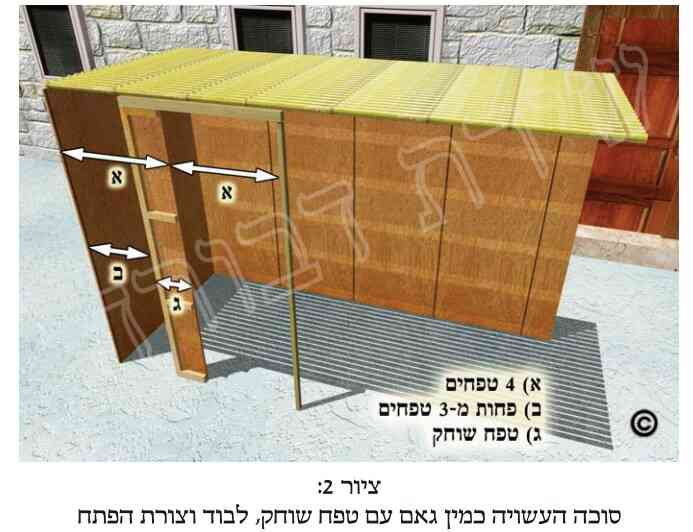
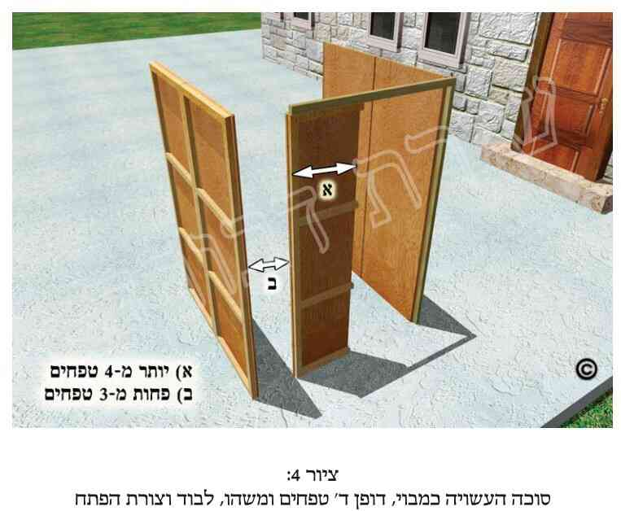
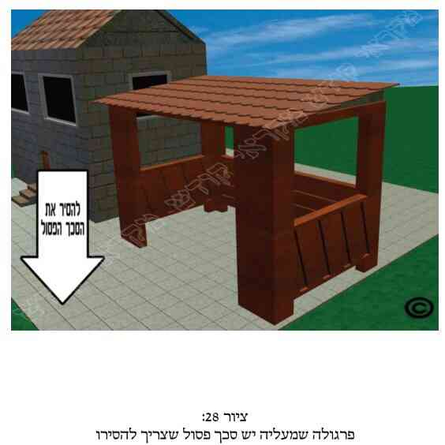
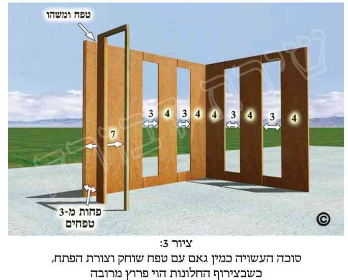
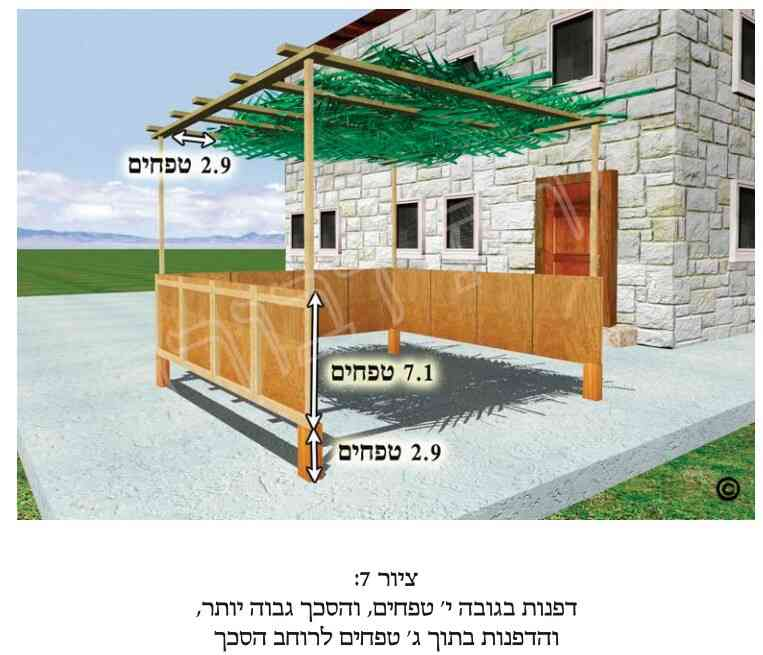
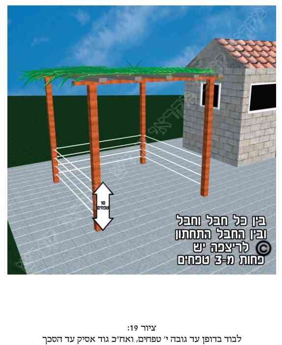

א. דיני דפנות הסוכה רבים הם. דינים אלה כוללים את סוגי החומרים הכשרים לעשיית הדפנות, את דין חוזק הדפנות (עמידתן ברוח וכדומה), וכן דין מבנה הסוכה: מספר הדפנות, גודלן (ברוחב ובגובה) ואופן העמדתן (המרחק והזוית שביניהן), וכמבואר בסייעתא דשמיא לקמן בפרקנו.
יש להעיר, שכיון שבפרק זה ישנן הרבה הלכות עם פרטים רבים, לכן כדי שלא להלאות את הקורא, קיצרנו לעיתים בהלכות, וביקשנו מהקורא לעיין בפרטי ההלכה שבמקורות.
ב. כל החומרים כשרים לעשיית דפנות הסוכה, ומכל מקום לא יעשה את הדפנות מדבר שריחו רע, ולא מדבר שדרכו להתייבש. וכשהדפנות משמשות כ"מעמיד" לסכך, שהן סומכות ומחזיקות אותו האם יש להזהר שהן לא תהיינה מהדברים הפסולים לסכך, ראה כאן במקורות, ולקמן בפרק ד'. ובענין חוזק הדפנות ראה לקמן בפרקנו (בסעיפים ל"ב ואילך).
ג. מצוה מן המובחר (אך לא חובה), שתהיינה דפנות הסוכה סגורות מכל צידיהן, ושלא יהיה שום מקום פתוח או פרוץ חוץ מפתח הסוכה או חלונותיה.
ד. למרות שמעיקר הדין מספיק לעשות את הסוכה רק משתי דפנות שלימות, ודופן שלישית שאינה ממש שלימה (אלא שלימה מדין לבוד וצורת הפתח, וכדלקמן בפרקנו למשל בסעיפים י"ב וט"ו), מכל מקום נהגו לעשות דפנות שלימות, כיון שאין כולם בקיאים בדיני המחיצות. ומי שאין באפשרותו לעשות את סוכתו עם ארבע דפנות שלימות, עדיף שיעשנה בעלת שלוש דפנות שלימות מאשר שיעשנה בעלת ארבע דפנות שאינן שלימות.
ה. נהגו לעשות את הסוכה ריבועית או מלבנית (והיינו בעלת ארבע דפנות), אך אין חובה בכך.
ו. כפי שכתבנו לעיל (בסעיף ד'), אם הסוכה מרובעת, למרות שעדיף לעשותה בעלת ארבע מחיצות, או לפחות בעלת שלוש מחיצות שלימות, מכל מקום מעיקר הדין מספיק לעשותה בעלת שלוש מחיצות, שמהן לפחות שתי מחיצות שלימות (ששיעורן מבואר לקמן בסעיף ז'), והשלישית אינה שלימה, כדלקמן.
ז. שיעור כל מחיצה מהמחיצות השלימות צריך להיות לפחות עשרה טפחים בגובהן, ושבעה טפחים לרוחבן (וראה במקורות). ואילו הדופן השלישית יכולה להיות צרה יותר: מתוקף ההלכה הקדומה (-הלכה למשה מסיני) מספיק שרוחב הדופן השלישית יהיה לפחות טפח אחד. אך למעשה אין מכשירים אלא ביותר מכך, וכפי שיבואר בס"ד בסעיפים הבאים.
ח. ישנם מיקרים שניתן להקל לגבי דפנות הסוכה ולהחשיבן כדפנות שלימות, למרות שאינן כאלה, אם חלים בהם כללים מסוימים, וכגון היתר של "לבוד", היתר של "צורת הפתח", היתר של "גוד אסיק", והיתר של "פי תקרה היורד וסותם", וכמבואר בסעיפים הבאים.
ט. אחד ההיתרים לגבי דפנות הסוכה הינו ההיתר של "לבוד". והיינו שאם יש חלל פחות משלושה טפחים (שהם כעשרים ושלושה ס"מ) נחשב הדבר כאילו יש שם דופן ממשית. ודבר זה אמור אם החלל הינו בין דופן הסוכה לקרקע, וכן אם החלל הינו בין דופן הסוכה המגיעה עד גובה הסכך, לבין הסכך שרחוק ממנה, או אף בדופן הסוכה עצמה, אם הדופן עשויה ממוטות או מחבלים לאורכה (היינו מימין לשמאל) או לרוחבה (מלמעלה למטה) של הדופן, או בפינה המחברת את הדפנות, ובעוד מיקרים. ויבוארו הדברים בעזרתו יתברך, לקמן בפרקנו.
י. היתר נוסף לגבי עשיית דופן לסוכה הינו "צורת הפתח". פירוש הדבר שמניחים מוט או קנה שגובהו לפחות עשרה טפחים (שהם שמונים ושנים ס"מ. ויש אומרים שהם כמטר), ומעליו מניחים בשכיבה מוט או קנה נוסף, שקצהו האחד מונח על גבי המוט העומד, וקצהו השני על ראש הדופן שכבר קיימת. ועוד מדיני צורת הפתח ראה לקמן בסעיפים י"ג, ט"ו, כ"ד, מ"ה וכאן במקורות.
יא. כאשר לסוכה ישנן רק שלוש דפנות, ששתים מהן שלימות והשלישית אינה שלימה (כנ"ל בסעיף ד'), ניתן לבנות את שתי הדפנות השלימות כשהן מקבילות זו לזו (כצורת מבוי מפולש), או כשהן צמודות זו לזו בזוית (בצורת האות רי"ש). וצריך ששתי המחיצות הללו תהיינה מחוברות ביניהן על ידי מגע ממשי, או באופן של "לבוד" (היינו שהמרחק ביניהן קטן מעשרים ושלושה ס"מ, כנ"ל בסעיף ט') אך לא באופן של "צורת הפתח". והדבר אמור הן כאשר הדפנות השלימות צמודות זו לזו בזוית, והן כאשר הדפנות השלימות מקבילות זו לזו, וישנה דופן שלישית המחברת אותן וקרובה אל אחת מהן באופן של לבוד. וכפי שיבוארו בס"ד הדברים בסעיפים הבאים בפרקנו.
יב. כאשר לסוכה ישנן רק שלוש דפנות, שמהן שתי דפנות שלימות הסמוכות זו לזו בזוית (כעין האות רי"ש, כב  שבסוף הספר), ולא ניתן לעשות את הדופן השלישית כשהיא שלימה, יש לעשות את הדופן השלישית המחוברת אל אחת מהן לפחות באופן שכזה: יקח דופן הגבוהה לפחות עשרה טפחים (שהם שמונים ושנים ס"מ. ויש אומרים שהם תשעים ושמונה ס"מ), והרחבה יותר מטפח (והיינו יותר משמונה וחצי ס"מ. ויש אומרים עשרה ס"מ. ואם היא יותר רחבה ודאי שזה עדיף), ויעמידנה על רוחבה במרחק הקטן משלושה טפחים (דהיינו עד עשרים ושלושה וחצי ס"מ. וראה עוד במקורות) מאחת משתי הדפנות השלימות, כך שבינתים יש דופן שדינה כדופן בת ארבעה טפחים. ובהמשך לאותה הדופן, במרחק של שלושה טפחים (או יותר, כמבואר במקורות), יעמיד קנה שגובהו לפחות עשרה טפחים (כנ"ל בתחילת הסעיף), ומעליו יניח בשכיבה עוד קנה אחר בינו לבין הדופן בת הטפח (כך שנוצרה "צורת פתח"). והקנה העליון אינו חייב לגעת בהם, אלא מספיק שיהיה מעליהם (וראה עוד במקורות). ויוצא שהדופן השלישית הינה גם כן בת שבעה טפחים (בשל שלושה גורמים: 1. דופן ממשית שרוחבה יותר מטפח. 2. לבוד מצד אחד. 3. צורת הפתח מצד שני), והסוכה כשרה (וראה פירוט הדברים ב בסוף הספר).
יג. כאשר הסוכה בנויה משלוש דפנות בצורה הנ"ל (כששתי הדפנות השלימות מונחות בצורת האות רי"ש), ולפחות אחת משתי הדפנות השלימות הינה ארוכה יותר משבעה טפחים, ובנו את הדופן השלישית מולה. יש מהפוסקים שמחמירים שהדופן השלישית צריכה להיות באורך הדופן שמולה (באופן ממשי, או על ידי צורת הפתח ארוכה). אך לדעת רוב הפוסקים מספיק שהיא תהיה באורך שבעה טפחים בלבד (היינו מעט יותר מחמישים ושבעה ס"מ. ויש אומרים שהם שישים ותשעה ס"מ), וגם אז כל הסוכה (באורך של הדופן הארוכה) תהיה כשרה במקום שיש סכך.
יד. סוכה ששתי דפנותיה השלימות סמוכות זו לזו בזוית, ויש בה הרבה פרצות, כשרה היא בתנאים מסוימים, כמבואר במקורות. ועוד מיקרים של סוכה שיש לה רק שתי דפנות שלימות והן סמוכות זו לזו בזוית, ראה כאן במקורות.
טו. כאשר לסוכה ישנן רק שלוש דפנות, ושתי הדפנות השלימות מקבילות זו לזו (כצורת מבוא מפולש), יקח דופן הרחבה יותר מארבעה טפחים (והיינו יותר משלושים ושלושה ס"מ. ויש אומרים שהם שלושים ותשעה ס"מ) ויעמידנה כדופן שלישית המאונכת לשתי הדפנות השלימות, במרחק הקטן משלושה טפחים (והיינו פחות מעשרים ושלושה ס"מ. וראה עוד במקורות) מאחת הדפנות השלימות. נוסף לכך יניח למעלה בשכיבה קנה המחבר בין הדופן הקצרה (בת ארבעת הטפחים) לבין הדופן השלימה השניה (כך שתיווצר "צורת הפתח" כנ"ל בסעיף י') והסוכה כשרה. וראה עוד כאן במקורות, ובציורים שבסוף הספר  .
טז. כאשר עושים סוכה כזו (ששתי הדפנות השלימות מקבילות) בתוך חצר המוקפת במחיצות, או כאשר רוחב הדופן האמצעית (המחברת את שתי הדפנות המקבילות) הינו לפחות שבעה טפחים, ועוד מיקרים מעין אלה (שבחלקם אין צריך לעשות "צורת הפתח"), ראה דינם כאן במקורות.
יז. ישנם מיקרים שסוכה שנחשבת כרשות מיוחדת לענין שבת, הינה כשרה כסוכה בשבת של סוכות (למרות שבשאר ימי החג אינה כשרה). ראה על כך במקורות.
יח. כפי שאמרנו לעיל, ישנם מיקרים בהם אין צריך שכל הדופן תהיה דופן ממשית, אלא צריך שרק תהיה כזו שנחשבת על פי ההלכה כמחיצה, כגון על ידי לבוד (כדלעיל בסעיף ט', ולקמן בסעיפים י"ט-כ"ג). ולכן מותר שדופן הסוכה לא תתחיל מגובה קרקע הסוכה, אלא תתחיל מעט יותר למעלה, כך שהמרחק בין דופן הסוכה לקרקע יהיה פחות משלושה טפחים (ששיעורם הינו עשרים ושלושה ס"מ). ויותר מכך, אם גובה הסוכה הינו עשרה טפחים בלבד, אזי מספיק לשים דופן מאוזנת (היינו שוכבת בצורת ערב) שרוחבה יותר מארבעה טפחים (שהינם לפחות שלושים וארבעה ס"מ. ויש אומרים שהם לפחות ארבעים ואחד ס"מ), באופן שהמרחק בינה לבין הארץ יהיה פחות משלושה טפחים, וכן המרחק בינה לבין הסכך יהיה פחות משלושה טפחים (היינו שיש דין לבוד גם למעלה וגם למטה), וכך הסוכה כשרה. וראה עוד לקמן בפרקנו (בסעיפים כ"ח ואילך).
יט. נחלקו הפוסקים האם מותר לעשות את דפנות הסוכה על ידי היתר של "לבוד" בצורה של שתי על ידי מוטות או חבלים (שפירושו שהמוטות עומדים מאונכים מלמעלה למטה) כשהמרחק בין מוט לחבירו הינו פחות משלושה טפחים (שהם עשרים ושלושה ס"מ), וזאת אף על פי שאין בה דופן סגורה ממש. ולמעשה הספרדים מקילים לעשות דפנות באופן זה גם אם יש לסוכה שלוש דפנות בלבד. ואילו האשכנזים מקילים לעשות את דפנות הסוכה באופן זה רק אם יש לסוכה ארבע דפנות (ויש מהם האוסרים לעשות את דפנות הסוכה באופן זה אף אם יש לה ארבע דפנות). ואם המוטות אינם מגיעים לסכך, ראה לקמן (בסעיף ל"ט).
כ. לאור האמור בסעיף הקודם מתבאר, שאם יש מרפסת ששטחה מתיר עשיית סוכה בה, ומרפסת זו מוקפת משלושת צדדיה במעקה העשוי מעמודים שהמרחק ביניהם פחות משלושה טפחים (שהם עשרים ושלושה ס"מ) וגובהם לפחות עשרה טפחים (שהם שמונים ושנים ס"מ. ויש מחמירים שיהיו לפחות תשעים ושמונה ס"מ), הרי שלדעת רוב הפוסקים מעקה זה כשר לשמש כדפנות לסוכה. וראה עוד לקמן (בסעיף כ"ב).
כא. עוד נחלקו הפוסקים האם מותר לעשות את דפנות הסוכה על ידי חבלים או מוטות באופן של לבוד בצורה של עֵרֶב (שפירושו חבלים, מוטות או קרשים, מאוזנים, ה"שוכבים" מימין לשמאל). והיינו שימתח חבלים לאורך דפנות הסוכה מימין לשמאל או להיפך, באופן שהמרחק בין חבל לחבל וכן בין החבל התחתון לקרקע יהיה פחות משלושה טפחים (שהם עשרים ושלושה ס"מ). וצריך שהחבל העליון יהיה לפחות בגובה של עשרה טפחים מהקרקע (ששיעורו מבואר בסוף סעיף כ'), ואז הסוכה כשרה (ואם הסכך גבוה יותר, והמרחק בין החבל העליון לסכך הינו יותר משלושה טפחים, ראה הדין לקמן בסעיף ל"ט). ולמעשה הספרדים מקילים לעשות את הדפנות באופן זה גם אם יש לסוכה שלוש דפנות בלבד, ואילו האשכנזים מקילים לעשות את דפנות הסוכה באופן זה רק אם יש לסוכה ארבע דפנות. ויש מהם האוסרים לעשות את הדפנות כך אף אם יש לסוכה ארבע דפנות. ואופן זה של הקמת סוכה כשרה ובמהירות מתאים במיוחד ליוצאים לטיולים.
כב. אף שיש האוסרים לעשות את דפנות הסוכה על ידי היתר "לבוד" כשהוא רק באופן של שתי (כמוטות עומדים הקרובים זה לזה במרחק של פחות משלושה טפחים), או כשהוא רק באופן של ערב (כחבלים או מוטות מאוזנים המתוחים מימין לשמאל במרחק הנ"ל), מכל מקום כאשר הדפנות עשויות באופן של שתי יחד עם ערב (כגון שיש גם מוטות עומדים וגם חבלים שוכבים, וכנ"ל), הרי שהסוכה כשרה לדעת כל הפוסקים. ואף אם עשה כן רק בשתי הדפנות הנחשבות כשלימות, ועשה את הדופן השלישית כדינה (כנ"ל בסעיפים י"ב וט"ו), הרי הסוכה כשרה.
כג. יש להוסיף על האמור בסעיף הקודם, שאף אם עשה מחיצה של מוטות בצורה של שתי, ובסמוך לה (באותו גובה, מלפניה או מאחריה), תוך שלושה טפחים, עשה מחיצה של ערב, הסוכה כשרה. ולכן במרפסות שיש להן מעקה מפסי ברזל זקופים, וסמוך להם (מבפנים או מבחוץ) יש תריסים העשויים משלבים שוכבים הנפתחים ונסגרים, הרי לדעת כולם זה נחשב כדופן לסוכה (כשהתריס סגור, אף כשהשלבים פתוחים), והסוכה כשרה.
כד. אין לעשות את שיעור החיוב של דפנות הסוכה באופן של "צורת הפתח". ואם עשה כן אין הסוכה כשרה, אלא אם כן עשה זאת בדופן הרביעית, שאותה מותר לעשות באופן שכזה.
כה. אף אם יש פרצות גדולות בדפנות הסוכה, כך שמצד הדפנות (ולא מצד הסכך) "חמתה מרובה מצילתה" (והיינו שבקרקעית הסוכה החלק המוּאר רב יותר מהחלק המוצל), כשרה הסוכה. וראה עוד לעיל בפרקנו (בהערה מ').
כו. אין לעשות את הסוכה כשבכל פינותיה יש פרצה או פתח, אלא חייבים להשאיר לפחות פינה אחת שבה שתי הדפנות מחוברות ממש (בחיבור ממשי או על ידי לבוד, כנ"ל בסעיף י"א), אך לא מספיקה "צורת הפתח". ואף אם עושה את הסוכה בעלת שלוש או ארבע דפנות יעשנה כך שלפחות פינה אחת תהיה סגורה כנ"ל.
כז. כפי שכתבנו לעיל, ישנם מיקרים שניתן להקל לגבי דפנות הסוכה ולהחשיבן כדפנות שלימות המגיעות לסכך, אף על פי שאינן כאלה, וכגון דין "גוד אסיק מחיצתא" (שפירושו משוך והעלה את המחיצה). והיינו כאילו מושכים למעלה את המחיצות הקיימות (שגובהן לפחות עשרה טפחים), ואז ניתן לראות כאילו הן משמשות כדפנות לסוכה. ולכן העושה את דפנות הסוכה כשגובהן לפחות עשרה טפחים מהקרקע, אף שאינן מגיעות עד הסכך, הסוכה כשרה, כיון שאנו מישמים את דין "גוד אסיק", וכאילו נמשכו הדפנות ועלו למעלה עד לסכך.
כח. כפי שכתבנו לעיל (בסעיף י"ח), ישנן מציאויות שמקילים ומתירים לצרף כמה היתרים של לבוד. ולגבי צירופים נוספים של קוּלות שונות זו מזו, נחלקו הפוסקים האם מותר באותה המציאות לצרף כמה קוּלוֹת שונות של הלכות קדומות (שהן הלכה למשה מסיני, כגון גוד אסיק, לבוד, דופן עקומה, חבוט רמי וכדומה). ולמעשה ישנם מיקרים שנפסק להקל בכך, ומצרפים כמה קוּלות כאלה, וישנם מיקרים שהדבר אסור, וישנם מיקרים שאין הכרעה ברורה בדבר. ואם כן תלוי הדבר בכל מקרה ומקרה, כמבואר כאן במקורות ובסעיפים הבאים.
כט. בשל ההיתר שבמקרים מסוימים מצרפים כמה הלכות למשה מסיני, כתבו הפוסקים שכאשר ישנה דופן הגבוהה יותר משבעה טפחים, והניחו אותה במרחק הקטן משלושה טפחים מהקרקע, כך שהקצה העליון של הדופן מגיע לפחות לגובה של עשרה טפחים (שיעורי הס"מ מבוארים במקורות), הסוכה כשרה אף אם הסכך גבוה הרבה יותר מקצה הדופן (מדין "גוד אסיק", כבסעיף הקודם. והיינו שבאותה דופן מצרפים שתי קוּלוֹת: דין לבוד ודין גוד אסיק). וראה עוד בסעיף הבא.
ל. ולא זו בלבד, אלא גם במציאות של הסעיף הקודם (שלמטה בדופן יש לבוד, ולמעלה יש גוד אסיק), אם הסכך אינו מגיע ממש להמשך קו הדפנות, אלא אף אם נמשיך את הדפנות כלפי מעלה (כדין "גוד אסיק מחיצתא") הסכך יהיה רחוק מהן (כיון שאינו מכסה את כל שטח הסוכה), אך פחות משלושה טפחים, הרי שהסוכה כשרה. ויש לזכור שאם אחד מהחללים הללו הינו אויר של שלושה טפחים או יותר, הן בין הדופן לארץ, והן בין הסכך להמשך קו הדפנות, הרי שהסוכה פסולה. ועוד דוגמאות לדין זה של "גוד אסיק" ראה כאן במקורות.
לא. הלכה קדומה (הלכה למשה מסיני) קובעת ש"פי תקרה יורד וסותם". פירוש הדבר שכשישנה תקרה או קורה הנתונות באויר למעלה, רואים כאילו חוד התקרה או הקורה נמשך למטה ויורד וסותם את המקום הפתוח, ונחשב הדבר כאילו ישנה דופן באותו מקום (ראה  ,#39 בסוף הספר). ובאילו מקרים הסוכה כשרה על ידי ההיתר של "פי תקרה יורד וסותם" ראה כאן במקורות.
לב. מותר לעשות את דופן הסוכה חזקה ככל שתהיה. ואף כותל אבנים או בטון, וכן מחיצת ברזל, יכולים לשמש כדופן לסוכה, למרות שהם פסולים מלשמש כסכך. ומאידך אין לעשות את הדופן חלשה. וכתבו כמה פוסקים שצריך לעשות את הסוכה חזקה באופן שתהיה ראויה לעמוד בכל שבעת ימי החג, ואם לא עשאה כך, הרי שהסוכה פסולה.
לג. העושה את הסוכה על הקרקע בין עצים, והעצים משמשים כדפנות הסוכה, צריך שהדפנות תהיינה חזקות כך שרוח מצויה לא תוכל להזיז ולהניד אותם. אם העצים הינם חזקים באופן טבעי, כך שאין רוח מצויה מנידה (באופן המבואר לקמן בסעיף ל"ו) ומזיזה את העצים והענפים הנמצאים מהקרקע ועד גובה של עשרה טפחים (שהם שמונים ושנים ס"מ. ויש אומרים כמטר), הרי שהסוכה כשרה. ואם בכל זאת הרוח מנידה אותם באופן הנ"ל, הריהו צריך לקשור את העצים ולחזקם, וימלא את החלל שבין ענפי העצים בקש, בתבן או בשאר הדברים הכשרים לדפנות, ואם אז הרוח אינה מנידה אותם הרי שהסוכה כשרה. ואם לא עשה זאת והרוח מנידה אותם, הסוכה פסולה. וראה עוד בסעיפים הבאים.
לד. בגלל החשש שיריעות הסוכה המשמשות כדפנות תתנתקנה ברוח, לכן נכון לכתחילה שלא לעשות את דפנות הסוכה מסדינים או מיריעות, אף אם קושרם היטב באופן שחושב שלא ינודו ויזוזו ברוח מצויה (באופן המבואר בסעיף ל"ו). ודבר זה אמור דוקא לגבי הדפנות בגובה של עשרה הטפחים (שהם שמונים ושנים ס"מ, ויש אומרים מטר) הסמוכים לקרקע. ואם אכן הרוח מזיזה את רוב הדופן שעד גובה זה, הרי שהסוכה פסולה (וראה עוד במקורות כאן, ובסעיפים הבאים, ובפרט בסעיף ל"ו).
לה. נחלקו הפוסקים לגבי כמה דפנות מדובר בסעיף הקודם. יש אומרים שהדבר אמור לגבי שלוש מדפנות הסוכה, ורק לגבי הדופן הרביעית אין הדברים אמורים. ויש אומרים שדבר זה חל רק על שתים מדפנות הסוכה. אך מותר לכתחילה לעשות את הדופן השלישית (וכל שכן את הדופן הרביעית) מיריעות הקשורות היטב. והעיקר להלכה שיש להחמיר כדעה הראשונה. ואם נוסף ליריעות עשה גם מוטות או חבלים בצורת שתי וערב, ראה דינו לקמן (בסעיף ל"ח).
לו. חוץ מהדין של חשש שהיריעות תתנתקנה מהרוח, יש דין נוסף לגבי סוכה שדפנותיה עשויות מיריעות. אמרו חז"ל, שאסור שדפנות הסוכה תזוזנה ברוח מצויה. ונחלקו הפוסקים לגבי שיעור תזוזת היריעות ברוח מצויה שבגינו נפסלות הדפנות. יש אומרים שאם הדפנות עלולות לזוז אפילו תזוזה מועטת בשל רוח מצויה הרי שהסוכה פסולה. ויש הפוסלים את הסוכה רק אם רוח מצויה יכולה להניד את היריעה באופן שתפסול אותה (כגון שתחתית היריעה תתרומם לפחות שלושה טפחים מהקרקע, או שתכופף את היריעה כך שלא תהא בגובה של לפחות עשרה טפחים. ויש מסבירים שהיריעה תזוז אנה ואנה לפחות למרחק של שלושה טפחים) וישנן עוד דעות נוספות בענין זה. ולמעשה לכתחילה יש לנהוג כדעה הראשונה, והמיקל כדעה השניה יש לו על מה לסמוך (ולענין אם מותר לברך את ברכת "לישב בסוכה" על ישיבה בסוכה העשויה כדעת המקילים, ראה כאן במקורות).
לז. העושה את דפנות הסוכה מיריעות העלולות לזוז ברוח, וללא מוטות הקרובים זה לזה (כנ"ל בסעיף ל"ד), אך עשאה בתוך מקום המוקף מחיצות, וכגון בתוך חצר בעלת קירות או בתוך בית (באופן שפתח את גג הבית, והסכך כשר), ובשל כך אין הרוח מזיזה ומנידה את הדפנות באופן שהסוכה נפסלת, נחלקו הפוסקים אם הסוכה כשרה. ונראה שדעת רוב הפוסקים לאסור. ומכל מקום המיקל בכך יש לו על מה לסמוך.
לח. לאור כל הנ"ל כתבו הפוסקים, שהעושה את דפנות הסוכה מסדינים, מיריעות, או מכל דבר שעלול להתנתק מחיבורו ובשל כך לזוז מהרוח באופן שהסוכה תפסל, טוב שיתקע לאורך היריעות מוטות ארוגים בצורה של שתי וערב, שהמרחק ביניהם הינו פחות משלושה טפחים (ששיעורם עשרים ושלושה ס"מ), ואז אף אם הרוח מזיזה את היריעות הרי שהסוכה כשרה בשל המוטות (ואף למחמירים לעיל בסעיפים י"ט וכ"א, במקרה שלנו מספיק לעשות רק שלוש דפנות).
לט. לאור הנ"ל יש לדון אם מועיל להניח חבלים, מוטות וכדומה, כשהם שוכבים או עומדים בצמוד ליריעות הסוכה, באופן שהמרחק בין החבלים או המוטות הינו פחות משלושה טפחים (שהם עשרים ושלושה ס"מ), אלא שהדבר נמשך רק עד לגובה של עשרה טפחים (שהם שמונים ושנים ס"מ. ויש אומרים שהם מטר אחד) ואילו המרחק בין החבל (או המוט) העליון לבין הסכך הינו יותר משלושה טפחים. ודבר זה נמצא במה שנקרא "סוכות לנצח" (כשיש בהן לבוד על ידי רצועות או מוטות). ונהגו העם להקל בזה, ובפרט כשהלבוד נעשה על ידי מוטות.
מ. סוכה הנמצאת בראש הספינה, או על גבי מכונית, עגלה וכדומה, צריך שתהא חזקה באופן שרוח רגילה של יבשה לא תעקור ותעיף את הדפנות או את הסכך.
מא. לדעת פוסקים רבים יש להקדים את העמדת הדפנות להנחת הסכך על הסוכה. לדעת הספרדים יש להזהר בכך לכתחילה, אך בשעת הדחק רשאים הם להקל בכך ולהקדים את הנחת הסכך לעשיית הדפנות. וכן בדיעבד אם שמו את הסכך לפני העמדת הדפנות, למנהגם הסוכה כשרה, ואף רשאי לברך עליה את ברכת "לישב בסוכה". ואילו האשכנזים מחמירים בכך יותר, ולדעתם לא רק שיש להזהר בכך לכתחילה, אלא אף בדיעבד, אם כבר הקדים את הנחת הסכך להעמדת הדפנות (כגון שהניח את הסכך על השלד של הסוכה, כשאין עדיין מספיק דפנות להכשר הסוכה), לדעתם הסוכה פסולה, ולא יברך עליה את ברכת "לישב בסוכה". ויש לכך עוד השלכות, וכגון כשהוציאו דופן (שהוצאתה פוסלת את הסוכה) או שהדופן נפלה, האם הסוכה נפסלה גם אם יחזירו את הדופן למקומה. וכן המותר להחזיר דופן זו למקומה בשבת או ביום טוב, משום שיוצא שבונה את הסוכה בשבת או ביום טוב. וראה על כך בסעיפים הבאים, ולקמן (בפרק ו' סעיף ח').
מב. סוכה שיש לה רק שלוש דפנות, ואחת הדפנות שלה עשויה מדלת הנפתחת ונסגרת, וכגון מרפסת הסגורה על ידי תריסים או דלתות הזזה, שבשעה שפותחים אותם אין די דפנות לסוכה כדי להכשירה. כתבו הפוסקים, שבזמן שהדלתות סגורות הסוכה הינה כשרה, וכאשר הן פתוחות הסוכה פסולה. ולכן יש להזהר שהדלתות תהיינה סגורות בעיקר בעת שאוכל וישן בסוכה (וראה בסעיף הבא אם לאחר שסגר את הדלת עליו להגביה את הסכך). ולפי האמור בסעיף הקודם, צריך להזהר שהדלתות תהיינה סגורות בעת ששם את הסכך, ויש אומרים שתהיינה סגורות מעת ששם את הסכך עד כניסת החג. וראה עוד בסעיפים הבאים.
מג. לפי הפוסקים המחמירים לעיל בסעיף מ"א, נחלקו הפוסקים במחלוקת נוספת. יש אומרים שאם במשך החג פותחים את הדלת ולאחר מכן סוגרים אותה, או שאחת הדפנות נפלה והחזירוה למקומה, אין צריך להגביה את הסכך כדי להכשירו מחדש. ויש מחמירים ומצריכים להגביה את הסכך גם במקרה זה. ונראה שלדעת רוב הפוסקים יש להקל בכך. אך במקום שניתן הדבר רצוי להחמיר בכך.
מד. במקרה הנ"ל בסעיפים הקודמים, פוסקים רבים סוברים שכיון שפתיחת הדלתות והתריסים פוסלת את הסוכה, וסגירתן מכשירה את הסוכה, הרי שאסור לסוגרם ולפותחם בשבת וכן ביום טוב. ויש מהפוסקים המתירים זאת. ולמעשה לכתחילה יש להמנע מכך בשבת וביום טוב, והמיקל יש לו על מה לסמוך. ועל ידי גוי יש יותר מקום להתיר זאת, גם כשאין הכרח בכך. ומכל מקום בחול המועד מותר לפתוח ולסגור דלתות ותריסים אלה אף על ידי יהודי (ואם צריך אז שוב להגביה הסכך, ראה לעיל בסעיף מ"ב). אלא שלאור כל הנ"ל מתבאר, שעדיף לכתחילה שלא לעשות סוכה בת שלוש דפנות בלבד כשהדופן השלישית הינה דלת, תריס וכדומה.
מה. יש מהפוסקים הסוברים שאם הסוכה מחולקת באמצעה על ידי דלת, הרי שבזמן שהדלת סגורה נחשב הדבר כאילו ישנן אז שתי סוכות נפרדות. ולכן אם באחד מחלקי הסוכה הזו אין שיעור הדרוש לגודל הסוכה, הרי שמקום זה אינו נחשב כחלק מהסוכה. וכן יש לנהוג למעשה. ויש לכך עוד השלכות, כמבואר כאן במקורות. אך במקרה שבין שני חלקי הסוכה יש רק "צורת הפתח", ללא דלתות, אף שיש מחמירים גם בכך לענינים מסוימים (כמבואר במקורות), מכל מקום במקרה זה למעשה יש להקל, ואין "צורת הפתח" מחלקת את הסוכה.
מו. כתבו הפוסקים, שבכל מקרה שישנה מחלוקת בדיני סוכה, אם מדובר בדבר שהינו מן התורה, הרי שיש להחמיר. ולכן יתקן את סוכתו שתהיה כשרה אף לדעת המחמירים, או שילך לסוכה אחרת כשרה. ואם אין סוכה אחרת, יאכל, יישן וכו' בסוכה זו, אך מבלי לברך את ברכת "לישב בסוכה". ואם מדובר בדבר שהינו מדרבנן (היינו מדברי חכמים, ולא מהתורה), מן הראוי להחמיר וללכת גם במקרה זה לסוכה אחרת שהינה כשרה. ואם אין לו סוכה אחרת, יישן, יאכל וכו' בסוכה זו, ויש מקום לומר שאף יברך את ברכת "לישב בסוכה".
מז. אם עושה דופן אחת או יותר מיריעות יזהר שלא יהא בהן איסור שעטנז. ואיסור זה אמור מתחתית הסוכה ועד הגובה שבני אדם מגיעים אליו.
מח. דין דופן עקומה ראה לקמן (בפרק ד'). ועוד מדיני הדפנות ראה כאן במקורות.
&הערות:
[1] א. עפ"י הטור (סס"י תרכ"ה), וכמבואר בגמ' מס' סוכה ובשו"ע (דיני סוכה).
ומה שכתבנו שהלכות אלה מתייחסות לדפנות הסוכה, אין הכוונה דוקא לדפנות מעץ, אלא מכל חומר שההלכה מתירה, וכדלקמן.
גבי סוגי החומרים המותרים לשמש כדופן ראה לקמן בסעי' ב'. וגבי חוזק הדפנות ראה לקמן בפרקנו (סעי' ל"ב ואילך).
[2] ב. גבי אופן העמדת הדפנות הכוונה באיזו זוית נמצאות הדפנות זו ביחס לזו, ומה המרחק ביניהן, והיינו סוכה העשויה בצורת גאם (אות יוונית שצורתה כמו האות רי"ש) או שהדפנות מקבילות זו לזו. וכן כולל דבר זה דין לבוד, צורת הפתח, דין פרוץ מרובה על העומד, דין גוד אסיק מחיצתא, דין פי תקרה יורד וסותם וכדו'. כמו כן דננו בס"ד גבי דופן המשמשת כדלת שלעיתים נפתחת, הנחשבת דלת זו כדופן לסוכה, וכן גבי סוכה המחולקת באמצעה. וה' יעזרנו לכוון לאמיתה של תורה ולהסביר הדברים בצורה פשוטה וברורה.
כפי שכתבנו בהלכות, פרק זה דיניו רבים, מפורטים וקשים, והוא כולל סוגיות קשות שבש"ס. תחילה כתבנו את ההלכות בפרק זה בצורה מאוד מפורטת אף לגבי מציאויות שאינן שכיחות כל כך. אך כדי להקל על הקורא ולא להכביד עליו העברנו כמה מההלכות למקורות, למען ירוץ הקורא בו.
[3] ג. עיקר ד"ז שנינו במשנה סוכה (די"ב,א'), וכ"פ מרן (סי' תר"ל ס"א) וש"פ.
והטעם, דמשמעות הכתוב דסוכות תעשה באספך מגרנך ומיקבך, שממנו למדים דיעשה הסוכה מפסולת גורן ויקב דהוא דבר שאינו מקבל טומאה ושגידולו מן הארץ, כל זה קאי אסכך דוקא, דהוא נקרא סוכה ואין הדפנות נקראות סוכה [עפ"י רש"י סוכה (די"ב,א'), מרן בב"י, ט"ז (סי' תר"ל סק"א), מ"ב (סי' תר"ל סק"א), כה"ח (סק"א) וש"פ. וע"ע בט"ז (שם) ובשעה"צ (סק"א)].
כ' בהגהות אשרי בשם האו"ז (ח"ב סי' רפ"ט) שיש להחמיר לענין הדפנות כמו לענין הסכך, בדבר שפסולו מדאו'. ע"כ. הב"ד הד"מ. וכ' הב"ח (סי' תר"ל) שבעל נפש יחוש לכך. אמנם הא"ר (רס"י תר"ל סק"א) והגחיד"א במחב"ר ובברכ"י (רס"י תר"ל) כתבו דלית מאן דחש להא. וגם הגר"א דחה ראייתו מהירו'. הב"ד בשע"ת (סי' תר"ל סק"א), המ"ב בבה"ל (רס"י תר"ל ד"ה "כל הדברים") כה"ח (סי' תר"ל סק"ב), חזו"ע (סוכות. עמ' א' סק"א) וש"א, והסיקו גם הם להקל. והוסיפו שאדרבא, כ"מ מהגמ' בסוכה (דף ב'), דפשיטא לה לגמ' דשרי לעשות מחיצות של ברזל, אע"ג דאסור לסכך בהן. וע"ע כה"ח (שם, ובסקי"א) וחזו"ע (שם). אמנם הגר"א כתב טעם אחר לחוש שלא לעשות הדפנות מדבר הפסול לסכך מדאו', ולסמוך עליהם את הסכך, והוא עפ"י מש"כ כמה אחרו' להחמיר ולחוש לד' כמה ראשו' דאין להעמיד הסכך בדבר הפסול לסכך בו, גזירה שמא יבוא לסכך בהן. ר' ע"כ בשו"ע (סי' תרכ"ט ס"ז) ובנו"כ, בבה"ל (רס"י תר"ל ד"ה "כל") וסה"ס (פ"ו ס"א). ובענין מעמיד הפסול לסכך ר' מה שנכתוב בס"ד לקמן (בפרק ד' סעי' ל"ה-מ"ד).
[4] ד. בענין דפנות העשויות מדבר שריחו רע, כ"כ הרשב"א בסוכה (די"ב,ב' ד"ה "א"ר יהודה"), וכ"כ הר"ן והרמ"א (סי' תר"ל ס"א). והטעם, דחיישיינן שמא מחמת הריח יצא מהסוכה [הרשב"א (שם). מ"ב (סק"ד). כה"ח (סק"ח)].
ובדיעבד שפיר דמי אפי' בסכך, אא"כ הריח רע מאוד שאין דעת אדם סובלתו, דאז אפשר דפסול מה"ת, דבעינן "תשבו כעין תדורו" [מש"ז. מ"ב (סי' תר"ל סק"ד) וכה"ח (סק"ח)].
דין סוכה שמגיע אליה ריח רע מבחוץ, ר' במ"ב (סי' תר"ל סק"ד), בכה"ח (סק"ט) וש"פ.
בענין דפנות העשויות מדבר שדרכו להתייבש, כ"כ הרמ"א (סי' תר"ל ס"א). והטעם כתב הרמ"א, משום שכשיתייבש לא יהא בו שיעור מחיצה. ע"כ.
ובענין ממתי חל פסול זה, האם מעיקרא – כבר משעשה הסוכה או רק משהתייבשו הדפנות. אמנם מדברי הרמ"א משמע לכאו' שאין לאסור זאת מעיקרא, מדכתב בלשון שרק לכתחי' אין לעשות כן (אך אין לדייק מדבריו שבדיעבד ודאי שרי. דהא אם אין שיעור למחיצה פשיטא שהסוכה פסולה אף בדיעבד). אך בד"מ (הארוך. רס"י תר"ל) מבואר עפי"ד הר"ן, שגם בני"ד פסולה הסוכה מעיקרא ולא רק מעת שהתייבש. וזאת למרות שאין הדבר מבואר ברשב"א. עיי"ש. וכ"פ האחרו' [מ"ב (סי' תר"ל סק"ה), כה"ח (סק"י) וש"א] עפי"ד הרמ"א גבי הסכך (בסי' תרכ"ט סי"ב), דאע"ג שעתה אינו יבש, מ"מ כל דבר שדרכו להתייבש תוך ז' ימים דיינינן ליה כאילו כבר עתה הוא יבש. והיינו שאין הסוכה ראויה להתקיים במשך כל ז' ימים. ולכן אין אדם יכול לומר שדפנותיו לא תתייבשנה, אלא שבכל מקרה הדפנות פסולות. וכן עולה מדברי הפוס' שלא חילקו בין סוכה שכבר יבשה לסוכה שעתידה להתייבש. וכן מסתבר, דאל"כ נתת דבריך לשיעורין, שכ"א יאמר שאצלו עדיין לא התייבש.
אמנם לענ"ד בס"ד יש לדון גבי מקרה שאפי' שכל הדברים המרכיבים את הדופן יתייבשו, בכ"ז תשאר הדופן כשרה מדין לבוד וכדו', הרי שלכאו' יש להכשיר הסוכה, דמה שהחמירו הוא רק מצד שמא יתייבש ויפסול הסוכה, שבזה היא פסולה כבר מעתה. אך אם גם לאחר שיתייבש עדיין תשאר הסוכה בכשרותה, בזה לכאו' אין לגזור. ואע"ג דחיישינן ששוב ניתן תורת כל אחד בידו, שיטען שעד סוף החג תשאר עדיין הסוכה בכשרותה לא מצד שלא יתייבש אלא מצד שגם לאחר שיתייבש עדיין היא תהיה כשרה, מ"מ נראה בס"ד שלא אסרו בזה.
ואי פסול היובש ב"דפנות" היינו מדאו' או מדרבנן. הנה לענין יובש ב"סכך" נחלקו בזה הפוס'. ר' מ"ב (סי' תרכ"ט סקל"ה), שעה"צ (שם סקנ"ה), ולקמן (בפרק ד' סעיפים כ"ט ול'). בס"ד נלע"ד שבני"ד הוי מדרבנן אף לאוסרים שם מדאו', כיון דהכא מקור ד"ז הינו הרמ"א מדנפשיה, משא"כ גבי הסכך כבר נזכר הדין בגמ' עצמה. אמנם חכ"א אמר שיתכן שהמחמירים התם דהוי מדאו', יתכן שיאמרו דה"ה בני"ד, משום שלדעתם צריך שהסוכה תהיה ראויה לדירה לכל שבעה. ואין זה משנה אם הפסול הוא בדפנות או בסכך. עכת"ד. וצ"ע.
ענפי אילן שהעלים נושרין, אינם פסולים אלא לסכך, משום שנושרין על השלחן [רשב"א סוכה סוף די"ב,ב' ד"ה "א"ר יהודה"). גר"א (סי' תר"ל ס"א). כה"ח (סי' תר"ל סקי"א)]. ועולה מדברי הרשב"א שם, שלצורך דפנות הינם כשרים. ולכאו' צ"ע מדוע הינם כשרים, הרי סו"ס לא יהיה בו שיעור מחיצה, כדבר שמתייבש. אלא שבאמת הרמ"א בד"מ (רס"י תר"ל) כ' שהפסול הו"ד כשלא נשאר שיעור בדופן. וכ"כ במפה (רס"י תר"ל), שהפסול הינו כשלא ישאר בו שיעור מחיצה. וא"כ במקרה שישאר הגבעול, אף כשינשרו העלים מ"מ תשאר הדופן בכשרותה מדין לבוד וכדו', הרי אין לפסול הסוכה. וא"כ הרמ"א חידש בני"ד ב' דברים: 1) עצם דין היובש שהוא גם בדפנות, ולא רק בסכך. 2) שכ"ז הו"ד שלאחר שיתייבש לא ישאר שיעור במחיצה.
[5] ה. דין מעמיד דסכך (וכגון שהסכך נשען על הדפנות), שיש להחמיר בו כחומרות הסכך עצמו (היינו שאינו מקבל טומאה, ושלא יהא מחובר לקרקע אלא תלוש) נזכר במרן וברמ"א (סי' תרכ"ט ס"ז). מ"ב (סי' תרכ"ח סקי"ז. סי' תרכ"ט סקכ"ב. וסי' תר"ל סקנ"ט). שעה"צ (סי' תר"ל סק"ס). בה"ל (רס"י תר"ל). סה"ס (פ"ו הערה 3 וסעי' י"ד. ופ"ט סעי' מ' ואילך) וש"פ.
דין דברים המקבלים טומאה נלמד בגמ' סוכה (די"ב,א') מהפס' "באספך מגרנך ומיקבך" (דברים פרק ט"ז פס' י"ג), שבפסולת הגורן והיקב הכתוב מדבר. והיינו שיעשה סוכה (והיינו סכך) שיש בו ג' תנאים אלה: שהינו ממין צומח, מדבר שאינו מקבל טומאה ושיהא תלוש מהקרקע. וכ"פ מרן (סי' תרכ"ט ס"א). והיינו פסולים מדאו'. ור' ע"כ בסה"ס (ריש פ"ח) ולקמן (בפרק פסולי הסכך).
ועוד בענין אי שרי לעשות דפנות מדבר המקבל טומאה ר' בחזו"ע (סוכות. דיני הדפנות סעי' א').
[6] ו. כ"כ הרי"ץ גיאת גבי סוכה של ג' דפנות, דלמצוה מן המובחר בעינן שיהיה דפנות הסוכה סתומות מכל רוחותיה, ולא יהא מקום פתוח אלא מקום הפתח בלבד. ע"כ. הב"ד המ"ב (סי' תר"ל סקכ"ח) וכה"ח (סקמ"ג). וע"ד הרמ"א (בסי' תר"ל ס"ה) שכ' שנהגו לעשות מחיצות שלימות, הוסיפו, שר"ל שלא לעשות מחיצות ע"י עצות של לבוד וצוה"פ. ע"כ.
[7] ז. עיקר ד"ז הוא מדברי הרי"ץ גיאת הנ"ל (בהערה הקודמת). ואמנם הזכיר שם רק דין הפתח ולא החלונות.
ובאשר לדין החלונות אי ממעטים שיעור הדופן. הנה הרמב"ם (פ"ד מסוכה הי"ב) כ' וז"ל: סוכה שיש לה פתחים רבים, ויש בכתליה חלונות הרבה הרי זו כשרה, ואע"פ שפרוץ מרובה על העומד. ובלבד שלא יהיה שם פתח יתר על עשר. עכ"ל (וכ"כ בחזו"ע הל' סוכה די"ב ס"ז). והנה לכאו' כיון שהזכיר חלונות בחדא מחתא עם פתחים, לכאו' משמע שחלונות ממעטים כפתחים. אך באמת מהמשך דבריו שהזכיר רק הא דפתחים ממעטים, וכן דין פתח יתר על עשר, משמע שאין החלונות ממעטים שיעור הסוכה. אך צ"ע אי אכן דיוק זה נכון בדברי הרמב"ם. ועוד, דלא ברירא לן שהרמב"ם התייחס בדבריו גם לענין הקרן (ובכלל כל דין חיבור הקרנות הינו מהר"ן, אך לכאו' לרמב"ם לא ס"ל כלל ענין זה. וצ"ע). ובפשטות אכן נראה שלרמב"ם דין החלונות כדין פתח ממש, אך ישנו צד גם לומר ההיפך. ובפרט שחלונות לכאו' פשוט שעדיפים על צוה"פ.
אמנם גבי דפנות המחוברות זל"ז בזוית (בצורת גאם, ובלשון רבותינו הראשו' ז"ל נקראת "עריבן", וכדלקמן בסעי' י"ב), כבר כתב הג' החזו"א (או"ח סי' ע"ה ססקי"ד) וז"ל: "ומזה יש ללמוד דחלונות פחות מג' באורכן וברוחבן, אין פוסלין אף בקרנות הסוכה, ולמטה מי' סמוך לארץ. וכן אם אורכן ג' ואין רוחבן ג' או איפכא, אין פוסלין כיון דאיכא ד"ט עומד והשאר לבוד. אבל חלון באורך ורוחב ג', אף אם מיעטה בחללה משהו מן ב' הדפנות דעריבן, דהיינו שיעור ז"ט בתחילת הדפנות של ב' הדפנות כמין ג"ם פוסלת, והוא שלא נשאר י"ט גובה עד החלון. עכ"ל. והיינו כל שיש חלון לפחות באורך ג"ט ורוחב ג"ט, וכולו או חלקו נמצאים בתוך י"ט מהקרקע, ה"ז נחשב כפתח בקרן הסוכה וחשיב שאין שתי הדפנות השלימות מחוברות זל"ז. והטעם, דיוצא שאין שם דופן ברוחב זע"ז ובגובה י"ט. ואם החלון היה פחות מג"ט בגובהו, הרי שמ"מ היינו מכשירים ע"י לבוד בגובה. ואם החלון היה פחות מג"ט ברוחב, היינו רואים כאילו הדופן שלימה מדין לבוד. וא"כ לדבריו רק כשישנם ג' תנאים הסוכה פסולה: כשהחלון לפחות בחלקו תוך י"ט, ושהוא גדול לפחות ג"ט על ג"ט.
וכעין דברי החזו"א הללו כתב גם בספר הלחב"ח (קארפ. פ"ה ס"ו עמ' ק"ז) שאפי' אם היה פרוץ ביניהם באופן שאין דינו כפרצה, כגון שהעומד שם מרובה על הפרוץ, או שהיתה שם צורת הפתח, "או שהיה שם חלון שיש באורכו ורוחבו שלושה טפחים על שלושה טפחים ונכנס לתוך חלל עשרה טפחים אינו מועיל לחברן". עכ"ל. וצ"ע אי דבריהם הינם לכו"ע, בשל הדיוק הנ"ל מהרמב"ם שלא חילק בין אם החלונות הינם בתוך י"ט או מעל י"ט.
ועוד כתב החזו"א (באו"ח סי' ע"ז סק"ה סוד"ה "חלון"), דנראה שכל חלון בכותל פחות מגובה י' ורחב ד' חשיב פרצה, ולא חשיב הכותל כצוה"פ, דאין צוה"פ בפחות מחלל י"ט ורחב ד', וכמבואר בביאור הגר"א סי' שס"ג סעי' כ"ו, באינה גבוהה י"ט. ונראה דה"ה באינה רחבה ד' לדעת הטור, ודלא כמש"כ לעיל סי' י"א ס"ק ט"ו. עכ"ל.
א"כ אלה דברי החזו"א גבי חלונות, ולא ראיתי בפוס' מי שחולק ע"כ. וע"ע בחזו"א (שם סי' ע"ה ססקי"ד), שאם החלון ממעט משיעור הדופן רק טפח על טפח, אפשר שאין לחוש (ולא זכיתי להבין טעמו). וע"ע בחזו"א (שם ובסקט"ז), ובסה"ס (פ"ז. בפסקי החזו"א המובאים בעמ' מ"ג-מ"ד). ואכמ"ל.
וכל זה, שאין לעשות הפתחים בקרנות, שייך בין לספרדים ובין לאשכנזים, וכדלקמן בפרקנו (בהערה ס"ט).
ומ"מ לענין ני"ד נראה עפי"ד הרמב"ם הנ"ל, שעשיית חלונות בדפנות הסוכה אינן גורעות מהידורה, ונחשבות הדפנות כסגורות, אא"כ גורם הדבר לחוסר צניעות, וכגון שאינו יכול לישן שם כשאשתו עמו, כמבואר ברמ"א (סי' תרל"ט ססע"י ב'), או בחתן שבשל החלונות אינו יכול לשמוח עם כלתו (כמבואר למשל בשעה"צ סי' תר"מ סק"נ). וה"ה אם החלונות גורמים לקור (כגון שאין זגוגיות) שעושה שיצטער (וכמש"כ הרמ"א בסי' תרל"ט ס"ב), או שאר היזקים, כהיזק ראיה או רעש. הא לא"ה לכאו' יש עדיפות לחלונות בסוכה, דהאויר יפה לו להרחיב דעתו (עפ"י רש"י סוכה דכ"ח,ב'. ואף שכתב כן גבי בר ממטללתא, מ"מ למדים העיקרון משם דאויר יפה ללימוד). ור' עוד במרן (סי' תרל"ט ס"ד) ובנו"כ. ואכמ"ל.
[8] ח. עיקר ד"ז דדי בב' דפנות שלימות ושלישית שאינה ממש שלימה, הוא עפ"י המשנה בסוכה (ד"ו,ב'), שאמרו דבעי שתים כהלכתן ושלישית אפי' טפח, וצריך צורת הפתח וכו'. ולמדו זאת שם בגמ' מקראי, דכתיב "בסכת", "בסכת", "בסכות", ר"ל שנים חסרים וא' מלא בוא"ו חשוב שנים, הרי ארבעה. חד לגופיה וג' לדפנות. ואתאי הלכתא הלל"מ, וגרעתא לשלישית ואוקמא אטפח. ע"כ. וכ"פ הטור, מרן (סי' תר"ל ס"ב) וש"פ. וכדלקמן.
וכל זה גבי סוכה של ג' דפנות העשויה כמין גאם. ואילו גבי סוכה של ג' דפנות ששתים השלימות מקבילות זל"ז, ג"ז מהגמ' סוכה שם בשם ריב"ל. וכ"פ מרן (בסי' תר"ל ס"ג) וש"פ. וג"ז כדלקמן בס"ד בפרקנו גבי לבוד, צוה"פ וכו'.
[9] ט. כלבו. רמ"א (סי' תר"ל ס"ה).
[10] י. מהרי"ל. רמ"א (סי' תר"ל ס"ה).
[11] יא. מ"א. שעה"צ (סי' תר"מ סק"נ).
[12] יב. שכן מבואר בשו"ע (סי' תרל"ד ס"ב) גבי סוכה עגולה, וכן מבואר בדברי הפוס' גבי סוכה בת ה' דפנות או יותר [ראה מ"ב (סי' תרל"ד סק"ד) ובש"פ]. ופשוט.
הסתפקתי גבי סוכה שזויותיה אינן בנות תשעים מעלות אלא יותר מכך, והיינו זויות קהות. וכגון שהיא בזויות הראויות לסוכה בת שמונה דפנות, אלא שבאמת יש לה רק ג' דפנות. ונראה בס"ד עפי"ד הפוס', שבכגון דא לא מהני ג' דפנות, כי יש בזה ג' דינים: א. יש דין מס' הדפנות, והיינו לפחות ג' דפנות. ב. יש דין שהסוכה תהיה סגורה. ג. שבתוכה יהיה דין ריבוע זע"ז. ולגבי הא דהסוכה צ"ל סגורה, הרי שאין הכוונה שחשוב מהו החלק היחסי הסגור או הנראה כסגור, יחסית לכל הסוכה אם היו בה את כל דפנותיה. אלא הכוונה שהסוכה נראית כחדר מוגבל בדפנות. ולכן בסוכה בת ארבעה צדדים א"צ דוקא ג' דפנות שלימות אלא די בב' דפנות ועוד. דכשאדם נמצא בה וישן בה הוא מרגיש שהוא נמצא במקום סגור ומוגבל. וזה "תשבו" כעין תדורו. כך בס"ד נלע"ד. אך לא ראיתי שהפוס' כתבו כן. וכיון דבעי שתהא סגורה, הרי לא יתכן לעשות סוכה מחומשת או יותר מכך בעלת ג' דפנות בלבד, משום שהיא פתוחה עדיין יותר מהמותר. דאם נרחיב הקולא, נאמר שאף בסוכה בת שמונה דפנות יכולות למעשה להיות בה רק ג' דפנות. ובזה לכאו' ברור דלא מהני, דרובא פתוחה. וא"כ גם בסוכה בת ה' דפנות לא מהני ג' דפנות. אמנם יש לדון בס"ד גבי סוכה שצורתה מתומנת (ח' דפנות) אלא שיש לה רק ה' או ו' דפנות. האם כיון שרוב דפנותיה עשויות, וגם ניכרת בה צורת חדר סגור, האם בזה מהני ה' או ו' דפנות, או שעכ"פ בעי ז' דפנות, והיינו דלעולם בעי שרק דופן א' תהיה פתוחה, כמו סוכה מרובעת בעלת ג' דפנות. ובס"ד נראה עיקר שכיון שרוב דפנותיה של הסוכה קיימות, וגם ניכרת בה צורת חדר סגור, לכן בסוכה מתומנת די בשש ואף בחמש דפנות. וצ"ע אי סגי בארבע דפנות (כיון שאז כבר צורת חדר לה). ובסוכה בעלת ז' דפנות סגי בחמש דפנות ואולי אף בארבע. ובסוכה בעלת שש דפנות די בארבע דפנות ואולי אף בשלוש. וכן גבי סוכה בעלת חמש דפנות ודאי סגי בארבע דפנות ואולי אף בשלוש. כך בס"ד נלע"ד.
אמנם כעבור זמן חשבנו שאולי אין הדבר תלוי בהרגשתו של האדם הנמצא בסוכה. שהרי אם הסוכה בעלת ג' דפנות, וכולן שלימות כדבעי בעלות לפחות ז"ט, אך הדופן האמצעית הינה ארוכה למשל באורך של קילומטר. הרי אדם הישן והאוכל בה לא מרגיש כלל שהוא נמצא במקום סגור, אע"פ שהוא יודע שהוא נמצא בסוכה כשרה. אך באמת מצד עיקר הדין נראה שאכן סוכה זו הינה כשרה. ולא ראיתי בפוס' טעם לפסול אותה.
ושאלתי את הג"ר אברהם יצחק אולמן שליט"א בענין סוכה בעלת דפנות מרובות. וכגון בעלת שמונה דפנות. כמה דפנות לפחות צריך שתהיינה בסוכה זו על מנת שתהיה כשרה. ואמר לי הגרא"י אולמן שלדעתו די שסוכה כזו תהיה בעלת שלוש דפנות בלבד. ושאלתי מדוע, הרי אין ניכר שהסוכה סגורה שהרי כשיש מספר דפנות רב לסוכה, לא בפועל, אלא מצד הזויות שבין הדפנות, הרי ששלוש הדפנות הקיימות הינן כמעט בקו ישר. ואין ניכר כמעט שזו סוכה. וענה לי הגראי"א שליט"א שאכן די בשלוש דפנות אך צריך שהזוית שביניהן תהיה בת תשעים מעלות. ושאלתי, אך אם הסוכה בעלת יותר מארבע דפנות הרי שהזוית הינה יותר מתשעים מעלות בין הדופן האמצעית לבין כל אחת מהדפנות הצמודות לה. וענה לי הגראי"א שאף אם אין זוית מדויקת של תשעים מעלות בין הדפנות אלא יש הפרש נוסף של עשר מעלות, גם אז הסוכה כשרה. ושאלתיו, אם כן מהו הגדר ההלכתי. האם בהפרש נוסף של עשר מעלות (והיינו שהזוית בין הדופן האמצעית לבין למשל הדופן הימנית הינו מאה מעלות), בזה עדיין הסוכה כשרה, אך בהפרש נוסף של אחד עשר מעלות הסוכה כבר פסולה. הרי צריך להיות גדר ברור לכך. ואמר הגראי"א שאכן צריך לעיין בדבר. והוספתי את מה שחשבנו בס"ד וכתבנו לעיל, שלכאו' הגדר הוא שצריך שהאדם היושב בסוכה והישן בה ירגיש שהוא נמצא במקום סגור, דבעינן "תשבו" כעין תדורו. ואמר הגראי"א שאכן זו סברא טובה, אך צריך מקור כתוב לכך. ואמרתי שלפי"ז סוכה בת ג' דפנות שלימות בזוית בת תשעים מעלות ביניהן, אך הדופן האמצעית הינה ארוכה מאוד, למשל באורך של קילומטר, ויש לה סכך כדבעי, הרי בסוכה כזו אין האדם מרגיש שהוא נמצא במקום סגור, למרות שמצד הדין לכאו' היא כשרה. וא"כ הסברא שלנו לגדר הנ"ל אינה נכונה. וענה הגרא"י אולמן שליט"א שנראה שבאמת סוכה כזו אינה כשרה. אך הוסיף שלמעשה צ"ע גבי סוכה כזו. ושאלתי מדוע אינה כשרה, הרי שלעת"ל כל ישראל ישבו בסוכה אחת. וא"כ גם סוכה גדולה מאוד כמו זו הריהי כשרה. אך הגרא"י אולמן שליט"א חזר ואמר שצריך לדון על כך, ולא רצה להכריע בכך. עכת"ד.
אגב אוסיף, שכשסיפרתי דברים אלה לפלוני הוא אמר שלכאו' גם סוכה שמצד הזויות שבין הדפנות היא אמורה להיות מתומנת (בעלת שמונה דפנות), אך יש לה למעשה רק ארבע דפנות צמודות, הרי שלכאו' היא כשרה, למרות הזוית הקהה שביניהן, משום שניתן למתוח חבל בין קצות הדפנות הרחוקות ביותר, ותהיה הסוכה בעלת השטח הדרוש מבחינת ההלכה. ואם ישימו דופן המחברת בין שני הקצוות הרחוקות שבדפנות ודאי שהסוכה תהיה כשרה. עכ"ד. אך נלע"ד שאין מתחשבים במה ש"יכולים" לצרף דופן נוספת המחברת בין הקצוות. דאנו דנים רק גבי הדפנות הקיימות. וזה פשוט.
וכעבור זמן שאלתי בס"ד את הגר"מ אליהו שליט"א, גבי סוכה בת חמש דפנות (והיינו זויותיה מתאימות לסוכה בת חמש דפנות). כמה דפנות צריך לעשות לה באופן מעשי. וענה לי הגרמ"א שליט"א שבאופן מעשי צריך לעשות לה ארבע דפנות. עכת"ד. והבנתי שלדעתו לא די בג' דפנות במקרה זה, ואפי' לא סגי בג' שלמות, למרות שאז ניכר גבול הסוכה מכל הכיוונים. אלא צריך סגירה יותר מוחלטת.
עד עתה דננו בס"ד בעיקר לגבי מס' הדפנות הנצרכות. עתה נדון יותר גבי הזוית שביניהן. לכן יש לדון גבי מציאות שניתן לבנות את הסוכה לאורכה ללא הגבלה, אך אין מקום לבנות את שתי הדפנות הנוספות משני צידי הדופן הארוכה באופן שאורכן יהא לפחות ז' טפחים. וכגון שרוצים לבנות את הסוכה במרפסת צרה וארוכה, כשרוחב המרפסת הינו פחות מז"ט. האם ניתן להניח את הדופן הקצרה בצורה אלכסונית לדופן הארוכה, כך שהזוית שביניהן אינה תשעים מעלות אלא מאה מעלות או יותר, כך שאכן ניתן להעמיד שם דופן ארוכה בת ז"ט, אך רוחב הסוכה לא יהא ז"ט. בס"ד נלע"ד שאין לעשות כן, ולא מהני להכשיר כך את הסוכה, משום שבזה אין אדם יכול לישב בסוכה זו כפי שחז"ל אמרו, שמקומו של אדם הוי ו' טפחים, ובעי עוד טפח לשולחנו [מ"ב (סי' תרל"ד סק"א)]. דאם נזיז את הדופן הקצרה ונניח אותה באלכסון יוצא שרוחב הסוכה באוירה יהא אף פחות מו' טפחים ואדם לא יוכל לישב בה, וכ"ש שלא להוסיף שם עוד טפח לשולחנו, וא"כ הסוכה אינה ממלאת את ייעודה. ואע"ג שמטעם הוספת טפח לשולחן לכאו' היה די בז"ט על ו"ט, כבר תירצו הפוס' מדוע בכ"ז בעי זע"ז [ר' שעה"צ (סי' תרל"ד סק"א)].
אמנם אמר לי רב אחד בשם א' מגדולי הדור שליט"א, שבני"ד אי מהני להניח את הדופן הקצרה באלכסון ע"מ שתהא נחשבת כארוכה ז"ט, שלא כתוב שהדופן חייבת להיות ישרה. לכן אם הזוית לא גדולה ה"ז סוכה כשרה. אבל למשל כשהדופן הקצרה אינה עומדת בתשעים מעלות לדופן הארוכה, אלא למשל במאה ושלושים וחמש מעלות (היינו תוספת נטיה של ארבעים וחמש מעלות על הזוית הישרה), זה כבר מוגזם ואין להכשיר את הסוכה. עכת"ד.
אלא שאני כשלעצמי לא זכיתי להבין דבריו. דכפי שאמרנו הרי צריך שרוחב הסוכה בפועל יהיה ז"ט. וחיליה דידי הוא הן מפשט דברי השו"ע (בסי' תרל"ד ס"א) שכ' שסוכה שאין בה זע"ז הריהי פסולה. וכ"כ המ"ב שם (סק"א) בהדיא בשם האחרו', שאף ברוחב לא יחסר ז"ט, וע"כ אם בצד א' פחות מז"ט ובצד השני ארוך הרבה יותר, לא מהני לזה. עכ"ד. וכן מבואר עוד שם במ"ב (בסק"ד) שאף כשעושה סוכה עגולה או מחומשת ויותר, בעי שיוכל לרבע בתוכה זע"ז. וא"כ לא מהני להתחכם ולעשות תחבולות כדי להכשיר הסוכה כשרוחבה פחות מז"ט. ואע"ג שמצינו במ"ב (סי' תרל"ב סקט"ז) גבי סכך שרוחבו פחות מז"ט, שמהצד נמשך ויוצא ממנו סכך, שמה שבצד מצטרף להשלים שיעור ז"ט (לפי המ"א), מ"מ ביאר בשו"ת שבט"ה (ח"ג סי' ע"ז) שלגבי ני"ד שהמקום עצמו הוא צר, ולא רק הסכך, אין הוא נחשב אפי' כדירת ארעי (ור' מ"ב דירשו לסי' תרל"ד סק"א).
לכן בס"ד נלע"ד, שלא מועיל כלל להניח בסוכה את הדפנות בצורה אלכסונית כדי לאפשר הכנסת דופן או שתים שאורכן ז"ט, אלא כל שאין בחלל הסוכה ז"ט על ז"ט אין הסוכה כשרה.
ואכן לאחר זמן שאלתי את הגרז"נ גולדברג שליט"א בענין זה. ולאחר הצגת השאלה, והסבר מה אמרו לי בשם אותו גדול, שהתיר להעמיד את הדפנות באלכסון כך שהסוכה תהיה בצורת טרפז, הזכרנו את ד' מרן בסי' תרל"ד שאם עושה סוכה בצורת עיגול, צריך לעשותה בגודל שיוכלו לרבע בתוכה ריבוע בגודל ז"ט על ז"ט, ולפי"ז רואים שאין הדבר תלוי באורך הדפנות אלא בשטח הסוכה. ואמר הגרז"נ גולדברג שאכן נראה שאנו צודקים, ושצריך שיוכלו לרבע בסוכה זע"ז. שלא יתכן שבגלל שהיטו את הדפנות באלכסון אזי הסוכה תהיה כשרה כשאין בה שטח זע"ז טפחים. והוכחה לכך, שאם היו מגדילים את שטח סוכה זו משני צדדיה, כך שבמקום שהיא תהיה בצורת טרפז היא תהיה מלבנית, הרי אז היא היתה פסולה כיוון שאין בה לרבע זע"ז. וא"כ כ"ש בני"ד כשלא הגדילו את שטחה. עכת"ד.
ושאלתי גם את הגר"א נבנצל שליט"א לגבי סוכה במרפסת ארוכה וצרה שאין ברוחבה ז"ט, היועיל להניח את הדפנות באלכסון כך שהסוכה תהיה בצורת טרפז וכל דופן תהיה בת ז"ט. ודחה זאת הגרא"נ שליט"א מכל וכל, ואמר שצריך שהשטח יהיה בן ז"ט על ז"ט. והסכים שניתן ללמוד זאת מדין סוכה עגולה שיש צורך שיוכלו לרבע בה זע"ז טפחים. עכת"ד.
וע"ע בכה"ג בחזו"ע (או"ח סי' ע"ג וסס"י ע"ד. וצריך לעיין אי לכאו' אין סתירה בדבריו), ובספר בן מלך (להרה"ג לייב מינצברג שליט"א. עמו' נ"ג. ושם דיבר על מחיצות אלכסוניות זל"ז, אך מ"מ יש להן שיעור ז"ט).
אמנם כעבור זמן בס"ד חשבתי שאם הסוכה בנויה על קרקע העולם, ולא על רצפה, שמא מהני לבנות את הסוכה כשקרקעיתה יורדת לצד אחד ואינה מאוזנת, ועי"כ יוכלו לעשות ג' דפנות של זע"ז. אך מ"מ גם בזה צ"ע אי מהני מדינא, דהא סו"ס רק בקרקעיתה הוי זע"ז ולא בחללה. ואין בה כדי להכניס ראשו ורובו של האדם ושולחנו.
בענין השטח הקטן ביותר של סוכה שאינה מרובעת ראה במ"ב (סי' תרל"ד סק"ד), ובענין סוכה שמצד זויות דפנותיה היא צ"ל בת ג' דפנות (היינו שהזוית שבין הדפנות הינה זוית חדה), האם די לעשותה בת ב' דפנות בלבד, ראה בחזו"א (או"ח סי' ע"ב סק"ו), ובסה"ס (במיל' לפ"ה סקט"ז).
[13] יג. כנ"ל בהערה ח', עפ"י המשנה בסוכה (ד"ו,ב') והגמ' שם. וכ"פ מרן והרמ"א (סי' תר"ל סעי' ב'-ה').
גבי סוכה שיש לה יותר מד' דפנות, וכגון ה' דפנות. הסתפקתי אי גם בזה סגי בב' דפנות שלימות ועוד ב' דפנות שבכ"א ז"ט (ע"י לבוד, צוה"פ וכדו'), ודופן חמישית פרוצה לגמרי. או דבעי ג' דפנות שלימות, ושאר ב' הדפנות בנות ז"ט (כנ"ל). וכן השאלה גבי סוכה בעלת שש דפנות וכו'. וראה סה"ס (עמ' רמ"א סק"ה) גבי סוכה בעלת ג' דפנות.
[14] יד. גבי רוחב הדפנות הוא עפ"י מרן (סי' תר"ל סעי' ב'-ה'. וסי' תרל"ד ס"א), ומ"ב (סי' תר"ל סק"ו) וש"פ.
וגבי גובה הדפנות, הוא עפ"י מרן (סי' תר"ל ס"ט וסי' תרל"ג ס"ח) ומ"ב (סי' תרל"ג סק"ל) וש"פ.
כ' החזו"א (או"ח סי' ע"ה ס"ק א'-ב'), דשתי הדפנות השלימות שצריכות להיות כהלכתן, צריך שתהא בכל א' מהן מחיצה שלימה ברוחב ז"ט לפחות, בלי היתר של צוה"פ או לבוד או עומד מרובה על הפרוץ. ע"כ. אמנם מדברי ש"פ לא משמע להחמיר בהא (ר' למשל מרן סי' תר"ל ס"ה).
וגבי מה שכתבנו דבעי לפחות גובה י"ט, כתבו הפוס' שאם היתה הסוכה נמוכה מי"ט וחקק להשלימה לי"ט, כשרה אם אין בין החקק לכותל ג"ט (ומדובר שהחקק אינו מתחיל מהדופן אלא מאמצע הסוכה). ומ"מ לא מכשרינן בזה מדין דופן עקומה. והיינו שאין לומר שכאילו הדופן נעקמת למעלה עד המקום שכנגד החקק [מ"ב (סי' תרל"ג סק"ל). כה"ח (סקמ"ב) וש"פ]. וע"ע כה"ח (ס"ק מ'-מ"ד).
[15] טו. גמ' סוכה (ד"ו, ב'). מ"ב (סי' תר"ל סק"ו) וש"פ. וע"ע לקמן (בהערה ל"ב).
בענין הא דהטפח בעצמו הוי מדאו'. הנה בברייתא בסוכה (ד"ו,ב') נחלקו חכמים ור"ש כמה דפנות בעי לסוכה. שלחכמים די בשתים כהלכתן ושלישית אפי' טפח. ולר"ש בעי ג' כהלכתן ורביעית אפי' טפח. ע"כ. ומהסוגיה התם עולה שטפח זה הינו מדאו', דחכמים הוכיחו דבריהם מפסוקים. וכן התוס' (ד"ז,ב' ד"ה "סכך") הוכיחו מהגמ' בנידה (דכ"ו,א') שהדופן השלישית שיעורה מדאו' לא פחות מטפח. ואמנם בירו' בריש מס' סוכה מצינו מחלו' ע"כ, ויש מ"ד שהדופן השלישית אליבא דרבנן הינה מדברי סופרים. ובערוה"ש (סי' תר"ל ס"ח) הביא שיטה זו שבירו', אך להלכה הוא פסק כבבלי שטפח זה חיובו מדאו'. הב"ד בגמ' הלכה ברורה (בירור הלכה לד"ו,ב').
[16] טז. עפ"י מרן (סי' תר"ל סעי' ב', ג' ועוד), ומ"ב (סי' תר"ל סק"ו) וש"פ. וכדלקמן למשל בסעיף י"ב.
[17] יז. דין לבוד כתוב לקמן (בסעי' ט', י"ח-כ"ג וכ"ח). דין צוה"פ נזכר לקמן (בסעי' י', כ"ג). דין גוד אסיק כתוב לקמן (בסעי' כ"ז, כ"ט, ל'). דין פי תקרה יורד וסותם נזכר לקמן (בסעי' ל"א). ושאר ההלכות נזכרות בסעיפים האחרים, קחנו משם.
[18] יח. עפ"י גמ' סוכה (ד"ו,ב' וד"ז,א', ודט"ז,ב') והראשו' שם. וכ"פ מרן (סי' תר"ל ס"ט, ובעוד כמה דוכתי) וש"פ. ובענין אי שייך דין לבוד גם לחומרא (כגון חבלי כביסה, הנמצאים בקומה עליונה מעל הסכך של סוכה שתחתיו), ראה לקמן (בפרק ו' סעי' ל"ב-ל"ד). וענין צירוף לבוד לגוד אסיק, לדופן עקומה, לחבוט רמי וכדו', ראה בס"ד לקמן בנספחים (בנספח ט"ז, בקונטרס צירופי ההלכתות).
ועוד מדיני לבוד ראה בציונים שלקמן בהערה כ"ב.
[19] יט. גמ' סוכה (ד"ז,א') ובעוד דוכתי. וכ"כ מרן (סי' תר"ל ס"ט ובעוד דוכתי). ודוקא פחות משיעור זה [פשוט בגמ' סוכה (שם). מרן (שם) מ"ב (סי' תר"ל סקמ"ד) וש"פ].
ומה שכתבנו שיעור ג"ט שהוא פחות מ-23.5 ס"מ הוא עפ"י מה שהסקנו בס"ד לקמן בנספחים (בקונט' מידות האורך. נספח י"זּ, ענף 9). ועיי"ש בקונט' הנ"ל (בענפים 2-3) שכתבנו שכשהדבר בא לידי קולא בדאו', שיש לנקוט את השיעור של טפח עצב ורק לפי הגרא"ח נאה ולא לפי החזו"א, וזאת אף להולכים תמיד בתר פסקי החזו"א. ומ"מ כשאין הדבר מגיע לקולא בדבר דאו' אלא בדבר דרבנן, הורה לי הגר"א נבנצל שליט"א להזכיר גם את שיעור החזו"א. ובס"ד נלע"ד שבני"ד לא עסקינן בדאו' אלא בדרבנן, וכגון לבוד בדופן השלישית שהוא משלים לד"ט, ובצירוף צוה"פ מגיע לז"ט. כיון שמדאו' בנידון זה סגי רק בדופן טפח, והלבוד רק בא לסייע להגיע לשיעור ז"ט שהוא מדרבנן. ואמנם חכ"א חלק ע"כ וטען, שכיון שאם היו שמים את הקורה בת טפח ומשהו רחוקה יותר מג"ט מהדופן השלימה, הרי שאז לא היינו יכולים להשלים את שיעור הז"ט של הדופן השלישית והסוכה היתה פסולה מדאו', לכן לדעתו ללבוד זה יש דין של דאו'. ואם נזכיר את שיעורי החזו"א בהלכות, הרי אלה שינקטו כשיעור זה, ויעשו לבוד בשיעור שלפי הגרא"ח נאה כבר אין לכך דין לבוד, ורק לחזו"א זה עדיין נחשב כלבוד, טען אותו חכם שאז לגרא"ח נאה הסוכה תהיה פסולה מדאו'. ולכן לדעתו יש להזכיר רק את שיעור הגרא"ח נאה. עכת"ד אותו חכם. ומ"מ נלע"ד בס"ד שסו"ס הלבוד בנידון זה בא להכשיר את שיעור הסוכה מדרבנן, ולכן למעשה דינו כמצוה דרבנן ששורשה ועיקרה מדאו'. והרי זו הנ"מ אם מדאו' די בטפח, או שאם מדאו' היו צריכים ד"ט שבתוכם שרי לבוד, אז הלבוד היה כדין דאו' גמור. אך כיון דבעי מדאו' רק טפח, הרי הלבוד הינו מדרבנן ששורשו מדאו', שע"כ אמר הגרא"נ שליט"א שיש להזכיר גם את מידות החזו"א אף כשזה בא לידי קולא. אמנם הוסיף שזה מדובר גבי הנוהגים תמיד כחזו"א, שהם יקלו בכך. ועוד צד שלענ"ד יש להקל בני"ד ולהזכיר את שיעורי החזו"א (לנוהגים כמותו), כי החזו"א כשכתב שכשבא הדבר לידי קולא בדאו' ראוי לנקוט כשיעורים הקטנים, הרי ממילא מצינו מחלו' אי כוונתו שמ"מ רשאים לנקוט כשיעורים הגדולים – של החזו"א – או שאין רשאים לנקוט כמותם. אז בני"ד שזה לא ברור שהלבוד הינו מדאו', ודאי הנוקטים כמותו תמיד רשאים להקל בני"ד כמותו.
בס"ד נראה שיש עוד צד לדון גבי ני"ד, שאמנם מהגמ' בסוכה (ד"ו,ב' וד"ז,א') עולה שמדאו' די בדופן השלישית בטפח בלבד, אך נראה משם שהטפח צ"ל דוקא סמוך לב' דפנות דעריבן, הן לרב והן לרב כהנא ורב אסי. אך באמת יש לדון אי מדאו' לא סגי כשהדופן בת הטפח תהיה רחוקה מב' הדפנות. דהא דברי חכמים אינם להקל בדאו' בקום ועשה. וא"כ מה שאמרו חכמים דבעי דופן בת ז"ט באופן שאין הדופן בת הטפח ומשהו צמודה ממש לב' השלימות, אלא בעי לבוד, דופן טפח ומשהו ואח"כ צוה"פ. לפי"ז לכאורה יוצא שבאו חכמים להקל ולהרחיק את דופן הטפח מב' השלימות. והרי זה לא יתכן. אלא לכאו' יוצא שבאמת הדופן טפח מדאו' היתה יכולה להיות רחוקה הרבה מב' השלימות, ולפחות להיות רחוקה בתוך הז"ט כדי שהיא תשמש חלק מדופן בת ז"ט, אך מדאו' א"צ להיות סמוכה באופן של לבוד. ואז באו חכמים ו"החמירו" (דבעי שתהא דופן הטפח קרובה ע"י לבוד לב' השלימות. ולפי"ז כל דין הלבוד בני"ד הוא מדרבנן, שסמכו על הדין של הלל"מ שיש להקל בלבוד, והצריכו פה דופן ז"ט שנסמך גם ע"י היתר של לבוד. כך בס"ד נראה אולי לומר בני"ד, ושמא יש דמדומי ראיה לכך מהתוס' בסוכה (ד"ז,ב' ד"ה "סיכך ע"ג מבוי") שכתבו "דמיירי בלחי טפח... דמעמידו בפחות מג' סמוך לדופן, והיינו מדרבנן".
אמנם חכ"א שליט"א דחה את דברי, ואמר שבאמת חכמים לא באו להקל בני"ד כשהצריכו להוסיף לטפח גם את הלבוד וצוה"פ, אלא באמת הם החמירו דבעי דופן בת ד"ט מדאו'. ובתוך חומרתם ישנה קולא, דד"ט אלה סגי שיהא בהם דין לבוד, שהוא הלל"מ. ולפי"ז באמת יוצא שכל הד"ט הינם מדאו', וממילא גם דין הלבוד בני"ד הינו מדאו' (ואז אין להורות לרבים את שיעורי החזו"א גבי הלבוד בני"ד, דאז זה בא לידי קולא בדאו').
ובאמת לאחר עיון בדברי הגר"א בביאורו (על מרן סי' תר"ל ס"ג) ראינו שדעת הגאון זצ"ל ששיעור כל הד"ט הינו מדאו'. והסביר הגאון את מחלו' חכמים ור"ש גבי מספר הדפנות בסוכה, דלחכמים ב' דפנות וטפח ולר"ש ג' דפנות וטפח, שבאמת הכוונה בדופן הנוספת לטפח בצירוף לבוד, ושזו כוונת הלימוד מהפסוקים. ומה שאמרו בברייתא טפח, מזה למד הגר"א שמחיצת לבוד אינה נחשבת כמחיצה שלימה. ומ"מ מדאו' בעי ד"ט, ולא סגי בטפח. ולבוד אינו תוספת דרבנן. עיי"ש.
אמנם מדברי הבה"ל (סי' תר"ל ס"ב ד"ה "ויעשה") נראה שרק הטפח הינו מדאו'. ולכן לכאו' אין הדבר מוכרע. לכן בס"ד אנו נכתוב בל"נ את שיעורי החזו"א במיקרים כאלה רק במקורות. והנוהגים כמותו תמיד יוכלו להקל גם בני"ד ולנקוט שהלבוד הינו פחות מ-28.3 ס"מ.
[20] כ. מה שכתבנו שכ"ה גבי החלל שבין דופן הסוכה לקרקע, הוא עפי"ד מרן (בסי' תר"ל ס"ט). ואמנם במשנה סוכה (דט"ז, א') נחלקו התנאים גבי דופן בת י"ט שלמים. דלת"ק, אם משלשל את דפנות הסוכה מלמעלה למטה, אזי כשהדופן גבוהה מן הארץ ג' טפחים, הסוכה פסולה. ואילו רבי יוסי ס"ל שדי באריגת י' טפחים, ואפי' הקצה התחתון של הדופן גבוה הרבה מן הארץ, הסוכה כשרה. דקסבר מחיצה תלויה י"ט מתרת הסוכה (עפ"י רש"י במשנה שם). והיינו שרבי יוסי מיקל וס"ל שא"צ אפי' ג"ט, וכל שהדופן בת י"ט כשרה אף כשגבוהה יותר מג"ט. וכת"ק פסקו רב נטרונאי גאון, הרמב"ן, הרי"ד, הרא"ש והטור. הב"ד הב"י (סי' תר"ל ס"ט ד"ה ומ"ש "היו הדפנות"), והוסיף שכ"פ הרי"ץ גיאת, הרי"ף, והרמב"ם. ואילו רב עמרם ור"ח וראבי"ה פסקו כרבי יוסי, דנימוקו עמו. והב"י הכריע דהלכה כחכמים להחמיר, ודלא כרבי יוסי. וכ"פ בשו"ע (שם).
ומה שכתבנו שכ"ה לחלל שבין דופן הסוכה המגיעה לגובה הסכך, לבין הסכך שרחוק ממנה, הוא עפי"ד מרן בסי' תר"ל ס"ט) והמ"ב (שם סקמ"ד).
[21] כא. גבי דפנות שחלקם הינו חלל פחות מג"ט, מוזכר ד"ז במרן (סי' תר"ל סעי' ב', ג', ועוד), גבי סוכה העשויה כגא"ם או שדפנותיה השלימות מקבילות זל"ז.
וגבי סוכה שדפנותיה עשויות ממוטות או מחבלים שהמרחק ביניהם פחות מג"ט, הרי מוזכר ד"ז במ"א, במ"ב (סי' תר"ל ס"ק ז' וכ"ב), בכה"ח (ס"ק י"ח, ל"ט וע"א), חזו"ע (סוכות. ד"ו ואילך, בהערה ג'), ובש"א. והוא עפ"י המשנה בעירובין (דט"ז,ב'), והרי"ף (שם), הרמב"ם (פט"ז משבת הי"ח), ומרן (או"ח סי' שס"ב ס"ה). וראה לקמן בפרקנו (בסעיפים י"ט וכ"א) שנחלקו הראשו' והאחרו' אי יש להתיר עשיית דפנות הסוכה באופן של שתי לבד וכן באופן של ערב בלבד אף כשמקפיד על דיני לבוד.
ובענין דיני לבוד שבפרקנו:
דין לבוד בין דופן הסוכה לקרקעיתה כתבנו בס"ד לקמן בפרקנו (בסעיפים י"ח וכ"ט).
דין לבוד בין דופן הסוכה לסכך כתבנו לקמן בפרקנו (בסעי' ל').
ודין לבוד ע"י מוטות או חבלים (שתי או ערב או שניהם) כתבנו לקמן בפרקנו (בסעי' י"ט-כ"ג וכו').
[22] כב. כיון שבענין המידות והשיעורים ישנם פרטים רבים, וכגון מידות שוחקות ועצבות, שיעורי החזו"א והגרא"ח נאה, וצריך להחמיר בדברים שחיובם מדאו' וניתן להקל בדברים שחיובם מדרבנן. לכן דננו בס"ד בדברים אלה בקונטרס מידות האורך (לקמן בנספחים. נספח י"ז) ורק בדברים שכיחים נזכיר בס"ד בהלכות גם את מידות הס"מ.
ומה שכתבנו את מידות הטפח, הוא עפ"י שיעורי הגרא"ח נאה זצ"ל שהם כ-8 ס"מ. ולחזו"א הוי 9.6 ס"מ. וכמבואר בקונטרס הנ"ל (ענפים 9-10). עיי"ש.
[23] כג. ד"ז נזכר גבי סוכה למשל בגמ' סוכה (ד"ז,א'), ונפסק בשו"ע (סי' תר"ל סעי' ב', ג', ה') גבי סוכה. וגבי עירובין בשבת, כ"כ בגמ' עירובין (די"א,ב'), ובשו"ע (בסי' שס"ב סי"א).
[24] כד. עפ"י הגמ' בעירובין (די"א,ב') ורש"י סוכה (ד"ז,א' ד"ה "אמר רבא"). ושאמרו שם: היכי דמי צורת הפתח: קנה מכאן וקנה מכאן וקנה על גביהן. ע"כ. וכ"כ מרן בשו"ע (סי' שס"ב סעי' י"א וסי' תר"ל סעי' ב', ג', ה'), המ"ב (בסי' שס"ב ותרל"ג ע"ד מרן שם, ובסי' תרל"ג סק"ו).
את שיעור גובה עשרת הטפחים כתבנו עפ"י האמור לקמן בנספחים (בקונט' מידות האורך. ענפים 10, 9), והיינו בטפחים שוחקים לד' הגרא"ח נאה זצ"ל והחזו"א זצ"ל.
נחלקו הראשו' גבי סוכה שכל דפנותיה עשויות באופן של צוה"פ, אי לפחות מדאו' הסוכה כשרה. שלרא"ש כשרה, ולר"ן אף מדאו' הסוכה פסולה. הן גבי גוף הדפנות והן לדין ב' דעריבן. ומ"מ לכו"ע הסוכה פסולה לפחות מדרבנן ולא מהני הן לגוף הדפנות והן לדין ב' דעריבן [הב"ד הבה"ל (סי' תר"ל ס"ב ד"ה "שיעמיד")].
לד' החזו"א (יו"ד סי' קע"ב סק"ב), חוץ מהדופן שרוחבה טפח (בסוכה שדפנותיה השלימות סמוכות זל"ז, והיינו בצורת גאם, כבסעי' י"ב) או הדופן שרוחבה ד"ט (בסוכה שדפנותיה השלימות מקבילות זל"ז, כבסעי' י"ד) הרי שצריך לשם צוה"פ ב' קנים עומדים: אחד מהם סמוך לדופן בת הטפח או הד"ט, ואחד כנגדה בסיום הז"ט, וזאת כדי שצוה"פ לא תסמוך על הדופן בלבד. הב"ד בסה"ס (פ"ז הערה 25) וש"א. ומ"מ המ"ב לא פסק להחמיר כך.
[25] כה. כתב מרן (בסי' תר"ל ס"ב) דהא דמניח הקנה (השוכב) כשצידו האחד ע"ג הדופן וצידו השני ע"ג הקנה העומד במקביל לכותל, הרי שהסוכה כשרה גם כשהקנה שעל גביהם אינו נוגע בהם. וכ"כ גבי הל' שבת (בסי' שס"ב סעי' י"א).
הפוס' הסתפקו אי צוה"פ מצטרפת להשלים לדין עומד המרובה על הפרוץ. שכ"כ להסתפק בפיתחא זוטא (סי' שס"ח סקנ"ח, וסי' תר"ל סק"ה. ובזה יישב את הקושיה שבבה"ל סי' תר"ל ס"ה סוד"ה "העשוי"). וכ"כ בערוה"ש (סי' תר"ל סי"ט), שאמנם גבי שבת וכלאים צוה"פ חשיבא כמחיצה גמורה, אך גבי סוכה דילמא אינו כן, כיון שהרי צוה"פ לא נחשבת כמחיצה בשתי הדפנות, ולכן אינה נחשבת כסתום. וסיים שכן נראה עיקר. הב"ד בסה"ס (במיל' לפ"ז עמ' רנ"ד סק"ז).
עוד בענין צוה"פ, אי במקום הקנה העליון שרי להניח חבל ע"ג ב' הקנים העומדים, ואי שרי לעשות לסוכה צוה"פ ביו"ט ע"י העמדת ב' חביות במקום ב' הקנים העומדים, ומעל החביות להניח קנה ברוחב פחות מטפח ראה בענין זה לקמן (בפרקנו בהערה ל"ו). ועוד בעניני צוה"פ ראה לקמן בפרקנו (בהערה ס"ו). ואי צוה"פ נחשבת ממש כמחיצה להפסיק בפסל היוצא (היינו שיש ג' דפנות, וא' הדפנות המקבילות ארוכה מחברתה. ובסוף הדופן הקצרה ישנה צוה"פ המחברת בינה לבין הדופן הארוכה). האם צוה"פ נחשבת ממש כמחיצה ולכן אין פה דין פסל היוצא. ר' ע"כ בסה"ס (במיל' לפ"ז סקט"ו עמ' רנ"ו), שלמאירי צוה"פ מבטלת דין פסל היוצא (היינו לחומרא), ואילו לס' ראשון לציון אין צוה"פ מבטלת דין פסל היוצא. וע"ע ע"כ לקמן (בפרק ה' סעי' כ"ו-כ"ט).
[26] כו. דין סוכה שב' הדפנות השלימות מקבילות זל"ז נזכר בגמ' סוכה (ד"ז,א'), ובמרן (סי' תר"ל סעי' ג', ד', ה').
ודין סוכה שב' הדפנות השלימות צמודות זו לזו בזוית נזכר בברייתא בסוכה (ד"ו,ב'), וכ"פ מרן (בסי' תר"ל סעי' ב' וה').
[27] כז. מה שכתבנו שצריך שהמחיצות תהיינה מחוברות זל"ז באופן ממשי, כ"כ הרמ"א (סי' תר"ל סעי' ה') עפי"ד הר"ן.
ומה שכתבנו שכ"ה גם אם חיבורן הינו באופן של לבוד, כ"כ הפמ"ג והבה"ל (סי' תר"ל ס"ה ד"ה "כי המחיצות"), וטעמו דמחוברים מיקרי.
ומה שכתבנו ששיעור לבוד בני"ד הוא עשרים ושלוש ס"מ, משום שהגרא"ח נאה כ' בספריו [שיעו"מ (בהקדמה, ובעמ' קפ"ב סקט"ו), שיעו"צ (עמ' ע"ב וע"ג סקכ"א), ושיעו"ת (פ"ג סכ"ה עמ' רמט)], ששיעור טפח הוי שמונה ס"מ, ובמקום חומרא "ראוי" להוריד אחד חלקי ארבעים ושמונה. לכן כל טפח יוצא 7.83 ס"מ וג' טפחים הוי עשרים ושלוש וחצי ס"מ. ובני"ד – שנוגע לאיסורי תורה [הן ביטול מ"ע דישיבה בסוכה, והן לד' הרבה מאוד פוס' שאיסור ברכה לבטלה הוי דאו', וכמו שהארכנו בס"ד במקראי קודש הל' ליל הסדר (פ"ז הערה צ"ז ופ"ח הערה מ"ו)], הרי ש"ראוי" להחשיב הג"ט כעשרים ושלוש וחצי ס"מ. וכמבואר כ"ז לקמן בנספחים (בקונטרס מידות האורך. נספח י"ז, ענף 9-10). ומ"מ כאן בהלכות עיגלנו זאת ל-23 ס"מ, כדי לא להלאות את קורא ההלכות. ועיי"ש בקונטרס הנ"ל (בענפים 6,9,11) שבשעה"ד, כשאי אפשר בענין אחר, די להחשיב הלבוד פחות מ-24.0 ס"מ, ואפי' בדאו'. ור' לעיל בהערה י"ט שבס"ד הארכנו בענין אי בעי להזכיר בני"ד את שיטת שיעורי החזו"א. ולכן מציינים אנו פה במקורות שלחזו"א דין לבוד בני"ד הינו פחות מ-28.3 ס"מ.
ומ"מ בני"ד לא מהני להקל אלא ע"י חיבור ממשי או לבוד, אך לא ע"י צוה"פ [רמ"א (סי' תר"ל ס"ה). מ"ב (סקכ"ד) וש"פ. וכדלקמן בפרקנו (בסעיף כ"ו)].
[28] כח. מרן (סי' תר"ל סעי' ב'). מ"ב (סק"ח). והטעם, דבצירוף דופן שיש ברוחבו יותר מטפח, ביחד הוי ד"ט. ולא סגי בג"ט ומחצה, משום שבכל דוכתא בציר מארבעה טפחים לא חשיב, לכן בעי בני"ד דופן דיתר מטפח ועוד לבוד. וכמבואר בס"ד בסעיף י"ב.
[29] כט. מרן (סי' תר"ל סעי' ג'). מ"ב (סקי"ד). וע"ע לקמן סעי' י"ב.
[30] ל. גבי סוכה שדפנותיה השלימות סמוכות זל"ז, ר' לקמן סעי' י"ב.
וגבי סוכה שדפנותיה השלימות מקבילות זל"ז, ר' לקמן סעי' י"ד.
[31] לא. עיקר ד"ז נזכר בגמ' סוכה (ד"ו,ב'), בטור (סי' תר"ל), שו"ע (סי' תר"ל ס"ב) וש"פ. וראה בס"ד ציור ע"כ בסוף הקונטרס הזה.
ומה שכתבנו שהוא כעין האות רי"ש, הוא עפ"י רש"י בסוכה (ד"ו,ב' ד"ה "שתים כהלכתן") ושאר הראשו', שקראו לזה גאם. וכ"כ מרן (בסי' תר"ל ס"ב) המ"ב (סק"ו), כה"ח (סקט"ו) וש"א.
ועל מה שאמרו בגמ' בסוכה (ד"ז,א') "שתים כהלכתן", הסביר הרי"ף שיש לחלק בין סוכה כמין גאם, שבה מועיל טפח שוחק בדופן שלישית, לבין סוכה העשויה כמין מבוי שצריך פס ד', משום שצריכות ב' הדפנות להיות מחוברות זו לזו. וזה הפירוש ב' כהלכתן. והר"ן על הרי"ף (דף ב' ע"א בדפי הרי"ף ד"ה "ת"ר") קרא לזה "עריבן". וכן קראו לכך הרא"ש ועוד כמה ראשו'. הב"ד בסה"ס (במיל' לפ"ז סק"א, עמ' רנ"א).
אי דין עריבן (היינו הכרח החיבור הממשי בין ב' הדפנות השלימות) הינו מדאו' או מדרבנן. הפמ"ג בא"א (סי' תר"ל סק"ז) כ' וז"ל: והוי יודע דמן התורה בעי ב' דעריבן וטפח סמוך ותו לא. ומדרבנן (בעי גם) טפח שוחק (וכן לבוד) פחות מג"ט וצורת הפתח. עכ"ל. ובמנח"ח (סי' שכ"ה) מבואר שדין עריבן הינו מדאו'. והחזו"א (או"ח סי' ע"ה סקי"ד. והוא בעירובין סי' י"א) כ' דאפשר שדין עריבן הוא מן התורה. ואף אם הוא מדרבנן פסול הוא בדיעבד, ולא קיים מצות סוכה. ע"כ. וע"ע בב"י (סי' תר"ל, דף תצ"ב בהוצ' שירת דבורה, ד"ה "ורבינו ירוחם") שכ' בשם רבינו ירוחם, שמורו הר"ר אברהם בן אסמעאל כתב שיש ארבע מידות בדופן הסוכה, ונראה מדבריו שאין כלל דין עריבן. אמנם ר' בחזו"א שם שאין הלכה כדעה זו. הב"ד בסה"ס (במיל' לפ"ז, סק"ב, עמ' רנ"א).
בענין אי החיבור בין ב' הדפנות השלמות צ"ל חיבור ממשי, או שדי בלבוד או בצוה"פ, ראה לקמן בפרקנו (בסעי' כ"ו) ובהערות שם.
[32] לב. מה שכתבנו שגובה הדופן צ"ל לפחות י"ט, כ"כ בסה"ס (פ"ז סי"א). ואע"ג שכ' כן בשם המ"ב (סי' תר"ל סק"ו) וזה באמת לא כתוב במ"ב שם, אך באמת נראה בס"ד שהצדק עמו. שלכאו' היה מקום להתיר בפחות מי"ט, דהא בעי עוד לעשות צוה"פ, והיינו קנה במרחק ג"ט מהדופן, ועליו עוד קנה שוכב, וא"כ די שרק הקנה הזה או הדופן בעלת הטפח ומשהו יהיו בגובה י"ט, והקנה ששוכב מעליהם אינו צריך לגעת בשניהם (כמבואר במרן סי' תר"ל ס"ב), מ"מ לא ראיתי בפוס' שהקלו שהדופן בעלת הטפח ומשהו או הקנה העומד ג"ט סמוך לה, שיהיו בגובה פחות מי"ט. וכן גם מסתבר כד' הרב בעל סה"ס.
שיעור י"ט בני"ד יש לחשב במידות שוחקות (והיינו לחומרא). לגרא"ח נאה השיעור הינו 82 ס"מ, ולחזו"א הוי 98.2 ס"מ, כמבואר לקמן בנספחים (בקונטרס מידות האורך. ענפים 9-10).
והא דבעי ליקח דופן הרחבה יותר מטפח הוא עפי"ד רבי סימון, ואיתימא ריב"ל בגמ' סוכה (ד"ז,א'). וכ"כ הטור (סי' תר"ל), מרן (סי' תר"ל ס"ב), המ"ב (סק"ו), כה"ח (סקט"ז) וש"פ.
והטעם דבעי יותר מטפח. אמנם רש"י בסוכה (ד"ז,א' ד"ה "ומעמידו") הסביר דע"י לבוד פחות מג"ט ובצירוף דופן זו הוי ליה כמחיצה בת ד"ט, ומשך סוכה ז"ט, ונמצא שרובו של דופן עשוי. והיינו שדופן הוי ז"ט, ורובה הוי קצת יותר מג"ט ומחצה. מ"מ לכאו' ק"ק ע"כ דמדוע בעי יותר מטפח, הרי סגי ביותר מחצי טפח כדי להשלים לקצת יותר מג"ט ומחצה. לכן כ' הר"ן דבציר מד"ט לא חשיב בשום דוכתא, להכי הצריכו טפח מרווח. והיינו דרק ד"ט חשוב כשיעור חשוב. הב"ד המ"ב (סי' תר"ל סק"ח) וש"פ. אמנם יש להוסיף שהמאירי ס"ל שלא הצריכו טפח שוחק אלא לרווחא דמילתא שיהא רוב ניכר, ובדיעבד די אף בטפח מצומצם, שהרי יש כאן עדיין רוב דופן (הב"ד בבירור הלכה לסוכה ד"ו,ב').
אי הטפח עצמו (ללא תוספת השוחק) הוי מדאו' או מדרבנן, ר' לעיל (הערה ט"ו).
ואי טפח שוחק זה (היינו מה שיתר על הטפח), הוי מדאו' או מדרבנן, ר' בה"ל (סי' תר"ל ס"ב ד"ה "ויעשה") שהב"ד הפמ"ג בא"א ובמש"ז, והסיק דהוי מדרבנן, דמדאו' די בטפח הסמוך לכותל. והוא עפ"י התוס' בסוכה (ד"ז,ב' ד"ה "סיכך ע"ג מבוי"). וכ"כ הב"ח (רסי' תר"ל ד"ה "ומ"ש הלכך אם יש לה") וכה"ח (סק"כ). וע"ע ברא"ש (פ"ק דסוכה סי' ל"ד), שכתב דמדאו' די בצוה"פ בלחוד, ומדרבנן בעי נמי טפח שוחק]. וע"ע בתוס' סוכה (ד"ז,ב' הנ"ל), שמשמע מדבריו דהא דרק הטפח הראשון הינו מדאו', ד"ז שייך הן לסוכה בצורת גאם והן כשהדפנות מקבילות. וע"ע בענינים אלה בערוך לנר (בסוכה ד"ז,א' ד"ה "אפילו"), במ"ב (סק"י), בערוה"ש (סי' תר"ל סעי' ט', י'), ובהערות לטור השלם (הוצ' המאור, סי' תר"ל עמ' ר"י ס"ק 2). ור' לעיל (בהערה י"ט) שלגר"א החיוב מדאו' הינו לגבי כל הד"ט מתוך ז' הטפחים.
היתר זה מהני רק לדופן ג' ולא לב' הדפנות הראשונות [ר"ן. ב"י. כה"ח (סי' תר"ל סקי"ד)].
תחילה כתבנו דלגרא"ח נאה בעי שיעור הדופן יתר על 8.2 ס"מ, והוא עפ"י דבריו בשיעו"ת (פ"ג סעי' ל"ט ומ'), ששיעור י"ט לחומרא בסוכה הוי 81.7 ס"מ. וא"כ טפח לחומרא הוי 8.17 ס"מ. והניף ידו גם בשיעו"מ (עמ' קפ"ב) ובשיעו"צ (עמ' ע"ד). וכמבואר כ"ז לקמן בנספחים (נספח י"ז. בקונטרס מידות האורך ענף 9).
ואת השיעור השני, והיינו שטפח שיעורו כ-10 ס"מ (למעשה זה 9.82 ס"מ), וי"ט הוי 98.5 ס"מ (למעשה 98.2 ס"מ), זאת כתבנו תחילה עפ"י שיש"ת (קנייבסקי. עמ' ס"ג-ס"ד). וכמבואר בס"ד לקמן בנספחים (נספח י"ז. קונט' מידות האורך ענף 10).
אמנם במחשבה שניה ראינו שבני"ד יש צורך להחמיר הרבה יותר מהשיעורים הנ"ל, מכמה טעמים: הן בגלל שהסקנו בנספחים (בקונט' מידות האורך) שאף במצוות דרבנן בעי לחשב שיעורים שוחקים ועצבים לחומרא. וכן משום שהדופן שרוחבה טפח חייבת להיות יותר מטפח אפי' רק מצד העובדה שהיא צריכה להשלים לשיעור ד"ט יחד עם האויר הלבוד. וכיון שלבוד צ"ל להיות פחות מג"ט "עצבות", הרי שהדופן בת הטפח ומשהו חייבת להיות הרבה יותר מטפח, כדי להשלים לשיעור ד"ט "שוחקות". ולכן בני"ד יש לחשב רוחב הקורה בת הטפח ומשהו בשיעור 9.5 ס"מ (כי ד"ט שוחקות לגראח"נ הוי 32.7 ס"מ. ואילו ג"ט עצבים הוי 23.5 ס"מ. וכשהם משמשים כלבוד הם צ"ל פחות מכך. וא"כ ההפרש הוא כ-9.5 ס"מ).
ובאשר לשיעור הטפח השוחק בני"ד לשיטת החזו"א. הנה יש לדון ע"כ מב' צדדים: אם נאמר שכל שיעור הד"ט (הכוללים את הטפח ואת הלבוד) הינו מדאו' (כגר"א בביאורו סי' תר"ל ס"ג), א"כ יש להחמיר בני"ד ולנקוט את שיעור הלבוד רק כגרא"ח נאה, ואז ג"ט הוי 23.5 ס"מ ואזי רוחב הקורה בת הטפח השוחק הינו 16 ס"מ (כי ד"ט שוחקים הוי 39.3 ס"מ, וג"ט עצבים של הגראח"נ הוי 23.5, ולבוד הוי מעט פחות מכך, וההפרש הינו כ-16 ס"מ). אך אם הד"ט הינם מדרבנן, ורק הטפח (לא שוחק) הינו מדאו' (כבה"ל סי' תר"ל ס"ב ד"ה "ויעשה", ועפ"י רוא"ח), אזי אולי יש לנקוט בני"ד לקולא, וא"כ הדופן צ"ל בת 11.0 ס"מ בלבד (כי ד"ט שוחקים לחזו"א הוי 39.3 ס"מ. ולקולא נקטינן שג"ט עצבים הינם של החזו"א, שהם 28.3 ס"מ. וההפרש הוא 11 ס"מ). וחכ"א אמר שאולי כ"ז תלוי אם תפקיד הלבוד הוא כדי להאריך את שיעור הדופן ע"מ להגיע לשיעור ז"ט, ואז דין הלבוד הוא מדרבנן, או שדין הלבוד הוא לקרב את הקורה בת הטפח אל הדופן השלימה, ואז הלבוד חשוב כדין דאו' (לענ"ד זה אולי רק עפי"ד הגר"א דלעיל, וכנ"ל בהערה י"ט). עכת"ד.
מ"מ נראה בס"ד שכל דין הלבוד בני"ד לד' רוה"פ [כבבה"ל (סי' תר"ל שם בשם התוס', הא"א ועוד פוס'). וכ"מ מהמ"ב (סי' תר"ל סק"י)] הינו מדרבנן, ולכן ניתן להקל פה בשיעורי החזו"א ולהחשיב הלבוד לד' החזו"א 28.3 ס"מ, ולכן הקורה צ"ל לחזו"א בשיעור מעט יותר מ-11 ס"מ. ומ"מ לגרא"ח נאה די בקורה שרוחבה 9.5 ס"מ.
ומה שכתבנו שאם הדופן רחבה יותר מהשיעור של מעט יותר מטפח, שזה עדיף, הוא לכאו' פשוט, דהא בעינן שיעור של ד"ט שהוא שיעור חשוב (עפי"ד הר"ן הנ"ל), והקלו שמתוך זה בעי דופן של לפחות של טפח ויותר, אך אם יש בדופן זו יותר מטפח ומשהו וסומכים פחות על דין לבוד, ודאי דעדיף טפי. כך בס"ד נלע"ד. וחכ"א ערער ע"כ ואמר, שאמנם ודאי יש חומרא לנקוט כשיעורי הטפח הגדולים, אך אין זה ברור שאם יש חלל בן טפח א', יש בו פחות הסתמכות על דין לבוד מאשר כשיש חלל של ב' טפחים. ועוד, כיון שלבוד הוי הלל"מ, מנין שיש חומרא שלא להסתמך עליו. אמנם יש חומרא שכל הדפנות תהיינה שלמות, אך מנין שיש חומרא שלא לסמוך על דין לבוד היכא שבלא"ה אין הדפנות שלמות. עכת"ד. ומ"מ יש עדיין לחקור ד"ז, ועוד חזון למועד.
[33] לג. גמ' סוכה (ד"ז,א'). טור (סי' תר"ל). שו"ע (סי' תר"ל ס"ב) וש"פ. והטעם, דהוי כלבוד [גמ' סוכה (שם). רש"י (שם ד"ה "ומעמידו"). ב"י (רס"י תר"ל). ט"ז. מ"ב (סי' תר"ל ס"ק ו', ח'). כה"ח (סקי"ז) ושאר רוא"ח]. וכתבו הפוס' הללו שיעמידנה סמוך לא' משתי הדפנות השלימות.
ומרחק ג"ט לני"ד צריך לחשב במידות עצבות. והשיעור עפ"י הגרא"ח נאה זצ"ל הוא 23.5 ס"מ, עפ"י המבואר לקמן בנספחים (נספח י"ז. קונט' מידות האורך, ענף 9). ובאשר לשיעור הלבוד בני"ד לשיטת החזו"א. ר' בהערה הקודמת (הערה ל"ב), שאם נסבור שדין הלבוד בני"ד הינו מדאו' (כגר"א) אזי יש להחמיר בני"ד ולומר ששיעורו הינו פחות מ-23.5 ס"מ (שהם ג"ט עצבים לגראח"נ). ואם דין הלבוד בני"ד הינו מדרבנן, הרי ניתן להקל כמידות החזו"א ואז הלבוד הינו פחות מ-28.3 ס"מ.
אם הדופן הממשית אינה רק טפח ועוד משהו, אלא הינה רחבה יותר מכך, בס"ד נראה שאת הקנה שעתיד לשים לשם צוה"פ, די להרחיקו פחות מג"ט (חוץ מלהגמ"י ודעימיה שאין דין צוה"פ פחות מד"ט, וכדלקמן בהערה ל"ה). ומ"מ נראה שאם יכול, הרי שעדיף שיעשה את דופן הסוכה ארוכה יותר מז"ט, ע"י לבוד (מעט פחות מג"ט), צוה"פ (של ג' או ד"ט), ודופן שרחבה הרבה יותר מטפח. ומ"מ צ"ע גבי מקרה שאין לו מקום לסוכה הגדולה יותר מז"ט (כגון שעושה סוכה במרפסת), ויש לו דופן הרחבה הרבה יותר מטפח, העדיף שיעשה לבוד הרבה פחות מג"ט או שיעשה צוה"פ פחות מג"ט. ויש צדדים לכאן ולכאן. ומ"מ נראה בס"ד שעדיף למעט בצוה"פ, דהיתר דלבוד אלים טפי [ר' למשל בה"ל (סי' תר"ל ס"ה ד"ה "כי")].
[34] לד. ט"ז. מ"ב (סי' תר"ל ס"ק ו', ח') וכה"ח (סקי"ז). והוסיפו שזו רוב דופן בת ז"ט, וזה שיעור חשוב ורוב הכשר הסוכה. וראה לעיל (בהערה ל"ב) מש"כ בשם הר"ן והמאירי בענין ד"ט אלה.
שיעור ד"ט אלה (שצ"ל שוחקים), לגרא"ח נאה הוי 32.7 ס"מ, ולחזו"א הוי 39.3 ס"מ.
[35] לה. גמ' סוכה (ד"ז,א'). מרן (סי' תר"ל ס"ב).
בענין העמדת הקנה, לצורך צוה"פ, במרחק של ג"ט מהדופן של טפח ומשהו. אמנם בגמ' לא נזכר שיעור זה דג"ט, וכן לא בשו"ע. אך מהא דבעי דופן לפחות בת ז"ט, הרי שכיון שע"י הלבוד והדופן בת טפח ומשהו הוי רק ד"ט, לכן בעי צוה"פ של לפחות ג"ט. וכן עולה מדברי הפוס' [ר' למשל מ"ב (סי' תר"ל רסק"ט) שכ' שמעמיד הקנה כנגד סוף המקצוע השני של הכותל שכנגדו, שסתמו מחזיק ז"ט. וכ"כ בסה"ס (פ"ז סי"ג)].
שיעור רוחב צוה"פ בני"ד אינו קבוע, אלא הוא צריך להשלים לשיעור של ז"ט יחד עם הלבוד והדופן בת הטפח. והיינו הוא צריך להשלים לשיעור 57.2 ס"מ לגראח"נ. וא"כ שיעור ג"ט של צוה"פ הינו לפחות 24.5 ס"מ (=57.2-32.7). ולחזו"א כל ז' הטפחים צ"ל 68.7 ס"מ, וא"כ שיעור ג' הטפחים של צוה"פ צ"ל לפחות 29.4 ס"מ (=68.7-39.3).
באמת י"א דבעי להעמיד הקנה של צוה"פ במרחק של יותר מג"ט מהדופן של טפח ומשהו. שכ"כ הפמ"ג בשם הגמ"י, שיש להרחיק הקנה עוד טפח יותר, כדי שצוה"פ תהיה בת ד"ט (הב"ד המ"ב סי' תר"ל סק"ט). והטעם, שאין דרך פתח להיות צר כ"כ פחות מד"ט ברוחבו, ולכן בפחות מכך אין דין צוה"פ. וע"ע בחזו"א (או"ח סי' ע"ה סק"ח וסקט"ו. וסי' ע"ז סק"ה ד"ה "חלון") שכתב כן בשם הריטב"א (ביומא דף י"א) והטור (בהל' מזוזה).
בענין העמדת הקנה. הנה מרן (סי' תר"ל ס"ב) כ' דבעי להעמיד קנה כנגד אותה דופן בעלת רוחב טפח, ומשמע דסגי בקנה א'. ויש להעיר שהחזו"א (ביו"ד סי' קע"ב סק"ב) כ' דבעי ב' קנים עומדים לצוה"פ, כדי שצוה"פ לא תסמוך על הדופן בלבד.
בענין גובה הקנה העומד, אי בעי לפחות י' טפחים או דבעי כגובה הסוכה. הנה בדברי מרן (בסי' תר"ל ס"ב) מבואר שדי שגובה הקנה יהיה רק י' טפחים, ואז הסוכה כשרה אע"ג שהקנה שעל גביו אינו נוגע בו. ונראה שגובה הקנה צ"ל לפחות כשיעור הסוכה הנמוכה ביותר, ועדיף שגובה הקנה יהיה ממש בגובה הסוכה הממשי. ומ"מ אפי' אם הוא נמוך מגובה הסוכה ממש, אך גובהו לפחות י"ט, כשר. לכן כתבנו בהלכות שגובהו "לפחות י' טפחים", ולא כתבנו שגובהו כגובה הסוכה [ר' בסה"ס (עמ' ל"ז סי"ג) שכ' שגובה הקנה י"ט, כשיעור גובה הדופן וגובה הסוכה. ולכאו' לא דק. אלא צ"ל שגובהו "לפחות" י"ט, אך אין חובה שיהא כגובה הדופן ואף לא כגובה הסוכה, עפי"ד מרן הנ"ל בסמוך. ושמא כוונתו לגדר ההלכתי הקטן ביותר, דהוא י"ט].
ובענין שיעור י"ט לני"ד, ר' לקמן בנספחים (בקונט' מידות האורך, ענפים 9-10) שלגראח"נ הוא שמונים ושנים ס"מ, ולחזו"א הוא תשעים ושמונה ס"מ. קחנו משם.
[36] לו. מרן (סי' תר"ל ס"ב). מ"ב (סק"ו).
כבר כתבנו לעיל שחיוב צוה"פ בסוכה בני"ד הינו מדרבנן [עפ"י הב"ח (סי' תר"ל), המ"ב (סק"י), כה"ח (סק"כ) וש"פ].
בענין עשיית צוה"פ ע"י גוי בשויו"ט, אם שכח לעשותה בעיו"ט, כ' הפמ"ג במש"ז (סי' תר"ל סק"ג) דשרי משום דהוי שבות דשבות לצורך מצוה. הב"ד בשעה"צ (סי' תר"ל סק"ה) וכה"ח (סקכ"א). והיה קשה לי ע"כ, שהרי אם יחפור בור בקרקע כדי להעמיד בו הקנה, הרי זה לכאו' איסור דאו' דבונה. ואף שגבי יו"ט נחלקו הראשו' אי בונה ביו"ט הוי דאו' או דרבנן (כמ"ש ר"י בתוס' שבת דצ"ה, א' ד"ה "והרודה", שבניית בית ביו"ט לצורך או"נ אסור רק מצד עובדין דחול). וכמו שכתבנו בס"ד בקונטרס קדושת השבת (ח"א הערה כ"ה ענף 1). ואף את"ל דהפמ"ג ס"ל דהוי דרבנן, מ"מ הוא כתב שכ"ה גם גבי שבת. ואף את"ל דחשיב בנין ארעי, כי הוא חופר הבור לתקוע בו העמוד רק לכמה ימים, מ"מ קיי"ל דאיסור בונה הוי אפי' לזמן מועט, ואסור הדבר מדאו' [מ"ב (סי' שט"ו סקל"ה) ושעה"צ (שם סק"ו). וע"ע בא"א (סי' שט"ו סק"א) דאוהל קבע הוי לח' או ט' ימים. וע"ע בשש"כ (פכ"ד הערה ו')]. וכן מתבאר במס' שבת (דע"ג,ב') שאיסור חופר גומא וא"צ לעפרה אלא לגומא עצמה, דהוי איסור דאו'. וכ"כ גבי ני"ד בשש"כ (פי"ז הערה ק"ד), שאיסור אמירה לגוי לחפור בשבת ע"מ לתקוע עמוד הוי אמירה באיסור דאו' [ומה שהתיר שם הו"ד לצורך מצוה דרבים ע"מ לתקן העירוב, לאפרושי רבים מאיסורא. וזאת עפ"י המ"ב (סי' רע"ו סקכ"ה). אך התם זה לצורך מצוה דרבים. וצ"ע אי תיקון סוכה לצורך משפחה חשיב לצורך רבים. ולכאו' אין זה נחשב לצורך רבים. וכן כתבנו בס"ד בקונט' קדושת השבת (ח"א הערה כ' אמצע ענף 4) בשם הגר"מ אליהו שליט"א]. לכן נראה שכוונת הפמ"ג בני"ד הינה כשכבר יש עמודים לצורך צוה"פ, ומישתעי שאומר לגוי רק להניח הקורה ע"ג ב' העמודים, ומישתעי שהקורה רוחבה פחות מטפח. ולכן הפמ"ג שם (בסי' תר"ל) דיבר רק מצד עשיית מחיצה המתרת ביו"ט (שע"י כך מכשיר את הסוכה) שאיסורה (גם בשבת) הינו מדרבנן, וכמש"כ המ"ב (סי' שט"ו סק"ד). ולכן דן בזה הפמ"ג אי ביו"ט שרי לצורך מכשירי אוכל נפש. וצ"ע אי בני"ד שייך לומר לגוי לקשור חבל בין ב' מוטות לצורך צוה"פ, כבעירוב (כמש"כ השש"כ פי"ז סכ"ד). דצ"ע אי מהני צוה"פ כזו לסוכה, שהרי מרן (בסי' תר"ל סעי' ב' וג') כ' דבעי להניח קנה ע"ג הקנים העומדים, וזאת עפ"י רש"י בסוכה (ד"ז,א' ד"ה "אמר רבא") עפ"י הגמ' בעירובין (די"א,ב'). ושם כתבו שיניח קנה אך לא חבל. ומ"מ גבי עירוב דנו הפוס' אי שרי לעשות צוה"פ ע"י חבל למעלה. ר' בחזו"א (או"ח סי' ע"ז סק"ו) דמהני לעשות צוה"פ ע"י חבל למעלה. ואילו למחה"ש (סי' שס"ב סקכ"א) אין לעשות ע"י חבל. מ"מ הן בעירובין והן בני"ד דין צוה"פ הינו מדרבנן (אף לגר"א בסי' תר"ל בביאורו לסעי' ג'). ושמא גם בני"ד יש מתירים לעשות צוה"פ ע"י חבל. אך לא ראיתי בפוס' שכתבו כן.
ועוד יש לדון בס"ד גבי סוכה ביו"ט, אי כוונת הפמ"ג להתיר צוה"פ גם אם ישים ב' חביות (או דבר דומה) שתשמשנה כמזוזות של צוה"פ, מימין ומשמאל, ומעליהן להניח קנה (שרוחבו פחות מטפח) על גבן. דעי"כ א"צ לחפור ע"מ לתקוע הקנה העומד. ואע"ג שמרן ורמ"א (סי' שט"ו סעי' ז') כתבו לאסור מעין זאת, ובני"ד הריהו ג"כ צריך האויר שתחת הקנה, מ"מ כיון שבני"ד הקנה השוכב העליון אינו ברוחב טפח, לכאו' שרי. וצ"ע. ואמנם חכ"א הזכיר גבי ני"ד מש"כ הפוס' בענין אמירה לגוי, שאם הגוי היה יכול לעשות באופן המותר, ועבר ועשה על דעת עצמו באופן האסור, דלא מתחשבים במה שעשה באופן האסור [ר' מה שכתבנו ע"כ בקונט' קדושת השבת (ח"א הערה כ' ענף 3) עפ"י הבה"ל (סי' שט"ז סי"ב ד"ה "דאסור"), שאם אמרו לגוי לעשות בשינוי ולבסוף לא עשה בשינוי, דלית לן בה בדיעבד. ועיי"ש בקדוש"ה שצייננו לעוד כמה פוס' שדנו בכך]. והמשיך אותו חכם לומר, דלפי"ז ה"ה בני"ד, אם יש היכי תימצי כלשהו שיעשה הגוי באופן של איסור דרבנן, לא איכפת לן אם בסוף עשה באופן האסור מדאו'. עכת"ד. ואכמ"ל.
מי ששכח בעיו"ט לעשות צוה"פ לדופן זו השלישית ואין לו סוכה אחרת, כיון דבעי לעשות צוה"פ רק מדרבנן, דמה"ת די בטפח שוחק בקורה, לכן יוצא י"ח בסוכה אף בלא צוה"פ. ולהניח צוה"פ ע"י גוי בשבת ויו"ט י"ל דמותר, דהוי שבות דשבות לצורך מצוה כבסי' ש"ז (כצ"ל) ס"ה. ואם אין גוי צ"ע אי שרי. די"ל אף את"ל אוהל פחות מטפח ל"ש אוהל, מ"מ כל להתיר מחיצה אסור מדרבנן. עס"י שט"ו. וי"ל ביו"ט לצורך מכשירי או"נ שרי בדרבנן בכה"ג עס"י תקי"ד. וצ"ע בכל זה. עכ"ל הפמ"ג [במש"ז (סי' תר"ל סק"ג). הב"ד כה"ח (סקכ"א)].
[37] לז. מרן (סי' תר"ל ס"ב). מ"ב (סי' תר"ל סק"ו) עפ"י מרן (סי' שס"ב).
כתבו כמה ראשו', שאם הדופן ברוחב טפח, וכן הקנה, מגיעים עד לסכך, א"צ קנה על גביהם [שכ"כ הגמ"י (פ"ד מסוכה) בשם הראבי"ה. וכ"כ המרדכי]. וכ"פ הרמ"א (סי' תר"ל ס"ב).
והטעם, משום שהסכך גופא יחשב במקום הקנה השוכב (הפוס' הנ"ל). ואע"ג שהמ"א הקשה ע"כ מדברי הירו', ודעתו להחמיר משום שאין הסכך נעשה לשם כך, מ"מ כבר כמה אחרו' ישבו קושייתו (הא"ר. הפמ"ג בא"א והגר"א. וע"ע באורך במאמ"ר), ולכן כתבו האחרו' האשכנזים שהסומך ע"ד הרמ"א לא הפסיד (הביכורי יעקב והמ"ב סקי"ג). ויש להעיר שמדברי החזו"א (יו"ד סי' קע"ב סק"ב ד"ה "או"ח" וד"ה "ולפי"ז") נראה שמחמיר בני"ד. ועוד יש להוסיף שהרב כה"ח (סי' תר"ל סקכ"ג) הב"ד הפוס' הנ"ל. ואע"ג שכ' הרב הגדול בעל כה"ח (בסי' תרל"ז סק"ה) שכל דבר שאינו מחוור לענין דינא אינו מעתיקו, ומשמע מדבריו שכל מה שהוא מעתיק לספרו כה"ח הרי שהוא פוסקו לדינא, מ"מ בני"ד לכאו' נראה שאין לספרדים להקל בזה כרמ"א מכמה טעמים: א. הרי ברור שלא כל מה שהרב כה"ח מעתיקו הרי שהוא פוסקו לדינא. שהריהו מביא לעיתים מחלוקות אחרו', וא"כ קשה לדעת מה דעתו לדינא. ב. אף את"ל שבין השיטין ניכרת מה דעתו לדינא, וכגון שבסוף דבריו הוא מוסיף: אבל פוסק מסוים חלק על דברי הפוסקים הנ"ל וכתב כו"כ. מ"מ כבר כתבנו בס"ד בכמה דוכתי בספרינו שיש הרואים את ספר כה"ח כמלקט בלבד ולא כפוסק (שכן דעת הגר"ע יוסף שליט"א, כפי שאמר לי). ולכן במקרה כבני"ד שהרב כה"ח חולק ע"ד מרן ומיקל, נראה בס"ד שאין לסמוך על דבריו להקל לספרדים, ובפרט שלא הביא בדבריו עוד כמה פוס' ספרדים שמקילים בנידון זה נגד מרן. ובשל כך חיפשנו באחרו' הספרדים מהי דעתם בני"ד, השרי להקל כד' הרמ"א. ואכן הגאונים בעל ערה"ש (טייב), וכבר לפניו מרן הגחיד"א בברכ"י, לא דנו כלל בדברי הרמ"א. ורק הג' המאמ"ר דן בדברי הרמ"א, אך רק גבי דקדוק מילותיו (טפח ודופן), אך לא אעיקרא דדינא. אלא שבחיפוש נוסף בדברי מרן בב"י (סימן תר"ל ד"ה "כתב המרדכי") הביא מרן את דברי המרדכי שהוא מקור דברי הרמ"א הנ"ל, שאם מגיעים הקנים העומדים לצוה"פ עד לסכך, אע"פ שאין קנה על גביהם, כשר. ע"כ. והביא זאת בב"י ללא חולק. וכאן הגענו לדיון האם כשמרן כתב דין כלשהו בב"י ואילו בשו"ע השמיטו, האם חזר בו מכך, או דאפ"ה קיי"ל כדין זה ומסיבות שונות לא הביאו בשולחנו הטהור. ור' לקמן (בפרק ה' הערות כ"ח וע"ג) שבס"ד הארכנו בכך והבאנו דעות כמה פוס' בהא. והבאנו ד' מהר"ר גבריאל איספראנסה, שנמשכו אחריו מרן הגחיד"א וש"א, דס"ל שדיני הגמ' והרמב"ם ודאי מביאם השו"ע. אמנם הדינים המחודשים זימנין דמרן ז"ל משמיטם מג' סיבות: 1) או משום שהדין אע"פ שהוא מוסכם, מ"מ הוא מציאות רחוקה. 2) או שהדין פשוט ולכן השמיטו. 3) או שהוא כלול ונלמד מעיקר הדין שכ' השו"ע. עכת"ד. אלא שבני"ד לא ברירא לן שמתקיימים א' מהתנאים הנ"ל. וא"כ עדיין צ"ע כיצד לנהוג בני"ד לספרדים. אלא שע"ע שם (בפ"ה בהערות כ"ח וע"ג) שהמשכנו בס"ד להביא גם את דברי שו"ת בית דינו של שלמה, שבמקום שמרן בב"י הביא דעה יחידה בלא שום חולק, הרי שכן הלכה אע"פ שלא פסק אותה בשו"ע. ולפי"ז כיון שבני"ד מרן הביא את ד' הראבי"ה, הגמ"י והמרדכי בלא שום חולק, הרי אע"ג שלא פסק כן בהדיא בשו"ע, הרי שאפ"ה כן ד' מרן, וכן צריכים לנהוג הספרדים. ודי בזה.
הסתפקנו גבי דברי הרמ"א (בסעי' ב') שאם הטפח והקנה מגיעים עד הסכך, שא"צ קנה על גביהן. אע"ג שזו קולא, מ"מ מדוע יש להקל רק כשהטפח והקנה מגיעים לסכך, ולא מקילים אף כשאין הטפח והקנה מגיעים לסכך, וכמו שכבר כתב מרן בשו"ע (באותו סעיף) שכשעושה צוה"פ הסוכה כשרה אע"ג שהקנה שעל גביהן אינו נוגע בהן. וא"כ ה"ה בני"ד, נאמר שהסכך המגיע עד לדופן משמש כקנה העומד על גביהן אף במקרה שאין הטפח והקנה מגיעים לסכך. והיה נראה לענ"ד בס"ד לומר שפשוט אין מצרפים שתי קולות למקרה אחד, ומי שאמר קולא זו לא בהכרח שיסכים לקולא השניה (ואע"ג שנראה שהרמ"א לא חלק ע"ד מרן שהיקל כשהקנה השוכב שעל גבי הדופן והקנה העומד אינו נוגע בהן, ומשמע שהרמ"א מסכים עם כך. ונוסף ע"כ היקל הרמ"א גם כשהטפח והקנה מגיעים לסכך, וא"כ לכאו' משמע שהרמ"א ס"ל כשתי הקולות. מ"מ כיון שהרמ"א לא כתב כן בהדיא שמסכים הוא לד' מרן, וגם לא כתב בהדיא להקל כששתי הקולות חוברות במציאות למקרה א', לכן נלע"ד שאין להקל כב' הקולות כששתיהן מיושמות במקרה א').
וחכ"א תירץ מדוע אין לצרף את הקולא דכשרה אע"ג שהקנה שמעליהם לא נוגע בהם נוסף לקולא שהסכך משמש במקום הקנה השוכב. ואמר שיתכן שיש לחלק בין אם סוף הסכך נעשה לשם צוה"פ, שאז גם כשיש רווח בין הקנה לבין הסכך ניתן יהיה להכשירה, לבין אם לא נעשה הסכך לשם צוה"פ, דפסולה. והיינו כעין החילוק שכ' המ"א (סי' תר"ל סק"ב) בשם הירו'. והוסיף, שהנ"מ לפי"ז הינה במקרה שאת הקנה השוכב שמעל הטפח והקנה העומד, שמוהו לא לשם צוה"פ, שאז לכאו' הסוכה תהיה פסולה. וכן אם את הסכך שבמקום צוה"פ שמו גם לשם סכך וגם לשם צוה"פ, שאז לכאו' תהיה הסוכה כשרה. עכת"ד אותו חכם. ואח"כ ראיתי בפמ"ג (א"א סק"ב) שבאמת הסביר את קושית הירו' כמו ששאלנו, ותירץ שתלוי אם הניח הקנה השוכב לשם צוה"פ, דאם לא הניחו לשם צוה"פ אכן צריך שהטפח והקנה העומד יגעו בקנה השוכב על גביהם. והיינו אותו חכם כיון להסבר הפמ"ג בדברי הירו'. אמנם עיין בביאור הגר"א (בסעי' ב' ד"ה "ואם הטפח") דס"ל שהבבלי חולק על הירו' בזה וס"ל דלא תלוי הדבר אם נעשו לשם כך אם לאו. עיי"ש ואכמ"ל.
ובענין כשעשו הדופן השלישית ע"י דופן טפח ומשהו, לבוד וצוה"פ, אי שרי לטלטל בתוכה, וכן מתוכה לבית, ראה לקמן (בפרק י"ב סעיף ט"ז).
[38] לח. ט"ז. מ"ב (סי' תר"ל ס"ק ו', י') וכה"ח (סק"כ).
[39] לט. לד' המ"א, אם הדופן השלימה הינה ארוכה מז"ט, א"צ שבדופן הקצרה צוה"פ תגיע עד הקצה הרחוק של הכותל הארוך, אלא בדופן הקצרה די להשלים ע"י צוה"פ עד שיעור ז"ט. ואילו הלבוש כ' דצריך להעמיד הקנה של צוה"פ עד כנגד סוף הכותל השני כדי להכשיר את הסוכה לכל אורך הכותל, ואל"כ תחשב הסוכה רק עד אורך ז' הטפחים. ע"כ. והיינו כל מה שהחמיר הלבוש הוא רק לצורך שהסוכה תהיה כשרה לכל אורך הדופן הארוכה. הא לא"ה היא כשרה רק עד מקום שנגמרת צוה"פ. הב"ד בשעה"צ (סי' תר"ל סק"ב), והקשה ע"ד הלבוש, דהא הלבוש עצמו כתב שאם עושה דופן של ז"ט, ממילא מותר בכל הסוכה, וכמו שהתבאר דינו בסי' תרל"א ס"ז, בדין פסל היוצא מן הסוכה, וכמש"כ אח"כ בהדיא. וזה נמי כשעושה דופן ע"י לבוד עם צוה"פ, ג"כ כה"ג הוא, דהא דופן גמור הוא אף לענין שבת. וכן מוכח מהר"ן, וכ"מ מביאור הגר"א. והוסיף המ"ב שגם הפמ"ג בא"א פקפק ע"ד הלבוש בזה. עכת"ד שעה"צ.
טעם המקילים בד"ז הוא משום דהוי כדין פסל היוצא מן הסוכה, כמבואר למשל בשו"ע (סי' תרל"א סעי' ו', ז'), וכדלקמן (בפרק ה' סעי' כ"ו).
אלא שהרב כה"ח (סי' תר"ל סקי"ב וי"ט) הב"ד הטור שכ' שיעמיד הקנה (של צוה"פ) כנגד סוף הכותל (ר"ל סוף הדופן – דברי כה"ח), וישים קנה עליו וכו'. ופי' הרב כה"ח דר"ל "שיעמיד קנה בסוף אותו צד שיש בו הטפח, כנגד סוף הדופן שכנגדו" וא"כ לכאו' מצינו חבר לבעל הלבוש, והוא כה"ח בהבנת הטור. אלא שחכ"א דחה דברינו אלה, ואמר שגם הרב כה"ח שהביא דברי הטור דיבר רק על סוכה של זע"ז. וא"כ א"א ללמוד מדבריו גבי ני"ד.
ומ"מ גם החזו"א (או"ח סי' ע"ה סק"ח) כתב, דדוקא בדאיכא ז' טפחים עומד הוא דמכשרינן פסל היוצא, שכן מבואר בדברי הרא"ש (סי' ל"ה). אך כיון שהדופן השלישית אינה של ז"ט שלימות (אלא רק בצירוף לבוד וצוה"פ), אין כאן היתר דפסל היוצא, וצריך שתגיע צוה"פ עד סוף הדופן השלימה שמולה. ואם לאו, אין נחשבת הסוכה אלא רק עד המקום שמגיעה צוה"פ. עכ"ד (וכן הבין מדבריו גם בסה"ס פ"ז הערה 31. וע"ע בסה"ס שם סעי' י"ח. ולכאו' חזר על דבריו שבסעי' י"ז. וצ"ע).
ובשבט"ה (ח"א סי' קס"ט, וח"ט סי' קל"ט סק"ב) כתב להבנתו את מחלו' זו, שלרש"י בסוכה (ד"ז, א' ד"ה "אמר רבא", ד"ה "ונתרת" וד"ה "צריכא") דהאי צוה"פ בעי למיעבד על פני כל הדופן. ושכ"ד הרא"ש (בסוגיה זו סי' ו'), וכ"ד הטור (היינו כהבנת כה"ח) והלבוש. ואילו לד' הגמי"י (פ"ד מסוכה ה"ג) דאף בסוכה גדולה די בדופן שלישית של ז"ט שחלקה צוה"פ. וכ"ד הלבושי שרד. עכת"ד. עיי"ש שדן בדברי עוד רוא"ח.
נמצאנו למדים שד"ז לא יצא ממחלו' הפוס', די"א שבמקרה זה צריך לעשות את צוה"פ ארוכה כך שתהא מקבילה עד סוף הדופן השלימה שכנגדה. ויש מקילים בזה, שדי לעשות את הדופן השלישית עד ז"ט בלבד, והסוכה כשרה מדין פסל היוצא מהסוכה. ונראה בס"ד שד' רוה"פ להקל בזה כלבושי שרד בהבנת המ"א, הגר"א, הפמ"ג והמ"ב בשעה"צ. ושכן מוכח כבר מהר"ן.
שיעור ז"ט (בני"ד בעי טפחים שוחקים) לגרא"ח נאה הוא 57.2 ס"מ, ולחזו"א הוא 68.7 ס"מ [כמבואר בס"ד לקמן בנספחים בקונטרס מידות האורך (ענפים 9-10)].
[40] מ. לגבי דין פרצות בסוכה בצורת גאם (ששתי דפנותיה השלימות סמוכות זל"ז בזוית):
ענף 1: דין פרוץ מרובה על העומד בסוכה בצורת גאם – תמצית ההלכה:
כיון שענין זה רבו פארותיו, לכן נביא תחילה את ההלכה בקיצור, ואח"כ בס"ד נפרט הענין:
ההיתר לגבי סוכה בצורת גאם, אמור גם אם בסוכה ישנן הרבה פרצות (ואף שכל אחת מהן יותר משלושה טפחים) ללא צורת הפתח, וזאת גם אם החלק הפרוץ (ולגדולי הפוסקים: הפרוץ שבסך היקף כל דפנות הסוכה) רב יותר מהחלק הסתום שבו (ולפוסקים הנ"ל: בשתי הדפנות השלמות חייב הרוב להיות סתום). וראה בציורים שבסוף הספר  . ואם יש בסוכה פרצה הרחבה יותר מעשר אמות (שהן בערך 4.7 מטר), כשרה הסוכה רק אם עשו צורת הפתח לפרצה זו (ויש אוסרים כשהפרצה הינה יותר מעשר אמות אף כשיש צורת הפתח, אלא אם כן הסתום מרובה על הפרוץ). ועתה בס"ד נפרט הענין:
ענף 2: פירוט הדין הנ"ל:
ההיתר הנזכר לעיל (בסעיף י"ב) של סוכה בצורת גאם, אמור גם אם בסוכה ישנן הרבה פרצות [מרן (סי' תר"ל סעי' ה')], אף שכל אחת מהפרצות הינה יותר משלושה טפחים [מ"ב (סי' תר"ל סקכ"ב) וש"פ. וא"כ זו הגדרת פרוץ למ"ב. והוסיף, דאם הפרצה הינה פחות משלושה טפחים דינה כלבוד והוי כסתום ואין שם פרצה עליה (מ"ב שם). ור' בכה"ח (סקל"ח) שמהט"ז משמע דכל היכא דאיכא פרצה גדולה מג"ט, שמצטרפות אליה כל הפרצות, אף הפחותות מג"ט. והמאמ"ר חולק עליו וס"ל דכל פחות מג"ט כלבוד וסתום דמי ומצטרף עם העומד. עיי"ש. ומהחזו"א (או"ח סי' ע"ה סק"ב) עולה שבדפנות השלימות בעי בכ"א ז"ט שלימים ללא צירוף של לבוד. הב"ד בפסתש"ו (סי' תר"ל הערות 2,42), והקשה ע"ד אלה, כיון שנראה שסותר את דבריו ממש"כ (שם ס"ק י"א-י"ד), שכל שיש ד"ט במקום אחד מהני לבוד אף בב' דפנות דעריבן. עיי"ש מש"כ לתרץ]. וכל זה מדובר בפרצות ללא צורת הפתח (מרן תר"ל ס"ה). וגם אם החלק הפרוץ רב יותר מהחלק הסתום, שרי.
אמנם גבי הא דשרי אף אם הפרוץ רב על הסתום, נחלקו בפירושו הפוס', וד"ז צריך בס"ד בירור.
שהגמ' בסוכה (ד"ז,א') אמרה: תניא: דופן סוכה כדופן שבת, ולבד שלא יהא בין קנה לחבירו ג' טפחים. ויתרה שבת על סוכה, שהשבת אינה ניתרת אלא בעומד מרובה על הפרוץ, משא"כ בסוכה. ע"כ. ומשמע שהסוכה ניתרת אף בפרוץ מרובה על העומד. ומבואר ברש"י שם, שבשתי הדפנות כהלכתן לא שרי פרוץ מרובה, ומה שהתירו פרוץ מרובה הו"ד בצירוף שאר הפתחים. וכ"מ מהר"ח שם. וכ"כ הרא"ה והריטב"א דקאי רק אדופן השלישית [כמש"כ בהלחב"ח (פ"ו הערה 22)].
גם הרה"מ (פ"ד מסוכה הי"ב) פי' את דברי הרמב"ם דקאי היתר דפרוץ מרובה רק אדופן שלישית, ואילו את ב' הדפנות בעינן לעשות כהלכתן [ור' חזו"א (או"ח סי' ע"ה סק"ה) שכתב כן בד' הרה"מ. וכן מבואר כבר בב"י (סי' תר"ל ד"ה "והרה"מ" וד"ה "ומ"ש בהלכות סוכה")].
אמנם הר"ן (ד"ג,א' מדפי הרי"ף ד"ה "גרסינן") כתב דאף בב' הדפנות השלימות כשר כשהפרוץ מרובה על העומד. וכ"כ בשמו החזו"א (סי' ע"ה סק"ג). וכ"כ בדעת הרא"ש (בסי' ח' ברא"ש). וראה ברבינו ירוחם (נתיב ס' ח"א דנ"ד ע"ד) שכתב בשם רבו, רבי אברהם בן אסמעאל, דהיכא דפרוץ פחות פחות מג', אפי' פרוץ מרובה על העומד, כשירה. ולא עוד אלא שהפרוץ מצטרף לתשלום שיעור סוכה [עיי"ש שכתב ד' מידות בעניני סוכה, וזה א' מהם (הב"ד מרן בב"י סי' תר"ל ד"ה "ורבינו ירוחם"). והחזו"א (או"ח סי' ע"ה סקי"ג) כ' דלא קיי"ל כוותיה]. וצ"ע אי יש להוכיח גם מדבריו להקל בני"ד.
גם מדברי הטור (סי' תר"ל) בס"ד נראה שפסק להקל בני"ד, שכ' שאם השתים כהלכתן וטפח בשלישית, אפי' יש בב' המחיצות פתחים הרבה שאין בהם צורת הפתח, שכשתצטרף כל הפרוץ יהיה מרובה על העומד, כשרה, ובלבד וכו'. ע"כ. וכ"נ גם דעת מרן (בסי' תר"ל ס"ה) שכ' שכשהכשירו בשתי דפנות העשויות כמין ג"ם בטפח וצורת הפתח, אפי' אם יש בשתי הדפנות פתחים הרבה שאין בהם צורת פתח, שכשתצטרף כל הפרוץ יהיה מרובה על העומד, כשרה. עכ"ל.
ולכאו' מפורש בדבריו דקאי גם אב' דפנות דלחוד. ותחילה היה נראה קצת שכך הבין הבה"ל (סי' תר"ל ס"ה סוד"ה "העשויות") בדברי מרן. וצ"ע. כיון שבהסתכלות נוספת נראה שכל הקושיות שהקשה הבה"ל נובעות מכך שהבין את השו"ע כט"ז והמ"א, ואילולי כן לא היו קשות לו קושיות אלה.
אמנם הט"ז והמ"א (בסי' תר"ל שם) הסבירו את דברי מרן דלא קאי אב' דפנות, אלא שבשתי הדפנות השלימות אסור שיהא בהן פרוץ מרובה על העומד, ושדין זה קאי רק על כלל הסוכה, שבסך היקף הסוכה שרי שיהא רב הפרוץ על העומד ותו לא. וכ"כ הא"ר והמאמ"ר (שהיה ספרדי). וכ"פ המ"ב (סקכ"ב) ובשעה"צ (סק"כ). וע"ע בבה"ל (סי' תר"ל ס"ה ד"ה "העשויות" מה שהקשה ע"ד מרן בשל הבנתו את ד' מרן כט"ז וכמ"א. ועיי"ש מה שתירץ). וכ"כ בערוה"ש (סי' תר"ל סי"ט. והוסיף שנוסף להרה"מ והט"ז והמ"א, פסק כן גם הב"י. וראה ע"כ לקמן). וכ"פ בהלחב"ח (קארפ. פ"ו סי"ב והערה 22), ובס' הסוכה (פ"ז סכ"ד). וע"ע בכה"ח [(סי' תר"ל סקל"ז). אמנם כבר כתבנו בכ"ד שהגר"ע יוסף שליט"א אמר לי שיש לראות את הרב כה"ח רק כמלקט. ולפי"ז בני"ד הוא רק הב"ד הפוס' האשכנזים המחמירים, ותו לא. אמנם הרב כה"ח עצמו כ' בהל' סוכה (סי' תרל"ז סק"ה) שמה שהוא מביא מדברי הפוס', הרי שהוא גם מסכים לדבריהם. ולפי"ז לכאו' יש עוד פוסק ספרדי המסכים לפירוש הט"ז וסיעתו]. ומ"מ מדברי הגרע"י שליט"א בחזו"ע (סוכה, די"ב ס"ז) משמע דס"ל כפשט מרן, מדלא חילק כד' הט"ז והמ"א. עיי"ש (וצ"ע). ואם אכן נאמר שכל דין פרוץ מרובה קאי גם על ב' הדפנות השלימות, הרי שיש לדון אם מדובר דוקא כשהן ארוכות הרבה יותר מז"ט, שאז בכל א' מהן שרי אף פרוץ מרובה.
בס"ד נראה למסקנה לענ"ד, שדעת הטור ומרן הינה כדעת הר"ן, שיש להקל בפרוץ מרובה על העומד אף בב' הדפנות השלימות. ושכן מבואר בלשון הטור ומרן שכתבו "אפי' אם יש בשתי הדפנות פתחים הרבה", והיינו אף בב' הדפנות השלימות. ואף מש"כ הגאון ערוה"ש שד' הב"י כט"ז והמ"א, לא זכיתי להבין מנין זאת, שהרי מרן בב"י כתב כן (בד"ה "ומ"ש בהלכות סוכה") רק אליבא דהרה"מ שהוא ס"ל הרי כרש"י ולא כר"ן. ולכן נלע"ד מאוד שמרן מיקל כד' הר"ן. אלא שמ"מ כיון שכל האחרו' (הט"ז, המ"א, הא"ר, המאמ"ר, ערוה"ש, המ"ב, כה"ח ואחרוני זמננו) הבינו את דברי מרן אחרת, לכן מבטל אני את דעתי לגמרי (בכאב לב גדול מאוד) לדעת כל הגדולים הללו, מבלי להבין מדוע הבינו כך, וה' יזכני לכוון לאמיתה של תורה. ולכן למעשה יש להורות להחמיר בני"ד כדעת הט"ז, המ"א וש"א, וכדעת רש"י בני"ד.
וא"כ בב' הדפנות השלימות לא מקילינן בפרוץ מרובה על העומד, ורק בצירוף הפרצות של כל הסוכה אמרינן דכשרה אף בפרוץ מרובה. אך בב' הדפנות השלימות אם הפרוץ מרובה הרי שהסוכה פסולה. וכעת עמד קנה במקומו.
ענף 3: המשך הדין הנ"ל:
ונשוב בס"ד לני"ד. עוד כתבו הפוס', שאם יש בסוכה פירצה הרחבה יותר מעשר אמות, כשרה הסוכה רק אם עשו צורת הפתח לפרצה זו [מרן (סי' תר"ל ס"ה). והטעם, דאז פתח מיקרי ואין שם פרצה עליה (מ"ב סקכ"ז. כה"ח סקמ"ב. ור' שעה"צ סקכ"ד). ולדעה זו אפי' הפרוץ מרובה כל כך עד שאפי' אם נחשיב את מקום צוה"פ לעומד יהיה הפרוץ מרובה עליה, ג"כ כשר (ואין בעיה של פרצה יתירה על י' אמות), והוכיח כן בשעה"צ, ממה שכתבו הפוס' דאין חילוק בצוה"פ בין עשר ליותר מעשר (שעה"צ סקכ"ה. כה"ח ססקמ"ב). ועוד כתבו הפוס', שללא צוה"פ אסור אפי' עומד מרובה על הפרוץ, דנחשבת פרצה ולא פתח (מ"ב סקכ"ו עפ"י הגר"א. וכה"ח סקמ"א).
אם לא עשה צוה"פ, האם נפסלה כל הדופן או שרק אותו מקום נפסל, ר' בה"ל (סי' תר"ל ס"ה ד"ה "ובלבד") שהסתפק ונשאר בצ"ע.
וראה עוד לקמן בפרקנו (בסעי' כ"ד) שכתבנו שאין לעשות את דפנות הסוכה באופן של צוה"פ (אך התם מדובר שעושה באופן של צוה"פ את הדפנות החיוביות של הסוכה).
אמנם הוספנו שיש אומרים שכשהפרצה הינה יותר מעשר אמות, הסוכה פסולה אף כשיש לפרצה זו צורת הפתח, אלא אם כן הסתום מרובה על הפרוץ [שכ"כ הרמב"ם, והב"ד מרן (סי' תר"ל ס"ה) לאחר שהביא את דעת המקילים בסתמא. וא"כ נראה שמרן פסק כד' המקילים. והמ"ב בהל' סוכה לא גילה דעתו בזה. אמנם בהל' שבת (סי' שס"ב סקנ"ט) כ' המ"ב שנכון לחוש לדברי הרמב"ם, דהסמ"ג והסמ"ק (ואולי גם הר"ח) פסקו כמותו. וא"כ ס"ל שמעיקר הדין יש להקל בזה. ובפרט יש להעיר, שממילא רבינו משה ברבי יעקב, בעל הסמ"ג, דרכו להסתמך הרבה על דברי הרמב"ם בספר משנה תורה (נוסף על היראים וספר התרומה לרבי ברוך מוורמיזא), ולכן צ"ע אי הרמב"ם והסמ"ג לא חשיבי כחדא]. וכן בסה"ס (פרק ז' דמ"ב סכ"ו) כ' עפ"י השו"ע (סי' שס"ב סעי' י') שלהלכה ד' רוה"פ להכשיר בזה. אולם לכתחי' יש להחמיר בזה כד' הרמב"ם. ע"כ. ומאידך בחזו"ע (סוכות. עמ' י"ב ס"ז) פסק כרמב"ם, ולא זכיתי להבין מדוע לא פסק כדעה קמא במרן שכתבה בסתמא.
בס"ד יש להעיר עוד כמה דברים בענין הנ"ל:
1) בענין דופן העשויה ע"י היתר דלבוד. נחלקו הפוס' אי יש להקל בזה רק כשעושה ד' דפנות לסוכה, או אף אם עושה סוכה של ג' דפנות בלבד מהני היתר זה, וכדלקמן בפרקנו (סעיף י"ט). והמ"ב (סקכ"ב) החמיר גם בני"ד עפי"ד המ"א. שכתב המ"א (בסק"ה) גבי הא דשרי פרוץ מרובה על העומד, דמ"מ בעינן בעומד שיעור מקום, או שעושה ד' דפנות. והסביר הלב"ש דשיעור מקום היינו ז"ט כדי הכשר סוכה. אבל קנים דקים לא מהני למ"א אא"כ ישנן ד' מחיצות. ע"כ. וכבר כתבנו לקמן (בפרקנו סי"ט) שזו מחלו' הפוס' אי בלבוד בעי ד' דפנות או די בג' (וע"ע במ"ב סק"נ ושעה"צ סקמ"ט. ושאני התם דאיכא גם יריעות). ומ"מ הספרדים מקילים ומתירים אף בג' דפנות, וכ"כ כמה פוס' אשכנזים, כדלקמן (שם).
2) כ' המ"א שהעומד צ"ל עכ"פ שיעור מקום חשוב, דהיינו פס של ד' טפחים. וכ"פ המ"ב (סקכ"ג). ור' שעה"צ (סק"כ). ומ"מ מרן בני"ד לא הזכיר ד"ז.
3) בענין שיעור י' אמות לפרצה. כיון שבני"ד שיעורי החזו"א הינם קולא, לכן עפ"י מה שכתבנו בס"ד לקמן בנספחים (נספח י"ז, בקונטרס מידות האורך, ענף 2) כיון שהחזו"א כ' (או"ח סי' ל"ט סקט"ו) שלענין דאו' ראוי להיות מיראי הוראה ולהחמיר כשיעור הקטן (ר"ל ולא כשיעוריו הגדולים יותר), לכן במקרים כבני"ד אנן נקטינן כשיעורי הגרא"ח נאה, והוא זצ"ל ס"ל שאמה עצבה הוי 47 ס"מ. וממילא י' אמה הוי 4.7 מ'. והטעם, משום דקיי"ל ששיעורין, חציצין ומחיצין הלל"מ (סוכה ד"ה,ב'). ואמרו בגמ' (שם ד"ו,ב') דהיינו לגוד, לבוד ודופן עקומה. וגבי פרוץ מרובה על העומד ג"כ אמרו בגמ' עירובין (דט"ו,ב') דהוי הלל"מ. ומ"מ לא ברירא לי טובא שגם דין פרצה זו די' אמה הוי דאו'.
עוד בעניני פרוץ מרובה, ר' בסה"ס (פ"ג סעי' כ"ג-ל"א).
ענף 4: עוד מיקרים גבי פרוץ בסוכה בצורת גאם:
בחידושים וביאורים (גריינמן. סי' ב' ס"ק כ"ד וסקכ"ו אות ט"ז) דן גבי סוכה בצורת גאם, כשהדופן השלישית הינה בת ז' טפחים עומד, האם צריך לקרב אותה לא' הדפנות, והאם מועילה לכך צוה"פ. והסתפק שם אי בעי להעמידה תוך ז"ט לא' הדפנות כדי שיהא עומד מרובה או שרשאי להרחיקה יותר מז"ט. הב"ד בסה"ס (במיל' לפ"ז, בסקי"ג עמ' רנ"ה) והוסיף ששמע בשם א' מגדולי הפוס' שדעתו להכשיר בזה גם בלי צוה"פ. הב"ד בפסתש"ו (סי' תר"ל הערה 9). ומ"מ יש להעיר שלא שמע דבר זה בעצמו (והוי כלי שני). ובס"ד נלע"ד שכ"ז קאי לשיטת הסוברים (כמ"א) שדין פרוץ מרובה על העומד קאי אדופן שלישית. אך לשיטת הסוברים שדין זה קאי על סך כל דפנות הסוכה (כנ"ל בענף 2) א"צ לחשוש לכל זה. דלכאו' כל הדיון פה הוא אי בעי עומד מרובה בדופן השלישית. או שמא גם בני"ד יש לחשוש שאם הדופן השלישית רחוקה יותר מז"ט (או רחוקה יותר מאורך הדופן), אזי אינה מצטרפת דופן זו להחשב חלק מהסוכה. וצ"ע.
ואם במקרה הנ"ל המרחק בין הדופן השלישית לדופן הסמוכה הינו יותר מי' אמה, לכאו' תלוי ד"ז כנ"ל בענפים הקודמים בהערה זו (כשעושה צוה"פ). או שיתכן שלמתירים בפיסקה הקודמת אף כשאין צוה"פ יתירו בני"ד. וצ"ע. וראה עוד לקמן בסמוך (בהערה מ"ו ענף 2).
[41] מא. עיקר ד"ז איתא בגמ' סוכה (ד"ז,א'): א"ר יהודה: סוכה העשויה כמבוי כשרה, ואותו טפח מעמידו לכל רוח שירצה. רבי סימון ואיתימא ריב"ל אמר: עושה לו פס ארבעה ומשהו ומעמידו בפחות משלושה סמוך לדופן, וכל פחות משלושה סמוך לדופן כלבוד דמי. ע"כ. והסבירו בגמ' (שם) דבסוכה בצורת גאם דאיכא שתי דפנות כהלכתן סגי ליה בטפח שוחק. הכא דליכא ב' דפנות בעי פס ארבעה. והוסיפו בגמ' בשם רבא דצריכא נמי שוחק. עכת"ד הגמ'.
וכ"פ מרן (סי' תר"ל ס"ג) גבי ני"ד, שיקח דופן הרחבה יותר מד"ט. וכן את הטעם שאמרו בגמ' דבעי בני"ד דופן דוקא יותר מד"ט (כנ"ל) כתבו הפוס' [כגון המ"ב (סקי"ד), כה"ח (סקכ"ז) וש"פ].
כתב רבינו המאירי (בסוכה דט"ז,ב' ד"ה "פס"): פס ארבעה ומשהו מתיר בסוכה משום דופן. לענין משך (-אורך) הסוכה מעמידו בפחות משלושה סמוך לדופן, ונמצא דופן שבעה. ודוקא בפס ארבעה שיש בה שיעור מקום (שכ"כ הר"ן והרא"ה), אבל טפח ומשהו להעמידו באמצע שבין דופן לדופן עד שישאר לבוד לכל צד, הואיל ואין בעומד שיעור הראוי – לא, שאם כן היה לו ללמדנו כך. ומ"מ יש מקילים בזו, אלא שבא ללמדנו הענין בסוכה גדולה, ששיעור שבין דופן לדופן גדול, ואין לדון בה לבוד אלא מצד אחד. ודבר זה אתה מפרשו בשתי דפנות שאין קשורות זו בזו אלא זו כנגד זו. עכת"ד. עיי"ש.
כתב החזו"א (או"ח סי' ע"ה סקי"א) גבי ב' הדפנות השלימות שיש להחמיר כד' הר"ן, שגם ב' הדפנות תהיה כל א' מהן ברוחב ז"ט ללא לבוד. ועוד כתב החזו"א (שם סק"י), דאף לד' התוס', שמכשירים ע"י לבוד, היינו "רק בסוכה קטנה להכשיר עד כנגד הפס. אבל בסוכה גדולה, כשמאריך אח"כ בצורת הפתח לא מהני, כיון דליכא ז' עומד". ע"כ. הב"ד בסה"ס (פ"ז הערה 39). אך אין הדבר מוכרח ששאר הפוס' מסכימים לכך.
גבי שיעור ארבעה טפחים בני"ד, צריך לעשותם שוחקים, והיינו לחומרא. לגרא"ח נאה זצ"ל הוי 32.7 ס"מ [כמובא בספריו שיעו"ת (פ"ג סעי' מ', גבי ד"ט דלולב), שיעו"מ ושיעו"צ, וכדלקמן בקונט' מידות האורך (בנספחים. נספח י"ז ענף 9). ולחזו"א זצ"ל הוי 39.3 ס"מ (כמובא בקונטרס הנ"ל (בענף 10).
[42] מב. גמ' בסוכה (הנ"ל בהערה מ"א). מרן (סי' תר"ל ס"ג) וש"פ. והיינו שיעמידנה מאונכת ולא מקבילה לב' הדפנות השלמות.
[43] מג. גמ' ושו"ע הנ"ל בהערה הקודמת. והטעם דבעי פחות מג"ט, דהוי כלבוד [גמ' הנ"ל. לבוש. כה"ח (סקכ"ח) וש"פ].
וגבי שיעור ג"ט. בני"ד יש לנקוט לחומרא, והיינו בטפחים עצבים. לגרא"ח נאה ג"ט שוחקים הוי 23.5 ס"מ, ולחזו"א הוי 28.3 ס"מ [כדלקמן בנספחים בקונטרס מידות האורך (ענפים 9-10)]. וכיון שבני"ד הלבוד אינו מדאו' אלא מדרבנן [ר' בביאור הגר"א (לסי' תר"ל ס"ג)], לכן הנוהגים תמיד כמו החזו"א רשאים לנקוט גם בני"ד כשיטתו בשיעורים, אע"ג דאתי לידי קולא במצוות סוכה שעיקרה מדאו', מ"מ לבוד דידן הוי מדרבנן. ור' לקמן בנספחים (בקונטרס מידות האורך בענפים 2-3), שכן הורה לי הגר"א נבנצל שליט"א. ומ"מ צריך לשים לב ששיעור הטפח השוחק (בשיעורי החזו"א), עם החלל הלבוד, יהיו בסה"כ בשיעור ד"ט שוחקים לשיטת החזו"א.
[44] מד. מרן (סי' תר"ל ס"ג).
[45] מה. עיקר ד"ז כתבו מרן (סי' תר"ל ס"ג), עפ"י הגמ' בסוכה (הנ"ל בהערה מ"א), ואופן צוה"פ הוא עפ"י הגמ' בעירובין (די"א,ב'), וכנ"ל בפרקנו.
כ' הרא"ש שיש שפסקו שבני"ד א"צ צוה"פ, וכ"כ מרן (שם) בשם י"א. וטעמם, משום דלא דמי לדין גא"ם, דהתם בעי צוה"פ משום שהתיקון הוא ע"י פס רחב טפח, דהוי תיקון גרוע, לכן בעי צוה"פ להשלים השיעור. משא"כ בני"ד שיש תיקון טוב בפס ד"ט לכן א"צ צוה"פ [מ"ב (סקט"ז). כה"ח (סק"ל) וש"א]. ומ"מ כתבו האחרו' שהלכה כדעה קמא בשו"ע דבעי צוה"פ [שכן מורה לשון מרן שכ' דעת המחמירים כסתם, ואת המקילים כי"א. וכ"פ הב"ח, הא"ר, המ"ב וכה"ח (שם) וש"א].
אי מהני דין צוה"פ דני"ד לכל סוכה, דנו בזה האחרו'. שהמ"א (סק"ג) כ' דאפשר דדוקא בסוכה קטנה כשר (היינו דוקא שיעור ז"ט על ז"ט בצמצום), אך בסוכה גדולה שהדופן השלישית רחוקה ממנה יותר מג' אולי פסול. ונשאר בצ"ע. אלא שהרבה אחרו' חלקו על דבריו והסיקו להקל אף בסוכה גדולה [שכ"כ הא"ר, הק"נ, המאמ"ר (והוכיח כן מחי' הרשב"א), והביכורי יעקב. הב"ד המ"ב (סקט"ו) וכה"ח (סקכ"ט) והעלו להקל כרוב האחרו']. ואע"ג שהיד אפרים הסכים למ"א, והחמד משה ובית השואבה כתבו להקל בצוה"פ בני"ד רק עד י' אמות (כמש"כ כה"ח שם), מ"מ כיון שאף המ"א לא הכריע בהדיא לאסור, ובפרט שד' רוה"פ להקל בזה לגמרי אף בסוכה גדולה, הכי נקטינן לדינא.
כתבו כמה פוסקים שכאשר עושים סוכה של ג' דפנות באופן שב' הדפנות השלימות מקבילות זל"ז, צריך שהדפנות המקבילות תהיינה חופפות זו לזו לפחות בשבעה טפחים (שלגראח"נ הוי 57.2 ס"מ, ולחזו"א הוי 68.7 ס"מ. וכל זה בטפחים שוחקים). ואם אין הדפנות השלימות חופפות כנ"ל, יאריך לפחות את אחת מהן על ידי דופן ממשית, או על ידי אופן של לבוד או צורת הפתח, כך שיהיו לפחות שבעה טפחים החופפים בין הדפנות המקבילות [חזו"א (או"ח סי' ע"ה סק"י). הב"ד פסתש"ו (סי' תר"ל סק"ה הערה 30). וצ"ע אי דין זה הינו לכו"ע, למרות שאכן מסתבר הדבר. מ"מ לא כתבנו זאת בהל', שמא אי"ז לכו"ע]. ועיי"ש (ובפסתש"ו הערה 31) אי במקרה זה צריך להניח את הדופן השלישית (המחברת את הדפנות המקבילות) כשהיא סמוכה במאונך דוקא לדופן ממשית, או אף לחלק העשוי באופן של לבוד או צורת הפתח [ר' חזו"א (שם ובסקי"א), ופסתש"ו (שם)].
[46] מו. ענף 1: גבי סוכה ששתי דפנותיה השלימות מקבילות והסוכה בתוך חצר מוקפת מחיצות:
בס"ד נביא תחילה הדין בקיצור, ואח"כ נפרט קצת את פרטיו ומקורותיו:
סוכה בת שלוש דפנות בלבד, ששתים מהדפנות הינן שלימות ומקבילות זו לזו, אם עושים את הסוכה בתוך חצר המוקפת במחיצות לפחות בשלושה מצדדיה, כששתים ממחיצות החצר הינן מקבילות לשתי הדפנות המקבילות של הסוכה (אך מחיצות החצר לא משמשות כדפנות הסוכה), ומחיצה שלישית של החצר מאונכת להן. אם המחיצה האמצעית של החצר רחוקה מדפנות הסוכה, הרי שאת הצד השני הפתוח בין הדפנות המקבילות (היינו הצד הרחוק מהמחיצה האמצעית של החצר), המשמש כדופן השלישית של הסוכה, די לסוגרו כדין סוכה שדפנותיה השלימות סמוכות זו לזו בזוית (כסוכה בצורת גאם, כדלעיל בפרקנו סעיף י"ב ואילך). ולכן לצורך הדופן השלישית של הסוכה מספיק להעמיד בצד של פתח החצר איזושהי דופן הרחבה יותר מטפח ולהניחה במרחק של פחות משלושה טפחים מאחת הדפנות השלימות, ובצידה השני של הדופן עושים צורת הפתח (כנ"ל בסעיף י"ב). כך הדין לספרדים, ואילו האשכנזים אינם מקילים לעשות את הדופן השלישית באופן הנ"ל, אלא רק כאשר שתי מחיצות החצר המקבילות זו לזו משמשות בפועל גם כדפנות הסוכה, וזאת אף אם המחיצה הרחוקה של החצר הינה רחוקה מהסכך, כך שאינה משמשת בפועל כדופן של הסוכה. ואף מבין האשכנזים, המיקל בזה כספרדים יש לו על מה לסמוך. וראה בציורים שבסוף הספר ציורים מס' 5-6.
עד כאן עיקר ההלכה. עתה נביא את פרטי הדין ומקורותיו.
כתב הרי"ף בסוכה (דף ב' סע"א בדפי הרי"ף): אמר רב יהודה: סוכה העשויה כמבוי, כשרה. פירוש דופן מכאן ודופן מכאן והיא מפולשת כמו מבוי המפולש, כשרה. ואותו טפח מעמידו לכל רוח שירצה. ע"כ. וכתב ע"כ הר"ן (שם ד"ה "סוכה"): "סוכה העשויה כמבוי" - מפולש ששתי הדפנות זו כנגד זו; "כשרה" - דסבירא ליה דבכהאי גוונא נמי מיקרו כהלכתן. "ואותו טפח מעמידו לכל רוח שירצה" - סמוך לא' מראשי הדפנות כמין ג"ם. עכ"ל. ועוד כ' הר"ן (בדף ג' ע"א): ומוכח בגמ' שהעושה סוכתו בכה"ג, כיון שאינה מפולשת לגמרי, כמו העושה סוכתו כמבוי באמצע החצר רחוק מדפנות החצר, ניתרת בטפח שוחק... ולא הצריכו פס ד' אלא בסוכה שהיא מפולשת, ואין דופן אמצעי כנגדה. עכ"ל. ועפי"ד הר"ן הללו כ' מרן (סי' תר"ל ס"ד): העושה סוכתו באמצע החצר רחוק מדפנות החצר, אע"פ שאין לה אלא שתי דפנות זו כנגד זו, די לה בתיקון המתיר בשתי (וי"ג כשתי. ונראה עיקר כגי' בשתי) דפנות העשויות כמין גם. עכ"ל. גם הרמ"א במפה לא העיר ע"ד מרן הללו, ומשמע שמסכים לדבריו.
אלא שהמ"א כתב שאף לר"ן לא שרי אלא כששתי הדפנות המקבילות של הסוכה הן עצמן דפנות החצר, דבהא מהני דופן אמצעית של החצר אע"פ שאינה דופן לסוכה, שלא תהא נידונת הסוכה כמבוי (וכגון שחציה של הסוכה לצד הדופן האמצעית, אינה מסוככת כלל). אך לא מהני זה כשהסוכה עומדת באמצע החצר. ע"כ. הב"ד הא"ר, הנה"ש, הפמ"ג בא"א, וכן הסכים גם בס' בית השואבה.
אמנם היד אהרן (בהגב"י) כתב ליישב דברי מרן בשו"ע, וכ"כ המאמ"ר, החמ"מ, הבגדי ישע והבית מאיר, וכ"מ מביאור הגר"א [הב"ד בשעה"צ (סקט"ו) וכה"ח (סקל"ד)]. ומ"מ הוסיף החמ"מ להקשות ע"ד מרן הללו (דמדוע פסק מרן הכא כר"ן, הרי בסעי' ז' גבי מבוי שיש לו לחי פסק מרן כרמב"ם והרא"ש, דהגמ' מיירי במבוי מפולש, ושלא כדברי הר"ן). גם המ"ב (בשעה"צ סקט"ו) הקשה כדברי החמ"מ, והסיק שלכן למעשה אין להקל יותר מדברי המ"א. וכ"מ מדבריו במ"ב (סק"כ).
והרב כה"ח (בסקל"ד) לאחר שהב"ד האחרו' הללו הסיק שיש להחמיר, שבסוכה שיש לה ב' דפנות זו כנגד זו וביניהן מפולש בכה"ג בעינן פס ד' ומשהו, ומעמידו בפחות מג"ט (כמש"כ מרן בס"ג גבי דפנות מקבילות). ע"כ. וגבי דעת הגר"מ אליהו והגר"ע יוסף שליט"א, לא מצאתי בספריהם התייחסות לני"ד.
א"כ למעשה מצינו שנחלקו האחרו' בדין זה, הן הספרדים והן האשכנזים. לכן בס"ד נלע"ד שלמעשה לספרדים יש להקל בהא עפי"ד מרן. ואף שיש מהאחרו' הספרדים שנטו להחמיר כמ"א, מ"מ דברי מרן עומדים וקיימים [ומה שרצה בספר הסוכה (פ"ז סכ"ב עמ' מ"א) להחמיר גם לספרדים בהא עפי"ד כה"ח הנ"ל, לענ"ד אין דבריו נכונים. ואף שהיו עוד אחרו' ספרדים שהחמירו בזה, ולא רק הרב כה"ח לבדו, מ"מ למעשה הלכה כמרן להקל, ובפרט שמדאו' א"צ פס של ד' ומשהו].
ולענין הלכה לאשכנזים, נראה בס"ד שלדידם יש להחמיר בזה, ולהתיר רק באופן שכתב המ"א, וזאת כיון שמרן הח"ח החמיר כמותו במ"ב ובשעה"צ הנ"ל. אלא שמ"מ אשכנזי המיקל לכתחילה בהא יש לו ע"מ לסמוך, הן בשל כך שהרמ"א לא העיר דבר ע"ד מרן, ומשמע שמסכים לדעתו, והן בגלל שכמה מגדולי האחרו' האשכנזים וביניהם הגר"א, הקלו כמרן. כך בס"ד נלע"ד.
ומה שכתבנו שבמקרה דידן יש להניח דופן בת טפח ומשהו (כדין סוכה בצורת גא"ם) דוקא בצד של פתח החצר (ולא בצד הסתום של החצר), זאת עפי"ד המ"ב (סקכ"א). וטעמו, שבצד הסתום ע"י דופן החצר בלא"ה נחשב קצת כסתום לד' מרן. וזה שלא ככה"ח (סקל"ו) שחלק ע"ד המ"ב, וכתב להיפך. דכיוון שהצד מול הפתח נראה למרן קצת סתום, משו"ה די שם בטפח ומשהו וצריך לעשות שם המחיצה.
בענין כשיש פרצות בכותלי החצר שבה נמצאת הסוכה. אמנם לא מצאתי בפוס' שדיברו על ריעותות בכותלי החצר, אך בס"ד מסתבר שדין הכתלים כדין דפנות הסוכה. ולכן אם יש בכותל פירצה בת י' אמות (כחמישה מטרים) במקום הסמוך לדפנות הסוכה, לא מהנו כותלי החצר כדי להקל בני"ד שיחשב כסוכה בתוך חצר. וכ"ז למרן, אך למ"א ברור שכותלי החצר שהם עצמם משמשים כדפנות המקבילות, דינן כדין הדפנות לכל דבר. כך בס"ד נלע"ד.
ענף 2. דינים נוספים של סוכה ששתי הדפנות השלימות מקבילות (ובהם מיקרים שאין צריך לעשות "צורת הפתח"):
מקרה א':
דנו הפוס' גבי מקרה הדומה לני"ד של סוכה בחצר, והוא סוכה שיש לה ג' דפנות, אך הסכך אינו מגיע עד הדופן השלישית (האמצעית) אלא יש הפסק אויר של ג' טפחים או סכך פסול ד' אמות ומעלה, וא"כ הדופן האמצעית אינה יכולה לשמש כדופן לסוכה, וא"כ חזר הדין של סוכה בחצר. מ"מ כיון שאינה מפולשת ממש כמבוי ניתרת הסוכה אם יעשה לה ברוח הרביעית דופן בת יותר מטפח הסמוכה פחות מג"ט לא' הדפנות, עם צירוף של צוה"פ מהצד השני של הדופן [פסתש"ו (סי' תר"ל ס"ו). וראה כעין זאת במ"ב (ססק"כ), והכריע שם להקל. והוסיף בפסתש"ו, שלמד דבעי במיקרים אחרים צוה"פ ממש עד הדופן השניה מבין שתי השלימות, ה"ה בני"ד].
מקרה ב':
כאשר שתי הדפנות השלימות מקבילות זו לזו, ואילו הדופן השלישית (שמחברת ביניהן) הינה רחבה שבעה טפחים או יותר והינה צמודה (באופן ממשי או על ידי לבוד) לאחת משתי הדפנות המקבילות זו לזו, למרות שהיא רחוקה מהדופן המקבילה השניה, אין צריך לעשות "צורת הפתח" בין הדופן האמצעית בין הדופן האמצעית עד לדופן הרחוקה ממנה. ולמנהג האשכנזים אם הדופן האמצעית רחוקה מהדופן המקבילה השניה יותר מעשר אמות (שהם 4.7 מטר), צריך לעשות ביניהן צורת הפתח. ויש צד לומר שגם הספרדים צריכים להחמיר בכך.
ולפירוט הדבר: עיקר ד"ז כתבו הרמ"א (בסי' תר"ל ס"ג). וכ"כ גם המאמ"ר, הבגדי ישע והמ"ב (סקי"ז), והוסיפו שאף למ"ד דבעלמא סוכה שיש לה ב' דפנות שלימות מקבילות, דבעי צוה"פ, מ"מ בני"ד א"צ צוה"פ. הב"ד כה"ח (סי' תר"ל סקל"א). וא"כ גם כמה מהאחרו' הספרדים פסקו כן. ולמרות שמרן לא פסק כן, מ"מ לא גילה דעתו בהא, ובכגון דא אזלינן בתר הפוס' האחרו' הספרדים, וכמו שכתבנו בכמה דוכתי עפי"ד הגר"מ אליהו שליט"א. והכא המאמ"ר [שהיה ספרדי, וכמו שכתבנו בס"ד במקו"ד הל' ט' באב (פי"א הערה כ"ב)] והרב כה"ח הרי פסקו להקל בזה, ולכן פסקינן להקל בזה אף לספרדים.
והטעם להקל בזה כתב הרמ"א שם שהוא משום דאיכא דופן ז' שהוא שיעור הכשר סוכה.
ומה שכתבנו שכ"ה כאשר הדופן השלישית האמצעית צמודה באופן ממשי או ע"י לבוד לאחת משתי הדפנות המקבילות, זאת עפי"ד הפמ"ג והבה"ל (סי' תר"ל ס"ה ד"ה "כי המחיצות").
ומה שכתבנו שהדופן האמצעית צמודה לא' משתי הדפנות ורחוקה מהדופן המקבילה, הוא עפי"ד הרמ"א (שם).
וכאשר הדופן השלישית רחוקה יותר מעשר אמות. כפי שכתבנו לעיל, הרמ"א בני"ד סתם, ומשמע דס"ל שאף כשהדופן האמצעית רחוקה יותר מי' אמות מהדופן השניה מהמקבילות, אפ"ה א"צ צוה"פ. והסביר המ"ב (סקי"ח) הטעם להקל, הואיל שעכ"פ איכא ג' דפנות בסוכה. אלא שבכל אופן הוסיף המ"ב (שם), שמסתברא דדוקא אם הריחוק הוא לא יותר מעשר אמות, דנחשב זה לפתח, עפי"ד מרן בסעי' ה' (שכתב שם דאז בעי צוה"פ משום שזה נחשב כפתח, ולרמב"ם אף צוה"פ לא מהני).
ובאמת שהמ"ב לא יחידאה בזה. שגם החמ"מ וס' בית השואבה כתבו גבי מקרה דומה לני"ד (כששתי הדפנות השלימות מקבילות אך הדופן השלישית הינה רק בת ד"ט ולא ז"ט), דכל שבין הדופן השלישית הזו לא' מהדפנות שהינן מקבילות יש עד עשר אמות נמי כשרה, דנידון כפתח. הב"ד כה"ח (סקכ"ט), ופסק כן גבי ני"ד (בסקל"ב).
ומה שכתבנו שיש צד לומר שגם הספרדים יחמירו בני"ד, זאת עפי"ד כה"ח (סקל"ב). ויתכן שניתן ללמוד כן גם מדברי מרן (בסעי' ה'). ולכן יש לצדד שגם הספרדים יחמירו בהא.
ובענין פרצה הגדולה עשר אמות דבעי צוה"פ ראה מרן (בסי' שס"ב סעי' ט', י'). וראה עוד לעיל בפרקנו (סוף הערה מ').
ומה שכתבנו ששיעור י' אמות בני"ד הוי 4.7 מטר, הוא עפ"י שיטת הגרא"ח נאה זצ"ל ששיעור אמה הוא 48 ס"מ, ואמה עצבה הוי 47 ס"מ. וכיון שבני"ד יש להחמיר ולנקוט השיעור הקטן, כי השיעור הגדול הוי קולא בדאו', לכן נקטנו רק שיעורי הגראח"נ (ולא גם שיעורי החזו"א, וכדלקמן בקונטרס מידות האורך. וגם נקטנו השיעור באמה עצבה (ולא רגילה ולא שוחקת).
מקרה ג':
סוכה העשויה כמבוי, ואת כל אחת משתי הדפנות הפרוצות מלאו בדופן ארוגה מצד א', ודופן ארוגה מצידה השני, וצורת פתח באמצע. ואין באף אחת מהדפנות הארוגות שיעור משך סוכה היא כשרה אליבא דכו"ע [הרא"ם. כנה"ג, ביהש"ו כה"ח (סי' תר"ל סקל"ה)]. והיינו שאת שתי הדפנות הפרוצות, המחברות את המקבילות, מילא באריג אך באמצע האריג עשה צוה"פ. וה"ז סוכה כשרה.
עוד מיקרים של הכשר סוכה בדפנות מקבילות, וללא צורת הפתח ביניהן.
כפי שראינו לעיל בסמוך, אם הדופן האמצעית שבין שתי הדפנות המקבילות אורכה ז"ט, א"צ צוה"פ בינה לבין הדופן הרחוקה (אא"כ המרחק יותר מעשר אמות). ישנם עוד שני מיקרים שבני"ד א"צ צוה"פ:
1) יש אומרים שאם נוסף לדופן השלישית שיש בה ד"ט, וכן לבוד, עשה גם בדופן הרביעית דופן בת ד"ט העומדת פחות מג"ט לאחת הדפנות, א"צ צוה"פ בדפנות השלישית והרביעית [מועדים וזמנים (ח"א סי' פ"א) עפ"י ביאור הגר"א. פסתש"ו (סי' תר"ל הערה 34)]. 2) יש אומרים שאם המרחק בין ב' הדפנות העשויות כמבוי הוא פחות מארבעה עשר טפחים, והדופן השלישית המחברת ביניהן הינה בת ד"ט, והלבוד ג"ט, ממילא נשאר הפרוץ פחות מז"ט, ושוב א"צ שם צוה"פ כיון שהעומד מרובה על הפרוץ [עפ"י הפמ"ג בא"א (סי' תר"ל סק"ג) ועוד פוס' שכשהעומד מרובה על הפרוץ א"צ צוה"פ. הב"ד כה"ח (סי' תר"ל סקכ"ט) ופסתש"ו (סי' תר"ל הערה 35)]. 3) ראה לעיל (בסוף הערה מ"ה) גבי הצורך בחפיפה בין שתי הדפנות המקבילות.
וע"ע בענינים אלה בפסתש"ו (סי' תר"ל סק"ו).
[47] מז. עפ"י הגמ' בסוכה (דף ז', ב') ומרן (סי' תר"ל סעי' ז').
בס"ד נביא פה את תמצית הדברים: מבוא (היינו מעבר שיש לו קירות בצדדיו, ועוברים דרכו מחצרות הבתים אל רשות הרבים), שהעמידו לחי (היינו קורת עץ) בפתחו, ובאופן שמצד הלכות שבת נחשב מבוא זה כרשות היחיד בעלת מחיצות, ומותר לטלטל בו בשבת. אם שמו סכך מעל גבי קירות המבוא (באופן שהסכך בשיעור הדרוש ובצד הלחי), הרי זו סוכה כשרה למשך השבת שחלה בסוכות. משום שכיוון שמחיצות המבוא נחשבות כמחיצות לענין שבת, הריהן נחשבות גם מחיצות לענין הסוכה (רק לשבת של סוכות). למנהג הספרדים יש להקל בכך אף כשהמבוא מפולש וניתן לעבור דרכו מצד אחד לשני, ולמנהג האשכנזים נכון לכתחילה להחמיר בדין זה, ולהקל רק כשהמבוא סגור משלושה צדדים ופתוח רק מצידו הרביעי, ובו שמו את הלחי. ורק בשעת הדחק מקילים הם כספרדים. וראה עוד בשו"ע (שם) גבי מקרה דומה. ופירוט הדברים בס"ד עיי"ש בנו"כ. וע"ע בהליכות שלמה (מועדים. ח"א עמ' קס"ד. בפ"ז סעי' י"ז). וקיצרנו.
[48] מח. הא דלא תמיד צריך דוקא דופן ממשית מצינו כבר במה שמהני לעיתים צוה"פ, גוד אסיק, פי תקרה יורד וסותם ועוד אפשרויות להקל, וכן לבוד, כבני"ד.
ועיקר הדין של לבוד כתבנו לעיל בפרקנו (בסעי' ט').
ודין לבוד שבין הדופן לקרקע (בצורת ערב) כתבו מרן (בסי' תר"ל ס"ט) המ"ב (סי' תרל"ב סק"ד) וש"פ, עפ"י המשנה (דט"ז,א'). והיינו שהטעם להקל בני"ד הינו משום לבוד, וע"י צירוף הדופן והלבוד מגיע גובה הדופן לי"ט [מ"ב (סקמ"ב) כה"ח (סקנ"ח) וש"פ]. וראה לעיל בפרקנו (בהערה כ') שבאמת זו מחלו' במשנה ואף בראשו' אי בעי לבוד בין הדופן לקרקע, כשממילא יש בדופן עצמה י"ט שלמים. עיי"ש.
שיעור ג"ט לני"ד, שאם התרוממה הדופן ג"ט או יותר הרי שהדופן פסולה. יש לחשב זאת בטפחים עצבים. ולכן לגרא"ח נאה מותר שתתרומם הדופן פחות מ-23.5 ס"מ. ואם התרוממה בשיעור זה הרי הדופן פסולה, ואם מבלעדי דופן זו אין מספר הדפנות הנצרך, הרי שכל הסוכה פסולה.
ובענין אי ניתן להקל בני"ד בשיעורי החזו"א, והיינו שהדופן התרוממה פחות מג"ט עצבים לחזו"א שהם 28.3 ס"מ. כפי שכתבנו בס"ד בקונטרס מידות האורך (לקמן בנספחים. נספח י"ז ענף 2) הרי שבדברים דאו' אין לנקוט כשיעורי החזו"א לקולא. אמנם לאחר חיפוש מחיפוש הסקנו בס"ד שני"ד שנוי במחלו' הראשו' אי הפסול של גדיים בוקעים הינו מדאו' או מדרבנן. שלרשב"א בעבוה"ק (שער ג' סי' א') ס"ל שמה שאסרו בני"ד הינו מדאו'. ואילו הריטב"א בעירובין (דפ"ו,ב' ד"ה "ע"כ לא קאמר") ס"ל שהמחלו' הינה בדרבנן. הב"ד בס' גאון יעקב (על עירובין דפ"ו,ב'. עמ' ר"ב ד"ה "והשתא". לג"ר יעקב כהנא זצ"ל מוילנא, שזכה לשמש את הגר"א זצ"ל). וא"כ בני"ד ספק אי ניתן להקל עפ"י שיעורי החזו"א. וא"כ זה ספק דאו'. ושמא תלוי הדבר במחלו' אי ספק דאו' לחומרא, אי החומרא הינה מדאו' או מדרבנן. מ"מ נראה שבני"ד ודאי שלכתחי' יש להחמיר, דספק דאו' לחומרא. וצ"ע גבי שעה"ד, וכגון שבא בשבת להתארח ומצא שגובה הדפנות מהקרקע הינו יותר מ-23.5 ס"מ אך פחות מ-28.3 ס"מ. ונראה שבמקרה כזה יאכל פת פחות מכביצה, אך יותר מכזית. ויסמוך על הפוס' דס"ל שחיוב סוכה הינו דוקא מכביצה פת [כמש"כ מרן (בסי' תרל"ט ס"ב). ושלא כח"א דס"ל שכבר מכזית פת חייב בסוכה. הב"ד בשעה"צ (סי' תרל"ט ס"ק פ"ד)]. ואילו גבי חיוב פת בסעודת שבת יסמוך על הפוס' דס"ל דדי בכזית פת [ראה מ"ב (סי' רצ"א סק"ב) ושש"כ (פנ"ד סעי' ל'), ועי"כ יי"ח סעודת שבת בפת, אך לא התחייב בסוכה (כך אמר לי לנהוג למעשה, הגר"מ אליהו שליט"א, לפני כעשרים שנה ויותר). אמנם דבר זה לא מועיל גבי יו"ט ראשון של סוכות שחל בשבת, שלדעת הר"ן חובה לאכול לפחות כביצה פת בליל יו"ט ראשון (הב"ד המ"ב סי' תרל"ט ס"ק כ"ב). אך לשו"ע ודעימיה מהני דבר זה אף בליל יו"ט ראשון של סוכות, וזאת רק מצד סעודת שבת ויו"ט. אך מצד חיוב אכילת פת בליל יו"ט ראשון דוקא בסוכה (כדלקמן בפ"ז סעי' ס"א) הרי נשארנו בספק אם הסוכה כשרה. ואדרבא, אם יאכל כזית בסוכה שיש לו ספק גבי כשרותה, ובאמת היא אינה כשרה הריהו עובר על ההלכה שבלילה הראשון אסור לאכול אפי' כזית פת, כל עוד לא אכל את הכזית פת בסוכה. ואכמ"ל. ועוד גבי סוכה שהינה ספק פסולה, ר' לקמן (בסוף הערה צ"ז).
כתבו הפוס' שאם הדופן גבוהה מהקרקע ג"ט או יותר, הסוכה פסולה אף אם הדופן תהיה בעצמה י"ט או יותר (מרן סי' תר"ל ס"ט). וזאת משום שכל מחיצה שהגדיים יכולים לעבור תחתיה אינה חשובה מחיצה כלל [מ"ב (סקמ"ה) עפ"י רש"י בסוכה (דט"ז,א' ד"ה "שלשה טפחים") בהסבר המשנה שם]. וזוהי הנקראת בכל מקום מחיצה תלויה שפסולה. וע"ע לקמן בנספחים, במכתב הגרז"נ גולדברג שליט"א.
[49] מט. מימרא דרב חסדא בשם אבימי גבי מחצלת ארבעה ומשהו דמתרת בסוכה (גמ' דט"ז,א'). וכ"פ הראשו', וכ"פ מרן (סי' תר"ל ס"ט) וש"פ. ודין זה אמור דוקא אם גובה הסוכה הינו עשרה טפחים. דהרי בפחות מכך אין הסוכה כשרה, וביותר מכך לכאורה לא סגי בדופן בת ד"ט ושני משהויים, משום דבעי ע"י שני הלבודים להגיע לי"ט. ומ"מ יש מהראשו' (המכתם והמאירי) שכתבו, שאם גובה הסוכה הינו למשל י"א טפחים, והדופן השוכבת הינה בת ה' טפחים ושני משהויים, ג"כ שפיר דמי. והיינו הטעם, דמה לי אי הוי תרי לבוד בסוכה בת י"ט או ביותר מכך (ובכלל אם היה קנה בגובה י"ט, הרי שלהשלמת י' הטפחים התחתונים אינו חסר יותר מתרי לבודים, שהרי בחלק העליון היה משתמש רק בפחות מב' טפחים מדין לבוד להשלמת הי' טפחים). ומ"מ אם הסכך הינו גבוה יותר מהשיעור של הדופן עם שני הלבודים (כגון שהדופן הינה בת חמישה טפחים, ויש לבוד תחתיה בינה לקרקע, ויש פס בגובה י"ט שהדופן לבודה אליו, ואילו הסכך גבוה עשרים טפחים), כך שכדי להתיר זאת בעי היתר של ב' לבודים יחד עם גוד אסיק מחיצתא, ר' ע"כ לקמן בפרקנו (בסעי' כ"ח ובהערה ע"ח), ולקמן בנספחים [נספח ט"ז. בקונטרס צירופי ההלכתות (ענפים 3-4). ובנספחים (ב'-ה') במכתבי הגרז"נ גולדברג שליט"א, הגר"א וייס שליט"א, הגר"ד ליאור שליט"א והגר"א נבנצל שיט"א].
נחלקו האחרו' בטעם ההיתר של לבוד בני"ד למטה ולמעלה. שהג' פנ"י כ' (בסוכה דט"ז,ב') לתרץ את דברי התוס' (ד"ה "מהו דתימא"), שבאמת הכא הלבוד שלמטה הוא מטעם דפחות מג' כארעא סמיכתא דמי. ולבוד דלמעלה הוא מטעם אחר, מטעם גוד אסיק או חבוט רמי. ואילו הערול"נ (בסוכה דט"ז,ב' על אותו תוס') כ' שא"א לומר כן, דודאי ב' הלבודים גם הכא הם ענין א', דהיינו שנחשוב האויר כאילו הוא סתום, וכמש"כ הריטב"א. דהלבוד למטה אינו כארעא סמיכתא, דהיינו שהארץ מגיעה עד המחיצה, הרי הסוכה בני"ד אינה גבוהה עשרה. והלבוד למעלה אינו מטעם חבוט רמי, שנחשוב לסכך כאילו מונח למטה, דא"כ בציר הסוכה מגובה עשרה. וכן א"א לומר מטעם גוד אסיק, דגוד אסיק אמרינן רק במחיצה שגבוהה עשרה, וכמש"כ הריטב"א. אלא בני"ד הוי רק מטעם דחשבינן האויר פחות מג' כאילו נסתם במחיצה ודמי לגמרי ללבוד דקנים. עיי"ש. ונראה שגם דעת שאר הפוס' הינה כדברי הערול"נ בני"ד.
יש להעיר, שבערוה"ש (סי' תר"ל סעי' ל') הביא דין זה דמחצלת ד"ט ושני משהויים, אלא שהוסיף שזהו כשאין לו מחיצה אחרת. אבל כשיש לו, יש לעשות מחיצות כהוגן. עכ"ל. ומשמע שכל דין מחיצת ד"ט אינו לכתחי' אלא דשרי לעשות כן רק בשעה"ד. וכבר כתבנו בריש פירקין שלכתחי' יש לעשות את כל המחיצות כשהן שלמות.
[50] נ. באשר לשיעורי הדופן בני"ד. ישנם פה ג' סוגי מידות: י"ט דגובה הסוכה, ד"ט דקורה (היא המחצלת בלשון הברייתא), וג"ט דלבודים. חלק מדברים אלה חייב להיות במידות שוחקות או עצבות, ושאר המידות חישובן נובע מהמידות האחרות. ונפרט בס"ד:
ברור הדבר שאת ג"ט דלבוד יש לעשות בטפחים עצבים, דאל"כ יתכן שיצא הדבר מתורת לבוד והסוכה תפסל.
עוד ברור הדבר, שאת גובה י' הטפחים יש לחשב בטפחים שוחקים, וזאת עפי"ד הפמ"ג ושעה"צ (סי' תרל"ג סק"ב). ולכן פסקו גם הגראח"נ והשיש"ת שיש לחשב את גובה הסוכה בשיעור י"ט שוחקים. וממילא יוצא שבני"ד שיעור הקורה המאוזנת (ה"שוכבת" בצורת ערב), לא די בה בד"ט, ואפי' לא בד"ט שוחקים, כי רק אם את שני הלבודים היינו מחשבים בטפחים שוחקים, היה מועיל לחשב את הד"ט בטפחים שוחקים. אך עתה שהלבודים צ"ל בטפחים עצבים, הרי את הקורה יש לעשות בת יותר מד"ט שוחקים (כעין – אך לא בדיוק – מש"כ לעיל בשם המכתם והמאירי), והיא צריכה להשלים את כל הדופן לשיעור י"ט שוחקות.
לאור כ"ז, בס"ד עולה, שגובה י"ט בני"ד חייב להיות בטפחים שוחקים, ולכן לגרא"ח נאה הגובה הינו לפחות 82 ס"מ. ובני"ד מידות החזו"א הינן חומרא, והרוצה רשאי בני"ד להחמיר כמותו. וא"כ לחזו"א י"ט בני"ד הוי 98.2 ס"מ [עפ"י השיש"ת (עמ' ס"ג בהערה, ובעמ' ס"ד סק"ז) שכ' שחלילה להקל בפחות מזה במצוות עשה דאו', וכמו שכתבנו בס"ד לקמן בנספחים (בקונט' מידות האורך. ענפים 9-10)].
לגבי לבוד. יש לנקוט בטפחים עצבים, כנ"ל, ולכן הלבוד בני"ד, בין מעל הקורה ובין מתחתיה לגראח"נ זצ"ל הוי 23 ס"מ (היינו פחות מ-23.5 ס"מ). ואי שרי לנקוט בני"ד גם בשיעורי החזו"א (היינו אם אין זה מדאו'), הרי שהלבוד הינו 28.0 ס"מ (היינו פחות מ-28.3 ס"מ). ור' לעיל (בהערה מ"ח) שלגבי הלבוד הסמוך לקרקע, זו מחלו' הרשב"א והריטב"א שכאשר אין שם דין לבוד, האם הסוכה פסולה מדאו' או מדרבנן. לכן לפחות ראוי שלא להקל גבי לבוד זה עפ"י שיעורי החזו"א.
ולגבי רוחב הקורה (היא המחצלת של הברייתא), יש לחשב בני"ד בד"ט שוחקים, ויותר מכך, כי היא צריכה להשלים לשיעור י"ט שוחקים. לכן כיון שגובה הסוכה לגראח"נ הינו 82 ס"מ, ושני הלבודים הינם לכל היותר 45 ס"מ, א"כ רוחב הקורה צ"ל לפחות 37 ס"מ. וראוי לעשותה יותר מכך. ואילו לגבי ההולכים בתר שיעורי החזו"א, נראה ששיעור הקורה צ"ל לפחות 53.2 ס"מ (=98.2-45).
[51] נא. הא דמהני לבוד לענין סוכה ע"י צירוף של דפנות שהמרחק ביניהן קטן מג"ט, כבר כתבנו ע"כ לעיל בפרקנו (בסעי' ט' וי"ח, ובמקורות שם). אלא שנחלקו הפוס' גבי דופן העשויה רק מקנים, מוטות וכדו', ללא דפנות, וכשהן עומדות (וזה נקרא שתי), וכן גבי דופן העשויה מחבלים, מוטות וכדו' כשהם שוכבים (וזה נקרא ערב), וזאת ללא דפנות אחרות.
ענף 1: דברי חז"ל בענין מחיצת שתי או ערב:
הנה דבר זה נידון בכמה דוכתי בש"ס, ומתוך מה שנראה לכאו' סתירות בין הסוגיות נחלקו הראשו' מהו המותר והאסור בני"ד, וכדלקמן.
שנינו בעירובין (דט"ז,ב') גבי שיירא שחנתה בבקעה (כדפרש"י): מקיפין שלושה חבלים זה למעלה מזה וזה למעלה מזה, ובלבד שלא יהו בין חבל לחבירו שלושה טפחים. שיעור חבלים ועוביין יתר על טפח, כדי שיהא הכל עשרה טפחים. מקיפין בקנים (נעוצים ועומדים. זו היא המחיצה של שתי. אבל של חבלים הויא מחיצה של ערב. רש"י). ובלבד שלא יהא בין קנה לחבירו שלשה טפחים; בשיירא דברו, דברי רבי יהודה (שדוקא אצלם הקלו שאינם צריכים אלא או שתי או ערב. רש"י). וחכמים אומרים לא דברו בשיירא אלא בהווה; כל מחיצה שאינה של שתי ושל ערב אינה מחיצה, דברי רבי יוסי ברבי יהודה. וחכמים אומרים אחד משני דברים (או שתי או ערב. רש"י).
גבי שתי (ללא ערב) איתא בגמ' סוכה (ד"ז,א'): והתניא: דופן סוכה כדופן שבת, ובלבד שלא יהא בין קנה לחבירו שלשה טפחים. ע"כ. ופרש"י (ד"ה "דופן סוכה כדופן שבת"): שהתירו מחיצת שתי בלא ערב, כדאמרינן בעירובין (דט"ז,ב') שמקיפים בקנים, ובלבד שלא יהא ביניהם ג"ט, ואע"פ שרוחב הקנה אינו אלא מלוא אצבע, וכן שפרוץ מרובה על העומד, שפיר דמי, והו"ל כאילו כולו עומד. וכן של ערב בלא שתי, כדתנן בעירובין (שם) שמקיפים שלושה חבלים. והוי נמי דופן לענין סוכה. עכת"ד. וכתב הריטב"א (בסוכה ד"ז,א') שהעיקר כפירוש רש"י.
ועוד גרסינן בסוכה (דט"ז,ב'): אמר רב חסדא אמר אבימי: מחצלת ארבעה ומשהו מתרת בסוכה משום דופן. היכי עביד: תלי ליה באמצע פחות משלושה למטה ופחות משלושה למעלה, וכל פחות משלושה כלבוד דמי. והסיקה הגמ' דקמ"ל דאף תרי לבוד אמרינן. ע"כ.
ומתוך דברי התנאים והאמוראים הנ"ל ומה שנראה לכאו' סתירות בין הגמרות הללו, דנו הראשו' ונחלקו האם גם במחיצת שתי בלא ערב, או ערב בלא שתי יש להקל. והאם יש להקל בזה אף בסוכה או דוקא בשבת. והאם גבי שבת הקלו דוקא בשיירה או אף ליחיד (ומתוך כך רבים תלו להקל בזה אף בסוכה ליחיד).
ענף 2: הגדרת שתי וערב:
בס"ד תחילה נדון בענין השתי (בלא ערב): בענין הגדרתו מצינו בגמ' בעירובין ובסוכה הנ"ל בסמוך, שהיא קנים הנעוצים בקרקע שהמרחק ביניהם הינו פחות מג"ט. וכן פירש"י שם, וכנ"ל, וכ"פ מרן (בסי' שס"ב ס"ה). ובס"ד נראה פשוט שאפי' אינם נעוצים בקרקע אלא עומדים בדרך אחרת כלשהי (כגון מרותכים על פס ברזל העומד על הארץ) ש"ד.
כ' החזו"א (או"ח סי' ע"ה סקי"ב) שגדר השתי הוא דליכא רוחב של ד"ט בדופן. וה"ה בערב. אבל אי יש ד"ט כבר יצא מגבול השתי והערב. ושכן משמע בתוס' סוכה. הב"ד בסה"ס (עמ' רנ"ג סק"ה). ואכן כבר מצינו לעיל בדיני סוכה שב' דפנותיה מקבילות, שדוקא דופן בעלת ד"ט חשיבא דופן לענין הצירופים לדופן שלישית. וזאת למרות שמצד הצירופים האחרים של לבוד וצוה"פ היה סגי בפחות מכך. אלא שדופן פחות מד"ט לא חשיבא דופן [שכ"כ הר"ן. הב"ד המ"ב (סי' תר"ל סק"ח). וע"ע בחזו"א (או"ח סי' ע"ה סקי"ב), ולעיל (בריש הערה ל"ב) מה שכתבנו בשם המאירי]. אכן עיין בתוס' סוכה (די"ז,א' סוד"ה "בפחות") שאם יש ב' פסים שדוקא אין בכל א' מהם ד"ט הו"ל כמחיצה של שתי. וא"כ זה כנ"ל.
ענף 3: דעת המתירים לעשות את דפנות הסוכה באופן של שתי:
כפי שראינו לעיל, ד' רש"י בסוכה (ד"ז,א' ד"ה "דופן סוכה כדופן שבת") להתיר לעשות סוכה באופן זה (ולא חילק בין סוכה של ג' או ד' דפנות, וכדלקמן). וכ"כ הריטב"א בסוכה (שם) שהעיקר כפרש"י, ודשרי אף בב' דפנות. וכ"כ גם המהרש"א בחידושיו שכ"ד התוס' בסוכה [(דט"ז,ב' ד"ה "מהו דתימא" וד"ה "בפחות"), שלד' התוס' בסוכה דופן ע"י לבוד כשרה בסוכה אף בשתי בלחודיה. והסיק כן המהרש"א שממה שהגמ' בעירובין לא ראתה הכרח ללמוד היתר דדופן של ערב מדופן של שתי. ואע"ג שאין זה למסקנה גבי עירובין, מ"מ לד' התוס' שייך חילוק זה לדיני סוכה. והתוס' אמרו כן משום שגבי סוכה לא מצינו חולק על הברייתא הנ"ל שמחיצת קנים מהני בסוכה. וגבי עירובין פסקו התוס' כרבי יהודה בעירובין, דשתי בלחוד וערב בלחוד מהני רק בשיירא אך לא ליחיד. וכדי שלא יהיה הבדל, ועכ"פ הבדל גדול, בין עירובין לסוכה, לכן אמרו התוס' (להבנת המהרש"א) שאכן מחיצת שתי עדיפא ממחיצת ערב ומועילה (כדברי הברייתא הנ"ל) ושאף רבי יהודה יודה בזה לענין סוכה]. וכ"פ להקל במחיצת שתי בסוכה גם הרא"ש (פ"ק דסוכה סי' ח' ול"א, וכן בפרק שני שם), וכן כתב בשמו גם הק"נ (פ"ק דסוכה סי' ח' סק"ר). וכ"פ מהר"י מטראני בפסקיו לסוכה (דכ"ב,ב'), שאם הקיף דפנות הסוכה בקנים ואין בין קנה לקנה ג"ט, כשרה דאמרינן לבוד. וכ"כ בפסקיו לעירובין (די"ז,א'). וכ"כ האורחות חיים (הל' סוכה ס"ק ז'). וכ"כ בעל העיטור (ד"פ ע"ב). וכ"כ הריא"ז (בהל' סוכה פ"א הל' ט'). וכן משמע מדרשות מהרי"ל (בהל' סוכה) ובמטה משה (סי' תתצ"ה. ואע"ג שהזכיר תוספת היריעות, מ"מ המעיין יראה שאף בלי היריעות דעתו להתיר). וכ"כ בהגהות. הסמ"ק (סי' צ"ד). וראה גם בראבי"ה (בסי' תרכ"ה) שדן בזה. ולגבי דעת הרי"ף, הרמב"ם, הטור והשו"ע, ר' בס"ד בהמשך.
גם מדברי הרבה אחרונים נראה להקל בזה. שכן עולה מדברי הלבוש (סי' תר"ל סעי' ח'). וכ"כ בסדר היום (בסדר מצות סוכה). וכ"כ המ"א (רס"י תר"ל) אמנם חלק ע"ד המהרש"א בהבנת התוס' (כנ"ל), ולא רצה לחלק בין שתי לערב (אמנם חילק בין מספר הדפנות, וכדלקמן) אך מ"מ כתב שמעיקר הדין שרי בסוכה דופן העשויה מקנים באופן של לבוד. וכ"כ המאמ"ר וכה"ח (סי' תר"ל סקי"ח ול"ט. ועיי"ש גם בסקע"א). וכ"פ בערוה"ש (סי' תר"ל סעי' כ"ה) וכ"פ הגר"ע יוסף שליט"א בחזו"ע (סוכות. עמ' ו' סעי' ב'). וכ"כ בשו"ת ויאמר מאיר (או"ח סי' ו') ובשו"ת תפילה למשה (ח"ב סי' ל"ז). וכן חשבנו תחילה לדייק מדברי הבה"ל (סי' תר"ל סעי' ה' סוד"ה "העשויות") ממש"כ שם שפרצות קטנות חשיבי כמחיצה ממש. אמנם באמת אין ללמוד מהתם לני"ד, דיתכן דמישתעי בדפנות בנות ד"ט ויותר אך לא גבי לבוד. וע"ע בני"ד גם מש"כ המהר"ם מלובלין על התוס' בעירובין [(דט"ז,ב' סוד"ה "בפחות"). ומשמע שמיקל בני"ד וכ"כ בשמו בשבט"ה (ח"ט סי' קל"ח)], וכן מש"כ בביכורי יעקב (סי' תר"ל סק"ד) ומה שהשיג עליו בתוספת ביכורים. הביאו דברים אלה בחזו"ע (סוכות עמ' ו' ואילך בהערה), ובספר בירור הלכה (הוצאת מכון הלכה ברורה שע"י ישיבת מרכז הרב. מס' סוכה דט"ז,ב').
טרם נביא את דעת האוסרים, נציין את מחלו' הפוס' המתירים, גבי איזו סוכה יש להקל בני"ד.
בשל מה שלכאו' נראה סתירה בין הגמ' בעירובין לבין הגמ' בסוכה (דשרי לבוד) כתב המ"א (רס"י תר"ל) שא"צ להדחק כדברי המהרש"א דלעיל, אלא יש לחלק בין סוכה בת ג' לד' דפנות. שמה שהתירו בברייתא בסוכה (ד"ז,א') לבוד ע"י קנה קנה פחות מג"ט הוי דוקא בסוכה בת ד' דפנות, משא"כ בסוכה בת ג' מחיצות דאסיר ע"י לבוד וצריך עומד כשיעור הראוי. לדעת המ"א זו גם כוונת התוס' (וכדלקמן). גם הג' מחה"ש (ע"ד המ"א הללו) חיזק את דברי המ"א ותירץ כמה קושיות עליו. ואף מרן הח"ח במ"ב (סי' תר"ל ס"ק ז' וכ"ב) הביא בסוף דבריו את דברי המ"א הללו ללא שום חולק, ומשמע מדבריו שמסכים לכך [ואע"ג שמסקכ"ב אין כ"כ הכרח לזה שהמ"ב מסכים למ"א, דיתכן שמביאו כדעה נוספת לסתם שכתב תחילה להקל בזה, מ"מ מדבריו בסק"ז קצת יותר משמע שקיבל את דברי המ"א. וגם האחרו' בני דורנו, כבירור הלכה לסוכה (דט"ז,ב'), כספר הסוכה (פ"ו סעי' ד') ופסתש"ו (סי' תר"ל סק"ב), נראה שהבינו שהמ"ב פסק כמ"א (ומ"מ ראה במ"ב סק"נ ושעה"צ סקמ"ט, שאם יש גם יריעות בדפנות, שרי שאף ב' הדפנות השלימות תהיינה ע"י לבוד באופן של שתי. ובזה אין מחמירים כמ"א שקנים מועילים רק בסוכה של ד' דפנות)].
אמנם יש מהפוס' שהקלו באופן של לבוד ע"י שתי גם בסוכה שיש לה רק ג' דפנות. יש שהקלו בזה לא במפורש, אלא שמפשטות דבריהם, שלא חילקו בין ג' לד' דפנות, עולה שלדעתם יש להקל אף בסוכה בת ג' דפנות. שכן עולה מדברי רש"י בסוכה (ד"ז,א' ד"ה "דופן סוכה"), וכנ"ל. וכן מדברי הריטב"א (הנ"ל) שכתב שהעיקר כפירוש רש"י. וכן נראה קצת מדברי מרן בב"י שהעתיק את לשון רש"י ולא העיר על דבריו. וכ"נ מדברי רבינו ישעיה מטראני בפסקיו, מהאורחות חיים, העיטור, ושאר הראשו' שפסקו להקל כנ"ל, ולא הגבילו זאת דוקא לסוכה בת ד' דפנות. וכ"כ כבר הרב כה"ח (סי' תר"ל ס"ק י"ח ול"ט) ע"ד המ"א, שמדברי הב"י והלבוש בשם רש"י מפורש יוצא שאין לחלק בין ג' לד' דפנות (וע"ע שם בס"ק ע"א). הביא דבריו והסכים עמו הגרע"י שליט"א בחזו"ע (סוכות. עמ' ח' בהערה), והוסיף שכן מוכח מדברי שאר הראשו' הנ"ל שסתמו בזה. וכ"פ הנתיב חיים על המ"א הנ"ל (ברש"י תר"ל). וכ"כ המאמ"ר (הב"ד כה"ח שם). וכן פסקו למעשה ערוה"ש (סי' תר"ל סכ"ה. עיי"ש שכתב דשרי לבוד בשתי אף בשלוש דפנות בלבד. ומ"מ בשתי מחיצות וטפח לא מהני לבוד), וכ"פ כה"ח הנ"ל ובחזו"ע (עמ' ו'-ח').
יש להעיר, שמה שהקשה בחזו"ע (סוף עמ' ז' וריש עמ' ח') ע"ד המ"א, שהרי התוס' בעצמם (בדי"ז,א' בסוד"ה "בפחות") כתבו שאין שייך לחלק כלל בין סוכה של ג' דפנות לסוכה של ארבעה, ומתוך זה הקשה כיצד המ"א מחלק בכך. אלא שי"א שלד' המ"א דברי תוס' אלה נאמרו קודם המסקנה, אך לאחר המסקנה בתוס' החילוק בין ג' לד' דפנות נכון הוא [כך כתבו בבירור הלכה לסוכה (דט"ז,ב' בסק"ב ד"ה "שיטת הר"ן")].
נמצאנו למדים שלד' הרבה מאוד ראשו' ואחרו' יש להתיר בסוכה לעשות הדפנות באופן של שתי. אמנם המתירים נחלקו גבי איזו סוכה שייך ההיתר, האם בשל דברי המ"א שרי רק בסוכה בת ד' דפנות (ושכן ד' הרבה פוס' אשכנזים, וביניהם המ"ב), או ששייך היתר זה גם בסוכה בת ג' דפנות (וכן דעת רוב ככל הראשונים שהקלו בזה. וכן ד' הרבה אחרונים אשכנזים, ובעיקר ספרדים, מהם כה"ח והגרע"י שליט"א בחזו"ע).
ענף 4: דעת האוסרים עשיית דופן בסוכה על ידי לבוד בשתי:
לדעת הר"ן בסוכה (דט"ז,ב') דברי רבי אמי להתיר דופן הסוכה ע"י פס ארבעה ומשהו באו לחדש שצריך בכל דופן סוכה שיהיה בעומד שיעור הראוי למחיצה ממש, ולכן בעי פס ד"ט ומשהו, שבצירוף לבוד תהא הדופן בת ז"ט (ובאמת מתוך כך מובן מדוע נקט רב חסדא בגמ' שם דין מחצלת ולא נקט דוגמת חבלים). ולפי"ד הר"ן אין נ"מ בין שתי לערב, דשניהם אסורים. ורק כשיש בדופן שיעור הראוי שרי (ומ"מ לפי"ז לא מובנים דברי הגמ' בד"ז,א' שמחיצת קנים מועילה, וכמו שהעירו בבירור הלכה בדט"ז,ב').
הקרבן נתנאל (פ"ק דסוכה ס"ק ר', על סי' ח' ברא"ש) כתב שלד' הרי"ף הרמב"ם והטור לא מהני דין שתי בסוכה, מדלא הביאו דין זה בהלכותיהם. והטעם, משום שהם סוברים שמה שאמרו בגמ' סוכה להתיר מחיצת קנים, זה רק כמ"ד בעירובין (דט"ז,ב') שמתירים מחיצת קנים אפי' ליחיד. אך אנן קיי"ל דלא התירו אלא רק בשיירא, אך ליחיד לא התירו, ולפי"ז בסוכה ג"כ פסולה לדעתם. ע"כ. אך ראה ע"כ לקמן בסמוך שאין הדברים מוסכמים לכו"ע.
גם בעל ערוך לנר בספרו ביכורי יעקב (סי' תר"ל סק"ד) כ', דלדידן דפסקינן כרבי יהודה במשנה בעירובין (דט"ז,ב'), כדפסק רב נחמן כוותיה, הרי שלא התירו אלא רק בשיירא ולא ליחיד, לכן לא הותרה בסוכה דופן לבודה של קנים, וזהו הטעם שהרמב"ם והטור השמיטו דין זה בסוכה. והאי ברייתא בסוכה שהתירה זאת לאו כהלכתא היא. הב"ד בחזו"ע (שם). וגם ע"כ ראה בסמוך מה שהקשה עליו, וסתר עצמו מספרו ערוך לנר.
עוד יש להוסיף שגם החזו"א (באו"ח סי' ע"ה ס"ק י' וי"ב) החמיר בני"ד, וכתב לאסור יותר מהמ"א. שלדעת החזו"א אף בארבע דפנות לא מהני לבוד, ורק בצירוף יריעות וסדינים מועיל לדעתו לבוד ג"ט [הביאו דבריו בסה"ס (פ"ו ס"ד) ובפסתש"ו (סי' תר"ל ס"ב). אך נראה שרק הביאו דבריו ולא פסקו כמותו אלא כמ"א וכמ"ב].
נמצאנו למדים שהאוסרים במפורש דין שתי בדפנות הסוכה הינם הר"ן מהראשונים, והחזו"א מהאחרונים. ובאשר למה שיש שכתבו לאסור גם בשם הרי"ף, הרמב"ם, הטור והשו"ע, באמת אין הדבר מוסכם ומוכרע, כדלקמן. ואף מש"כ הרב ביכוי"ע לאסור, גם זה לא ברור שזו דעתו, וכדלקמן. וא"כ רוב בנין ורוב מנין של הפוס', רוא"ח, פסקו להקל למעשה בני"ד, ורק נחלקו אי שייך היתר זה גם בסוכה בת ג' דפנות, או דוקא בבת ד' דפנות.
מ"מ נביא עוד בענין הדעות האוסרות:
טעם האוסרים שתי בסוכה, נחלקו בזה הראשו'. רבינו יהונתן כ' לאסור מחיצת שתי משום שאינה מחיצה בריאה. ואילו לד' הראב"ד והריטב"א הגריעותא מכח דין מחיצה כיון דאיכא רוב אויר מפסיק (אע"פ דאיכא לבוד). הב"ד שבט"ה [(ח"ז סי' מ"ו וח"ט סי' קל"ח). וכ' שם שהנ"מ ביניהם למשל אי יש להקל כד' הפמ"ג (או"ח סי' שס"ג), דאם עושה מחיצת שתי, ולמעלה עושה קנה א' של ערב ה"ז הופכת למחיצה שיש בה שתי וגם ערב וה"ז מחיצה גמורה (עיי"ש בשבט"ה ח"ט שהביא ג' שיטות בהא: ד' הפמ"ג, הפתחי עולם והחזו"א. ובס"ד לקמן נרחיב בל"נ נידון זה)]. ולד' השבט"ה לטעם של רבינו יונתן יש מקום לד' הפמ"ג, דהא עם קנה א' של ברזל באופן של ערב מתקיימת המחיצה טובא, והיא מחיצה בריאה לאורך שנים, ובפרט של ברזל. משא"כ לראב"ד ולריטב"א החסרון מצד האויר עצמו. עיי"ש ואכמ"ל]. והמ"א (רס"י תר"ל) כ' שזו מחיצה גרועה.
ובענין האם לד' האוסרים מחיצת שתי בסוכה, האם האיסור הינו מדאו' או מדרבנן. הנה המ"ב (בסי' תר"ל סקכ"ב) כ' בשם הפמ"ג בדעת המ"א, שאם עושה סוכה בת ג' דפנות ע"י שתי, ה"ז אסור רק מדרבנן. ומשמע שכל האיסור הינו מדרבנן. וכ"נ מדברי הרב שבט"ה (ח"ט סי' קל"ח וקל"ט, מדצירף לכך עוד צד להקל והתיר לדינא). ואילו החזו"א (או"ח סי' ע"ה סקי"ב) כ' שלענין שיעור סוכה פסול מן התורה מחיצת שתי וכן מחיצת ערב. עכ"ד. הב"ד בסה"ס (במיל' לפ"ז, בסק"ה), ונשאר בסה"ס בצ"ע.
כ' החזו"א (או"ח סי' ע"ה ס"ק י"ב), שאף לד' הר"ן דשתי מחיצות כהלכתן בעי ז' עומד, מ"מ לענין דופן ג' דצריך צוה"פ סגי בקנה קנה פחות מג', ואף אם נעשה ע"י קנים אלו עומד מרובה סגי בהכי. ע"כ. ובמקו"א (שם בסק"י) כתב שכ"ז הו"ד כשיש בדופן ג' טפח. והיינו שכל ענין השתי הוא רק במקום צוה"פ ולא גם במקום הטפח. כך בס"ד הבנתי.
ענף 5: הפוסקים שלענ"ד לא ברורה דעתם בני"ד, או שלא הכריעו בכך:
לאחר כל זאת יש לציין שדוקא דעתם של גדולי הפוס' לא ברורה בני"ד. וכוונתנו לרי"ף, לרמב"ם, לטור ולשו"ע.
לגבי ד' הרי"ף. כ' הקרבן נתנאל (פ"ק דסוכה ס"ק ר', על סי' ח' ברא"ש), שהרי"ף, הרמב"ם והטור לא הביאו ד"ז דמהני בסוכה מחיצה של שתי, משום דס"ל דהך ברייתא שמתירה שתי בסוכה אתיא כמ"ד (בעירובין דט"ז,ב') שמתירין בשבת אפי' ביחיד. אך אנן קיי"ל כרבי יהודה שלא התירו אלא בשיירא, אבל ליחיד לא התירו. ולפי"ז בסוכה נמי פסולה. ע"כ. א"כ לדעת הק"נ הרי"ף אוסר בסוכה. ומאידך הרב ביכורי יעקב כ' בספרו ערוך לנר (בסוכה דט"ז,ב' על תוד"ה "בפחות"), שמש"כ המהרש"א שהלכה כרבי יהודה שלא התירו אלא בשיירא הוא תמוה, שהרי הרי"ף, הרמב"ם והרא"ש פסקו כחכמים. ע"כ. וא"כ הערול"נ ס"ל שהרי"ף מיקל גבי סוכה כמו שמיקל גבי עירובין. הב"ד בחזו"ע (סוכה ד"ח), והניף ידו עוד שם (בד"ז) וכתב שהרה"מ בשבת (פט"ז הי"ח) כתב שהרי"ף בהלכות כתב דרבנן ס"ל דאף יחיד בישוב שרי לטלטל בתוך מחיצה של שתי או של ערב כדין המדבר. והלכתא כוותייהו. ע"כ. ולפי"ז הבין הגרע"י שליט"א בחזו"ע שהרי"ף מיקל אף בהל' סוכה. ואדרבא, הוסיף שם בחזו"ע (דף ו') ע"ד הק"נ הנ"ל, שלפי מש"כ הריטב"א בשם התוס', שאפי' למ"ד שבשבת לא התירו אלא בשיירא, בכ"ז בסוכה הקילו. וא"כ אין הכרח לדברי הק"נ. ומ"מ למעשה מידי מחלו' לא יצאנו אי דעת רבינו הרי"ף להקל בשתי גבי סוכה אם לא.
לגבי ד' הרמב"ם. לעיל בסמוך (גבי ד' הרי"ף) הבאנו את דברי הק"נ, שלרמב"ם אין להקל במחיצת שתי גבי סוכה. ובאמת גם הרב ביכורי יעקב (סי' תר"ל סק"ד) כתב, שלדידן דפסקינן כרבי יהודה, לפי מה שפסק רב נחמן כוותיה, שלא התירו אלא בשיירא, לא הותרה בסוכה דופן של קנים פחות משלשה, וזהו טעמם של הרמב"ם והטור שהשמיטו הדין שדופן סוכה כדופן שבת, דס"ל שהברייתא שאמרה כן לאו כהלכתא היא, דאתיא כרבנן, ואנן פסקינן כרבי יהודה. עכ"ד. וא"כ גם הרב ביכוי"ע ס"ל שהרמב"ם מחמיר בהא גבי סוכה. אלא שמאידך כתב הרב ביכוי"ע בספרו ערוך לנר (סוכה דט"ז,ב' על תוד"ה "בפחות") שהרמב"ם פסק כחכמים (כנ"ל גבי דעת הרי"ף). וא"כ נמצאים הדברים לכאורה סותרים זא"ז. וצ"ע. הב"ד בחזו"ע (סוכה דף ח') וחיזק את הדברים כפי שהם כתובים בערול"נ, וכתב שהרמב"ם והטור פסקו באמת כחכמים. והוסיף בחזו"ע (בדף ו'), שעפי"ד הרמב"ם בשבת (פט"ז הי"ח), הרי שלדעתו יש להקל בשתי אף בסוכה. עיי"ש. ואין לחלק בין שבת לסוכה, ולומר שהקלו בשבת דמישתעי במדבר [ר' ברי"ף (בדף ה' ע"א בדפי הרי"ף) שכתב שהסוגיה בעירובין דט"ז,ב' מישתעי במדבר] והוי כרמלית שהיא דרבנן, ואילו בסוכה הוי דאו' הן מצד ביטול המ"ע והן מצד ברכת "לישב בסוכה" (שלד' חלק מהפוס' הוי איסור דאו' של ברכה לבטלה), ואין לומר זאת, כיון שהרמב"ם ממילא ס"ל (בפי"ד משבת ה"א) שמדבר דינו כרשות הרבים. וכן הגרע"י לא ס"ל לחלק בזה, ואדרבא הב"ד הריטב"א כנ"ל דס"ל להיפך, שבסוכה יש להקל יותר. וצ"ע. ומ"מ עולה מהנ"ל שנחלקו הפוס' גם בדעת הרמב"ם בני"ד.
גם דעת רבינו הטור בני"ד לא ברורה לי הקטן. כפי שכתבנו לעיל (גבי דעת הרי"ף) בשם הק"נ, הרי שהטור לא הביא הדין שמהני בסוכה מחיצה של שתי מהטעם הנ"ל, והיינו שלד' הטור אין להקל בסוכה במחיצה של שתי. וכן הבאנו לעיל את דעת הביכוי"ע (בסי' תר"ל סק"ד) שהטור השמיט הדין שדופן סוכה כדופן שבת משום דס"ל שהברייתא שאמרה כן לא כהלכתא היא. וא"כ גם לדעתו הטור מחמיר בהא. וכן נראה קצת מדברי הרב שבט הלוי (ח"ט סי' קל"ט) שכתב שהטור סתם בני"ד ומשמע שאסר. עיי"ש.
לאור כ"ז עולה שלד' כמה פוס' הרי שרבינו הטור לא מתיר עשיית דופן סוכה באופן של לבוד ע"י שתי. ומאידך כ' הגרע"י שליט"א בחזו"ע (סוכות ד"ז) שכיון שהטור והשו"ע פסקו (בסי' שס"ב ס"ה) גבי עירובין שבכל עושים מחיצה, בין של ערב ובין של שתי, ואפי' ליחיד בישוב, לכן הסיק בחזו"ע שם דאלמא מחיצה גמורה היא, וא"כ בודאי דמהני לגבי סוכה. והניף ידו שנית שם (בד"ח) והעיר ע"ד הביכוי"ע הנ"ל, שבאמת הטור פסק כחכמים. ושוב לא רצה לחלק בין שבת לסוכה, משום דס"ל שכיון שהקלו בשבת ה"ז מחיצה גמורה גם לענין סוכה. וא"כ גם בדעת הטור יש מחלו' הפוס' אי לדעתו יש להקל בזה גבי סוכה.
ואף דעת מרן לא ברירא לן טובא בני"ד. שהרי גם מרן לא הזכיר בהדיא דין דופן ע"י שתי, מלבד גבי יריעות (בסי' תר"ל ס"י), אך לא גבי דופן עצמית של לבוד לבד. וגם גבי יריעות יש לדון אי כוונתו שם לשתי או ערב בלחוד או דוקא כשעושה שתי יחד עם ערב, וכדלקמן [שהרי מרן שם כ' שיארוג במחיצות קנים בפחות מי'. ור' רש"י סוכה (דט"ז,א' ד"ה "מלמעלה למטה" וד"ה "מלמטה למעלה") שמבואר בדבריו דאריגה היינו אריגה ממש, ע"י שתי וערב יחד, ולא כ"א בלחוד. וכן מבואר ברש"י שם (דכ"ד,ב' ד"ה "דעביד ליה") שכתב כן גם גבי העושה סוכה בין האילנות (הב"ד בב"י סי' תר"ל ד"ה "ומ"ש אפי' הגג"). וא"כ יוצא לפי"ז שאף גבי העושה דופן ע"י יריעות לא די למרן בשו"ע במחיצת שתי או ערב אלא רק בצירוף שניהם. אלא שמאידך נראה שכיון שלשון מרן הינה "לארוג במחיצות קנים", הרי שקשה לארוג ע"י קנים בצורת שתי וערב. דקנים קשים הם (אע"ג שאמרו בגמ' בתענית שלעולם יהא אדם רך כקנה). ושמא מרן מישתעי שלוקח קנים דקים ורכים, או שחוצה אותם. ומ"מ ע"כ בס"ד בל"נ נדון לקמן בהערה ק' גבי העושה דופן ע"י יריעות].
גם מדברי הרב שבט"ה (ח"ט סי' קל"ט) נראה דס"ל שלמרן יש לאסור לעשות המחיצה בסוכה בצורת שתי. ומאידך בכה"ח (סי' תר"ל סקי"ח) כ' שמד' הב"ד בשם רש"י מפורש דשרי לעשות דופן לבוד באופן של שתי (והוסיף שכ"ה אף בסוכה בת ג' דפנות בלבד). גם הגרע"י שליט"א בחזו"ע (דף ו' וז') כתב שלד' מרן יש להקל בני"ד, הן בשל הא שמרן העתיק בב"י את דברי רש"י המיקל, והן עפי"ד השו"ע (בסי' שס"ב ס"ה) שפסק להקל בכך גבי עירובין בשבת. וכפי שכתבנו לעיל, אע"ג שיש מקום לחלק בין שבת לסוכה ולהחמיר יותר בסוכה, כך שיתכן שלכן מרן לא פסק זאת בהדיא בהל' סוכה, מ"מ לד' הגרע"י שליט"א אין לחלק ביניהם, ואדרבא לדעתו עפי"ד הריטב"א יש להקל יותר בסוכה.
נמצאנו למדים שד' ארבעה מגדולי הפוס', הלא המה הרי"ף, הרמב"ם, הטור ומרן, לא ברורה בני"ד. ואפשר לצרף לכך גם את ד' הגאון ערוך לנר, שלכאו' סתר דבריו מספרו ערול"נ לספרו ביכורי יעקב (הן גבי ד' הרמב"ם, והן אי פסקינן להקל כחכמים או להחמיר כרבי יהודה, וכנ"ל). ושמא תלוי הדבר איזה ספר משניהם כתב מאוחר יותר. ולפי הכתוב בשער, הרי שהביכוי"ע הודפס בשנת תקצ"ו ושוב בתרי"ח. ואילו ערול"נ הודפס בתקצ"ו-תרל"ד. וא"כ ערול"נ הודפס מאוחר יותר. אך מאידך ביכוי"ע נכתב כספר הלכה ובו נחית לדינא. מ"מ צ"ע שלא הזכיר באחד מהם את המקום השני, והיינו שלא מצינו שדחה להדיא את סברותיו הראשונות ובכ"ז חזר בו. מ"מ לא זכיתי להבין את דעת הגאון הגדול מהרי"י עטלינגר זצ"ל).
עוד יש להוסיף בני"ד, שהגאון בעל שבט"ה (בח"ט סי' קל"ח וקל"ט) כתב גבי ני"ד שזה ספיקא דדינא אי יש להקל ולעשות דופן סוכה ע"י שתי בקנים פחות פחות מג"ט בדופן שלישית. ואף שדן בכך באריכות לא רצה להכריע בהא, ומ"מ הסיק שאם מצרף חוט א' של ערב לחוטי השתי, בזה שרי (עפי"ד הפמ"ג הנ"ל), שזה כבר נקרא מחיצת שתי וערב, ומכ"ש בדאיכא שני חוטי ערב (כ"כ שם בסי' קל"ח). ולגבי הברכה כתב שבאיכא תרי לבוד, אף בלא חוטי ערב כלל, תחילה כתב שלכאו' מספק לא יברך, אלא שהוסיף שמה"ת ודאי כשר לכו"ע בב' לבודין, ולד' הגאונים המקילים במחיצת שתי (המהרש"א, המהר"ם מלובלין והק"נ), ה"ז כשר אף מדרבנן "וא"כ י"ל דמברך ג"כ". עיי"ש (בסי' קל"ט ססק"א).
ענף 6: המסקנה:
בס"ד למסקנה דדינא נראה לענ"ד שלד' רוה"פ רוא"ח שרי לעשות מחיצות הסוכה באופן של לבוד ע"י שתי [ולבוד בני"ד היינו שהמרחק בין המוטות העומדים הינו פחות מ-23 ס"מ בין מוט למוט והיינו לשיטת הגרא"ח נאה. ולא הזכרנו את שיטת החזו"א כיון דעי"כ אתי לקולא בדאו'. ומ"מ לשיטת החזו"א לבוד הוי 28.3 ס"מ, כדלקמן בנספחים (קונט' מידות האורך, ענף 10. ועיי"ש גם בענף 2)].
ולמעשה הספרדים יכולים להקל בזה אף בסוכה בת ג' דפנות [כמאמ"ר, ככה"ח (ס"ק י"ח, ל"ט וע"א), והחזו"ע (סוכות דף ו'-ח')]. ואילו האשכנזים נחלקו בזה בג' דעות: יש אוסרים זאת אף בסוכה בת ד' דפנות (החזו"א), יש שמתירים לעשות כן רק אם עושה סוכה של ארבע דפנות [המ"א (רס"י תר"ל), וכ"מ מהמ"ב (ס"ק ז' וכ"ב) שהביא דבריו ולא העיר ע"כ], ויש מתירים זאת לגמרי (הלבוש והנתיב חיים). ולמעשה נראה שהאשכנזים רשאים להקל בכך בסוכה של ארבע דפנות ולהחמיר בסוכה של ג' דפנות בלבד. אך אשכנזי המיקל בכך אף בסוכה בת ג' דפנות יש לו ע"מ לסמוך, וודאי שבשעה"ד יכולים הם להקל בכך (כשאין סוכה אחרת. ומ"מ לא יברכו אז ע"כ). ואילו ההולכים אחר פסקי החזו"א יחמירו בזה לגמרי אף בסוכה בת ד' דפנות, ויקלו רק כשיש גם יריעות (וצ"ע אי יקלו בזה רק כשיש יריעות וגם שתי וערב). ואם אין להם סוכה אחרת ישבו בסוכה העשויה ע"י שתי ויש לה רק ג' דפנות, יאכלו וישנו בה, אך לא יברכו ברכת "לישב", וכנ"ל. ואע"ג שלכאו' לדידם יש בזה חשש של ביטול מ"ע כל רגע, י"ל שממילא אין להם סוכה אחרת. אז שיצאו י"ח לפי דעת חלק מהפוס'. וכעת עמד קנה במקומו.
דין הרוצה לפרוס סדינים בדפנותיה הלבודות של הסוכה, בשבת וביו"ט, ראה לקמן (בפרק י"ב סעיף ד').
[52] נב. כנ"ל בהערה נ"א, עפי"ד המאמ"ר, כה"ח וחזו"ע. ועיי"ש שד' הרי"ף, הרמב"ם ומרן אינן ברורות בני"ד (שנחלקו האחרו' גבי דעתם). ובפרט שלא כתבו כן (לא הביאו את הברייתא שבסוכה ד"ז,א') בהלכות סוכה. ומ"מ לד' הספרדים יש לברך ע"כ, שהרי פסקו הם כן לדינא, וכ"מ מפשטות דברי כה"ח והחזו"ע הנ"ל. וכמו שפסק למשל המ"ב (סי' י"ב סקי"א), שאם כ"ה מעיקר הדין אזי שרי וצריך לברך ע"כ. וגם האשכנזים רשאים להקל בזה למעשה (וכדלעיל בהערה נ"א, וכדלקמן בהערה הבאה). אמנם לענין ברכה, אי רשאים האשכנזים לברך ע"כ, ר' בהערה הבאה.
[53] נג. ד' האשכנזים המקילים בזה רק כשעושה כן בד' דפנות, היא ד' המ"א (רס"י תר"ל) ושכן נראית דעת המ"ב (סי' תר"ל ס"ק ז' וכ"ב), וכנ"ל בסוף הערה נ"א. ובס"ד נלע"ד שאף למ"א וסיעתו די לעשות את הדופן הרביעית באורך של ז' טפחים בלבד ובגובה י' טפחים, שהרי בזה כבר יש שם מחיצה עליה.
ואילו ההולכים בתר החזו"א אוסרים זאת (כמש"כ החזו"א בהדיא בסי' ע"ה ס"ק י' וי"ב), ומקילים בזה רק כשיש לסוכה גם יריעות, וכנ"ל בסוף הערה נ"א. ומ"מ אף לאשכנזים, אם יש סוכה בת ג' דפנות בלבד העשויה ע"י קנים קנים שהמרחק ביניהם פחות מג"ט, ואין להם סוכה אחרת, יאכלו, ישנו ויקיימו כל מצוות הסוכה בסוכה זו, אך לא יברכו בה ברכת "לישב בסוכה" [ויש לזכור שמ"מ מגדולי הראשו', אף האשכנזים, כרש"י ובעה"ע, הקלו בזה אף בסוכה בת ג' דפנות, שכן משמע מפשטות דבריהם. ואף מגדולי האחרו' האשכנזים, כלבוש, הנתיב חיים על המ"א, וערוה"ש, פסקו להקל בכל זה אף בסוכה בת ג' דפנות שלימות. ולכן אשכנזי המיקל בכך, יתכן ויש לו ע"מ לסמוך אם יברך ע"כ. ולבי מגמגם בדבר, משום שמרן הח"ח לא היקל בכך (מ"מ ההולכים תמיד בתר פסקי הג' ערוה"ש ודאי שיכולים אף לברך ע"כ בסוכה בת ג' דפנות ע"י לבוד בשתי).
ומ"מ אף למנהג האשכנזים, ואף למחמירים שביניהם כד' החזו"א, נראה שמותר לעשות את הדופן הרביעית ע"י שתי אף בלי יריעות, שהרי מעיקר הדין אי"צ שום דופן שם. ור' לעיל (בהערה נ"א בסוף ענף 4) מה שכתבנו בד' החזו"א (סי' ע"ה ס"ק י' וי"ב) שאף בדופן השלישית שרי לעשות את חלקה ע"י שתי.
[54] נד. עפ"י הפוס' דלעיל (בסעי' י"ט ובהערות נ"א-נ"ג). וכ"פ בני"ד בחזו"ע (סוכות. עמ' ו' בהלכות ועמ' ט' במקורות). ומ"מ ברור דעדיף טפי אם המעקה עשוי מקיר ולא מעמודי ברזל (אף שרחוקים זמ"ז פחות מג"ט).
ענף 1: ההיתר בני"ד לאשכנזים אף בסוכה בת שלוש דפנות:
כבר נתבאר בהערות הנ"ל שנחלקו הפוס' גבי ני"ד, וא"כ לכאו' מחלוקתם שנויה גם גבי מרפסת. והיינו שלדעת הספרדים דופן העשויה כשתי (היינו מוטות עומדים) חשיבא מחיצה אף כשיש רק ג' דפנות לסוכה (עפ"י המאמ"ר, כה"ח וחזו"ע). ואילו למנהג האשכנזים יש להחמיר במחיצת שתי, ומתירים זאת רק כשיש ד' דפנות לסוכה, עפי"ד המ"א, המ"ב וסיעתם [ואף לאשכנזים ישנם מקילים לעשות כן אף בסוכה בת ג' דפנות בלבד, וכמו שפסק בערוה"ש (סי' תר"ל סעי' כ"ה. עיי"ש שגבי ב' מחיצות וטפח לא רצה להקל בלבוד, אך גבי ג' מחיצות התיר בלבוד)]. ויש מהם האוסרים זאת אף כשבסוכה ד' מחיצות [החזו"א (חאו"ח סי' ע"ה סקי"ב)].
אלא שעפי"ד הפמ"ג יש צד להקל בני"ד – במעקה במרפסת, ואף הסוברים דבשתי בעי ד' מחיצות, יתירו המרפסת כסוכה כשרה גם כשיש בה רק ג' מחיצות. שכתב הפמ"ג (במש"ז סי' שס"ג סק"א סוף הקטע הראשון) וז"ל: כל שיש שתי וערב, י"ל אפי' נעץ קנים פחות מג"ט וקנה אחד בראשם לבד ערב הוי מחיצה מעליא ואף יותר מבית סאתים מהני... וצ"ע. עכ"ל. הב"ד המ"ב בשעה"צ (סי' ש"ס סק"ב) ופסק כמותו. והרב פת"ע (סי' ש"ס סק"א) כתב וז"ל: ומחיצות גמורות לא בעינן שתהיה כל המחיצה שתי וערב, אלא אם היתה של שתי, ונתן בה ב' או ג' בערב כדי לחזקה מיקרי גמורות. וכן אם היתה של ערב ונתן בה ב' או ג' בשתי מיקרי גמורות. הב"ד כה"ח (סי' ש"ס סק"ג). ועוד כ' שם, שלמרות שכתב המש"ז צ"ע בסו"ד, היינו גבי ערב א', אבל בשנים ושלושה חוטי ערב שפיר מיקרי מחיצה גמורה. עכת"ד.
אמנם החזו"א (או"ח סי' ע"ה סקי"ב) חלק ע"ד הפמ"ג, וכתב שאף שיש לבוד בצורת שתי, הרי דבעי לבוד גם בערב, וצריך בכל ג"ט קנה אחר. והוסיף, שאת דברי הפמ"ג אין לצרף אפי' לספק אחר [הב"ד סה"ס (במיל' לפ"ז סק"ו) ועוד אחרו'. ומ"מ אין זה בחזו"א במקום שהם ציינו].
ומאידך בשו"ת שבט"ה (ח"ט סי' קל"ח) הב"ד הפמ"ג והמ"ב, ולעומתם גם את דברי הגאון החזו"א, וכתב שלד' רבינו יונתן, שטעם הגריעותא דשתי הינו משום שאינה מחיצה בריאה, הרי שדברי הפמ"ג יש להם מקום, דעם קנה אחד של ברזל מתקיים טובא, והיא מחיצה בריאה לאורך שנים, ובפרט של ברזל. והזכיר את ד' הפת"ע הנ"ל (שהיא שיטה ממצעת בין הפמ"ג והחזו"א), והסיק בשבט"ה דודאי אפשר לצרף את שיטת הפמ"ג והמ"ב עכ"פ לספק אחר (וע"ע בשבט"ה ח"ז סי' מ"ו).
לאור זאת פסק הגאון בעל שבט"ה (בח"ט שם), שכיון שלמהרש"א ולמהר"ם מלובלין מחיצת לבוד של שתי מהני אף בסוכה בת ג' דפנות, ושכ"ד הק"נ והנתיב חיים, ועכ"פ ספיקא דדינא הוא, א"כ ראוי זה להצטרף עם ספק הפמ"ג שזה כבר נחשב כמחיצת שתי וערב, ולכן הסיק שהמעקה של המרפסת שפיר יכול לשמש כדפנות לסוכה שבמרפסת, אף שיש לסוכה זו רק ג' דפנות, וזאת כיון שבקצהו העליון של המעקה ישנו ברזל בצורת ערב המחובר לכל המוטות העומדים בצורת שתי, וא"כ דין המעקה כמחיצת שתי וערב. עכ"ד.
לפי הנ"ל עולה, שאף לד' המחמירים שבמחיצת שתי יש להקל דוקא כשיש לסוכה ד' דפנות (המ"א והמ"ב), הרי בני"ד שהמעקה משמש כדופן לסוכה, א"צ דוקא ד' דפנות אלא די בג', שהרי אף הפוס' הללו המחמירים, מקילים הם (עכ"פ המ"ב) שבני"ד חשיב כשתי וערב, ובזה הרי שפיר דמי אף בסוכה בת ג' דפנות בלבד.
לאור זאת כתבנו בהלכות שיש להקל בני"ד אף במרפסת שיש לה ג' דפנות בלבד, וא"צ להחמיר ולעשות לסוכה זו ד' דפנות. וכן א"צ לעשות לה דפנות עם חוטי ערב כל ג"ט. אלא די שיש בה קנים של שתי ועוד קנה א' בלבד של ערב. אלא שכיוון שהחזו"א לא מיקל בני"ד כלל, הן מצד דלא חשיב כשתי וערב, ומחמיר גם מצד זה שמחיצת שתי לבד לא מתירה אף בסוכה בת ד' מחיצות, לכן לא כתבנו בהלכות שזה לכו"ע אלא רק לרוה"פ.
יש להעיר, שבפסתש"ו (סי' תר"ל ססע"י ב') כתב שיש להקל בני"ד רק במחיצת שתי וערב כשבכל א' מהם ישנם קנים או חבלים לבודים פחות פחות מג"ט. והיינו החמיר כחזו"א. ואף שבמקורות הזכיר את דברי הפמ"ג, המ"ב והגאון שבט"ה (בקובץ מבית לוי, ח"ח עמ' י"ב. ולא הב"ד שו"ת שבט"ה הנ"ל), מ"מ משום מה לא פסק כמותם בהלכות ואף לא הזכירם כדיעה מקילה. ולא זכיתי להבין מדוע התעלם מדברי הפמ"ג ומרן המ"ב ופסק בסכינא חריפא כחזו"א. ולפחות היה צריך להקל כשיש במרפסת ד' דפנות, שאף את"ל שאין להקל לגמרי כפמ"ג, מ"מ הרי המ"א והמ"ב פסקו שאף בשתי בלחוד סגי כשיש בסוכה ד' דפנות. ובאמת היה צריך להקל בני"ד גם בסוכה של ג' דפנות, ולמצע בין השיטות ולהתיר בג' דפנות בשתי כזה שי"א שהוא ערב (כבני"ד שיש במעקה מוט ערב א' למעלה במעקה ומוט א' ערב למטה בתחתית המעקה. שאז גם לפת"ע חשיב כשתי וערב). וצ"ע מדוע החמיר הפסתש"ו בני"ד.
ומ"מ בני"ד פסק הגר"ע יוסף שליט"א בחזו"ע (סוכות עמ' ו') שאף במרפסת הסגורה בג' רוחותיה בלבד, ע"י עמודים של ברזל באופן של לבוד בשתי, הריהי כשרה (היינו היקל כפוס' דאף בשתי בלחוד שרי בג' דפנות, ולא היה צריך לצרף כלל אף את היתרו של הפמ"ג, וכ"ש לא את היתרו של הפת"ע).
בענין המרחק בין מוטות המעקה ע"מ שיחשב לבוד. הנה לד' האוסרים לעשות מחיצות שלימות בסוכה ע"י לבוד בצורת שתי, כתבנו בס"ד לעיל (בהערה נ"א סוף ענף 4) שזו מחלו' אחרו' אי הפסול מדאו' או מדרבנן [שהמ"ב (סקכ"ב) כ' בשם הפמ"ג בד' המ"א שאם עושה מחיצת שתי בג' דפנות ה"ז אסור רק מדרבנן. והחזו"א כ' שלענין שיעור סוכה מחיצת שתי פסולה מדאו', וכן מחיצת ערב]. וא"כ לחזו"א עצמו אין להקל בני"ד בשיעורי החזו"א (כי לדעתו זה איסור דאו'). מ"מ לגראח"נ הלבוד של השתי יהא פחות מ-23.5 ס"מ. וגובה עמודי המעקה, לגראח"נ צ"ל לפחות 81.7 ס"מ והיינו בטפחים שוחקים, ולחזו"א 98.2 ס"מ. וכמבואר לקמן בנספחים (בקונט' מידות האורך. ענפים 2,9,10).
ענף 2: סוכה שיש בשטחה שיעור סוכה רק בצירוף מעקה מבטון – המרחק הדרוש מהמעקה לסכך:
ולגבי סוכה שיש לה מעקה מבטון, ומעליו ישנו מעקה מברזל עם מוטות שתי, בגובה של י"ט, יתר או פחות בס"ד יש לדון גבי סוכה זו האם צריך שמעל קצהו העליון של המעקה התחתון העשוי מלבנים, מבטון וכדו' עד לסכך, יהיה אויר בשיעור י' טפחים. וכן יש לדון האם צריך שהמעקה מברזל יהיה בגובה י"ט ללא המעקה התחתון. וגבי השאלה השניה יש לדון האם יש נ"מ אם מעקה הברזל מזדקר מאמצע מעקה הבטון, או שהוא יוצא מצידו.
הנה לגבי סוכה שאין בשטחה זע"ז טפחים אך בקצה שלה יש מדרגה (כגון מעקה של מרפסת) שגובהה יותר מי"ט או פחות מכך. כבר כתבנו לעיל (בפרק ב' סעי' י"ב) שלד' כמה פוס' ניתן לצרף את עובי המדרגה בחלקה העליון לשטח רצפת הסוכה כדי להשלים את שטח הסוכה לזע"ז טפחים. ולגבי מקרה זה דנו הפוס' אי צריך שיהיו י"ט אויר מגובה המדרגה עד הסכך. שבשו"ת דבר שמואל (סי' ר"ג) כתב להקל בענין שטח הסוכה שאכן רואים את עובי המדרגה כחלק מרצפת הסוכה להשלים זע"ז. וכתב שכ"ה אם יש אויר בגובה י"ט ממקום המדרגה עד הסכך, והיינו שיש למעלה ממדרגה זו שיעור הכשר סוכה שהוא חלל שבעה על שבעה בגובה עשרה [אמנם הוסיף בסו"ד שלגבי עצם ההיתר שעובי המדרגה הזו מצטרף לשטח הסוכה, בזה לבו נוקפו קצת. ואם כוונתו בזה להחמיר למעשה או להקל, נחלקו האחרו'. ר' בסה"ס (עמ' רמ"ב, במיל' לפ"ה)].
ואמנם בשו"ת קול הרמ"ז (סי' ל') כתב להקל גבי צירוף עובי המדרגה לשטח הרצפה, ואף הוסיף לדון להקל בזה גם כשאין אויר בגובה עשרה מעל המדרגה. אך לא כתב דבריו למעשה. ובס' בית השואבה (דיני זע"ז טפחים סק"ה) דחה דברי הרמ"ז להקל בגובה פחות מי"ט, והסיק שהעיקר כד' הדב"ש. הב"ד בסה"ס (במיל' לפ"ה, שם). וע"ע בחזו"ע (סוכות. עמ' ט') שהב"ד הדב"ש, הרמ"ז וש"פ וציטט אמנם את דבריהם שמעל המדרגה ישנם עשרה טפחים, אך לא התייחס בהדיא לני"ד.
א"כ למסקנה בני"ד י"ל שאם יש מעקה מלבנים, בטון וכדו', לד' רוה"פ בעי שיהא חלל אויר י"ט מעל המעקה הזה. וכיון שמעקה זה משמש כרצפת הסוכה, הרי שצריך לעשות לסוכה בצד זה דופן כלשהי, כגון עוד מעקה ממתכת היוצא מהמעקה מלבנים. ולכאו' אין נ"מ אם המעקה ממתכת (הלבוד המשמש כדופן) יוצא מעובי המדרגה או מצידה החיצוני, ובתנאי שבין המעקה ממתכת לבין הדופן שממולו יהיו ז' טפחים, וכדלקמן בהערה זו (בסוף ענף 3).
אמנם יש לדון גבי איזה גובה של מעקה מבטון מישתעינן. שהדב"ש כ' בהדיא שכל דבריו גם אם המדרגה, שהיא המעקה מבטון, גבוהה אפי' י' טפחים. ומאידך ממכתב הגרש"ז אוירבך זצ"ל המובא בסה"ס (עמ' תמ"ד, בהערותיו על הספר, הערה א') כתב שכל מה שהוא מיקל הו"ד שאין למדרגה זו (היינו המעקה מבטון) גובה עשרה טפחים. וא"כ לא ברור לי הקטן האם יש להקל דוקא כשמעקה הבטון הינו עד גובה י"ט או אף ביותר מכך.
ענף 3: סוכה שיש בשטחה שיעור סוכה רק בצירוף מעקה מבטון – הגובה הדרוש למעקה הברזל שמעליו:
בענין אי בעי שהמעקה מברזל (שיוצא מהמעקה מבטון) כשהוא משמש כדופן שלישית, יהיה גבוה י"ט בפני עצמו. בס"ד היה נראה תחילה, שלפי דברי הגרש"ז אוירבך זצ"ל המובאים בסה"ס (בחלק הפסקים וההערות שלו, עמ' תמ"ד), ממש"כ בריש דבריו גבי סוכה ששטחה זע"ז, שאז המדרגה מבטון המשמשת כמעקה אינה משטח הסוכה, יוצא שבני"ד הוי קולא, כי יוצא שהמדרגה הינה חלק מדופן הסוכה, וממילא המעקה מברזל המחובר אליה רק מצטרף אל המדרגה להשלים שיעור י"ט, כמש"כ בהדיא הגרשז"א שם.
אלא שיש לדחות זאת לגבי ני"ד, משום דהתם מישתעי שיש ברצפת הסוכה זע"ז אף בלי עובי המדרגה המשמשת כמעקה. אך בני"ד שיש למרפסת זו רוחב פחות מז"ט, ועובי המדרגה משמש כחלק מהרצפה, בס"ד נלע"ד שיש להחמיר בני"ד ולהצריך שגובה מעקה הברזל יהיה לפחות י"ט, מבלי צירוף המעקה התחתון. וזאת מהני טעמים: כיון שכל המדרגה משמשת כחלק מהרצפה (לפי ד' הדב"ש אף כשהיא גבוהה יותר מי"ט, ולפי"ד הגרשז"א זצ"ל כשהיא גבוהה פחות מי"ט, אך עכ"פ יותר מג"ט), ולכן היא מצטרפת לשיעור שטח הסוכה, הרי שיוצא שהמעקה מברזל שבוקע ויוצא מהמעקה מהבטון הוא הוא הדופן היחידה של הסוכה, וממילא צריך שגובהו יהיה לפחות י"ט. ועוד, לפי מה שהחמירו הפוס' דלעיל דבעי י"ט אויר מהקצה העליון של המדרגה עד לסכך, הרי יוצא שגם המעקה מברזל שבוקע מהמדרגה צריך שיהא גובהו י"ט מעל מדרגת הבטון. ולכאו' אין בזה נ"מ אם מעקה הברזל בוקע ויוצא מתוך מדרגת הבטון מאמצע עוביה, או שמעקה הברזל יוצא מצידי מעקה הבטון התחתון לו. דאם אנו רואים את חלקו העליון של מעקה הבטון כחלק מרצפת הסוכה, לכאו' אין נ"מ מהיכן יוצא מעקה הברזל. ומה שהיקל הגרשז"א במכתבו שם (בסה"ס עמ' תמ"ד) להעמיד דופן קנים אחרי המדרגה מבחוץ "בגובה של עשרה טפחים מרצפת הגזוזטרא", זה בשל המציאות שם שברצפת הגזוזטרא יש זע"ז, וא"צ כלל למדרגה שתשמש כרצפה אלא כדופן. וממילא צריך להניח את הדופן החיצונית בגובה י"ט מגובה רצפת הסוכה. אך בני"ד שמעקה הבטון משמש כחלק מהרצפה, הרי שממנו בעי מעקה מברזל בגובה י"ט שישמש כדופן לסוכה (ומה שהגרשז"א שם נתן עיצה להניח דופן קנים מחוץ למעקה הבטון, אין זה אלא כדי שגם המדרגה תהיה כולה בשטח הסוכה כדי שיוכלו לישב על מדרגה זו).
יש להעיר שחכ"א אמר, שאף כאשר אין בשטח הסוכה זע"ז, ומצרפים את עובי המדרגה לשטח הסוכה כדי שתהא בת זע"ז, מ"מ את מעקה הברזל היוצא מהמדרגה א"צ לעשות בגובה י"ט כיון שגובה המדרגה מצטרף אליו לי"ט. וטענתו, משום שחלק מעובי המדרגה משמש לשטח הסוכה, ואילו חלק קטן מעובי המדרגה לכל אורך המדרגה וגובהה משמש כדופן שהיא תחתית דופן הסוכה, ומעקה הברזל שמעל המדרגה משמש כשאר הדופן. עכת"ד. אך באמת שאין דבריו נראים לענ"ד. ובפרט שלעיתים נזקקים לכל עובי המדרגה כדי להשלים לשיעור זע"ז ברצפה. ומ"מ יש לזכור שכאשר חלק ממעקה הבטון או כולו משמש כרצפת הסוכה, הרי שצריך שגם מעל מדרגה זו יהיו י"ט אויר, כדי שיהא חלל ז"ט על ז"ט בגובה י"ט, ואז הסוכה כשרה.
ועוד יש להעיר, שאמנם מדברי התוס' ישנים במס' שבת (ד"ז,ב' סוד"ה "ואם חקק") רואים שישנם מיקרים בהם נחשב שיעור הדופן מהצד החיצוני שונה משיעור הדופן מהצד הפנימי. ולפי"ז יש הו"א שבני"ד למרות שרצפת הסוכה נגמרת בקצה העליון של המדרגה, מ"מ יחשבו את רצפת הסוכה מהגובה הנמוך של הרצפה הפנימית, דהיינו במקום שאין בו זע"ז. והיינו שאין הכרח לתלות את חיוב אויר י"ט לצורך לעשות מחיצה בת י"ט בגובהה. וממילא גם אין להקשות על דברינו מההוא תוס' דשבת. כי שם ההסתכלות הינה מהצד החיצוני של הדופן, ולכן מודדים מהקרקעית מהצד החיצון. ואילו בני"ד ההסתכלות הינה מהצד הפנימי של הסוכה, וממילא קרקעית הסוכה נחשבת מהקצה העליון של המדרגה. כך בס"ד נלע"ד (ויש עוד לעיין בדבר אי אכן מהתוס' ושאר הראשו' שם בשבת ד"ז,ב' אין להסיק כמו שכתבנו. ושמא גם יש לחלק בין שבת לסוכות. ויש עוד לעיין בדבר, אך מה שהלב חושק הזמן עושק).
נמצאנו למדים שכל ששטח הסוכה (כגון המרפסת) הינו פחות מזע"ז, ומצרפים את עובי המדרגה (היינו המעקה התחתון שהוא מעקה בטון) לשטח הסוכה כדי שיהא בה שטח זע"ז, הרי שיש לעשות מעל מדרגה זו דופן שגובהה י' טפחים מעל הקצה העליון של המדרגה. ולכן יש לעשות שם מעקה מברזל בגובה י"ט (שהם 81 ס"מ. ולחזו"א הוי 98.2 ס"מ). ואם גובהו פחות מכך יש להצמיד אליו עוד מחיצה כלשהי כדי שגובה כל הדופן הזו יהא י"ט מעל מדרגת הבטון. וכל זה אמור הן אם מעקה הברזל יוצא מאמצע עובי מדרגת הבטון, ובין אם יוצא מצידה החיצוני של המדרגה (כך שכל המדרגה הינה בשטח הסוכה).
אמנם יש להעיר, שאם מעקה הברזל בוקע מאמצע עובי המדרגה (המעקה התחתון העשוי מבטון וכדומה), יתכן שהוא גורם לכך שאז אין בסוכה זע"ז בגובה י"ט. שאמנם כתבנו דלרוה"פ בעי י"ט מסוף גובה מעקה הבטון עד הסכך, אך מ"מ אם מקצה המדרגה החיצוני עד לדופן הנגדית יש זע"ז טפחים, ואילו מעקה הברזל הינו באמצע עובי המדרגה, הרי שאין ז"ט בין מעקה הברזל (שלמעשה משמש כדופן הסוכה) ועד הדופן הנגדית, וממילא אין שיעור אויר של זע"ז בגובה י"ט. לכן יש להקפיד שלא רק שיהיה אויר בגובה י"ט ממדרגת הבטון עד לסכך, אלא שיהיה שם גם אויר זע"ז בין מעקה הברזל לבין הדופן הנגדית. ועוד נוסיף, שאם מעקה הברזל אינו בוקע מאמצע מעקה הבטון אלא יוצא מצידו החיצוני, הרי שגם אז צריך שמעקה הברזל יבלוט י"ט מעל גובהו של מעקה הבטון. היינו מתחילים לחשב את גובה מעקה הברזל רק מגובה קצהו העליון של מעקה הבטון (אא"כ יש שיעור זע"ז טפחים גם ללא מעקה הבטון).
ענף 4: מדיני המעקה בסוכה במרפסת שיש בה שיעור סוכה:
עד כאן עסקנו גבי מציאות ששטח רצפת המרפסת אינו זע"ז טפחים, וצריך להשלים לזע"ז ע"י עובי המדרגה (היינו עובי מעקה הבטון). אך אם ברצפת המרפסת ישנם לפחות זע"ז טפחים שלמים, מדברי הגרש"ז אוירבך זצ"ל כפי שהם כתובים בסה"ס (ריש עמוד תמ"ד) מבואר, שבני"ד יכולים שפיר לראות את המדרגה יחד עם המעקה (מברזל) כמחיצה אחת עבה מעל הקרקע, רחבה מלמטה וצרה מלמעלה. וא"כ בזה א"צ שגובה המעקה יהא י"ט מעל המדרגה. ואע"ג שבהמשך מכתבו דן גבי מצב שאין ברצפת המרפסת זע"ז, ובזה נראה שדעתו שהמעקה צ"ל י"ט מעל המדרגה, וכנ"ל, מ"מ התם זה משום שהמדרגה הינה חלק מהרצפה, בשל חוסר האפשרות לעשות רוחב של ז"ט. אך בני"ד שממילא כבר יש ז"ט ברוחב הרצפה, הרי שמדרגה זו משמשת כבר כדופן, ולכן בס"ד נראה שבני"ד גובה המדרגה מצטרף לגובה המעקה מברזל לצורך שיעור י"ט של דופן הסוכה. וכן במקרה זה די באויר י"ט מהרצפה בת זע"ז טפחים. כך בס"ד נלע"ד.
ענף 5: המסקנות בענין סוכה הבנויה במרפסת:
בס"ד לסיכום הדברים עולות המסקנות הבאות:
גבי מרפסת שיש לה דופן או כמה דפנות שהן מעקה העשוי מקנים בצורת שתי (היינו עומדים), ויש במעקה זה לפחות מוט אחד באופן של ערב (כגון המוט העליון המחבר בין מוטות השתי), הרי שסוכה זו כשרה אף כשיש לה רק שלוש דפנות (כמבואר בענף 1).
ולגבי סוכה שאין ברצפתה זע"ז טפחים, אך סמוך לאחת מדפנותיה ישנה מדרגה העשויה מבטון, לבנים וכדומה, והמשמשת כמעקה, אשר בצירוף עובי מעקה זה יש לסוכה שטח של זע"ז טפחים, לדעת רוב הפוסקים צריך שיהא חלל של עשרה טפחים בין קצהו העליון של מעקה זה לבין הסכך. וכיון שהמעקה הזה משמש כהמשך רצפת הסוכה, הרי שצריך להעמיד עליו דופן כלשהי לסוכה, וכגון מעקה מברזל עם מוטות לבוד בשתי, ואין נ"מ אם מעמיד את מעקה הברזל מצידו החיצוני של המעקה מבטון או שמעמידו בעוביו העליון של המעקה מבטון. ומכל מקום יש להקפיד שבין הדופן המונחת מעל המעקה מבטון (כגון המעקה ממתכת) לבין הדופן שמולה (כגון קיר הבית) יהיה מרחק של שבעה טפחים, כדי שיהא לסוכה זו אויר בשטח זע"ז טפחים ובגובה י' טפחים. ומ"מ לא ברור לנו אי ההיתר של שימוש במדרגת הבטון (שהיא המעקה התחתון) שתשמש כחלק מרצפת הסוכה, האם זה דוקא במדרגה הנמוכה מעשרה טפחים, או אף במדרגה הגבוהה מעשרה טפחים (כמבואר כל זה בענף 2).
ועוד הסקנו בס"ד, שבמציאות שהמעקה התחתון העשוי מבטון משלים ע"י עוביו את שיעור רצפת הסוכה לזע"ז טפחים, הרי שצריך שמעקה הברזל שמעליו, יהיה גובהו י"ט, ללא צירוף גובה המעקה התחתון. ואם מעקה הברזל אינו בוקע ויוצא מאמצע עובי המעקה התחתון שמבטון, אלא הוא יוצא מצידו החיצוני של מעקה הבטון, הרי צריך להקפיד שהוא יבלוט י"ט מעל קצהו העליון של המעקה התחתון. ואם המעקה העליון בוקע מאמצע עוביו של המעקה התחתון, יש להקפיד שהמרחק בין המעקה העליון לבין הדופן שמולו יהא לפחות ז"ט, וזאת כדי שבסוכה יהא אויר זע"ז בגובה י"ט (כמבואר כ"ז בענף 3).
כאשר ברצפת המרפסת יש זע"ז טפחים ללא צורך בצירוף עובי המדרגה (המעקה התחתון מבטון), הרי שלצורך הגובה של י"ט ניתן לצרף את גובה המעקה התחתון עם גובה המעקה העליון (שמברזל), וא"צ שגובה המעקה העליון יהא לבדו י"ט.
אגב הדיון הנ"ל יש לדון גבי הא כשרצפת הסוכה עשויה משני נדבכים, עליון ותחתון (כגון רצפה שאין בה זע"ז, והשלמת השיעור נעשית ע"י מדרגה מבטון המשמשת כמעקה). האם צריך גובה י"ט מתחילת הנדבך העליון לכל שטח הסוכה (כך שמעל הנדבך התחתון יהא הסכך גבוה יותר מי"ט). או שרק צריך שבכל מקום בסוכה יהא גובה של י"ט, כל מקום בפנ"ע, ולכן מספיק שמעל הנדבך העליון יהא הסכך בגובה י"ט, וגם מעל הנדבך התחתון מספיק שיהא הסכך בגובה של י"ט, ותו לא (והיינו שגם הסכך יהא בגבהים שונים). וצ"ע. ומ"מ מסתבר בס"ד לענ"ד להקל, דבעי י"ט גובה לכל מקום בפנ"ע, ואין להצריך שכל הסוכה תהיה בגובה י"ט מהמקום הגבוה ביותר.
[55] נה. לעיל בהערה נ"א ראינו בס"ד שנחלקו הראשו' והאחרו' אי שרי לעשות את דפנות החיוב של הסוכה באופן של לבוד ע"י שתי (היינו קנים עומדים), ונחלקו האוסרים זאת אי האיסור מדאו' או מדרבנן. ועתה בס"ד יש לדון גבי עשיית דפנות אלה באופן של לבוד ע"י ערב, והיינו ע"י מוטות או חבלים הנמצאים במצב שכיבה מימין לשמאל.
לגבי הגדרת ערב שנינו במשנה בעירובין (דט"ז,ב'): מקיפין שלושה חבלים זה למעלה מזה וזה למעלה מזה, ובלבד שלא יהו בין חבל לחבירו שלושה טפחים. שיעור חבלים עוביין יתר על טפח, כדי שיהא הכל עשרה טפחים. עכ"ל המשנה. ופרש"י שעושה החבלים "זה למעלה מזה", וז"ל: על גבי יתדות סביב, מן התחתון לקרקע פחות מג', והוי כולו עומד כלבוד דמי. וממנו לאמצעי פחות מג', הרי ששה עומד פחות פחות ב' משהויין בשני האוירין. ומאמצעי לעליון פחות משלושה, הרי בשלושה אוירין תשעה עומד פחות שלשה משהויין. ע"כ. וגבי "שיעור עובי החבלים יותר על טפח" כ' וז"ל: שלשה משהויין כדי שיהו הכל עשרה טפחים. עכ"ל. וכעין זאת פרש"י בסוכה (ד"ז,א' ד"ה "דופן סוכה כדופן שבת"), וכ"פ מרן בשו"ע (סי' שס"ב ס"ה): בכל עושים מחיצה... בין של ערב לבד, כגון של חבלים... ובלבד שלא יהא בין חבל לחבירו... שלשה טפחים. עכ"ל. וכ"כ שאר הפוס'.
ובענין האם חובה לעשות החבלים שעוביין יהיה דוקא יותר מטפח, וכנ"ל במשנה. הנה כתבו הפוס' עפי"ד הגמ' בעירובין (דט"ז,ב'), שיכול לעשות המחיצה של עשרה טפחים בארבעה חבלים (והיינו כשעובי שלושת החוטים פחות מטפח ומשהו להשלים לי"ט). ואם בשלושה חבלים מחזיק עוביין יותר מטפח, יכול לעשות מחיצה ע"י ג' חבלים כשהמרחק בין חבל לחבל ובין החבל התחתון לקרקע יש פחות מג"ט, כך שבצירוף עוביין יהיה י' טפחים [מ"ב (סי' שס"ב סקל"ד) וש"פ].
ובענין האם יש נ"מ לדינא בין שתי לערב. כבר כתבנו לעיל בפרקנו (בהערה נ"א) שלד' המהרש"א על התוס' בסוכה (דט"ז,ב' ד"ה "מהו דתימא") יש לחלק בין שתי לערב, עפ"י הגמ' בעירובין (שאמנם רק שאלה: "בשתי הוי עומד, בערב מאי"), ולכן לדעתו בהבנת התוס' שתי הוי מחיצה לענין סוכה אך לא ערב. ע"כ. ואמנם מצינו מעט פוס' ואפי' מהראשו' שהזכירו בדבריהם להתיר שתי, אך לא הזכירו ערב (ואין זה אומר שדעתם דוקא לפסול ערב), וכגון בעל העיטור (דף פ' ע"ב). אלא שבאמת לד' רוב ככל הפוס', רוא"ח, אין כלל נ"מ בין שתי לערב. ואדרבא, רבים דחו את דברי המהרש"א שחילק ביניהם. חלק מפוס' אלה כתבו בהדיא דשרי אף במחיצת ערב, חלקם לא התייחסו כלל לחלק ביניהם. וחלקם דחו בהדיא את ד' המהרש"א הנ"ל.
שרש"י (בסוכה ד"ז,א'), האורחות חיים (הל' סוכה ס"ק ז'), הטור והשו"ע (סי' שס"ב ס"ה), המ"א (רס"י תר"ל) ועוד רוא"ח כתבו בהדיא להתיר הן בשתי והן בערב. וכ"פ המ"ב (סי' תר"ל ס"ק ז' וכ"ב), כה"ח (סי' תר"ל ס"ק י"ח ול"ט) ובחזו"ע (סוכות דף ו' ואילך). ויש מהרוא"ח שרק לא הזכירו בדבריהם לחלק בין שתי לערב, כריטב"א בסוכה (ד"ז,א'). ויש שחלקו בהדיא ע"ד המהרש"א, וכתבו שאין חילוק בין שתי לערב. שכ"כ המ"א (רס"י תר"ל), וכ"כ מחה"ש ע"ד המ"א הללו, שהחילוק לא כמהרש"א שיש לחלק בין שתי לערב, אלא שיש לחלק בין סוכה בת ג' לבין ד' דפנות. וכן מהרי"י עטלינגר בערול"נ (סוכה דט"ז,ב', על תוד"ה "בפחות") כתב לחלוק ע"ד המהרש"א, וכ' ליישב קושית התוס' דברייתא דלעיל דקנה אתיא כרבנן שמתירים בשתי וערב, ואבימי ורבי אמי ס"ל כרבי יהודה שאוסר הן בשתי והן בערב. עיי"ש.
נמצאנו למדים שלד' כמעט כל הפוס' שהתירו בשתי כ"ה גם בערב, כנ"ל. ויש להוסיף עליהם גם את הראבי"ה (סי' תרכ"ה), המהר"ם מלובלין (בסוכה דט"ז,ב'), ועוד פוס', כדלעיל בהערה נ"א (וכפי שראינו שם ד' כמה פוס' לא ברירא בני"ד, מהם הרי"ף, הרמב"ם הטור והשו"ע. ובפרט שהזכירו ד"ז רק גבי שבת ולא בסוכה).
אמנם יש להזכיר שיש מהפוס' שאמנם לא חילקו בין שתי לערב, אלא אסרו את שניהם, מהם הר"ן (בסוכה דט"ז,ב') מהראשו', והחזו"א (סי' ע"ה) מהאחרו', וכנ"ל בהערה נ"א. אלא שנראה שמ"מ למעשה רוב מנין ורוב בנין של הראשו' והאחרו' ס"ל להקל אף בערב. ושכ"פ למעשה המ"א, וכפי הנראה גם המ"ב (סי' תר"ל ס"ק ז' וכ"ב). וכ"פ כה"ח (ס"ק י"ח ול"ט) וחזו"ע (סוכה ד"ו). וע"ע בערוה"ש (סי' תר"ל סכ"ה).
ראינו בהלכה ברורה למס' סוכה (דט"ז, ב') שכתבו בשם המהרש"א בהבנת התוס' בסוכה (דט"ז, ב') ד"ה "מהו דתימא" וד"ה "בפחות" שדין תרי לבוד נאמר דוקא במחצלת בת ד"ט ומשהו, ואילו חבלים המסודרים בצורת ערב אינם כשרים לדופן הסוכה. ע"כ.
בעוד שני ענינים דננו לעיל בהערה נ"א. האחד, האם האוסרים בשתי אוסרים זאת מדאו' או מדרבנן. ואכן מחלוקתם הינה גם גבי ערב, שהמ"ב (בסי' תר"ל סקכ"ב) בשם הפמ"ג בדעת המ"א כ' דהוי מדרבנן, ואילו החזו"א (סי' ע"ה סקי"ב) כ' דהוי דאו'. וא"כ גם בני"ד מידי מחלוקת לא יצאנו.
עוד דננו גבי שתי, אי לדעת המתירים שרי אף בסוכה בת ג' דפנות בלבד, או דוקא בסוכה בת ד' דפנות. ובאמת מחלו' זו הינה גם גבי ערב. שלמ"א, מחה"ש המ"ב וסיעתם יש להקל בזה רק בסוכה בת ד' דפנות, ואילו מד' רש"י ושאר הראשו' שלא חילקו בהא עולה שדעתם להקל אף בסוכה בת ג' דפנות. ושכ"כ הנתיב חיים על המ"א הנ"ל, המאמ"ר, ערוה"ש, כה"ח (שם) וחזו"ע (שם).
בס"ד העולה מכל האמור, שלמעשה לד' רוה"פ דין הערב כדין השתי, שהמתירים בשתי מתירים בערב, והאוסרים אוסרים בשניהם. והמתירים בשתי רק בסוכה בת ד' דפנות או אף בסוכה בת ג' דפנות בלבד, הדין בזה כדין בזה. ושכן ד' רוה"פ. וכן בס"ד כתבנו בהלכות.
בענין שיעור הלבוד, שבין חבל א' לשני, כתבנו שהוא פחות מ-23 ס"מ, כיון שזה שיעור ג"ט עצבים לגרא"ח נאה זצ"ל, וכדלקמן בנספחים (קונט' מידות האורך. ענף 9). וכיון שי"א שהפסול פה הינו מדאו', וזו דעת החזו"א, והוא עצמו כתב שלא להקל עפ"י המידות הגדולות במקום דאתי לידי קולא בדאו', לכן לפחות לכתחי' אין להקל בג"ט עצבים של החזו"א (שהם 28.3 ס"מ).
את שיעורי עשרה טפחים כתבנו במידות שוחקות, ועפ"י שיטות הגרא"ח נאה וגם החזו"א, והיינו לחומרא, כי בני"ד מידות החזו"א הינן לחומרא. והשיעור בס"מ הוא כדלעיל בהערה נ"ד עפ"י קונטרס מידות האורך, כדלקמן בנספחים (ענפים 9-10).
[56] נו. כיון שבנידון זה עסקינן שבאותה דופן ישנם כמה לבודים, וצריכים לצרף לכך גם דין גוד אסיק מחיצתא, הרי שד"ז אינו פשוט דשרי. דמה שהקלו הוא בלבוד א' וגוד אסיק, או בתרי לבודים בלי גוד אסיק. וכן הקלו כשבמחיצה יש לבוד א' וגוד אסיק, ובאותה מציאות ישנו עוד לבוד א' בין הסכך לבין המשך הדופן של הסוכה. אך בני"ד דהוי במחיצה עצמה כמה לבודים (כי ישנם ארבעה חבלים או מוטות כדי להגיע ע"י לבוד לגובה של י"ט) וצירוף של גוד אסיק, הרי שאין זה פשוט להקל בכך. ור' ע"כ מש"כ בס"ד לקמן בפרקנו (בסעי' ל"ט ובהערה ק"א), ולקמן בנספחים (נספח ט"ז, בקונטרס צירופי הלכות למשה מסיני, ענף 3-4). ולכן לכתחי' אין להכנס למציאות כזו, ויניח מוטות או חבלים באופן של לבוד מהקרקע ועד הסכך.
יש להעיר, שכל האמור בסעיף זה אמור לא רק גבי חבלים או מוטות, אלא אף אם ישנה דופן ממשית אך היא מוגבהת מהקרקע עד ג"ט, שייכים בזה דיני לבוד. ואם הדופן הממשית רוחבה (היינו במשך גובה הסוכה) הינו לפחות ז"ט ומשהו, הרי שניתן להניחה בגובה פחות מג"ט מהקרקע, ואז קצה העליון יהיה בגובה י"ט, ובזה אמרינן גוא"ס עד הסכך, וכמבואר לקמן (בסעי' כ"ט).
דין הרוצה לפרוס סדינים בדפנותיה הלבודות של הסוכה בשבת וביו"ט, ראה לקמן (בפרק י"ב סעיף ד').
[57] נז. את מנהג הספרדים כתבנו עפ"י המבואר לעיל (בהערה נ"א, בפרט בענפים 3,4,6, ובהערה נ"ב). וזאת עפי"ד כה"ח, החזו"ע ועוד פוס' ספרדים, כמבואר שם. אמנם כבר כתבנו שם שהרי"ף, הרמב"ם ומרן, לא ברירא לן דעתם בני"ד (עיי"ש בענף 5).
[58] נח. את מנהג האשכנזים כתבנו עפ"י המבואר בסוף הערה נ"א ובהערה נ"ג. וזאת עפי"ד המ"א, המ"ב וש"א האשכנזים שהתירו זאת רק כשישנן ד' דפנות (וראה לעיל בהערה נ"ג שכתבנו שמסתבר שדופן רביעית זו שיעורה יהא לפחות באורך ז' טפחים וגובהה י"ט, ודי בזה). אך אם ישנן רק ג' דפנות הרי שהסוכה לא כשרה לשיטת המ"א, המ"ב וסיעתם. ואילו לד' החזו"א (באו"ח סי' ע"ה) לא מהני לבוד בשתי או בערב גם אם ישנן ד' דפנות. וזו הדעה המחמירה שכתבנו כאן בהלכות. אמנם יש להעיר שמעט פוס' אשכנזים הקלו בזה כספרדים, והיינו אף כשיש לסוכה רק ג' דפנות. ור' לעיל בהערה נ"ג עד כמה האשכנזים רשאים להקל בני"ד בשעה"ד וללכת לפי הפוס' האשכנזים שהקלו בזה – וה"ה להכא.
[59] נט. ובאשר לחיוב המטיילים במצוות סוכה, ר' לקמן (בפרק י"א סעיף ס"ח).
[60] ס. הא דיש אוסרים לעשות את מחיצות הסוכה רק באופן של שתי או רק של ערב, זאת כתבנו בס"ד לעיל בפרקנו (בסעיפים י"ט וכ"א). ועיי"ש במקורות שלד' האוסרים זאת, י"א שהסוכה פסולה רק מדרבנן (פמ"ג. מ"ב), וי"א שהיא פסולה מדאו' (חזו"א). ועיי"ש שיש מהאשכנזים המתירים זאת כאשר עושים את כל ארבע דפנות הסוכה בשתי או בערב, אך אין מספיק לעשות כך כשהסוכה הינה בת שלוש דפנות (מ"א. מ"ב). ומ"מ לספרדים ולחלק מהאשכנזים מותר לעשות הסוכה באופן זה אף לכתחי', והיינו גם אם הסוכה הינה בת ג' דפנות בלבד (עפ"י המאמ"ר, כה"ח, חזו"ע לספרדים, וערוה"ש לאשכנזים). ושיעור הלבוד הינו ג"ט עצבים שהם "פחות" מ-23.5 ס"מ.
[61] סא. הפוס' המתירים בשתי בלחוד ובערב בלחוד ודאי מתירים בני"ד. והפוס' המחמירים שם, אף הם מתירים בני"ד. שכן כבר מצינו במשנה בעירובין (דט"ז,ב'), שאף שרבי יוסי ברבי יהודה החמיר נגד דברי אביו ואסר שתי לחוד וערב לחוד, מ"מ אף הוא התיר בשתי וערב ביחד (אמנם הוא החמיר עוד והתיר זאת רק לשיירא, כדפרש"י שם). ואף החזו"א שהחמיר בני"ד, מ"מ בשתי וערב יחד היקל [כ"כ בפסתש"ו (סי' תר"ל הערה 14) בשם החזו"א (או"ח סי' נ"ב סק"ד). אמנם לא מצאתי זאת בחזו"א שם ור' לקמן (בהערה ס"ב)].
בענין מה נחשב שתי וערב יחדיו, כבר הבאנו בס"ד לעיל (בהערה נ"ד ענף 1), את ד' הפמ"ג במש"ז (סי' שס"ג סק"א) שאם ישנם קנים פחות פחות מג"ט, וקנה אחד ערב בראשם, נחשב הדבר כשתי וערב. וכ"פ המ"ב בשעה"צ (סי' ש"ס סק"ב). והפת"ע (רס"י ש"ס) כתב דחשיב שתי וערב אי יש מחיצות שתי באופן לבוד, ונתן בה ב' או ג' בערב כדי לחזקה. ואף שהחזו"א (סי' ע"ז סק"ד) חלק ע"כ וכ' שאין להקל כפמ"ג אף בצירוף היתרים נוספים, מ"מ כבר חלק על דבריו הגר"ש ווזנר שליט"א בשבט"ה (ח"ט סי' קל"ח) וכ' שודאי שניתן לצרף את ד' הפמ"ג והמ"ב לספק אחר, ולכן שרי מחיצה כזו שיש בה רק ערב אחד לשמש כדופן לסוכה אף כשיש לסוכה רק ג' דפנות כאלה, והיא כשרה. עיי"ש. וע"ע שם (בח"ז סי' מ"ו).
[62] סב. כך בס"ד עולה מדברי הפוס' המתירים הנ"ל, משום דחשיב כמחיצה מעלייתא. וכ"כ החזו"א (סי' ע"ז סק"ד) וכ"כ בסה"ס (פ"ו ס"ד), וכ"כ בפסתש"ו (סי' תר"ל הערה 14) בשם החזו"א (סי' נ"ב סק"ד. אך לא מצאתי זאת שם. ושמא כוונתו לחזו"א בסי' ע"ז סק"ד במה שחולק ע"ד הפמ"ג. ואע"ג שלא כתב זאת בהדיא, מ"מ כך משמע מדבריו). וכ' בפסתש"ו, דאע"ג שהחזו"א אוסר בשתי לחוד ובערב לחוד אף בד' מחיצות (ושלא כמ"א), מ"מ בשתי וערב יחד מתיר הוא אף בשתי מחיצות שלימות ע"י שתי וערב ודופן שלישית טפח [כ"כ בפסתש"ו שם בשמו. ונראה שהכוונה לאו דוקא לטפח לחוד, אלא בצירוף צוה"פ ולבוד, כמו שכתבנו בס"ד לעיל גבי סוכה בצורת גא"ם ובצורת מפולש. וכן עולה מדברי החזו"א במקומות אחרים (למשל בסי' ע"ה ס"ק א' וב'). ומש"כ דסגי בטפח, היינו אולי רק מדאו', וכמש"כ הבה"ל (סי' תר"ל ס"ב ד"ה "ויעשה") או שלא דק, ונקט לשון הסוגיא: ב' כהלכתן ושלישית אפי' טפח]. וכ"נ קצת גם מדברי החזו"א (בסי' ע"ה סקי"ב). ור' שו"ע (סי' שס"ב ס"ה) דגבי עירובין סגי בשתי בלחוד או בערב בלחוד.
[63] סג. לפוס' המתירים בשתי לחוד ובערב לחוד פשיטא דשרי. ואף לד' האוסרים כ"א מהם לחוד (כחזו"א), הרי כבר כתב החזו"א (סי' ע"ז סק"ד), דהיכא דאיכא חבלים (ערב) וקנים (שתי), א"צ שיהיו נוגעים זב"ז, אלא אף במרוחקין זמ"ז פחות מג' נראה דחשיב כמחיצה א'. וכ"כ בשמו בפסתש"ו (סי' תר"ל הערה 15. ועיי"ש שאין המקור בדברי החזו"א מדויק). וג"ט דלבוד היינו פחות מ-23.5 ס"מ, שהם ג"ט עצבים לגרחא"נ (ואמנם לחזו"א שיעור ג"ט עצבים הינו 28.3 ס"מ. אך כבר כ' החזו"א בקונט' השיעורים שלו שכשבא הדבר לידי קולא בדאו' ראוי להיות מיראי הוראה ולנקוט בשיעור הקטן. ועפי"ד הגר"א נבנצל שליט"א והג"ר אברהם יצחק אולמן שליט"א אין להורות לרבים את מידות החזו"א אם בא הדבר לידי קולא בדאו').
[64] סד. הפוס' המתירים בשתי לחוד ובערב לחוד פשיטא שמותר הדבר.
ואף לדעת האוסרים זאת, הרי שלפמ"ג (בסי' שס"ב) ולמ"ב בשעה"צ (סי' ש"ס סק"ב) דס"ל דחשיב שתי וערב אי ישנו חוט ערב א' המחבר את חוטי השתי הרי א"צ כלל לתריסים. ואף לפת"ע (שמצריך ב' או ג' חוטי ערב) שרי בני"ד ללא התריסים, משום שהמעקה לבדו חשיב כשתי וערב. אלא אף לחזו"א שאינו מחשיב שתי וערב אלא רק כאשר המרחק בין כל חוטי השתי הינו פחות מג"ט, וכן גבי כל חוטי הערב, וא"כ בני"ד המעקה לבדו אינו שתי וערב. אלא שמ"מ עפ"י מה שכתבנו בהערה הקודמת שאם חוטי הערב קרובים לחוטי השתי והינם בתוך ג"ט לשתי, ה"ז חשיב כשתי וערב, וכ"כ בסה"ס (במילואים לפ"ז סק"ו. עמ' רנ"ד), ובפסתש"ו (סי' תר"ל הערה 16) עפי"ד החזו"א הנ"ל. ומ"מ פשוט שהתריסים צ"ל סגורים, ורק שלבי התריס יכולים להיות פתוחים.
[65] סה. כ"כ הר"ן והרא"ש (בסוכה דף י"ט). הב"ד בה"ל (סי' תר"ל ס"ב ד"ה "שיעמיד") ושעה"צ (סקכ"ד). ונחלקו הר"ן והרא"ש אי הפסול הינו מדאו' (לר"ן) או רק מדרבנן (לרא"ש). ר' ע"כ לעיל בפרקנו (בהערה כ"ד).
וכפי שכתבנו דבר זה חל רק גבי שיעור החיוב של הדפנות [שעה"צ (שם סקכ"ד) וש"א. ופשוט, דהא בשאר הדפנות יכול להיות פרוץ לגמרי]. וגם שם מהני צוה"פ במקום שהתירו (כגון בגא"ם, בדופן שלישית לאחר ד"ט).
[66] סו. כנ"ל בהערה הקודמת עפ"י הר"ן, הרא"ש, המ"ב וש"פ. ולמרות שלענין עירובין וכלאים מהני צוה"פ להשלים דין עומ"ר על הפרוץ, בכ"ז לענין סוכה הסתפקו הפוס' בהא ונטו להחמיר, וכנ"ל בהערה כ"ה. עיי"ש.
דנו הפוס' גבי מקום שיש פירצה יותר מי' אמות אי פוסלת את כל הדופן או רק את אותו מקום [ר' לעיל (בהערה מ') בשם הבה"ל (סי' תר"ל ס"ה ד"ה "ובלבד")]. ומ"מ לדעה קמא בשו"ע שם אי יש צוה"פ שרי. ולי"א (דעת הרמב"ם) אף בצוה"פ לא מהני. ולכאו' אין נ"מ בזה, כיון דקיי"ל דסתם וי"א בשו"ע הלכה כסתם. אלא שבכ"ז י"ל שיש נ"מ, כיון שכבר נחלקו הפוס' אי כשמרן מביא דעה נוספת בשם י"א, האם כוונתו שאם הדעה השניה הינה מחמירה הרי שלכתחי' יש להחמיר כמותה, ואם היא מקילה הרי שיש לסמוך עליה בשעה"ד ולהקל כמותה (כד' כה"ח סי' י"ג סק"ז). או שמרן הביא את הדעה השניה רק לשם כבוד בלבד וא"צ להחמיר כמותה [כד' הרמ"ע מפאנו בשו"ת (סי' צ"ז), וכד' הגר"ע יוסף שליט"א ביבי"א (ח"ו חיו"ד סי' ה' סק"ב)]. וכמו שכתבנו בס"ד בקונט' קדושת השבת (ח"ב במיל' פ"ד סוף ענף 15), במקו"ד הל' רה"ש (פי"א הערה י"ג) וש"נ. ועיי"ש בקדוש"ה מה שהקשינו ע"ד הרב כה"ח מדברי עצמו (ביו"ד סי' ס"ט ס"ק ר"צ).
לאור זאת, כיון שמרן הביא את ד' הרמב"ם שמחמיר בני"ד, שאפי' יש צוה"פ, אם יש לסוכה פרצה יותר מי' אמות פסולה אא"כ עומ"ר על הפרוץ, לפי"ד כה"ח הנ"ל לכתחי' יש להחמיר בני"ד, וא"כ לדידו יש ספק אי לכתחי' יש לישב במקום דופן זו אף אם מסוכך מלמעלה. וע"ע לעיל בפרקנו (הערה מ').
ואגב, לא זכיתי להבין את ד' הגרע"י שליט"א. שביבי"א (ח"ו שם) נקט שמרן הב"ד הי"א רק לכבוד. וא"כ גם בני"ד הב"ד הרמב"ם רק לכבוד ולא שיש לכתחי' להחמיר כמותו, וודאי שא"צ מעיקר הדין לנקוט כמותו. וכ"נ מדברי מרן בהל' עירובין (סי' שס"ב סעי' י'). ואילו בספרו חזו"ע (סוכות. עמ' י"ב) נקט הגר"ע יוסף שליט"א את דברי הרמב"ם הללו מעיקר הדין. וצ"ע. וע"ע ביבי"א (ח"ט סי' ל"ג).
עוד בענין צוה"פ אי מהני לענין פרוץ ועומד, ר' לעיל בפרקנו (הערות כ"ה ומ').
[67] סז. כ"כ המ"ב (סי' תר"ל סקי"ט) ובשעה"צ (סקכ"ד), וכ"כ כה"ח (סקל"ג). וכ"מ מבה"ל (סי' תר"ל ס"ב ד"ה "שיעמיד"). ופשוט. דהא מעיקרא א"צ לעשות כלל דופן שם, ולגבי חלק מהדופן השלישית ע"י צוה"פ ר' בשו"ע וברמ"א (סי' תר"ל סעי' ב', ג', ה'), ולעיל (בהערה הקודמת), ובסעיפים הקודמים.
[68] סח. באמת בדבר זה נחלקו התנאים. דעל מה ששנינו במשנה (ד"ב,א') "ושחמתה מרובה מצילתה – פסולה", אמרו בגמ' (ד"ז,ב'): ת"ר: חמתה מחמת סכך (פוסלת בה. רש"י) ולא (חמתה) מחמת דפנות. רבי יאשיה אומר: אף מחמת דפנות. ע"כ. ואוקים לה אביי בגמ' (שם) כשיטה [דכל הני תנאי שנזכרו בגמ' ס"ל דסוכה דירת קבע בעינן. והלכך הלכה כת"ק (עפ"י הב"י רס"י תר"ל)].
וכ"פ מרן (סי' תר"ל ס"א), שאפי' חמתה מרובה מצילתה מחמת הדפנות, כשרה. ע"כ. וכתבו האחרו', דהיינו שהיו פרצות גדולות בדפנות שעי"ז חמתה מרובה מצילתה, וכגון שיש אויר בין קנה לקנה יותר מקנה, אפ"ה כשרה, דלא קפדינן בזה בדפנות אלא בסכך [מ"ב (סק"ג). כה"ח (סק"ז)].
[69] סט. עיקר ד"ז כ' הרמ"א (סי' תר"ל ס"ה) עפי"ד הר"ן. וכ"פ המ"א, בית השואבה, הא"א, המ"ב (סקכ"ה), כה"ח (סק"מ) וש"פ. וא"כ למרות שכ"כ הרמ"א, ומרן לא הזכיר ד"ז כלל, מ"מ כן פסקו גם כמה פוס' ספרדים [בית השואבה וכה"ח הנ"ל].
כתב הרמ"א שם, דאע"ג דשרי לעשות פתחים, מ"מ צריך שלא יהיו הפתחים בקרנות, כיון שהמחיצות צ"ל מחוברות כמין גאם. וראה לעיל בפרקנו (בהערה ז') מה שכתבנו בשם ס' הלחב"ח (פ"ה ס"ו) שאם יש חלון שהינו בתוך גובה י"ט, בחלקו או כולו, כך שאין בדופן העומדת בקרן גובה של י"ט, וגודל חלון זה הינו ג"ט על ג"ט כך שאין כאן גם דין לבוד, הרי שחלון זה נחשב כפתח ואם אין קרן אחרת שלימה לסוכה הרי הסוכה פסולה. וכן הדעת נותנת.
[70] ע. הא דבעי להשאיר לפחות פינה א', ומאידך די בפינה א' סגורה. אמנם הרמ"א שם כ' הדין בלשון רבים: "שלא יהיו הפתחים בקרנות, כי המחיצות צריכין להיות מחוברים כמין גאם". וא"כ לכאו' צ"ל כמה פינות מחוברות. אלא שבאמת כתבו האחרו' שדי רק בפינה א' סגורה, דהא מיירי בסוכה שיש בה רק ב' דפנות שלימות ואין בה אלא רק קרן א'. והרמ"א אתא לאשמועינן דאף היכא דעושה סוכה בת ד' דפנות, שלא יעשה פתחים בכל קרנותיה, אלא אם ירצה יעשה פתחים בכל קרנותיה, וישאיר בה פינה א' שדפנותיה מחוברות [מ"א (סק"ז). לב"ש בהבנת המ"א. בית השואבה. מ"ב (סקכ"ה). כה"ח (סק"מ)].
ומה שכתבנו דמ"מ שפיר דמי אף בלבוד, כ"כ הפמ"ג בא"א (סק"ז), הבה"ל (סי' תר"ל ס"ה ד"ה "כי") וכה"ח (סק"מ). וטעמם, משום דכל פחות מג"ט בקרן עריבן מיקרי לבוד (הפוס' הנ"ל). ומ"מ הוסיף הפמ"ג (שם), שאם בשתי הדפנות השלימות חסר משיעור הז"ט (אף באופן של לבוד בכל אחת מהן), נמצא שאין קרן זוית למדוד משם שיעור הסוכה, אלא בקו אלכסוני, וחסר משיעור הכשר הסוכה. ולכן יש מהאחרו' שכתבו שבמקרה זה יעמיד עמוד בקרן הזוית וימדוד לבוד מהעמוד לכאן ולכאן [חידושים וביאורים. הב"ד בפסתש"ו (סי' תר"ל סק"ז). והוסיף שאם ב' הדפנות דצורת גאם הינן יותר מז"ט כ"א, אע"ג שעומד בריחוק א' מהשני, כל שבקו האלכסוני יש פחות מג"ט, הסוכה כשרה, דאף בקו אלכסוני אמרינן לבוד]. וע"ע בענינים אלה במ"ב (סי' שס"א סק"י), בחידושים וביאורים (גריינמן. סי' ט'), ובסה"ס (מיל' לפ"ז סק"ד אות א').
[71] עא. כתבו הפוס', אע"ג דלענין שבת ע"י צוה"פ הוי כסתום ממש, מ"מ לענין סוכה חמור יותר, דבעינן שיהיו ב' דפנותיה מחוברות ממש בזויות [ר"ן. ביאור הגר"א. מ"ב (סקכ"ד)]. והיינו דאע"ג שע"י לבוד שרי (כבהערה הקודמת), מ"מ ע"י צוה"פ אסור, דלבוד עדיף מצוה"פ.
[72] עב. מ"ב (סקכ"ה), כנ"ל בהערה ע'.
[73] עג. דין גוד אסיק נזכר במשנה סוכה (דט"ז,א'), בגמ' שם (ד"ו,ב') ובעוד דוכתי, בשו"ע (סי' תר"ל ס"ט), ובש"פ רוא"ח.
הא דפירוש גוד אסיק הוא משוך והעלה, כ"כ רש"י בעירובין (דפ"ט,א' ד"ה "כולי עלמא").
[74] עד. בשני אופנים נאמרה הלכה זו: א. במחיצה שאינה מגיעה לגובה הדרוש, שאומרים בה גוא"ס (-גוד אסיק) והריהי כאילו נמשכת ועולה עד לגובה הדרוש, וזה נקרא גוד אסיק מחיצתא. ב. קורה שהיא למטה, וזקוקים לעליתה למעלה, לסתום את האויר, אומרים בה גוד אסיק והריהי כאילו הורמה למעלה. אך הדין השני אינו נוגע לני"ד.
כתבו כמה ראשו', שאין אומרים גוד אסיק אלא במחיצה הגבוהה י"ט. אך אם אינה גבוהה י"ט אין שמה מחיצה לומר בה גוד אסיק [שכ"כ העיטור. הראבי"ה. הרשב"א (בסוכה ד"ד,ב') הב"ד באנ"ת (ח"ה עמ' רס"ט)]. אמנם לענין סוכה מצינו דשרי לצרף גוא"ס גם בדופן בת ז"ט ומשהו כשתחתיה יש אויר לבוד, וכדלקמן (בהערה ע"ה).
בענין סוכה מצינו הרבה מיקרים בהם מסתייעים בדין גוא"ס, כמבואר בהמשך סעיף זה, ובסעיפים הבאים.
[75] עה. עיקר דין זה כתוב במשנה בסוכה (דט"ז,א') וברש"י שם. וכ"פ הרמב"ם (פ"ד מסוכה ה"ד), מרן (סי' תר"ל ס"ט) וש"פ. וכתבו הרבה פוס' שהטעם לד"ז הינו משום גוד אסיק, מהם רב נחשון גאון, רב צמח בר פלטוי גאון, בעל העיטור, הראבי"ה, המאירי (בסוכה דט"ז,א'), הריטב"א (בסוכה שם), הב"ח (סי' תרל"ב), הק"נ על הרא"ש (פ"א סי' ל"א) ועוד. וזה שלא כד' הר"ן בסוכה (דף ד') שכתב שלרי"ף וסיעתו, אע"ג דגבי שבת אמרינן גוא"ס, מ"מ גבי סוכה לא אמרינן הכי. וע"ע בפנ"י לסוכה (ד"ד, ב' ודט"ז, א'-ב'. עיי"ש שר"ל בד' הר"ן דלא הוי משום גוד אסיק אלא משום חבוט רמי הסכך, שכאילו הושפל למטה). וכ"כ בשו"ת פנים מאירות (ח"א סי' ס"א). וע"ע בביכור"י (בתוספת ביכורים לסי' תרל"ב) שחולק עליו, ובערול"נ לסוכה (ד"ד,ב', וד"ו,ב' ד"ה "כי אתי") שהסביר את ד' הר"ן, "שלא נמסרה ההלכה (אלא) רק כדי שיגיעו הדפנות לסכך ברוחב, ולא בגובה". והיינו כוונת הערול"נ, שהסביר שלשיטת הר"ן אין צורך הלכתי כלל שהדפנות תגענה לסכך. וגם אם אינן מגיעות לגובה הסכך אין זה פוסל הסוכה. והצורך הוא רק שהסכך יגיע להמשך הדפנות, ובזה מקילים מדין לבוד. אך לא איכפת לן שהדפנות לא תגענה לגובה הסכך (כך הסביר לי הרה"ג ר' שלמה הירש שליט"א. ונכון הדבר). ומ"מ נראה שמרן (בסי' תר"ל ס"ט) שהגביל את צירוף כמה לבודים רק בסוכה של י"ט, משמע לכאו' דס"ל שלא כר"ן, אלא שכן מצריכים דין גוא"ס להכשיר הסוכה. וע"ע בחידושי רע"א (בליקוטים לסוכה, י"ח). הב"ד במ"ב (סי' תר"ל סקמ"ג), באנ"ת (ח"ה ערך גוד אסיק עמ' ע"ר), ובסה"ס (במיל' לפ"ז סקי"ז). וראה בציורים שבסוף הספר  .
[76] עו. כמבואר כ"ז בס"ד לקמן בנספחים (נספח ט"ז, בקונטרס צירופי ההלכתות).
[77] עז. ד"ז שנינו במשנה סוכה (דט"ז,א'). וכ"פ הרמב"ם (פ"ד מסוכה ה"ד) וכ"כ הריטב"א, וכ"פ הטור והשו"ע (סי' תר"ל ס"ט) וש"פ. והטעם שהסוכה כשירה אף אם הסכך גבוה הרבה יותר מקצה הדופן, משום דאמרינן גוד אסיק מחיצתא, והמחיצות כאילו מגיעות לסכך [ריטב"א. מ"ב (ס"ק מ"ג). כה"ח (סקנ"ט) וש"א]. וע"ע באור שמח (פ"ד מסוכה). וכבר בארנו בס"ד ענין זה לקמן בנספחים (נספח ט"ז בקונטרס צירופי ההלכתות, בענף 2). ויש להוסיף שבעל ערוה"ש (סי' תר"ל סעי' ל') כתב דין זה יחד עם דין מחצלת בת ד"ט ושני משהויים, ולאחר מכן הוסיף שכ"ז כשאין לו מחיצה אחרת, אך כשיש לו מחיצה אחרת, עליו לעשות מחיצות כהוגן. עיי"ש. וצ"ע אי דבריו אלה קאי גם על מחיצת ז"ט או רק על מחיצת ד"ט ושני משהויים. ועיי"ש בקונט' צירופי ההלכתות (בענף 2,3) שבאמת ראינו שלאו מילתא פסיקתא היא דשרי לצרף כמה לבודים לגוא"ס. ושבאמת היה נראה לצדד לאיסור. אלא שמפאת מנהגם של ישראל בדורנו שבונים "סוכות לנצח" העשויות משלד מברזל, ועד גובה י"ט מותחים חבלים או מוטות באופן לבוד ומעליהם סומכים על גוא"ס, לכן, בשל דברי הגאון פנ"י שיש לדון לכף זכות את מנהגיהם של ישראל, לכן צידדנו להקל, בפרט שמוסיפים לכך יריעות מסדינים וכדו'. הא לא"ה באמת שאין הדבר פשוט להיתר. עיי"ש. ואכן ראה לקמן בפרקנו (בסעיף ל"ד) שדננו גבי צד ההיתר של היריעות בדפנות. אך כשהסוכה עשויה רק ממוטות או מחבלים מדין לבוד עד גובה י"ט, ומעל זה יש אויר עד הסכך (כבציורים שבסוף הספר,  ), ראה לקמן בפרקנו (הערה ק"א) ובנספחים (נספח ט"ז בקונטרס צירופי ההלכתות, ענפים 4, 3), שכשאין בדפנות תוספת של יריעות, וכל הדופן עשויה רק מחבלים, עיי"ש שלכאו' מדברי מרן בשו"ע (סי' תר"ל סעי' י') קשה להתיר צירוף של כמה לבודים לדין גוא"ס. עיי"ש. אמנם כעבור זמן שאלתי ע"כ כמה מגדולי הפוס' בדורנו, והתירו לצרף דין גוא"ס לכמה לבודים (אף שלא זכיתי כלל להבין את טעמיהם להתיר. מ"מ הם התירו). וכמבואר כ"ז לקמן בנספחים (במכתבי הגרז"נ גולדברג שליט"א, הג"ר אשר וייס שליט"א, הגר"ד ליאור שליט"א והגר"א נבנצל שליט"א). עיי"ש.
יש להעיר, שאע"פ שגבי קונדסין כתבו הפוס' (מ"ב סי' תר"ל סקל"א, וש"פ) שלכו"ע לא אמרינן יחד לבוד וגוא"ס, מ"מ כתבו הפוס' דשאני קונדסין שהחמירו בהם, וכדלקמן בנספחים (בקונט' צירופי ההלכתות, ענפים 2,5). עיי"ש הטעם.
דנו הפוס' גבי דופן שאינה מגיעה עד לסכך, אלא הכשרה ע"י גוד אסיק מחיצתא. אם הניחו על דופן זו דף רחב (כעין מגש), דאפשר שהדף מפסיק ולא אמרינן גוא"ס מחיצתא. וזאת עפי"ד רש"י בעירובין (דצ"ג,א' ד"ה "גג") דצריך מחיצות הניכרות, שלא יהא גג בולט חוצה להם, וכן עפי"ד תוס' בעירובין (דפ"ט,א' ד"ה "במחיצות"). ראה ע"כ במקראי קודש (לגרצ"פ פראנק זצ"ל. סוכות ח"א סי' ז'). ויש מי שכתב שיש לדון להקל בזה כיון שדפנות הסוכה ניכרות ונראות לנמצא בסוכה. ולכן אע"פ שעל גביהן יש דף רחב, בכ"ז אמרינן גוא"ס אם הסכך שלמעלה מכוון כנגד הדופן או תוך ג"ט לעובי הדופן. ולא די שהסכך תוך ג"ט לדף הרחב שעל הדופן [הגר"י כהן זצ"ל בהערותיו הררי קודש על מקראי קודש (סוכות. שם בסי' ז' הערה 3)]. ור' בחזו"א (או"ח סי' ק"ד סק"ו) ע"ד התוס' הנ"ל שדן כמה יהא הדף בולט ששוב לא נאמר גוא"ס. והסיק שאף בדף הבולט טפח, או אפי' חצי טפח מכאן וחצי טפח מכאן, דינו כ"אין המחיצות (היינו הדפנות) ניכרות". הביא דבריהם בפסתש"ו (סי' תר"ל סק"ח, ובהערות 46-48). וכעין שיעורי החזו"א הללו ראה לקמן בפרקנו (בהערה צ"ו, גבי שיעור תזוזת היריעות ברוח).
[78] עח. בענין חישוב שיעורים אלה בס"מ. תחילה חשבנו לכתוב את שיעור ז"ט עפ"י הגרא"ח נאה זצ"ל עפ"י המבואר בספריו [כגון בשיעורי מקוה (עמ' קפ"ב), בשיעורי תורה (פ"ג סעי' ל"ט ומ', עמ' ער"ה) ושיעו"צ (עמ' ע"ד)] גבי טפח שוחק שהוא 8.2 ס"מ. וכנ"ל בפרקנו (הערה ל"ב) ולקמן בנספחים (בקונט' מידות האורך (ענפים 9-10)]. ולכן ז"ט הוי 57.2 ס"מ. וע"ע בשיעו"ת (פ"ג סכ"ה עמ' רמ"ט).
ואת שיעורי הטפח לד' החזו"א חשבנו לכתוב עפ"י ס' שיעורין של תורה שנקרא גם שיעורין דאורייתא (לגרי"י קנייבסקי זצ"ל. עיי"ש בסופו בקונטרס שיעורי המצוות סק"ז), ששיעור טפח שוחק הוא עשרה ס"מ ולפי"ז ז"ט שוחקים הוי שבעים ס"מ. וכ' שם שמ"מ אין להקל בדאו' שטפח שוחק הינו פחות מ-9.82 ס"מ.
אלא שבאמת אין הדבר כן. אלא בס"ד יש לחשב בני"ד תחילה את שיעור י' הטפחים הדרושים לגובה הדופן, הן לגראח"נ והן לחזו"א, בשיעורים שוחקים, ולהפחית מהם את שיעור ג' הטפחים העצבים של הלבוד (ובזה בס"ד יש לחשב רק את שיעור הגראח"נ זצ"ל, וכמש"כ כאן בהמשך). וההפרש שבין הי"ט ללבוד, הוא שיעור הדופן בת הז"ט (שלמעשה זה יותר ויותר מז"ט). ובס"ד זהו החשבון [עפ"י קונטרס מידות האורך, לקמן בנספחים (נספח י"ז ענפים 9-10)], וכעין זאת חישבנו לעיל (בהערה נ').
י"ט שוחקים לגראח"נ זצ"ל הוי 82 ס"מ. ולחזו"א הוי 98.2 ס"מ. ובני"ד שיעור החזו"א הינו חומרא, והנוהגים לנקוט כשיעורי החזו"א יחמירו בזה כמותו.
שיעור לבוד הוי פחות מג"ט עצבים, שלגראח"נ זצ"ל הוי 23 ס"מ (פחות מ-23.5 ס"מ). וכיון שגבי פסול ג"ט בתחתית הדופן נחלקו הראשו' אי הפסול הינו מדאו' או מדרבנן [שלרשב"א בעבוה"ק הוי דאו', ולריטב"א הוי דרבנן, וכנ"ל (בהערה מ"ח בפרקנו). ואע"ג שחכ"א ניסה לחלק ולומר דשמא התם המחלו' הינה כאשר יש כבר מחיצה בת י"ט, אלא שהיא גבוהה ג"ט מהקרקע. מ"מ המעיין לעיל (בהערה מ"ח) יראה שמחלוקתם הינה גם כאשר המחיצה הינה בת ז"ט. אמנם זה חידוש, שמ"ד דהוי דרבנן ס"ל הכי, משום שאם אין לבוד הרי גם אין מחיצה י"ט כלל, ולכאו' זה משיעורי מחיצה שהם הלל"מ. וצודק אותו חכם. וצ"ע]. ומ"מ ראוי שלא לנקוט בני"ד בלבוד כשיעורי החזו"א (ומ"מ לחזו"א ג"ט עצבים הינם 28.3 ס"מ, והלבוד הוי בערך 28.0 ס"מ).
וכיון שכך, הרי גובה הדופן בת ז' הטפחים צ"ל הרבה יותר מז"ט, וזאת כדי להשלים שיעור גובה י"ט לסוכה. וא"כ לגראח"נ זצ"ל הוי לפחות 59 ס"מ (59.2=82-23), ולחזו"א זצ"ל הוי לפחות 75 ס"מ (75.2=98.2-23).
[79] עט. עד כאן עסקנו בצירוף דין לבוד לגוא"ס באותה דופן. עתה אנו דנים שבדופן יש דין לבוד וגוא"ס, ויחד עם זאת מצטרף דין לבוד בסכך, והיינו שהסכך רחוק מהדפנות במֶשֶך (היינו לא מצד הגובה אלא ברוחב הסכך), כך שאין הסכך מכסה את כל הסוכה, אלא רחוק מהדופן פחות מג"ט.
עיקר ד"ז כתבוהו המאירי [בסוכה (דט"ז,ב' ד"ה "הרחיק"). אך כתב כן רק גבי גוא"ס וכשמצטרף אליו לבוד בסכך, ואין לבוד נוסף בדופן]. וכ"כ הטור (סי' תר"ל) והשו"ע (שם ס"ט). וכמבואר כ"ז בס"ד לקמן בנספחים (נספח ט"ז, בקונט' צירופי ההלכתות, ענף 5). ועיי"ש שהדבר נתון למחלו' רוא"ח. ומ"מ מרן והמ"ב פסקו להקל, ואף הרמ"א לא חלק ע"כ.
והטעם שמקילינן בהאי לבוד דסכך, משום דאמרינן גם לבוד מן הצד [לבוש. מ"ב (סקמ"ד). כה"ח (ס"ק ס') וש"פ].
ומ"מ אין קשה מני"ד על מש"כ המ"ב (סקל"א) שלכו"ע אין אומרים לבוד וגוא"ס יחדיו, כמבואר לעיל (בהערה ע"ז) ולקמן בנספחים (שם בקונטרס צירופי ההלכתות, ענף 5), דגבי קונדסים החמירו. עיי"ש הטעם.
[80] פ. הא דהסוכה פסולה כשיש ג"ט אויר בין הדופן לארץ, כ"כ מרן (סי' תר"ל ס"ט). וכ' הפוס', דאפי' היו הדפנות עצמן גבוהות י"ט או יותר, ג"כ פסולה הסוכה, שכיון שאין כאן לבוד סמוך לארץ הוי מחיצה תלויה באויר ולא ע"ג הקרקע ואין זה אפי' דירת ארעי [לבוש. מ"ב (סקמ"ה). כה"ח (סקס"א) וש"פ]. וכן קיי"ל שכל מחיצה שגדיים יכולים לבקוע תחתיה אינה חשובה מחיצה כלל [מ"א. מ"ב (סקמ"ה). כה"ח (סקס"ב)].
והא דהסוכה פסולה כשיש בני"ד בסכך אויר בשיעור ג"ט או יותר (ושיעור ג"ט הוא 23.5 ס"מ. ונקטינן בשיעורי טפחים עצבים, ולפי הגרא"ח נאה, שטפח עצב הוי 7.8 ס"מ. ולא הבאנו פה את שיעורי החזו"א כיון שהינם קולא בדאו'. וכנ"ל בפ"ב הערה ב'). עיקר ד"ז כתבו מרן (בסי' תר"ל ס"ט), שאפי' הסכך אינו מכוון כנגד הדפנות אלא שהוא בתוך ג"ט כנגדן, כשרה. וזאת עפ"י המשנה בסוכה (די"ז,א'). ואע"ג שבמשנה מפורש רק דין הלבוד בסכך, ללא דין גוא"ס במחיצה, מ"מ כ"כ הטור ועוד פוס' לצרף דין גוא"ס ללבוד שבסכך, וכמו שהסבירו הב"י והב"ח שם שזאת בשל סמיכות המשניות בענין גוא"ס (בדט"ז,א') ובענין לבוד בסכך (בדי"ז,א'), וכנ"ל (בהערה ע"ט). וכ"כ הט"ז, המ"ב (סקמ"ד), כה"ח (סק"ס) וש"א, עפי"ד מרן בדיני פסולי הסכך (בסי' תרל"ב ס"ב), דאויר פוסל בג"ט אפי' בסכך עצמו, וא"כ כ"ש כאן שהסכך גבוה מהדופן. עכ"ד.
[81] פא. בס"ד עוד מיקרים שדנים בהם מצד גוד אסיק:
ענף 1: סוכה על גג הבית.
העושה סוכה על גג הבית, ובנה רק את השלד (היינו מוטות עומדים, או אף מוטות שוכבים בקרקעית הסוכה ובראשה, כדי לחבר את המוטות העומדים, וכמו השלד שעושים כיום לסוכות לנצח), וסיכך על גבי שלד זה, אך עשאה ללא דפנות, הסוכה פסולה. אך אם עשה את הסוכה כנ"ל, אלא שהמוטות עומדים בארבע פינות הגג, ולא עשה לסוכה דפנות (אך ניתן לראות כאילו מחיצות הבית עולות למעלה ומשמשות דפנות גם לסוכה, מדין גוד אסיק מחיצתא), נחלקו הפוסקים לגבי מקרה זה אם הסוכה כשרה. ולמעשה אין להכשיר סוכה כזו לכתחילה. אך בשעת הדחק, כשאין לו סוכה אחרת, לא יפטור את עצמו ממצוות סוכה, אלא יאכל, יישן, ויעשה בסוכה זו את כל שאר חיובי הסוכה, ויעשם מבלי לברך את ברכת "לישב בסוכה". ע"כ עיקר הדין כפי שהעלינו בס"ד.
בס"ד נבאר את הענין:
עיקר ד"ז הינו בבריתא בסוכה (ד"ב,ב'): נעץ ארבעה קונדסין (קורות עץ, כגון עמודים), על הגג וסיכך על גבם. רבי יעקב מכשיר, וחכמים פוסלים. ע"כ. ונחלקו האמוראים (בגמ' שם. ועפ"י רש"י) בפירוש הבריתא. רב הונא אמר דמישתעי שהעמיד את הקונדסין על שפת הגג, ומחיצות הבית שלמטה הן כנגד בין הקונדסין. ולדעת רבי יעקב אומרים גוא"ס מחיצתא, שמחיצות אלה ניכרות יותר מהעמודים, כיון שהן ניכרות בבית (תוס' שם ד"ה "אבל"), וניכרות גם לעומד על הגג, שאין הגג בולט חוצה להן (מ"א סי' תר"ל סק"ח ומחה"ש שם), ולכן הסוכה כשרה. ולחכמים אין הסוכה כשרה דאין אומרים גוא"ס, משום שהמחיצות עשויות לבית (עפ"י העיטור והמאירי), ואין כאן מחיצות הניכרות (המאירי). ואילו לרב נחמן מחלוקת התנאים הינה כשהקונדסין באמצע הגג, ואין זה קשור לדין גוא"ס. אך אם הקונדסים הינם בשפת הגג ספק אם לכו"ע הסוכה כשרה, מדין גוא"ס, או שאף בזה נחלקו התנאים, ומחלוקתם הינה כדברי רב הונא, וכנ"ל [בגמ' שם לגירסתנו, שבעיא דלא איפשיטא. ויש גורסים אחרת בגמ' שם שבשפת הגג לכו"ע כשרה. ר' ברי"ץ גיאת (בהל' סוכה דף ע'), ברא"ש ועוד ראשו'. וכ"ה גי' הרמב"ם וכמש"כ הרה"מ (בסוכה פ"ד הי"א)].
ולענין הלכה נחלקו הראשו': יש מהפוס' המכשירים את הסוכה כשהקונדסין בשפת הגג [רב שרירא גאון שפסק כרב נחמן. וכ"פ הרמב"ם (פ"ד מסוכה הי"א). טור (סי' תר"ל) בשמם. מרן (סי' תר"ל ס"ו) בשם יש מכשירים]. ואע"ג דגבי סוכה בעינן מחיצות דוקא, ולהכי בעמוד גבוה י' ורחב זע"ז לא הוי סוכה על גביו, מ"מ ס"ל דהכא עדיף משום שבבית יש מחיצות ממש [גמ'. רש"י. בה"ל (שם סעי' ו'. ד"ה "ומשום")]. ויש פוסלים [הרי"ץ גיאת. הרי"ף לפי' הר"ן והטור שם. וכתבו שלרי"ף לא אמרינן גוא"ס בדיני סוכה. וכ"כ גבי ני"ד הראב"ד בהשגות שם. העיטור, הראבי"ה, הרא"ש, הטור (שם) ומרן (שם) בדעה קמא]. ויש מהאוסרים שפסק כן משום דס"ל שגוא"ס נא' הלל"מ רק בדיני שבת, אך בדיני סוכה אין דין גוא"ס, ומשום כך גם כשהסוכה בשפת הגג הסוכה פסולה [ר"ן בסוכה (שם). מ"ב (סקכ"ט). וראה פני יהושע וערול"נ שם]. הב"ד מרן בב"י (סי' תר"ל) ובאנ"ת (ח"ה ערך גוד אסיק, עמ' רע"א).
נביא עוד כמה פרטי דינים בהא:
כפי שהזכרנו, מרן (בסי' תר"ל ס"ו) פסק כך: נעץ ד' קונדסין, בין באמצע הגג ובין על שפת הגג, וסיכך על גבן, פסולה. ויש מכשירין בנעץ על שפת הגג, משום דאמרינן גוד אסיק מחיצתא. עכ"ל. ולפי כללי הפסיקה שסתם וי"א הלכה כסתם, לכאו' נראה שד' מרן לאסור בני"ד (ור' ע"כ לקמן בסמוך). ומ"מ פשוט שלד' מרן כשהקונדסין באמצע הגג הרי שהסוכה פסולה, דחשיבא כסוכה בלא דפנות. ור' בה"ל (סי' תר"ל ס"ו ד"ה "נעץ") דהפסול מדאו'. ולרא"ש דס"ל דצוה"פ מתירה מדאו' את הסוכה אף בכל דפנותיה (אך לא מדרבנן), מ"מ כיוון שכשסיכך לא התכוון לשם צוה"פ, לא הוי צוה"פ. עיי"ש בבה"ל. והוסיפו הפוס', שאף כאשר הקונדסין רחוקים פחות מג"ט משפת הגג, לכו"ע אין אומרים לבוד וגוד אסיק [מ"ב (סקל"א) וכה"ח (סקמ"ז) עפי"ד הריטב"א, ושנראה שכ"ד הט"ז].
כתב הט"ז (סק"ז), שלד' המתירים בסוכה בשפת הגג, יכול לעשות ד' קונדסין לפחות בג' צדדים מכוונים כנגד כותלי הבית כי היכי דלהוי הכשר מחיצות הסוכה כדינה בארץ. הב"ד כה"ח (סקמ"ו). עיי"ש אי נעץ ג' קונדסין בג' פינות הגג, דהוי לדעה זו כשתי מחיצות כמין גאם, ואז יכול לנעוץ קונדס רביעי כלבוד, כבשו"ע (סעי' ב').
אף לד' המתירים, כ"ז הוא דוקא כשאין הגג בולט מן דפנות הבית ולחוץ. אך אם הוא בולט לחוץ, אף גבי שבת לא אמרינן גוד אסיק, כמבואר בשו"ע (סי' שמ"ה סט"ז). שכ"כ המ"א, המ"ב (סק"ל). כה"ח (סקמ"ד) וש"א. והוסיף בסה"ס (פ"ז סל"ה), שכ"ה אף כשהכתלים מכוונים כנגד הקונדסים (והגג בולט משניהם, שהסוכה פסולה).
ומה שכתבנו שלמעשה אין להתיר אף כשהקונדסין הינם בשפת הגג, שכן עולה מדברי מרן הנ"ל עפ"י כללי הפסיקה המקובלים שסתם וי"א הלכה כסתם. וכ"מ מהלבוש. וכ"פ הא"ר, מרן הח"ח (סי' תר"ל ססקל"א) וכה"ח (סקמ"ה). וראה עוד לקמן בסמוך.
ומה שכתבנו שמ"מ בשעה"ד כשאין לו סוכה אחרת, שלא יפטור עצמו ממצות סוכה, אלא יקיים בסוכה זו את כל מצוות סוכה. כ"כ הפמ"ג במש"ז (סק"ז), המ"ב בשעה"צ (סק"ל) וכה"ח (סקמ"ה). והוסיפו שמ"מ לא יברך ברכת "לישב בסוכה". וע"ע בענין זה בחזו"ע (סוכות. דף ח' ע"ב ודף ט' ע"א בסוף הערה ג').
ענף 2: עוד בענין הנ"ל:
בענין מה שכתבנו דאזלינן בזה לחומרא, והיינו שהלכה כדעה קמא, אך כשאין לו סוכה אחרת יתפוש את החומרא משני צדדיה, והיינו שיקיים בה הדברים המצריכים סוכה, אך לא יברך ע"כ ברכת "לישב בסוכה" [ואם רוצה להחמיר, הרי שעדיף להמנע מלאכול בה דברים המצריכים סוכה, ויאכל בה רק דברים שאינם מצריכים לאוכלם בסוכה. ובלילה הראשון (שחייבים לאכול בו כזית פת, כדלקמן בפרק י'), צ"ע אי יאכל בסוכה זו. דאם יאכל בה הכזית הרי שבכך ספק עושה מצוה מדאו', אך מ"מ יתכן שעי"כ עובר בידים על איסור אכילת כזית פת או יותר מחוץ לסוכה בליל יו"ט ראשון (בגלל שהסוכה פסולה). שהרי בלילה הראשון אסור לאכול אף כזית פת מחוץ לסוכה לפני שקיים מ"ע דאו' לאכול שיעור זה מהפת בתוך הסוכה (כדלקמן בפרק י'). ולכן צ"ע אי אכן יאכל כזית פת בסוכה כזו בליל יו"ט הראשון].
ולכאו' הדבר תואם את שיטת כה"ח במחלו' האם כשמרן הביא ב' דעות כסתם וי"א, האם כוונתו שלכתחי' יש להחמיר כדעת הי"א (אם היא לחומרא, כבני"ד. וזו ד' הרב כה"ח), או שמרן הביאה רק לשם כבוד (כרמ"ע מפאנו זיע"א והגר"ע יוסף שליט"א). וכיון שבני"ד כתבו כמה אחרו' לכתחי' להחמיר ולקיים את כל מצוות הסוכה בסוכה זו, לכאו' זה כד' הרב כה"ח. ואמנם צ"ע בדבר. שהרי סו"ס מרן הביא דעת הי"א שהיא כשלעצמה קולא, שזו סוכה כשרה. אלא שממילא נובע מכך שאם אין לו סוכה אחרת, הרי זו חומרא שצריך לישב בה אך מבלי לברך. ומ"מ נראה שכיון שזה ספק דאו' נקטו הפוס' בני"ד לחומרא, ובפרט שבגמ' נשאר ד"ז בתיקו (וכמש"כ הפמ"ג). ולפי שיטת הגר"ע יוסף שליט"א דס"ל שמרן הביא דעת הי"א רק לכבוד, לכאו' א"צ להחמיר כלל בני"ד, ואף אם אין לו סוכה אחרת א"צ לישב בסוכה זו, שהרי לדעת הגרע"י בהבנת מרן הסוכה פסולה מעיקרא. ומ"מ יש מקום לדחות סברא זו, וגם למעשה הגרע"י לא גילה דעתו להקל בהא, ולכן גם הספרדים צריכים לכתחי' להחמיר בהא.
גבי ני"ד שאל חכ"א, שכיון שלפי מה דקיי"ל שבגג צריך לעשות מעקה, וזו מצות עשה ול"ת מדאו' (וכמש"כ הרמב"ם ושאר מוני המצוות, וכ"פ מרן בשו"ע (חו"מ סי' תכ"ז סעי' א' וו'). וגובה המעקה הרי צ"ל י"ט, וכמו שפסק מרן (שם ס"ה). וא"כ בהכרח שעל הגג כבר יש דופן בת י"ט, ומדוע צריך להקל בסוכה על הגג מדין גוא"ס. וא"ת שמדובר בגג מאוד נמוך, מ"מ בני"ד לא מצאתי שהפוס' חילקו גבי גוא"ס, ובכל גובה שהוא אמרו גוא"ס. ויותר מכך, שאם הגג נמוך מי"ט, הרי אין בו דין גוא"ס. ואם הוא גבוה מי"ט, הרי שצריך מעקה. מ"מ בס"ד נלע"ד שישנן כמה מציאויות שיש להצריך הקולא דגוא"ס, וכגון שהסוכה בנויה ע"ג גג הקטן מד' על ד' אמה, שבזה פטור ממעקה (כמש"כ מרן בחו"מ שם סעי' ב') ומאידך רשאי להקים שם סוכה, שבזה די בזע"ז טפחים. ועוי"ל דמישתעי בסוכה שבנויה ע"ג גג של בית שאינו בית דירה, אלא הינו בית אוצרות ובית הבקר וכיוצ"ב (וכמש"כ מרן בחו"מ שם ס"א). או שמדובר בגג של בתי כנסיות ובתי מדרשות שגם הם פטורים ממעקה (מרן שם ס"ג). ואף שיש חולקים על כמה מהפטורים הללו גבי מעקה, ובכ"ז מחייבים (ר' סמ"ע שם סק"ב), מ"מ יתכן שגבי סוכה סומכים על המקילים, או שמדובר בשאר המקרים שלכו"ע פטור ממעקה. ואולי עוי"ל שבמעקה יכול לעשות מעקה באופן של שתי אך כשהמוטות רחוקים זמ"ז יותר מג"ט, משא"כ בסוכה [אך בזה צ"ע אי מהני כזו דופן במצוות מעקה. והעיר חכ"א, דייתכן דמהני לראב"ד שהמעקה הינו להזכיר מסכנה ולא למנוע הנפילה. ולכן די בי"ט מצד א'. ר' כס"מ פי"א מהל' רוצח. אך לרמב"ם ולמרן אין זה מספיק]. וע"ע גבי חיוב מעקה כשהסוכה על הגג, בסה"ס (במיל' לפט"ז סק"ס). ואכמ"ל.
בס"ד יש לדון גבי דופן שתחתיתה פחות מי"ט, ומעליה יש אויר יותר מג"ט (היינו שאין דין לבוד), ומעליה דופן גבוהה אפי' יותר מי"ט. האם כיוון שלא מקילינן מדין גוד אחית מחיצתא בסוכה, הרי שהסוכה פסולה כיון שסו"ס אין דופן י"ט מהקרקע למרות שאין גדיים יכולים לבקוע למטה, או שיש להכשיר משום שסו"ס אין גדיים יכולים לבקוע. היינו שאולי יש לתלות זאת האם תלוי הדבר בטעם הדבר (מצד הגדיים), ואז הסוכה כשרה, או שתלוי הדבר בהלכה (של י"ט שלימים דשרי רק ע"י צירוף של לבוד). או שענין הגדיים אינו טעם ההלכה אלא רק סימן. וצ"ע.
ענף 3: עוד הערות קצרות בענין גוד אסיק:
1) כתב המאירי בסוכה (דט"ז,א') שאע"פ שאין אומרים במחיצות סוכה גוד אחית במחיצה תלויה, מ"מ אומרים גוד אסיק, מפני שדרך הבנין לעלות מלמטה למעלה ולא מלמעלה למטה. ע"כ. וכ"כ כבר בס' המכתם (הב"ד באנ"ת ח"ה עמ' ע"ר).
2) כתבו הפוס', שלסוברים שבמחיצות שבת אומרים גוד אסיק אפי' בעמוד ותל, מ"מ בסוכה [היינו סוכה גבוהה יותר מכ' אמה, ובנה בה עמוד גבוה לפחות י"ט, והוא רחוק מהדפנות יותר מדי, ובעמוד זה יש שיעור סוכה, ואם נאמר גוד אסיק נחשוב את דפנות העמוד כאילו עולות והסכך שלמעלה גבוה פחות מכ' אמה מראש העמוד, ולכן הוא כשר] אפ"ה אין אומרים שגוד אסיק מועיל להכשיר את ראש העמוד, כיון שלהכשר סוכה צריך מחיצות הניכרות לדירה ובתל זה אין מחיצות הניכרות [ר"ן בסוכה (ד"ד,ב'). ט"ז (סי' תרל"ג סק"ט)]. ולסוברים שאף במחיצות שבת אין אומרים בדבר אטום כעמוד וכיוצא גוד אסיק, הרי שמחיצות הניכרות שאמרו אינו דין מיוחד בסוכה אלא זה דין בתורת גוד אסיק שאם אין מחיצות ניכרות, כדבר אטום (כמו תל), אין אומרים בו גוד אסיק כלל [מאירי בסוכה (ד"ד,ב')]. הב"ד באנ"ת (ח"ה עמ' ע"ר-רע"א).
[82] פב. עיקר ד"ז מהגמ' סוכה (ד"ו,ב' ודי"ח עמ' א'-ב') וברש"י (ד"ו שם ד"ה "לגוד"). שו"ע (סי' שס"א ס"ב וסי' תר"ל ס"ח), מ"ב (סי' תר"ל סקל"ז) וש"פ. ודבר זה מצינו גבי טלטול בשבת, כאשר חודה של התקרה יורד עד למטה לענין שיהא החלל שבפנים נחשב כרשות היחיד דשרי לטלטל בתוכו בשבת (ראה עירובין דכ"ה,א'). וכן לענין שתחשב הקורה כמחיצה לענין כלאי הכרם, להבדיל בין גפנים הנטועים תחתיה לזרעים שנטועים מיד חוצה לה ללא שום הרחקה [ר' עירובין (דצ"ג,א'), רש"י (ד"ה "מותר") ותוס' (ד"ה "חציו")]. וכן לעניננו בסוכה, שיחשבו התקרות למחיצת הסוכה להכשיר את הסכך הסמוך לשפתי הקורות, כנ"ל.
ובאשר למה שכתבנו פירוש פי תקרה, הוא עפי"ד רש"י בסוכה (די"ח ריש ע"ב), מרן בשו"ע (סי' שס"א ס"ב) ומ"ב (סי' תר"ל סקל"ז).
באמת נחלקו בגמ' בסוכה (די"ח,א'-ב') אי אמרינן פי תקרה יורד וסותם. לאביי אמרינן פתי"ו ולרבא לא אמרינן פתי"ו. למסקנת הגמ' מחלוקתם הינה רק גבי סוג מסוים של אכסדרא, שלרבא אין אומרים פתי"ו. משום שאין פי האכסדרא עשוי בשביל הסוכה אלא בשביל חלל האכסדרא. וכ"כ רש"י (בדי"ט,א' ד"ה "דמחיצות") שפי תקרה זה לשם אכסדרא נעשה, להיות לו מחיצה לחלל זה, אבל לא להיות מחיצה לאויר שחוצה להן. ע"כ. ועפי"ז כ' הב"ח למסקנתו, שאם פי התקרה היה עשוי לחלל הסוכה, אף רבא יודה דאמרינן פי תקרה והסוכה כשרה. ע"כ. אלא שדברי הב"ח תלויים בדברי הראשו' בהבנת סוגיה זו, וכדלקמן בסמוך.
נחלקו הראשו' אם דין פתי"ו הינו מתורת גוד אחית או אינו מתורת גוא"ח. מדברי רש"י (די"ט,א' ד"ה "דמחיצות") נראה לכאו' דהוי מדין גוא"ח [וע"ע רש"י (שם ד"ו,ב' ד"ה "לגוד") ופנ"י וערול"נ לסוכה (דט"ז,א'). וע"ע רש"י עירובין (דפ"ו,א' ד"ה "קורה") שאין אומרים פתי"ו אלא למ"ד שמחיצה תלויה מתרת ביבשה]. אך לרוב הראשו' דין פתי"ו שונה מדין מחיצה תלויה וגוד אחית [שכ"כ התוס' בעירובין (דפ"ו,ב' ד"ה "קורה"), שפי תקרה לא תלוי בדין מחיצה תלויה. וכ"כ הריטב"א והרא"ש שם בעירובין, הרמב"ן במלחמות שם, ועיי"ש שכן היא גם ד' בעל המאור. והמאירי בשבת (דק"א,א') כתב כן בשם גדולי הדורות, והוא הרמב"ן. ועוד כ' המאירי שם ש"פי תקרה וגוד אחית שני דינים הם". הב"ד באנ"ת (ח"ה ערך גוד אחית, עמ' רס"ד)].
כתבו הפוס' כמה טעמים לחלק בין דין פתי"ו לבין דין מחיצה תלויה וגוא"ח:
י"א שאין אומרים פתי"ו אלא בקורה שיש לה רוחב מסוים (שנחלקו הראשו' אי הוי רחבה טפח או ד"ט) ואין תלוי בגובהה. ואילו במחיצה תלויה הוי ההיפך, שאינה צריכה רוחב אך בעי גובה י"ט [התוס' בעירובין ושאר הראשו' הנ"ל. הב"ד באנ"ת (ח"ה ערך גוד אחית עמ' רס"ד)]. הרי"ד בפסקיו כתב שבסוגית אכסדרה (בני"ד, בסוכה די"ח) מדובר על דין פתי"ו דוקא כשהיא בדופן שלישית בסוכה, דדוקא לגביה מצינו דאקיל בה רחמנא טפי משארא (והיינו שזה נכון רק כשסוברים שדין פי תקרה אמור דוקא גבי הדופן השלישית). והראבי"ה (סי' תרכ"ח) כ' שדין פתי"ו אמור דוקא כשפי התקרה בולט כלפי מטה. והיינו שיש להכשיר הסוכה מדין זה רק בשני תנאים: כשיש תקרה, וכשיש בליטה מעט תחתיה. והפנ"י (בסוגית מחיצה תלויה, בדט"ז,א') כ' הנ"מ בין פתי"ו לבין מחיצה תלויה, שבדין פי תקרה אין חוששים לבקיעת גדיים כיון שדין פתי"ו הינו הלל"מ ואין כאן מחיצות כלל, אלא שע"י פתי"ו ה"ז נחשב כאילו סתום עד למטה, לכן לא שייך לומר שבקיעת הגדיים מבטלת המחיצה. משא"כ במחיצה תלויה כיון שרוצים להתיר הסוכה ע"י אותה מחיצה לכן בקיעת הגדיים מסוגלת לבטל דין מחיצה זו [הב"ד בהלכה ברורה-בירור הלכה, לסוכה (די"ח,א')].
נחלקו הפוס' אי דין פתי"ו שייך בכל הדפנות או דוקא בדופן השלישית:
בגמ' בעירובין (דכ"ה,א') גבי אכסדרא בבקעה, אמרו שבמבוי מפולש אף אביי מודה שאין אומרים פתי"ו. ופרש"י (ראה סוכה די"ח עמ' א' וב', ובעירובין דכ"ה, עמ' א' וב'), דהו"ד באכסדרא שהיא סתומה ואין בוקעין בה רבים, בזה אומרים פתי"ו, אך בסוכה הנמצאת בחצר במקום בקיעת הרבים, שהיא דומה למבוי מפולש, אין אומרים בה פתי"ו. ואמנם אכסדרא שבבקעה, אע"ג שאין לה דפנות, בזה לרש"י אומרים פתי"ו. והסביר בעל ההשלמה, שבקעה הינה מקום מרוחק מבקיעת רבים ואינה נחשבת כמפולשת מכל צדדיה. היינו לרש"י אפשר שלא תהיינה לסוכה דפנות כלל, אך צריך שהמקום יהיה סתום למעבר רבים, ואז אמרינן פתי"ו.
כ"ז לרש"י גבי סוכה עם דפנות מקבילות. אך אם הדפנות בצורת גא"ם לא התבארה שיטתו, אם גם בזה אמרינן פתי"ו. אולם בפסקי הרי"ד כ' שאם הדפנות העשויות כמבוי נחשבות כמפולשות, כ"ש ב' הדפנות המחוברות בצורת גאם שאינן מועילות, שהרי כל השטח פתוח לבקיעת הרבים, ואין אומרים בזה פתי"ו.
תוס' פירשו את הגמ', שאביי ורבא נחלקו בסוכה שהדפנות בצורת גא"ם. שבזה אביי ס"ל דאמרינן פתי"ו. אך אם הדפנות מקבילות כמבוי, אף אביי מודה שא"א בה פתי"ו. והיינו שזו מחלו' בין רש"י לתוס' בפירוש "מבוי מפולש", שלתוס' תלוי ד"ז במבנה הסוכה אם היא מפולשת או לא. ולרי"ד (ואולי כן גם ד' רש"י) הדבר תלוי במציאות אם בוקעים בה רבים, שאז א"א פתי"ו, ואם בסוכה אין בוקעים רבים אומרים פתי"ו אף לגבי כל הדפנות יחד.
אלא שי"א שדין פתי"ו הו"ד גבי הדופן השלישית של הסוכה. שכ' הר"ן בד' הרי"ף שא"א פתי"ו אלא בדופן השלישית. וכ"כ המאירי. וזאת עפ"י פירושם בעירובין (שם) שפתי"ו קאי אדופן הרביעית, שהרי גבי שבת צריך לד' דפנות, ה"ה בני"ד בדופן ג', שהרי צריך לג' דפנות. ולדידם מש"כ בני"ד "מבוי מפולש" הוא כרש"י דתלוי בבקיעת רבים, ואם אין הרבים בוקעים אמרינן פתי"ו. ולדידם אומרים זאת גם אם שתי הדפנות הראשונות עשויות כמבוי.
ומתוך כך בא הט"ז (סי' תר"ל סק"ט) ללמוד גבי העושה סוכה בתוך בית שנפחתה תקרתו. ר' ע"כ בס"ד בהערה הבאה.
[83] פג.ענף 1: דוגמא להיתר פי תקרה יורד וסותם:
בענין אכסדרה שסיכך על גבה נביא בס"ד תחילה את דברי מרן, ואח"כ נסביר הדברים:
עפי"ד הגמ' בסוכה (די"ט,א') וכשיטת הרמב"ם (פ"ד מסוכה הל' ח'-ט'), כתב מרן (שו"ע סי' תר"ל ס"ח): סיכך על גבי אכסדרה שיש לה פצימין (פצים פירושו לחי ומזוזה), בין שהיו נראים מבפנים ואין נראים מבחוץ, בין שהיו נראים מבחוץ ואין נראים מבפנים, כשרה. לא היו לה פצימין, פסולה, מפני שהיא סוכה העשויה כמבוי, שהרי אין לה אלא ב' צידי האכסדרה. ואמצע האכסדרה אין בו כותל, ושכנגדו אין בו פצימין. ע"כ. וכ' הרמ"א: כל זה הוא לשון הרמב"ם, אבל אחרים חולקין, ולכן אין לעשות סוכה בכה"ג. עכ"ל.
בס"ד תחילה נסביר את דעת מרן, שפוסק בזה כרמב"ם (שם):
אכסדרה זו הינה שני כתלים מקבילים שהם המשך של הבית, שהמרחב שביניהם חלקו עם תקרה וחלקו אינו מקורה. את החלק ללא תקרה סיככו, כך שיש סכך בין שני הכתלים, מקצה הכתלים עד התקרה, ויוצא שלסוכה זו ישנן רק שתי דפנות, כיון שהכניסה לסוכה מצד רשות הרבים פרוצה לגמרי, והצד הפנימי – זה שמול הפתח – ג"כ אינו משמש כדופן, הן בגלל שהתקרה רוחבה יותר מד"א, כך שאין פה דין דוע"ק (וכמש"כ הטור בסי' תר"ל, שהאכסדרה רחבה ד"א, בענין שאין הכותל עולה לבית), או בשל המרחק בין האכסדרה לבית, או בשל העובדה שיש בקיר הבית חלונות גדולים או דלת, באופן שאינו יכול לשמש כדופן שלישית. והיינו שבכל מיקרים אלה יש לפחות ד"א בין הסכך הכשר לבין דופן כלשהי הכשרה לשמש כדופן לסוכה.
יש מי שמצדד שרוחב תקרת האכסדרה יהיה לפחות ד"ט, דאל"כ לא אמרינן פתי"ו (המ"א). ויש מי שחולק (הב"ח. הב"ד שעה"צ סקל"ח).
כיון שלסוכה זו אין אלא רק ב' כתלים העשויים כמבוי זה כנגד זה, הרי שבדופן השלישית (המחברת את ב' הדפנות) היה צ"ל פס בן ד"ט ומשהו. מ"מ כיון שבני"ד מקילים בשל דין פתי"ו, לכן די בב' הפצימים הללו ולא שפצימים אלה נחשבים כמחיצת הסוכה, אלא שבשל הפצימים ועל ידם מקילים מדין פתי"ו. והיינו פי התקרה של האכסדרה שהיא התקרה של האכסדרה, יורד וסותם עד לארץ, וזו הדופן השלישית של הסוכה (היינו בשל הצירוף של דין פתי"ו ושל הפצימים). כ"כ הרה"מ (בפ"ד מסוכה) הב"ד מרן בב"י (סי' תר"ל ד"ה "אבל הרמב"ם). וכ"כ המ"ב (סקל"ז) וכה"ח (סקנ"ג).
כפי שאמרנו, לשם הכשר הסוכה ע"י דין פתי"ו צריך לשים שני פצימים (היינו שני עמודים או לוחות), פצים א' בכל דופן, בצידה הפנימי של הסוכה, והיינו במקום גמר התקרה ותחילת הסיכוך [שכן משמעות הפוס', וכגון הב"י (סי' תר"ל שם בשם הר"ן בדעת הרי"ף), והמ"ב (סקל"ז)]. ונחלקו הראשו' והאחרו' מהו רוחבם. י"א שרוחבם לפחות טפח [רש"י עירובין (דפ"ו,ב'), הב"ח (סי' תר"ל) ועוד פוס'. וע"ע רש"י סוכה די"ח,א'], וי"א שרוחבם לפחות ד"ט [המכתם, הרמ"א (או"ח סי' שס"א ס"ב), המ"א (סי' תר"ל סקי"ב) ועוד פוס']. אך השו"ע לא גילה דעתו בהא, ולכאו' מפשט דבריו משמע דסגי בכלשהו (וכ"כ הרה"ג נפתלי שמואל סטוליק שליט"א בהערותיו בסוף הטור בהוצ' שירת דבורה, מהדו' מרקוביץ, בציורים לסי' תר"ל).
באשר לגובה פצימים אלה. באנ"ת (ח"ה עמ' רס"ד, ערך גוד אחית, בהערה 157) כתבו שא"צ שיהיו גבוהים י"ט. אמנם באמת צ"ע מנין זאת. דבאמת יש לדון אי בעי שיגיעו עד גובה הסכך ותקרת האכסדרה, או דבעי לכה"פ י"ט, או שא"צ שיגיעו עד הסכך, אך לכה"פ בתוך ג"ט מהסכך, באופן של לבוד (וכמש"כ הרה"ג הנ"ל בטור שירת דבורה שם, והצדק עמו).
עוד יש לדון אי בעי שהפצימים יהיו מכוונים זה כנגד זה. בטור שירת דבורה (שם) הסתפקו בזה, אי בעי ממש מכוונים או שדי לכה"פ תוך ג"ט. ובס"ד נלע"ד שפשט הדברים דבעי מכוונים ממש. ורק אם תקרת האכסדרה אין רוחבה שווה משני צדדיה, אזי א"צ שהפצימים יהיו זה מול זה, אלא שמ"מ בעי שהפצימים יהיו במקום גמר תקרת האכסדרה ותחילת הסכך (וכנ"ל, דבעי שהפצימים יהיו במקום חיבור התקרה והסכך).
ללא פצימים אלה אין הסוכה כשרה [רמב"ם. מרן בב"י ובשו"ע (סי' תר"ל ס"ח) וש"פ]. ופצימים אלה צריכים להיות בפנים הסוכה (במקום חיבור הסוכה לאכסדרה, וכנ"ל), או מחוצה לה. והיינו דכשרה בין שהפצימים נראים מבפנים ואין נראים מבחוץ, ובין שנראים מבחוץ ואין נראים מבפנים [רמב"ם. מרן בב"י ובשו"ע שם. מ"ב (סקל"ז) וש"פ]. והיינו בין שהעומד בסוכה רואה אותן שבולטים מן הכותל לצד פנים ובין שהפצים בולט מהכותל לצד חוץ וניכר שם ואילו מבפנים נמשך הוא עם הכותל בשווה [עפ"י רש"י בסוכה (די"ט,א'), ב"י (סי' תר"ל שם), מ"ב (ס"ק ל"ח ול"ט) כה"ח (סקנ"ה) וש"פ]. ומ"מ לא מצאתי בפוס' אי עשו פצים א' מבחוץ וא' מבפנים הסוכה. ופשט דברי הגמ', הרוא"ח משמע דלא מהני.
פצימים אלה מועילים אע"פ שמלכתחי' לא נעשו בשביל מחיצת הסוכה (מ"ב סקל"ז, וש"פ).
אף לד' הרמב"ם לא מהני דין פתי"ו והפצימים אלא רק לרוח א'. וכ"נ מדברי הר"ן (ב"י שם).
כפי שכתבנו, כ"ז הינה דעת הרמב"ם ומרן בשו"ע (שם). אלא שבאמת ד' הרבה ראשו' אינה כד' הרמב"ם, אלא ישנן עוד שיטות אחרות בראשו', כגון שיטת רש"י (בסוגיה זו) התוס' (ד"ה "סיכך"), הר"ן בד' הרי"ף, וכן המאירי, המפרשים כ"א כדרכו סוגיה זו. ומכיון שמרן והרמ"א לא פסקו כמותם לא נפרט דבריהם, אלא רק נציין שלדעת ראשונים אלה (שלא נפסקו להלכה בשו"ע), ולפחות לחלק מהם, כל דין פתי"ו מישתעי רק בסוכה העשויה בצורת גאם (כנ"ל בפרקנו בסעי' י"ב ואילך) כמש"כ בסס"י שס"א. ויש מהם הסוברים דבעי להניח הרבה פצימים לאורך הדופן השלישית באופן של לבוד בשתי (שיטת רש"י. תוס' והראבי"ה). וי"א דבעי שרוחב כל פצים יהיה לפחות ד"ט, כמש"כ שם. וי"א דדי בטפח (ב"ח בדעת הטור). וי"א דבעי נמי צוה"פ (מ"א בהבנת הב"ח). ראה ע"כ בטור (סי' תר"ל), בב"י ובב"ח שם, במ"א (סקי"ב), בביאור הגר"א (על השו"ע שם), במ"ב (סקל"ז בחציו השני), בשעה"צ (ס"ק ל"ה-ל"ח), כה"ח (ס"ק נ"ג בחציו השני וסקנ"ו) ובש"פ. אלא כיון שהמאירי, הרה"מ, ומרן בב"י מסבירים ששיטת הרמב"ם הינה כשיטת הרי"ף, וכ"פ מרן בשו"ע ואף ציטט את לשון הרמב"ם, לכן נראה שכ"ה לספרדים. ואילו לאשכנזים, כיון שהרמ"א כ' ע"ד מרן שאחרים חולקים ע"ד מרן "ולכן אין לעשות סוכה בכה"ג" הרי שעולה מדבריו שלאשכנזים לא שייך "לכתחי'" דין פי תקרה יורד וסותם, הן בהבנת הרמב"ם ומרן, והן עפ"י שיטת שאר הראשו' (חוץ מהדין של הט"ז גבי בית שנפחת גגו, וכדלקמן, וחוץ מדין בדיעבד, וכדלקמן בסמוך בס"ד). אלא שמ"מ המ"ב (סקל"ז) הוסיף, שאם הדפנות היו מחוברות בצורת גאם, והדופן השלישית הינה פתי"ו ע"י תקרת האכסדרא ושם ישנם ב' פצימים הבולטים טפח, מהני, אך מהרא"ש משמע דבעי נמי צוה"פ. וכ' הב"ח דהיינו דוקא בנראה הפצימין מבחוץ ושווה מבפנים, אבל בנראה בפנים ושווה בחוץ לא בעי צוה"פ. והמ"א פקפק ע"ז ומשמע שדעתו דלרא"ש צריך בכל גווני צוה"פ ולא אמרינן בזה פתי"ו כמו שכתוב בשו"ע בסי' שס"א, דתקרת האכסדרה לצורך עצמו עבידי ולא לצורך הסוכה. עכ"ד המ"ב שם. וע"ע בשעה"צ (ס"ק ל"ז ול"ח). וע"ע ע"כ בכה"ח (ס"ק נ"ג ונ"ו). אלא כיון שהרמ"א לא הסכים כלל להקל בדין פתי"ו, ואילו המ"ב ג"כ הביא אמנם כמה מדעות האחרו' בזה (הב"ח והמ"א) אך לא הכריע בהדיא כאחת מהן, הרי שלא ברירא לן טובא שהאשכנזים אכן יכולים להקל בזה, ואם כן – הרי שלא ברור כאיזו דעה הם יכולים להקל. לכן למעשה אין לאשכנזים להקל בזה לכתחי'.
ובאשר למצב של בדיעבד. כפי שכתבנו, הרי שלספרדים מותר הדבר לכתחי', כפי שכתב מרן, באופן שמתקיימים כל התנאים דלעיל (גבי צורת הדפנות, דיני הפצימים וכדו'). ואילו גבי האשכנזים כ' הלבוש שבדיעבד יש לסמוך על דעה הראשו', והיינו על ד' השו"ע. הב"ד הט"ז (סק"ט), הא"א, הא"ר, המ"ב (סקמ"א) וסה"ס (פ"ז סמ"ג) ונראה שהסכימו עמו, ולכן אשכנזי שאין לו אלא סוכה כזו (וכגון שבא להתארח בשבת) רשאי לאכול ולישון בה לכתחי', ומשמע שאף יברך ע"כ ברכת "לישב בסוכה". ואמנם הרב כה"ח (בסקנ"ז) כתב שבמקרה זה לא יברך "לישב בסוכה" כיון דאיכא פלוגתא בזה, וקיי"ל סב"ל אפי' כנגד מרן, מ"מ ברור הדבר שהספרדים כן יברכו "לישב בסוכה" בסוכה כזו. ואף אשכנזי המברך זאת לא הפסיד, דהא כמה מגדולי האשכנזים סתמו בזה להקל כלבוש, ומשמע שלדעתם אף יברך ע"כ בשו"מ. ואשכנזי הרוצה להחמיר יחמיר לעצמו, ודי בזה. ובפרט שגם הפמ"ג בעצמו, שהוא מרא דשמעתתא שהבאנו לעיל שבמקום שיש פלוגתא דרבוותא בסוכה, אם הוא בדאו' אזלינן לחומרא, ואי לית ליה סוכה אחריתא אוכל שם בלי ברכה. וכן הב"ד ופסק כמותו גם המ"ב (סס"י תרל"א). מ"מ בני"ד הן הפמ"ג בדוכתין והן המ"ב לא גילו דעתם שלא יברך, ומשמע דס"ל דשרי לברך. ולכן אף אשכנזי המברך ע"כ לא הפסיד. כך בס"ד היה נלע"ד.
אמנם אח"כ ראיתי שבעל ערוה"ש (סי' תר"ל סכ"ח) כתב שבני"ד אין להקל אף בדיעבד, שאין אומרים פתי"ו אלא בשתי דפנות כמין גאם, ולא בזו כנגד זו. ולכן יש לחשוש יותר מלברך (דהא הוא ס"ל דאף לא יאכל ויישן שם, ולא רק שלא יברך). ולכן למעשה צ"ע אי רשאי אשכנזי בקו"ע לברך ברכה זו. אלא נראה שלכתחי' לא יברך, אלא רק יאכל ויישן שם כשאין לו סוכה אחרת. ומ"מ אין גוערין אף באשכנזי המברך "לישב בסוכה" בסוכה כזו. ומ"מ ספרדים ודאי שרשאים לאכול ולישון בסוכה כזו, ואף יברכו ע"כ, וכפסק מרן השו"ע.
ענף 2: עוד מדיני פי תקרה יורד וסותם:
עפ"י שיטת התוס' בענין פתי"ו, כ' הט"ז (סי' תר"ל סק"ט) דין חדש בענין פתי"ו, ובס"ד נסביר: אדם העושה את סוכתו בתוך ביתו, פותח את הגג ומסכך אותו. אם רק שנים מקירות הבית משמשים כדפנות לסוכה, וקירות אלה סמוכים זה לזה בזוית (היינו בצורת גאם, כנ"ל בפרקנו בסעי' י"ב), ובמקום הדופן השלישית בנויה למעלה רק קורה שהינה חלק מהבית והמסיימת את תקרת הבית. הרי שניתן להחשיב קורה זו כדופן שלישית של הסוכה מדין "פי תקרה יורד וסותם", ובלבד שיעמיד שני מוטות תחת קורת הבית: מוט אחד עומד סמוך לקיר הבית ותחת הקורה, ומוט שני העומד תחת הקצה השני של קורת הבית, והיינו במקום שנגמר הסכך. והטעם לקנים אלה, כדי שיחשב הדבר כצוה"פ בדופן השלישית ע"י ב' הקנים והקורה שמעליהם. ואע"ג שבעלמא לא אמרינן פתי"ו ולא די בב' מחיצות וצוה"פ, מ"מ מקילים כיון שקורת הבית הינה בקביעות, ואינה עשויה לצורך הסוכה אלא לצורך הבית, לכן שפיר אמרינן דסגי בב' הקורות כצוה"פ. ובמציאות זו נחשבת קורת הבית כאילו הינה דופן שלימה של הסוכה, והסוכה כשירה. עכת"ד הט"ז. הב"ד כמה אחרו' [מהם הא"ר, הי"א, המ"ב (סק"מ), כה"ח (סקנ"ד) וש"א].
אמנם יש שפקפקו ע"ד הט"ז הללו. שהפמ"ג במש"ז והביכורי יעקב כתבו שעפי"ד המ"א שלא אמרינן פתי"ו אלא כשהקירוי רחב ד"ט, וסתם קורת הבית אינה רחבה ד"ט, לכן הסיק בביכוי"ע דיותר טוב שישים פס א' רחב טפח שוחק תחת הקורה פחות מג"ט רחוק מהכותל (היינו לבוד), וקנה אחר תחת הקורה במקום שנגמר הסכך, שאז זה שרי כדין דופן שלישית רגילה בסוכה בצורת גאם, מבלי להזקק להיתר דפתי"ו, ובזה לא בעינן רוחב הקורה ד"ט. וכן הכריע המ"ב (ססק"מ. ובשעה"צ סקל"ט), וכ"מ מכה"ח (סקנ"ד) וסה"ס (פ"ז סמ"ה).
וע"ע בענינים אלה מש"כ המהרש"ל בחכמת שלמה, ומש"כ על דבריו המהרש"א (ע"ד התוס' בדי"ח,א' ד"ה "סיכך"), ובשעה"צ (סקל"ט).
[84] פד. עיקר ד"ז דשרי לעשות הדופן חזקה ככל שתהיה, הינו מהגמ' בסוכה (ד"ב,א', גבי מחיצות ברזל), וכ"כ המ"ב (סי' תרל"ג ססק"ג) וש"פ, דאע"ג דלהלכה סוכה דירת ארעי בעינן (אף שזו כבר מחלו' התנאים), ולכן אסרו לעשותה גבוהה מכ' אמה, מ"מ אם עשאה פחות מכ', אע"ג דעשה הדפנות חזקות כעין בית, כשרה. ע"כ. ומ"מ הוסיפו הפוס' [התוס' והר"ן. הב"ד בשעה"צ (סק"ו)], שכ"ז בדפנות אך בסכך שעיקר הסוכה על שם הסכך, לא מתכשרא מה"ת עד דעביד לה ארעי, ולכן לא יקבע הנסרים דסכך במסמרים (שעה"צ סק"ו).
ומה שכתבנו דשרי לעשות הדופן ע"י כותל אבנים, כ"כ המ"ב (סי' תרכ"ט סקכ"ב). דאע"ג שיש מחמירים שלא להעמיד הסכך בדבר המקבל טומאה שמא יבוא לסכך בו (וכותל אבנים פסול לסכך גם משום אינו מן הצומח וגם אינו תלוש), מ"מ שרי לעשות הדופן מכותל אבנים ולהעמיד הסכך עליו, דלא שכיח שיסכך בהם.
ומה שכתבנו דשרי לעשות הכותל מבטון, כ"כ החזו"א (או"ח סי' קמ"ג סק"ב) ובשמו בפסתש"ו (סי' תרכ"ט סק"ח). ולכאו' הטעם פשוט, דשרי כמו כותל אבנים. וכמו שמצינו גבי דין דוע"ק ודין פי תקרה יורד וסותם, שלא הגבילו שהדופן לא תהיה מבטון, חרס וכדומה. וכן המנהג, להניח הסכך ע"ג קירות מבטון.
ומה שכתבנו דשרי דופן העשויה ממחיצת ברזל, כן איתא בגמ' סוכה (ד"ב,א'), וכ"כ הבה"ל (רס"י תר"ל ד"ה "כל") וסה"ס (פ"ו ס"ה).
אע"ג שנחלקו התנאים והאמוראים בריש סוכה אי סוכה דירת ארעי בעינן או דירת קבע בעינן, ופסקינן דדירת ארעי בעינן [כמש"כ הרי"ף ועוד ראשו' בריש סוכה. וכ"פ מרן (רס"י תרל"ג), המ"ב (שם סק"ג) וש"פ]. מ"מ דנו הפוס' מדוע החמירו גבי דפנות הסוכה לעומת מחיצות שבת [כגון לענין עמוד גבוה עשרה. וכן לענין סוכה על שפת הגג (סוכה ד"ד,ב') דמהני לשבת ולא לסוכה. ולר"ן אין אומרים גוא"ס בסוכה כלל. ולשבת מהני צוה"פ ולא מהני לסוכה (ר' ר"ן סוכה ד"ז)]. והר"ן כ' הטעם משום שבסוכה בעינן מחיצות הניכרות כעין דירה. והפמ"ג (במש"ז סי' תר"ל סק"י) כ' לענין מחיצת שתי או ערב, דאע"ג דמהני לשבת, מ"מ לסוכה לא מהני משום "דבסוכה בעינן קצת דירה" (הב"ד בסה"ס במיל' לפ"ו, בסק"ב).
ועוד בענין מה כשר לדפנות, וחוזקן, ראה במרן (רס"י תר"ל) ובה"ל (שם ד"ה "כל"). וע"ע בריש פרקנו (בהערה ג').
ובענין מה שכתבנו גבי חוזק הדפנות, שכתבו כמה פוס' דבעי לעשות הסוכה חזקה כך שתהיה ראויה לעמוד בכל ז' ימי החג.
הנה הגר"ש קלוגר זצ"ל בשו"ת האלף לך שלמה (או"ח סי' שע"ח) כ' גבי חוזק דפנות הסוכה, שעפי"ד הגמ' בסוכה (דכ"ג,א') במעשה דר"ג ור"ע גבי העושה סוכה בראש הספינה. שכיון שלא מצינו פלוגתא בזה משמע דלכו"ע בעינן סוכה הראויה לשבעה. והקשה, דלפי"ז מדוע ר"ע הכשיר את אותה סוכה הרי אינה ראויה לשבעה. ותירץ דצ"ל דדוקא היכא דהינה רעועה ואינה ראויה לשבעה מחמת עצמה, פסולה. אך אם היא ראויה מחמת עצמה, ורק דבר אחר גורם לה, וכגון הרוח, שלא תחזיק במשך ז' ימים, ה"ז חשיבא ראויה לשבעה. ע"כ. הב"ד הגרע"י שליט"א ביבי"א (ח"ד חאו"ח סי' נ"ב סק"ב) וחלק ע"ד, וכ' שאמנם נראים נכונים דברי הגרש"ק שלכו"ע בעינן סוכה הראויה לשבעה, אלא שמ"מ מש"כ הגרש"ק שהרוח נחשבת כגורם חיצוני, ואם עשה הסוכה באופן שהיא עומדת מחמת עצמה, ורק דבר אחר, כגון הרוח, גורם להפילה, חשיבא ראויה לשבעה – כל זה דחה הגרע"י שליט"א שם. והיינו דס"ל שאפי' אינה עומדת כל ז' רק מחמת הרוח, פסולה. וכ"כ בשמו בילקו"י (מועדים. עמ' 121 סעי' ה').
והלום ראיתי שאף המ"ב (סי' תרכ"ט ססקל"ה) ג"כ כ' לפסול סוכה שאינה ראויה להתקיים מצד עצמה (ושם מישתעי כשסיכך בירקות שאינן ראויים לאכילת אדם וממהרין להתייבש. וצ"ע אי יש לחלק בין סוכה הנפסלת מיד, כגון דפנות שאינן חזקות ועלולות ליפול ברוח (שאז למשל כשישן אינו שם לבו לכך), לבין סוכה שלא ניכר מתי בדיוק היא נפסלת (כגון דפנות בגובה י"ט המתייבשות, או סכך המתייבש. כדלקמן בפ"ד סעי' כ"ט), ובזה יש צד להחמיר שאדם לא שם לבו שהסוכה כבר נפסלה, משא"כ בדפנות הנופלות ברוח הרי כשהוא ער כן ישים לבו לכך.
ועוד יש לדון גבי סוכה שאינה עשויה לז' ימים מצד הקרקע. וכגון מי שבנה סוכתו במגרש חניה בבנין משותף. ואחד השכנים קנה מקום מסוים במגרש חניה זה, באופן שלפי הדין מקום זה שייך לו, אך נתן רשות לשכן אחר לבנות סוכה לחלק מימי החג (כיוון שהוא למשל צריך לחזור לביתו מנופש לקראת סוף החג). יוצא שהשכן שבנה סוכה בתחילת החג יודע שסוכתו לא תתקיים שם כל ז' ימי החג. ולכאו' זה חידוש לומר שסוכה זו פסולה.
ובכלל קשה על הכלל שסוכה בעי להתקיים כל ז', מהדין של סוכה שדפנותיה עשויות מבעלי חיים, או אפי' מבני אדם (כמבואר בשו"ע סי' תר"ל סעי' י"א וי"ב). אלא שוודאי תלוי הדבר מהם הטעמים דבעינן שהסוכה תהא עשויה לשבעה. וקיצרנו. ועוד חזון למועד.
מ"מ נמצאנו למדים שלד' כמה פוס' בעי סוכה הראויה לעמוד עד סוף החג. ומכיון דלא ברירא לי טובא שאין חולקים ע"כ, לכן כתבנו זאת בשם כמה פוס' (ולא בסתמא).
[85] פה. עיקר ד"ז שנינו במשנה סוכה (דף כ"ד,ב'), וכ"פ מרן (בסי' תר"ל ס"י).
ומה שכתבנו דמישתעי שעשה הסוכה ע"ג הקרקע, זאת עפי"ד רש"י שכ' שלא סמכה ע"ג האילן, דאל"כ אין עולין לה ביו"ט, וכמש"כ בשו"ע (סי' תרכ"ח ס"ג). וכ"כ המ"א (סי' תר"ל סקי"ד), המ"ב (סקמ"ו), כה"ח (סקס"ג) וש"פ.
בענין מהי הגדרת רוח מצויה ורוח שאינה מצויה.
באמת חיפשתי רבות עד שמצאנו הגדרה לכך. שהרשב"א בב"ק (דנ"ט,ב') כתב שמצינו בירושלמי שתי דעות מה נחשבת רוח שאינה מצויה (ומתוך כך נבין מהי רוח מצויה). דתמן אמרו שדווקא רוח של אונסין היא רוח שאינה מצויה, שהיא רוח סערה שאין העולם יכול להתנהג בה, שאינה נושבת אלא לעיתים רחוקות. אבל רוח שהיא חזקה (רק) קצת יותר ממה שהוא מצוי תדיר, נחשבת כרוח מצויה, כיוון שהוא בנוהג שבעולם, שבאה לפעמים. ודעה שניה הינה דעת רבי יוחנן ור"ל, שאומרים שאפילו ברוח שהעולם מתנהג בה, שפעמים היא באה ופעמים אינה באה, דהיינו רוח שהיא חזקה קצת יותר ממה שהוא מצוי תדיר, שהוא רוח היום, זו אינה נחשבת כרוח מצויה. עכת"ד. אמנם יש להעיר שדברים אלה אינם עוסקים לגבי דיני סוכה, אלא לגבי חיוב מטעם אש, שחייב רק על רוח מצויה, שהיה עליו לחשוש ולהזהר, ולכן ברוח שאינה מצויה פטור, דלא הוי ליה לאסוקי דעתיה. אך מ"מ לענין סוכה לא נתפרש מה נחשב לרוח מצויה. ושמא דמי לדיני נדקין דאש הנ"ל [הב"ד בש"ס מתיבתא, מס' סוכה (דכ"ג,א')].
[86] פו. עיקר ד"ז אמרו בגמ' סוכה (דכ"ד,ב'), וכ"פ מרן (בסי' תר"ל ס"י).
לגבי שיעור תזוזת הדפנות שאז הסוכה נפסלת, ראה לקמן (בסעי' ל"ו) עפ"י המ"ב (ס"ק מ"ז ומ"ח), חזו"ע (סוכות, דף ב') וש"פ.
בענין מה דאיתא בגמ' שאם האילנות קשים ואינם זזים ברוח דכשרה הסוכה, פרש"י דהיינו אילנות זקנים ועבים.
ועוד בענין מה שאמרו שם בגמ' גבי אילנות קשים, ומרן (שם) כ' זאת גבי אילנות "חזקים", כ' המ"א (סקט"ו) שמשמע קצת בתוס' (בדכ"ד,ב' ד"ה "והא") דאם רוב הדופן הינה מהחלק החזק שבאילן, כשרה. וכ"כ הא"ר. אמנם התו"ש הקשה על המ"א (שכ' ש"משמע קצת") דהא מבואר בהדיא בתוס' דכשרה. וכ"כ בס' בית השואבה. הב"ד המ"ב (סקמ"ז. עיי"ש שהביא רק דברי המ"א), וכה"ח (סקס"ה). ומ"מ נראה שלמעשה אין בזה מחלו', דלהלכה כשרה אם רוב הדופן הינה מהחלק החזק שבאילן, דעי"כ שוב אין הולך ובא ברוח, כלשון המ"ב שם (וחכ"א העיר שלכאו' לא מספיק ש"רוב" הדופן לא תזוז ברוח, דמ"מ תלוי גם באופן הפיזור, שלא יהא חלל אויר באמצע שהינו יותר מג"ט, שלעיתים הוא פוסל הסוכה. עכת"ד). ועפי"ז כ' בסה"ס (במיל' לפ"ו סק"ז) שאם היריעות קשורות היטב מכל צד, אך באמצע הדופן נוצר שקע עמוק ע"י הרוח, אם רוב הדופן בחלק התחתון – והיינו בגובה י"ט ורוחב זע"ז – יציב, הרי הסוכה כשרה. עכ"ד. ונראה דלאו דוקא ברוחב ז' על ז' טפחים אלא באורך ורוחב כל השיעור הדרוש, דאל"ה לא חשיב מחיצה כלל.
ומה שכתבנו דעסקינן דוקא גבי י' טפחים תחתונים של הסוכה, הלא"ה אין בעיה ושרי, שכ"מ מד' רש"י הנ"ל, וכ"כ מרן בכס"מ (פ"ד מסוכה ה"ד), וכ"כ המ"ב (סקמ"ט) וכה"ח (סקס"ז). ואף שדיברו גבי סתימת האוירים שבדופן מ"מ ברור שהכוונה שכל הבעיה הינה גם כשהעצים משמשים כדפנות. וכן מסתבר, דהא שיעור גובה הסוכה הינו י"ט, ואם הסכך גבוה יותר, ועד י"ט הדופן שלימה בדפנות ממשיות כענפי האילן, הסוכה כשירה מדין גוא"ס. וע"ע בשו"ג (סי' תר"ל סקכ"ח) שהחמיר והצריך יותר מעשרה טפחים כיון שהענפים העליונים מטים את התחתונים שבתוך י"ט. הב"ד ביחו"ד (ח"ג סי' מ"ו עמ' ק"מ), ונראה שנקט להקל שדי בי' טפחים.
שיעור י"ט בני"ד הינו בשוחקים. לגראח"נ הוי 82 ס"מ, ולחזו"א הוי כמטר, או לפחות 98 ס"מ. וכדלקמן בנספחים (קונט' מידות האורך, ענפים 9-10).
[87] פז. עיקר ד"ז ג"כ מהגמ' סוכה (דכ"ד,ב'), שאמרו דעביד ליה בהוצא ודפנא (שאורג הנוף כמין מחיצה שלא יניענו הרוח. רש"י). וכ"פ מרן (סי' תר"ל ס"י), שאם האילנות המשמשים כדפנות אינם חזקים, יקשור אותם ויחזק אותם עד שלא תהא הרוח מצויה מנידה אותם תמיד, וימלא בין האוירים (היינו החללים) בתבן ובקש כדי שלא תניד אותם הרוח ויקשור אותם. ע"כ. וכ"כ גבי עירובין מרן (בסי' שס"ב ס"א) והמ"ב (סי' שס"ג ס"כ).
ומה שכתבנו שאם הרוח מנידה אותם באופן הנ"ל, והיינו שרוח מצויה מזיזה דוקא את העשרה טפחים התחתונים, זאת עפי"ד המ"ב (סי' תר"ל סקמ"ט) שיש למלא את החללים דוקא עד גובה י"ט, שבזה הוא שיעור הסוכה, דאל"ה אלא שהאוירים מעל י"ט, לא בעינן לזה. ושכן מוכח מרש"י, ופשוט. וכ"כ כה"ח (סקס"ז). וכן מוכח ממרן (סי' שס"ב ס"א) ושעה"צ (סי' שס"ג סקי"א. עיי"ש באורך שג"כ מוכן כן משם).
ומה שיש לקשור ענפי האילנות עד כדי שלא תהא רוח מצויה מנידה אותם, היינו שאם מנידה אותם באופן שאפי' אין בכח הרוח להפיל אותם לגמרי אלא שע"י הרוח המחיצה היא רק הולכת ובאה, קיי"ל דשוב לא חשיבא מחיצה [ב"ח (סי' שס"ג) ומ"א שם סק"ד). וכ"כ המ"ב (סי' תר"ל סקמ"ח) שכן מוכח מרש"י. וכרש"י כתבו גם הר"ן, הריטב"א והאו"ז]. ובס' עמק ברכה (לסוכה די"ט) כתב לבאר טעם החסרון בדופן זו, וכ' שדין רוח מצויה הוא שיעור בחוזק המחיצה והוא הלל"מ, ודוקא ברוח מצויה דיבשה. הב"ד בסה"ס (במיל' לפ"ו סק"ה).
וע"ע בני"ד בחזו"א (או"ח סי' נ"ב סק"ד) שכ' לדון שאע"פ שב' דפנות כהלכתן אין מועיל בהן דין לבוד (ר' חזו"א או"ח סי' ע"ה סקי"ב), צ"ל שבענפים עשויים שתי וערב, או שיש עומד ללא אוירים ברוחב ד"ט עד גובה י"ט במקום אחד, ובשאר הג"ט עשויים הענפים בצורת שתי. אך אם עשויים הענפים בצורת ערב אינו מועיל עומד ברוחב ד"ט אלא בסוכה שהיא גבוהה י"ט. ואם גבוהה יותר מי"ט נראה דלא מהני. עיי"ש. הב"ד בסה"ס (פ"ו הערה 21).
[88] פח. כן מבואר במרן (סי' תר"ל ס"י), במ"ב (סקמ"ח), בשעה"צ (סקמ"ה) וש"פ רוא"ח.
[89] פט. עיקר ד"ז הינו מדברי הר"ר פרץ ז"ל, וכמו שכתב בהגהותיו על הסמ"ק (סי' צ"ג), וז"ל: ומה שנהגו העולם לעשות כל הארבע מחיצות מיריעות של סדינין בלא ערבה (נראה שהכוונה לחוטי ערב – מ.ה.), אין נכון, אע"פ שקושרין בטוב, משום דזימנין דמינתקי ולא אדעתייהו, והוה מחיצה שאינה עומדת ברוח מצויה דלא שמה מחיצה. והרוצה לעשות בסדינין בלא ערבה טוב שיארוג במחיצות קנים פחות פחות משלושה. עכ"ל. וכ"כ בשמו הטור (סי' תר"ל), ונושאי כליו, ומרן בשו"ע (סי' תר"ל ס"י).
ומה שכתבנו ש"לא נכון" לעשות כן, זו לשון הר"ר פרץ והטור, וכנ"ל, וכ"כ מרן בשו"ע (שם), וז"ל: אין נכון לעשות כל המחיצות מיריעות של פשתן בלא קנים אע"פ שקשרן בטוב, זימנין דמינתקי ולאו אדעתיה... והרוצה לעשות בסדינים טוב שיארוג במחיצות קנים פחות מג'. עכ"ל. וכ"כ האחרו'.
אף שחלק מהנו"כ על השו"ע (כגון המ"ב ס"ק מ"ז-נ') דיברו דוקא על חלקו הראשון של הסעיף שעוסק רק גבי אילנות, מ"מ נראה בס"ד שדבריהם אמורים אף גבי יריעות, כדמוכח מדברי מרן שקישר את שני חלקי הסעיף. ופשוט.
באמת נראה שכל הפוס' ס"ל את עיקר דין זה, ורק נחלקו גבי פרטי הלכה זו, וכדלקמן: אי קאי ד"ז רק על ב' הדפנות או אף על הדופן השלישית, וכן אי הפסול כשזזה הדופן ברוח דוקא ג' טפחים (היינו טפח וחצי לכל צד) או אף בשיעור מועט של תזוזה הסוכה פסולה. אלא שמהמחמירים שד"ז קאי אף על תזוזה מועטת, יש הסוברים שלכן אין לעשות כלל סוכה ממחיצות ע"י סדינים, וכמש"כ הגר"ע יוסף שליט"א בחזו"ע (בסעיף הראשון בספר), שאין לעשות הסוכה מ"סדינים וכיוצא בהם, שאינם כשרים לדפנות הסוכה, מפני שכל מחיצה שמתנודדת ברוח מצויה, והולכת ובאה עם הרוח, ואפילו בנדנוד מועט, אינה חשובה מחיצה. ואפילו אם קושר היטב את הסדינים בעמודי הסוכה בארבעת רוחותיה, אין להתיר, לפי שפעמים שמתנתקים ע"י הרוח, ואינו שם על לב, ומברך ברכות לבטלה, וגם דינו כאוכל חוץ לסוכה. ואפילו אם עשה שתי מחיצות כהוגן, ורק מחיצה אחת מסדין או יריעת פלסטיק, אין להתיר". עכל"ק. עיי"ש במקורות שהאריך מאוד בהבאת דברי פוס' רבים שאף בשיעור מועט של תזוזה הסוכה פסולה, ולא נשא פנים לאיש בדבריו התקיפים באיסור זה, וכדלקמן, כפי שנדון בס"ד בפרטי דין זה בהערות הבאות.
בס"ד הרהרתי בלבי, מדוע גבי העושה סוכה בין האילנות והאילנות דפנות לה, די לקשור הענפים ולמלא בתבן וקש כדי שלא יזוזו, ואילו בסוכה העשויה מיריעות לא די לקושרם, ואין נכון לעשות כך הדפנות אף אם קשרן בטוב. מאי רעותא יש ביריעות, ומאי מעליותא יש באילנות. ונראה בס"ד לומר: א. בין ענפי האילנות שייך לשים קש ותבן, והקש והתבן הינם יציבים ועושים את ענפי האילנות יציבים. ואילו בתוך היריעה לא שייך לשים קש ותבן כלל. ב. באילן אף כשיש רוח אין הענפים מתנתקים לגמרי כיון שסו"ס הם מחוברים לגזע האילן ועפי"ר הם נשארים בתוך הי"ט הסמוכים לקרקע, משא"כ ביריעה המתנתקת היא עלולה ליפול כולה או אפי' רק מן הצד, באופן שתוך י"ט לא תהיה דופן שלימה כדין. ואם היא מתנתקת בצד העליון בחיבורה לסכך, הריהי נופלת ממש לרצפה, משא"כ בענפי האילן שאף ברוח אינם יכולים להתנתק לגמרי מהגזע, אלא הם רק זזים לצדדים. וצ"ע.
[90] צ. כנ"ל (בהערה פ"ו), עפ"י רש"י, המ"ב (סקמ"ט) וכה"ח (סקס"ז). ואף שדיברו גבי סוכה שדפנותיה מענפי האילנות, מ"מ מסתבר ופשוט דה"ה גבי היריעות, שה"ז שיעור גובה הסוכה. וכ"מ מסה"ס (פ"ו ס"ו).
עוד כתבו הפוס', שכל זה דוקא אם רוב הדופן מתנדנדת, והיינו שהחלק שהינו עד י' טפחים רובו מתנדנד ונע ברוח. אך אם עד י"ט רוב המחיצה הינה יציבה, הרי שהסוכה כשרה, וכנ"ל (בהערה פ"ו), עפ"י המ"ב (סקמ"ז), כה"ח (סקס"ה) וש"פ.
את שיעור הי"ט כתבנו עפ"י שיעורי הגראח"נ והחזו"א, כדלקמן בנספחים (בקונטרס מידות האורך. ענפים 9-10).
[91] צא. עפ"י מרן (סי' תר"ל ס"י), וכנ"ל בהערות הקודמות, הן גבי גובה י"ט והן גבי הא שדוקא רוב הדופן נעה ברוח, הא אם עד גובה י"ט רוב הדופן יציבה, אין הסוכה פסולה. ור' עוד בסעיפים הבאים צדדים להקל, דהיינו שתלוי איזה מרחק נדה הדופן, והאם מדובר בב' או בג' דפנות של הסוכה.
ישנן כמה מציאויות שיש לדון בני"ד, אי בכל זאת יצא י"ח כשרק קשר את יריעות הסוכה לדבר כלשהו כדי שלא ינודו ברוח: א. אם קשר את יריעות הסוכה היטב מבלי לעשות קנים (כדלקמן, עפ"י מרן שם), אך למעשה אין הן זזות, ורק יש חשש שינתק הקשר והן תזוזנה ברוח. ב. כשהקשר של היריעות כבר התנתק, אך באותה שעה שרוצה לאכול ולישון בה אין רוח כלל. ג. כשהסוכה עשויה מיריעות קשורות היטב, ללא קנים (כנ"ל), אך היא נמצאת בתוך בית או חצר סגורה, כך שאין אפשרות שהרוח תניד את הדפנות.
לגבי האפשרות השלישית (היינו כשהסוכה נמצאת בתוך בית סגור), ראה לקמן בסמוך (בסעיף ל"ז).
לגבי האפשרות השניה (שאין היריעות קשורות, או שאינן קשורות כדבעי, אך מדובר בזמן שאין רוח), מבואר בדברי מרן (סי' תר"ל ס"י) שהסוכה פסולה. ממש"כ שם "זימנין דמינתקי ולאו אדעתיה". וטעמו, ד"הוי מחיצה שאינה יכולה לעמוד בפני רוח מצויה". והרי סוכה זו באמת אינה יכולה לעמוד ברוח מצויה, ולכן היא פסולה. וכן כתב החזו"א (סי' ע"ז סק"ו), שהסוכה "פסולה אף בשעה שהענפים נחים ושקטים ומחיצתם שלימה, דהויא מחיצת עראי כיון שאינה יכולה לעמוד ברוח מצויה". וכ"כ כבר הגר"ז (סי' תרכ"ח סק"ד), שהיושב בסוכה שאינה יכולה לעמוד ברוח מצויה אפי' בשעה שאין שם רוח כלל, לא יי"ח, לפי שאינה דירה כלל (הב"ד כה"ח סי' תרכ"ח סקי"ז). ולכאו' כ"מ מערוה"ש (סי' תר"ל סל"א). וכ"כ בפסתש"ו (סי' תר"ל ס"ט). וכן עולה מדברי הגר"א נבנצל שליט"א בהערותיו למ"ב (ביצחק יקרא, סי' תר"ל ס"י), שכתב שדפנות שבשעת הרוח בולטות לתוך חלל הסוכה, דאותו מקום אין נחשב משטח הסוכה גם שלא בשעת הרוח. ע"כ.
לגבי האפשרות הראשו'. אם אכן ברור הדבר שהיריעות לא התנתקו, הרי שמדברי מרן (שם) משמע לכאו' שהסוכה כשרה. שהרי מרן כ' שם ש"אין נכון לעשות כל המחיצות מיריעות של פשתן בלא קנים אע"פ שקשרן בטוב", וא"כ לא פסל זאת מדינא. ובס"ד נבאר הענין, ומתוך זה נסביר עוד דברים המסתעפים מכך:
כדי להוציא מלב הקורא שבסעיף זה יש סתירה מיניה וביה, יש לעורר את תשומת לב הקורא לדבר אחד בני"ד. שמצד א' כתבנו כאן שאם הרוח מזיזה את המחיצות, אזי הסוכה פסולה. ומאידך כתבנו בריש הסעיף ש"נכון לכתחילה שלא לעשות את דפנות הסוכה מסדינים או מיריעות", ומשמע שזה רק לכתחי', ומ"מ אם עשה הסוכה ע"י סדינים או יריעות, בכ"ז הסוכה כשירה, עכ"פ בדיעבד. וכן גבי מה שכתבנו לקמן (בסעי' ל"ח) בענין הוספת המוטות באופן של לבוד, כתבנו שרק "טוב" לתקוע מוטות אלה, אך לא כתבנו כן בלשון חובה. ומשמע שבלא"ה ג"כ הסוכה כשירה.
לכן בס"ד יש להסביר את הענין: באמת מעיקר הדין אם עשה סוכה מסדינים, יריעות וכדו', וקשרן היטב, נראה שהסוכה כשירה מעיקר הדין. וכ"נ מלשון מרן (בסי' תר"ל ס"י) שכתב ש"אין נכון לעשות כל המחיצות מיריעות של פשתן בלא קנים אע"פ שקשרן בטוב". והסביר מרן הטעם, משום ד"זימנין דמינתקי ולאו אדעתיה והוי ליה מחיצה שאינה יכולה לעמוד בפני רוח מצויה". וא"כ כ"ז רק "אינו נכון" לעשות כן ולא אסור מדינא. וממילא מובנים גם דברי מרן בהמשך, שלכן "טוב שיארוג במחיצות קנים בפחות מג'", והיינו שאין זו חובה. וכן פסק בהדיא בערוה"ש (סי' תר"ל סעי' ל"ב), ש"בדיעבד אם קשרן, כשרות". וכן משמע מדברי שעה"צ (סקמ"ט) שכל ענין הוספת הקנים הוי רק חומרא, מדכתב שם שלעשות כן בכל ד' הדפנות הוי חומרא יתירא. ומבואר בדבריו שאף בג' דפנות הוי חומרא ואינו מעיקה"ד. וכ"כ להקל הגר"מ אליהו שליט"א בס' הל"ח (פרק נ' סעי' י"ח. וכתב שבדיעבד כל שאין חשש שיתנתקו הדפנות מחמת הרוח, כשרה. ע"כ). וכ"כ בסה"ס (במיל' לפ"ו, עמ' ר"נ סק"י). ועוי"ל, שאם בדבר שהרמ"א ואחרו' רבים החמירו נגד ד' מרן, היקלו בדיעבד הלבוש, הא"ר והמ"ב (סקמ"א), אזי בני"ד שנראה שד' רוה"פ להקל מעיקר הדין, הרי כ"ש שבדיעבד שרי.
וא"כ נמצאנו למדים שבאמת אין נכון לכתחי' לעשות את הדפנות מיריעות, אף אם קושרן היטב היטב. אך אם בכ"ז קושרן היטב אך בלי מחיצות קנים, הרי שמעיקר הדין הסוכה כשרה, וכמש"כ מרן גבי סוכה בין האילנות (ורק גבי דפנות מענפי אילנות אמרו שממלא אותן בתבן וקש, משום שמדובר בענפים, ויש חשש שיהא רווח בין ענף לענף יותר מג"ט ולא יהא לבוד. אך הכא דביריעות מישתעינן א"צ למלאותן. כך בס"ד נראה). ומאידך אם לא קשרן כלל הרי הסוכה פסולה. וא"כ כמה מדרגות יש כאן: 1) לא קשר כלל – פסולה. 2) קשר היטב באופן שלא ינודו היריעות – מעיקר הדין כשרה, אך אין נכון לעשות כן. 3) קשר היטב והוסיף גם מחיצה ארוגה מקנים באופן של לבוד – כשרה לכתחי', וכן "טוב" לעשות (אך אין חובה בכך).
ואגב זאת נזכרנו בס"ד בדין שונה לגמרי, אך הדומה לעניננו, והוא דין הזזת כלי חשמלי בשבת כשהינו פועל ומחובר לשקע. כבר נחלקו הפוס' בדורנו אי שרי לטלטל כלי חשמלי בשבת מצד מוקצה. ויש מהאחרו' שרצו להקל בני"ד מצד הא דהכלי מחובר לקרקע בשל התקע המחובר לשקע, וכעין מש"כ מרן (בסי' שי"ב ס"ו וסי' של"ו ס"ג) גבי עשבים המחוברים לקרקע [ר' ע"כ מה שכתבנו בס"ד בקונט' קדושת השבת (ח"א הערה ט' ענף 4, ובח"ב בכמה דוכתי בשם הרבה פוס')]. ואמנם ד' הגר"מ אליהו שליט"א שאין להקל בענין זה מהא דאין מוקצה במחובר (כמבואר בקדוש"ה שם), ותמיד מוסיף הגרמ"א שליט"א ואומר שאסור להזיז כלי חשמלי אף כשמחובר התקע לשקע, משום "דילמא מינתיק". ואף שהקשיתי על דבריו אלה פעמים רבות, וכגון ששאלתיו, שהרי חשש זה של "דילמא מינתיק" אינו כתוב גבי איסורי שבת לא בגמרא ולא בראשו', בכ"ז המשיך הגרמ"א לחשוש לכך והחמיר בדבר ולמרות שיש מקום לחלק בין סוכה לשבת, ולהקל בשבת מכמה טעמים, וכדלקמן בסמוך). אמנם זכורני שלפני יותר מעשרים שנה שאלו בערב שבת אחד שני אחים תלמידי חכמים שאלה זו, המותר להזיז בשבת מכשיר חשמלי שפועל, והינו מחובר לתקע. אחד מהם שאל את הגר"ש ישראלי זצ"ל, והגאון הנ"ל (כך הם סיפרו לי) התיר להם זאת, ולא חשש שבשל הזזת המכשיר יתנתק מהשקע ויכבה. והאח השני שאל ע"כ את הגר"מ אליהו שליט"א והגרמ"א שליט"א אסר זאת מהטעם הנ"ל. האח ששאל את הגר"ש ישראלי זצ"ל לא חשש לדברי הגרמ"א שאסר (כיון שהתירו לו), וזלזל בכך, וכבר באותה השבת הוא הזיז מכשיר חשמלי ממקום למקום, ואכן חוט החשמל ניתק מהשקע והמכשיר כבה (אמנם יש להעיר, שמכשיר חשמלי שיש בו חוט להט, כגון תנור חשמלי, לד' רוב ככל הפוס' אין להזיזו משום שהחוט הינו גחלת של מתכת וחשיב כאש ממש). והמבין יבין. ואין זה סתם סיפור (וסיפורים כאלה על הגר"מ אליהו שליט"א ישנם רבים. ה' ישלח לו רפואה שלימה).
והזכרנו דבר זה משום שגם בני"ד הרי עסקינן ב"דילמא מינתיק", וכמש"כ מרן שאין נכון לעשות המחיצות מיריעות של פשתן בלי קנים, דאע"פ שקשרן בטוב "זימנין דמינתקי ולאו אדעתיה". ואמנם גבי הזזת מכשיר חשמלי בשבת ישנם כמה צדדים להקל יותר מבסוכה [וכפי שמבוארים הדברים גבי חשמל בשבת ויו"ט, במה שכתבנו בס"ד בקונט' קדושת השבת (חלקים א' וב')], וכגון: א. מרן גבי סוכה לא אסר זאת מדינא, אלא רק כתב שאין נכון לעשות כן, ואילו הגרמ"א שליט"א אוסר כן ממש. ב. גבי סוכה עסקינן בדאו'. ולא רק באיסור דאו' אחד, אלא יש שכתבו בהדיא שכל רגע ורגע בביטול מצוות עשה (וכבר כתב הגר"א זצ"ל, שביטול עשה חמיר טפי מעבירה של ל"ת, כמובא באבן שלמה, פ"ה סעי' ט'), ונוסף לכך בכמה וכמה ברכות לבטלה, שי"א דהוי איסור דאו'. ואילו גבי שבת יש להקל משום שלכל היותר הוי איסור דרבנן של כיבוי גחלת של מתכת, וכמש"כ מרן (בסס"י של"ד), אף אליבא דהרמב"ם. ואם המכשיר החשמלי הינו ללא חוט להט כלל, הרי שבכלל לא ברור איזה איסור יש בכיבויו – בין למ"ד שבהדלקה יש איסור מוליד, ובין למ"ד מתקן מנא או מכה בפטיש. ומ"מ הדבר ברור שבשום אופן אין להקל בכיבוי מכשיר חשמלי. אך מ"מ לרוה"פ אין בכיבוי איסור דאו' (חוץ מלחזו"א, שי"א שלדידו הכיבוי הוא איסור דאו'). ג. גבי שבת יש להקל בהזזת הכלי משום דהוי מתעסק אם יתנתק. ויותר מכך, גם לא ניח"ל עפי"ר בכיבוי המכשיר. משא"כ בסוכה שלכאו' לא שייך להקל מדין מתעסק. וצ"ע ע"כ. וא"כ מצינו כמה וכמה צדדים להקל בשבת מבסוכה. ומ"מ נראה שמני"ד אולי למד הגרמ"א שליט"א לאסור את הזזת הכלי החשמלי בשבת. וה' יצילנו משגיאות, ומתורתו יראנו נפלאות.
[92] צב. דעת המחמירים בני"ד הוא ד' השבות יעקב (ח"א או"ח סי' ל"א). הב"ד השע"ת (סי' תר"ז סק"ג) ונראה שפסק כמותו. וכן נראה שפסקו הנה"ש והא"ר. הב"ד בשעה"צ (סקמ"ח). וכ"נ מד' הפמ"ג (במש"ז סקי"א), וכ"פ החק"ל (או"ח ח"א סי' קכ"ה דף ר"נ ע"ב), דאפי' מחיצה א' מסדין אין לעשות בלא קנים. הב"ד בית השואבה, הרח"ף ברו"ח, וכה"ח (סי' תר"ל סקס"ח). ואילו ד' מרן הח"ח עצמו להקל בזה, כמבואר בדבריו במ"ב (סק"נ, שכתב: "אבל מכמה אחרונים" וכו'. אמנם נראה שלאו בשופי מיקל הוא בזה, ממש"כ בסו"ד: "אבל מחיצה רביעית לכו"ע יכול לעשות מיריעות", ומשמע שמ"מ מתחשב הוא בד' הט"ז). וכ"נ שגם ד' כה"ח (שם). וכ"פ הגר"ע יוסף שליט"א ביחו"ד (ח"ג סי' מ"ו עמ' קל"ט), ובחזו"ע (סוכות. עמ' ב' סעי' א' ובהערה ב', שאף במחיצה שלישית שייך דין זה). ובס"ד נלע"ד שכן גם כוונת מרן בשו"ע (סעי' י') שכ' "אין נכון לעשות כל המחיצות מיריעות" וכו'. וברור שאין הכוונה דשרי לעשות ב' דפנות מיריעות מתוך ג' דפנות. שאז אם היריעות פסולות הרי שגם כל הסוכה פסולה. אלא נראה שכוונת מרן שאף א' מהדפנות החיוביות לא יעשנה מיריעות. כך הבנתי בקטנותי.
[93] צג. הט"ז (סי' תר"ל סקי"א) הקשה מדוע בסוכה מיריעות כתב מרן "דזימנין דמינתקי", הרי בסעיף הבא (סעי' י"א) התיר מרן לעשות מחיצה מבעלי חיים. ואדרבא אמרינן במס' ב"ק דשור דרכיה לניתוקי, ואפ"ה כשרה, א"כ ק"ו ביריעות הקשורות בטוב. ולכן הסיק הט"ז דצ"ל דדוקא בכל המחיצות החמיר, משא"כ בעשיית דופן מבהמה לא מיירי רק להכשרה, וכמש"כ בס"ב". עכ"ל. ומדבריו הבינו האחרו', שלדעתו מחיצה אחת משלוש המחיצות שצריך לעשות בסוכה, יכול לעשות מיריעות [ראה מ"ב (סק"נ) וכה"ח (סקס"ח) בשם כמה אחרו']. ונראה דהכוונה שלט"ז היה קשה ע"ד רבינו פרץ מדוע ביריעות יש חשש של דילמא מינתיק, הרי מבהמה רואים שאין חשש כזה. ולכן תי' הט"ז שבאמת ביריעות החשש הוא דוקא דילמא מינתיק כשיש ג' יריעות, שאז יש חשש שא' מהן תינתק. אך אם רק דופן א' מהשלוש הינה מיריעות, בזה יש להקל שאין חשש שרוח א' של יריעות תתנתק [ואגב זאת נציין, שכיון שהט"ז התייחס רק גבי דברי רבינו פרץ, והיינו דילמא מינתיק, לכן כתבנו מחלו' זו דהט"ז וש"פ רק גבי דילמא מינתיק ולא גם גבי הסעיף הדן בשיעור תזוזת היריעות. וצ"ע]. ומ"מ ברור שאף לד' הט"ז אין להתיר לעשות את הדופן השלישית כשהיא אינה קשורה, או שהינה קשורה אך לא קשורה היטב, שהרי גם הוא כתב שהיא צ"ל "קשורה בטוב".
[94] צד. שכ"נ ד' רוה"פ, וכנ"ל (בהערה צ"ב). אמנם נראה בס"ד שכ"ז לכתחי'. ולגבי בדיעבד ראה לעיל (בהערה צא).
ולגבי אי שרי בשעה"ד לסמוך לכתחי' ע"ד הט"ז. הנה כיון שנראה בס"ד שאף מרן לא ס"ל שמדינא הסוכה פסולה אם עשאה עם יריעות קשורות היטב, ואת ענין עשיית הקנים כתב רק לכתחי', ואף בערוה"ש (הנ"ל בהערה צ"א) כ' ש"בדיעבד אם קשרן, כשרות", הרי נראה שכיון שאף אם עשה כל הדפנות כך הן כשרות בדיעבד, לכן נראה שיש מקום להקל בשעה"ד ולעשות לכתחי' לפחות את המחיצה השלישית ע"י יריעות, ובלבד שתהיינה קשורות היטב. ולמ"ד ששעת הדחק כדיעבד דמי, ודאי שאפשר להקל בזה. ויותר מכך כתב שם בערוה"ש בהדיא (באותו מקום – בסעי' ל"ב) ש"יש לסמוך ע"ד הט"ז במקום הצורך". וא"כ לא רק בדיעבד (כגון שהגיע בשבת לסוכה העשויה כך, שהדופן השלישית עשויה מיריעות הקשורות היטב, ואין אפשרות לשנות הדבר), אלא אף לכתחי', במקום הצורך, יש לסמוך ע"ד הט"ז, ולאכול ולישון בסוכה ששתים מדפנותיה עשויות כדבעי, ורק הדופן השלישית והרביעית עשויות מיריעות ללא קנים.
[95] צה. הנה בני"ד עסקינן במחלו' גדולה ועצומה בין הפוס', ואם אזלינן בתר המקילים הרי שנראה שיש להכשיר את רוב הסוכות העשויות מיריעות, ואם נפסוק כמחמירים הרי שיש חשש גדול שמצד המציאות רוב הסוכות העשויות מיריעות יש חשש גדול שמצד המציאות אינן כשרות, וזה החלי בעזרת צורי וגואלי.
ענף 1: מקורות דין זה בדברי חז"ל:
שנינו במשנה (סוכה דכ"ד,ב'): העושה סוכתו בין האילנות והאילנות דפנות לה, כשרה. ואמרו בגמ' (שם): אמר רב אחא בר יעקב: כל מחיצה שאינה יכולה לעמוד ברוח מצויה (שהרוח מוליכה ומביאה. רש"י) אינה מחיצה. תנן: העושה סוכתו בין האילנות והאילנות דפנות לה, כשרה. והא קאזיל ואתי. הכא במאי עסקינן בקשין (אילנות זקנים ועבים. רש"י). והאיכא נופו (שהולך ובא ופעמים שאף הנוף מן הדופן. רש"י). דעביד ליה בהוצא ודפנא (אורג הנוף כמין מחיצה שלא יניענו הרוח. רש"י).
אע"ג דבגמ' בסוכה (דכ"ג,א', גבי סוכה שע"ג ספינה דפסולה אם אינה יכולה לעמוד ברוח מצויה דיבשה), מישתעי שממש הרוח הפילה את כל דפנות הסוכה (כבסוכתו דר"ע), מ"מ כתבו הרוא"ח דבני"ד – גבי סוכה העשויה בין האילנות, הרו"מ פוסלת הסוכה אף אם היא רק מנידה המחיצות, ולאו דוקא אם היא מפילתן לארץ [שכן עולה מפרש"י הנ"ל, וכן מתבאר מהר"ן, הריטב"א והאו"ז. וכן מדברי מרן (סי' שס"ב ס"א וסי' תר"ל ס"י), מהמ"ב (סי' שס"ג סק"כ וסי' תר"ל סקמ"ח), שעה"צ (סי' שס"ג סקי"א) ומקראי קודש (לגרצפ"פ. סוכות ח"א עמ' ט'-י', ובהררי קודש שם) וש"א]. וא"נ די שהרוח יכולה להפיל הדפנות, אפי' שלא הפילה, הרי שהסוכה פסולה. וע"ע חזו"א (חאו"ח. סי' נ"ב סק"ד. וסי' ע"ז סק"ו).
ענף 2: דעת הפוסקים שאפילו בתנודה מועטה של הדופן, נפסלת הסוכה:
עפי"ד הגמ' שם (בדכ"ד,ב') כ' הריטב"א (בסוכה שם), ש"כל מחיצה שאינה יכולה לעמוד ברוח מצויה, פירוש שהרוח מנענעה". ע"כ. ונראה מדבריו שאף בנענוע כלשהו ובתזוזה מועטת נפסלת הסוכה [וכן הבינו מדבריו הגר"ע יוסף שליט"א ביחו"ד (ח"ג סי' מ"ו) ובשאר ספריו, וכדלקמן. וכ"כ בד' הריטב"א גם הגר"י כהן בהררי קודש על מקראי קודש (סוכה ח"א עמ' י')]. וכדברי הריטב"א כתבו כבר הרא"ה (בסוכה שם) והמאירי (שם). וכן הבינו בדעתם הגר"ע יוסף שליט"א [ביחו"ד (ח"ג שם), ביבי"א (ח"ט סי' נ"ט), בחזו"ע (סוכות, עמ' ב' ואילך הערה ב'). וע"ע בהסכמתו לס' ברוך שאמר (להרה"ג ברוך שרגא שליט"א)], בס' ברוך שאמר (הנ"ל. פ"ה הערה 14), בנט"ג (סוכות פ"ח הערה ח' עמ' פ"ח), וש"א.
גם מהאחרו' יש שכתבו כן. שהג"ר יעקב מקרלין כ' בספרו קהלת יעקב לסוכה (דכ"ד,ב') דמוכח מרש"י שאע"פ שלא נעשה חלל ג"ט, אפ"ה אינה מחיצה, "אלא צריך שלא ינידנה הרוח כלל". והניף ידו שנית בשו"ת משכנות יעקב (או"ח סי' קכ"ג). הביאו דבריו כמה אחרו' [הגרע"י בספריו הנ"ל, באג"מ (או"ח ח"ה סי' מ'), בנט"ג (שם) ועוד אחרו'].
גם הגר"ע יוסף שליט"א פסק בסכינא חריפא להחמיר בני"ד, וכ' בספריו (יחו"ד, יבי"א, חזו"ע ובהסכמתו לס' ברוך שאמר, וכנ"ל) ש"כל שהמחיצה הולכת ובאה ברוח, אף על פי שאינה מתרחקת שלושה טפחים, בנדנוד לבד מוציאה מדין מחיצה". ועוד: "משמע מפרש"י שכל שהיא (המחיצה) מתנודדת אפילו משהו, אין שם מחיצה עליה ופסולה. וכן מוכח מסתמות כל הפוסקים" (יבי"א שם). ו"כל מחיצה שמתנודדת ברוח מצויה והולכת ובאה עם הרוח, ואפילו בנדנוד מועט, אינה חשובה מחיצה" (חזו"ע עמ' ב'). עכ"ל.
וכ' הגר"ע יוסף שליט"א, שכ"ד הרא"ה, הריטב"א והמאירי (כנ"ל), ושכ"ד הטור (סי' שס"ג, גבי לחי דנשיב ביה זיקא), וכן ד' מרן בב"י (סס"י שט"ו, גבי וילון שנד ברוח מצויה) ובשו"ע (בסי' שס"ב ס"א, וסי' שס"ג ס"ה, וסי' תר"ל ס"ה) וכ"ד הרבה אחרו', מהם המ"א (סי' שס"ג סק"ד. אמנם ראה לקמן שיש מסבירים המ"א להיפך), הגר"י מקרלין בקהלת יעקב ובמשכנות יעקב הנ"ל, וכ"מ קצת משו"ת משנה הלכות (מהדו"ת חאו"ח סי' תק"נ). וכ"כ בשו"ת יד אליהו (פסקים. סי' קכ"ד). בשו"ת שלמת חיים (סי' רנ"ג ורנ"ד. וראה לקמן שיש מסבירים אותו להיפך), ספר עמק ברכה (פומרנצ'יק. עמ' ע"ח-ע"ט) ושכ"ד הגרי"ש אלישיב שליט"א (בהערות למס' סוכה עמ' ק"ח), עפי"ד מחה"ש (סי' שס"ב) שזה בכל שהוא (עיי"ש שלאחר שהאריך הגריש"א לדון בדברי החזו"א, הסיק וז"ל: "עכ"פ חזינא לאחרונים הסוברים דדינא דאין עומד ברוח מצויה הוה במשהו ולאו דוקא בג"ט. עכ"ל. וע"ע לקמן הערה צ"ו ענף 3). והוסיף הגרע"י, שכ"ד הגרש"ז אוירבך זצ"ל, כמובא בהליכות שלמה (הל' סוכה, עמ' צ"ז), ובספר שלמי מועד (פריינד. עמ' צ"ג). ושכ"מ כבר מהמ"ב (סי' שס"ג סק"כ, וסי' תר"ל סקמ"ח), שאפי' בתזוזה כל שהוא פסולה (ועיי"ש גם בשעה"צ סקמ"ה). וע"ע ביבי"א, ביחו"ד ובחזו"ע שם, שכתב כן בשם עוד פוס'.
ועוד כ' שם הגרע"י שליט"א: אמנם הרמב"ם בפיהמ"ש בסוכה (למשנה בדכ"ד, ב') כ' שהאילנות אינם ראויים לשמש כדפנות אלא בב' תנאים, וא' מהם: "שיהיו בתכלית העובי והחוזק כדי שלא תניעם הרוח ויטו לארץ כאשר יקרה לענפים הדקים". ומשמע מכך שרק אם יתכופפו הענפים ממש למטה ויטו לארץ תתבטל המחיצה. הא לא"ה, אלא שנדים הם הרבה מבלי לנטות לארץ הסוכה כשרה (וזה שלא כמו שפסק הגרע"י שליט"א). אלא שהוסיף הגרע"י ביחו"ד (ח"ג עמ' ק"מ, סס"י מ"ו בהערה), שבפיהמ"ש בלשון ערבית, אין שם כלל תיבות "ויטו לארץ", וכן בתרגום העברי שם כ' הגר"י קאפח זצ"ל: "שיהיו אותם אילנות חזקים ועבים כדי שלא יתנועע תמיד ברוח וינודו כדרך הזמורות הדקות". וא"כ אף אם מתנודדת הדופן נידנוד כלשהו אין עליה תורת מחיצה.
והוסיף עוד הגרע"י שליט"א וכ': הא דאם זזות היריעות אפי' מעט, שהסוכה פסולה, כך סתימת כל הפוס', שכל שהמחיצה הולכת ובאה ברוח, אע"פ שאינה מתרחקת ג"ט, הנדנוד לבדו מוציאה מתורת מחיצה. ואם אכן הדין כחזו"א הו"ל לראשו' לפרט את ענין ג' טפחים, והוסיף וז"ל: אפי' את"ל שאין לנו ראיה ברורה נגד דברי החזו"א, הרי אילו היה כדבריו שלא נפסלת המחיצה אלא בריחוקה ג' טפחים ממקומה, לא הוה משתמיט שום פוסק לומר חידוש זה, וכמש"כ כיוצ"ב הרי"ף (ביבמות דצ"ב, ב'). וכן השתמשו (בטענה זו) הרבה מגדולי הפוסקים האחרו', והובאו בשד"ח (כללי הפוס' סי' ט"ז סקכ"ט ואילך). עכ"ל ביחו"ד (ח"ג עמ' קל"ט וקמ"א). ואכן זו טענה חזקה מאוד, ואף החזו"א בסו"ד הודה בדבר וכ': "והאחרונים סתמו דבריהם ולא פירשו ענין זה".
ועל מה שסמך הגרע"י שליט"א מדברי רש"י "שהרוח מוליכה ומביאה", דמשמע דאפי' מתנדנדת משהו, פסולה, הוסיף וכ' הגרע"י (ביבי"א ח"ט סי' נ"ט סק"א) מש"כ הגאון בית מאיר במכתבו לגאון בעל החכמ"א, וז"ל: ודע שכבר כתבתי בספרי כמה פעמים שנוח לי ללמוד יותר מסתימת דברי הראשו' (מאשר) מפירושם של האחרונים. עכ"ל. ולפי"ז חיזק את דבריו שכן עולה מדברי הראשו'.
ועוד טען הגרע"י שליט"א טענה חזקה: אין לנו להקל במצות עשה דאו', ולחדש מה שלא שערום רבותינו הראשו'. עכ"ל [יבי"א (שם) ויחו"ד (סס"י מ"ו בהערה עמ' קמ"א)].
ועוד נעיר בס"ד שהגאון הנסתר בעל שו"ת ארחותיך למדני כתב (בשו"ת ח"א סי' קה) תשובה גבי ני"ד, והזכיר בדבריו את דברי הגר"ע יוסף הנ"ל והשיג ע"ד. ומשראה זאת הגר"ע יוסף ביקש מאיש ימינו, הג"ר ישראל מאיר למשפחת יונה שליט"א שיעיין שוב בסוגיה ויראה עם מי הצדק. והגאון הנ"ל אכן כתב ע"כ מאמר ארוך, ופירסם זאת בקובץ בית הלל (שנה י"ג גליון מ"ט, כסליו תשע"ד), והאריך שם לחזק את מסקנת מורו ורבו הגר"ע יוסף זצ"ל (כך הראני ידי"נ הרה"ג דביר אזולאי שליט"א).
ועוד אזכיר כאן מה ששמעתי מהגר"ע יוסף זצ"ל (בשיעור בכסליו תשמ"ו), וז"ל (ציטוט): לחזון אי"ש רק אם הדפנות נכנסות ברוח ג' טפחים לצד אחד זה נחשב שהסוכה לא עומדת ברוח מצויה. אך אנו לא פוסקים כך, אלא פוסקים כמגן אברהם, שכבר בכלשהו הסוכה פסולה. רבי יהודה בן שמואל אבן תיבון לא דייק בתרגום לפירוש הרמב"ם למשניות. כי בפירוש המקורי של הרמב"ם, וכן בתרגום הרב (הגאון) קאפח כתוב שאם זז כלשהו ברוח, הסוכה פסולה. והחזו"א לא ראה את המקור אלא את התרגום של ר"י אבן תיבון. לכן מותר לעשות עד גובה עשרה טפחים קרשים או אפילו ע"י חוטים – לבוד, אז זה מותר, אך בתנאי שהחוטים לא יזוזו ברוח. עכ"ל (כפי שרשום אצלי במחברתי).
לאחר כל הנ"ל, שחזינו ראינו שדברי הגרע"י שליט"א מבוססים ומסתמכים ע"ד הרבה רוא"ח, מ"מ נלע"ד אני הקטן, שיש להעיר שלא מכל דברי הפוס' שהביא יש הכרח ללמוד הא דאף בתזוזה מועטת בדפנות נפסלת הסוכה, וכמש"כ הוא עצמו, וכנ"ל (ש"אפי' את"ל שאין לנו ראיה ברורה נגד דברי החזו"א"). ויותר מזה י"ל, שחלק מהפוס' שכ' הגרע"י לסמוך על דבריהם, הרי שהחזו"א דוקא הבין מדבריהם ההיפך, והיקל עפ"י דבריהם [כגון גבי דברי המ"א (בסי' שס"ג סק"ד). וע"ע בהערה הבאה גבי שו"ת שלמת חיים ושו"ת משנה הלכות]. גם בספר עמק ברכה (פומרנציק. עמ' ע"ח-ע"ט) כ' שבתנודה מועטה של הדופן ע"י הרוח נפסלת הסוכה. הב"ד הגרע"י שליט"א (כנ"ל), ובנט"ג (סוכות. פ"ח הערה ח').
וע"ע מש"כ הגרצ"פ פראנק זצ"ל במקו"ד (סוכות. ח"א עמ' י'), דמשמע קצת כד' הפוס' הללו המחמירים, שכ': "העושה סוכתו בין האילנות, בדף כ"ד, אין הסוכה עשויה ליפול ברוח מצויה, אלא שהרוח מוליכה ומביאה". ע"כ. ובהררי קודש לא גילה דעתו, אלא רק הביא מקורות לכאן ולכאן.
ענף 3: דעת הגרש"ז אוירבך זצ"ל גבי ני"ד:
כפי שכתבנו לעיל בשם הגרע"י שליט"א, גם ד' הגרשז"א זצ"ל הינה להחמיר בני"ד. שכ"כ בס' הליכות שלמה (מועדים. ח"א פרק ז' ס"א עמ' צ"ז), וז"ל: היו המחיצות עשויות מיריעות בד או מענפי אילן, אם אינן קשורות כראוי, והרוח מנידה אותן ממקומן אפי' מעט, פסולה. עכ"ל (עפ"י חידושי כת"י לסוכה דכ"ד, ועוד. וע"ע בשש"כ פכ"ד הערה ק"כ). והוסיף הטעם (בהערות שם סק"א), כי "סו"ס לעיתים מה שמתנדנד הוא בודאי לעיתים חוץ לסוכה". עכ"ל. וכן מתבאר לדינא בס' שלמי מועד [ליקוט פסקי הגרשז"א זצ"ל. מאת הרה"ג טוביה פריינד (עמ' צ"ג). ואמנם כתב שם: גבי מחיצות סוכה העשויות מיריעות בד או מענפי אילן, אם אינן קשורות כראוי והרוח מנידה אותן ממקומן אפי' מעט – פסולה. עכ"ל. והוסיף הטעם, דכיון שבשעת הנדנוד נמצא שאותו מקום הריהו רגע א' תוך הסוכה ורגע אחד חוץ לסוכה, ולכן אין זה נחשב מחיצה. והוסיף שמדברי הראשו' בסוכה ומהמ"ב (סי' תר"ל סקמ"ח) ג"כ משמע כדבריו. ועוד הביא שם דברי החזו"א וכתב ע"כ שמדברי כל הראשו' ומלשון הפוס' והמ"ב לא משמע כן. ע"כ. אלא שהגר"א נבנצל שליט"א העיר שם שלמי מועד: אני שמעתי מהרב (היינו מהגרש"א זצ"ל) כדעת החזו"א. אלא שבאותו חלק שפעמים בפנים ופעמים בחוץ, פסול, וכדלקמן בהמשך הדברים שם ד"ה "והא דמשמע בכה"ח"].
וא"כ באשר לד' הגרש"ז אוירבך זצ"ל ישנן דעות חלוקות. מכתבי היד שלו מתבאר דס"ל שאף אם הרו"מ מנידה היריעות "אפי' מעט – פסולה". ואילו הגר"א נבנצל שליט"א, מגדולי תלמידיו, אם לא הגדול שבהם, מעיד ששמע מהגרשז"א זצ"ל כדעת החזו"א (כמש"כ בס' שלמי מועד הנ"ל, עמ' צ"ג). ומדברי הגר"א נבנצל שליט"א הן בס' הנ"ל והן בהערותיו בביק"ר על השו"ע (סי' תר"ל ס"י) מתבאר דס"ל כחזו"א (אך כהבנת ש"פ ולא כהבנת הגר"ע יוסף והגרי"ש אלישיב שליט"א. והיינו שכל שהדופן עצמה נפסלת בשל הרו"מ, וכגון שמתרוממת ג"ט מהקרקע, הסוכה פסולה. וכנראה שהגרא"נ שליט"א ס"ל שהגרשז"א זצ"ל חזר בו ממש"כ בכת"י בתקופה מוקדמת יותר. ומ"מ לפי"ז יש להבין מש"כ הגרשז"א זצ"ל שם בכת"י, שהקשה ע"ד הרב כה"ח (במקור מצוין סי' תר"ל ס"ק ע-ע"ג. אך לא מצאתי בכה"ח שם ע"כ), שמשמע מדבריו "דהפסול הוא דוקא כשהנדנוד הוא ג"ט. וצ"ע מנין לשער בכך, דמנ"מ בין ג"ט לפחות מכך, והרי לא שייך כאן דינא דלבוד, כיון שאפי' אם מתרחק רק שני טפחים, א"כ אותם ב' טפחים הם ודאי לפעמים חוץ לסוכה". עכ"ל. והיינו שהקשה הגרשז"א כיון שהדפנות זזות אנה ואנה, הרי כשהיריעה נעה לתוך הסוכה יוצא שחלק מהסוכה (שמעליו סכך) אינו באותו רגע חלק מהסוכה (כי הדופן גרמה לו להיות מחוץ לסוכה. ומתוך הנחה שאין פה דין פסל להקל). והרי זה שייך אף בתזוזה מועטה של הדופן, ולאו דוקא בתזוזה של ג"ט. וזה ממש מתאים לדברי הגרא"נ שליט"א בהערות ביק"ר הנ"ל, שכ' בשם הגרשז"א, ש"דפנות שבשעת הרוח בולטות לתוך חלל הסוכה, דאותו מקום אין נחשב משטח הסוכה גם שלא בשעת הרוח, ואין לישב בו. לפי זה בעינן ז' על ז' חוץ מבליטת הדפנות". עכ"ל. והיינו אם נסבור שד' הגרשז"א הינה כמש"כ בכתה"י, שתזוזה מועטה פוסלת הסוכה הרי שהגרשז"א כשהקשה ע"ד הרב כה"ח רק דן בזה לפי שיטת כה"ח, אך הגרשז"א עצמו לא ס"ל הכי. ואם נסבור שד' הגרשז"א הינה כעדותו של הגאון הר"א נבנצל שליט"א, דס"ל שרק כשהדופן נפסלת בשל הרו"מ אזי הסוכה פסולה, א"כ קושית הגרשז"א על כה"ח הינה שגם אם אנו מסכימים לכה"ח, מ"מ הסוכה תפסל אף כשהתזוזה פנימה הינה פחות מג"ט, כיון ששטח זה בסוכה הינו פסול, ואפי' הוא פחות מג"ט. כך העלינו בדיבוק חברים [חכ"א העיר, שאם בניכוי שטח זה מהסוכה לא ישאר בסוכה שיעור ז"ט על ז"ט, כל הסוכה תפסל לדעה זו של הגרשז"א אליבא דהחזו"א. ועוד העיר, שלד' הגר"ע יוסף שליט"א וסיעתו, סוכה כזו תפסל כולה גם אם ללא השטח של כניסת הדופן לתוך הסוכה יש בסוכה זע"ז. היינו אף אם בניכוי שטח הבליטה ישאר בסוכה שטח של זע"ז, לגרע"י שליט"א הסוכה פסולה כי אין לה דין של דפנות כלל. עכ"ד].
[96] צו.ענף 1: הפוסקים הפוסלים כשהדופן נפסלת מצד עצמה:
כ' הגאון המבי"ט בס' קרית ספר לסוכה (פ"ד ה"ה): העושה סוכתו בין האילנות והאילנות דפנות לה, ואותם הדפנות הם יכולים לעמוד ברוח מצויה, כשרה. אבל אינם עומדים ברוח מצויה, פסולה, דלא הוו מחיצה, דכל מחיצה שאינה עומדת ברוח מצויה לאו שמה מחיצה, דבעינן מחיצות מגיעות לתוך ג' לארץ ומכוונות לסכך, והאי דפנות הואיל ונעין ונדין על ידי רוח מצויה דיבשה לאו הכי הוו. עכ"ל. ומדבריו למדו כמה אחרו' שכל שרוח מצויה גורמת לדופן להפסל, הרי שלא שמה מחיצה והסוכה פסולה [שכ"כ הגר"י כהן זצ"ל בהררי קודש (מקראי קודש לגרצפ"פ זצ"ל. סוכה ח"א עמ' י'). וכ"כ בסה"ס (במילואים לפ"ו, עמ' רמ"ח), ס' ברוך שאמר (שרגא. עיי"ש בהערותיו על הסכמת הגר"ע יוסף שליט"א) ועוד אחרו'. וע"ע באג"מ (או"ח ח"ה סי' מ' עמ' קל"ג) מה שהקשה ע"ד הג' המבי"ט הללו. וע"ע בדברי המהדיר למבי"ט (שם. הרה"ג שמחה בונים הרשקוביץ) שכ' ע"ד המבי"ט, שמשמע שלולי דין זה שצריך שיהיו סמוכות לסכך ולארץ הוי כשר ואינו חסרון בעצם המחיצה. והוא חידוש. עכ"ד. והיינו שאם אין הפסול למטה באילן (או ביריעה) או למעלה סמוך לסכך, אלא הדופן רק נעה אנה ואנה הרי הסוכה כשרה. אלא שמיד הוסיף שכוונתו למש"כ החזו"א (כדלקמן בסמוך), שצריך שתתבטל המחיצה דהיינו תתרחק ג"ט, ולא סתם שנעה לכאן ולכאן ולא מתבטל שם מחיצה. ע"כ. ולענ"ד יש מקום לדון אי אכן יש הכרח שד' המבי"ט הינם ממש כשיטת החזו"א].
כבר כתב רבינו יונתן מלוניל גבי הגמ' בסוכה (דף כ"ד, כנ"ל בריש הערה צ"ה), שארג כל ענפי האילן כמו מחיצה, כדי שלא יוכל הרוח "לכפות המחיצה". עכ"ד. ולמדו מכך כמה אחרו', שמלשון "לכפות" משמע דהכוונה לביטול המחיצה, שכ"כ בהבנת דבריו הגר"י כהן זצ"ל בהררי קודש (על מקראי קודש, סוכות, ח"א עמ' י'), ברוך שאמר (שרגא. בהערותיו להסכמת הגר"ע יוסף שליט"א) ובנט"ג (סוכות. פ"ח הערה ט').
גם החזו"א (או"ח סי' ע"ז סק"ו) כתב גבי הא דכל מחיצה שאינה יכולה לעמוד ברו"מ אינה מחיצה, וז"ל: ונראה דהיינו דוקא שהרוח מפזר את הענפים באופן שהן מתרחקין ג' טפחים זה מזה, ובטל ליה מחיצה ההיא שעתא. הלכך פסול אף בשעה שהן נחין ושקטין ומחיצתן שלימה, דהוי מחיצה עראי שאינה יכולה לעמוד ברוח. אבל אי המחיצה חזקה שאין הרוח יכול לפזרה, אלא שמתנודדת מעט לכאן ולכאן, אבל בכל שעתא היא מחיצה מעליתא, נראה דשפיר הוי מחיצה העומדת ברוח... למש"כ אין תנועה פוסלת בשום מחיצה, אלא בתנועה ששוברת לשעתה את המחיצה. והאחרונים ז"ל סתמו בזה ולא פירשו ענין זה. עכ"ל. והיינו טעמו הוא שרק תנועה ששוברת את המחיצה היא הפוסלת את הסוכה, ותנועה זו היא דוקא בג"ט. ואי כוונתו שהיריעות זזות בסה"כ ג"ט, והיינו טפח וחצי לכל צד, או ג"ט לכל צד, ראה לקמן בסמוך (בהערה זו ענף 3).
ועוד הסביר שם החזו"א את ד' המ"א (בסי' שס"ג סק"ד) גבי לחי שהרוח מנידו, דהיינו שהרוח כופפו למטה מי"ט או מרחיקו ג"ט מהכותל, וכ"ה בצוה"פ, אבל בנידנוד בעלמא לא מפסל. עכ"ד. והיינו מסביר את ד' המ"א כשיטתו. ויש להעיר שהגר"ע יוסף שליט"א כתב ביבי"א (ח"ט סי' נ"ט סק"א) שהמ"א ס"ל כשיטתו, דבתנודה כלשהי מפסל.
ובאמת עוד כמה אחרו' פסקו כד' החזו"א, שכ"כ בשו"ת קנין תורה (ח"ד סי' ע'), ובספר ברוך שאמר (להרה"ג ברוך שרגא שליט"א. פ"ה סי"א), בשו"ת בית אבי (ח"ד סי' ע"ג). הב"ד הגרע"י שליט"א בספריו (כנ"ל בהערה הקודמת) ובפסתש"ו (סי' תר"ל הערה סק"ט) כ' שכמה אחרו' כתבו לדון לכף זכות את המקילים לעשות דופן מיריעות, שכ"כ בשו"ת שלמת חיים (סי' רנ"ג) בשו"ת משנה הלכות (ח"ה סי' ע"ז), ועוד. אמנם יש להעיר שהגר"ע יוסף שליט"א כתב בספריו הנ"ל ששני פוסקים אלה – שו"ת שלמת חיים ושו"ת משנה הלכות – ס"ל דוקא כדעתו (שבתזוזה מועטת של היריעות הסוכה נפסלת). ועוד יש להעיר, שבפסתש"ו (שם) כ' רק את ד' החזו"א, ולא הזכיר כלל את ד' הפוס' המחמירים שבתזוזה מועטת של היריעות הסוכה נפסלת. וצע"ג. ור' מש"כ הגרע"י שליט"א ביבי"א (ח"ט סי' נ"ט סק"א) גבי שו"ת מסוים שביודעין התעלם מדברי הגר"ע יוסף שליט"א. עוד נוסיף, שבהסכמת הגרע"י שליט"א לס' ברוך שאמר (בשנת תשנ"א) חזר הגרע"י שליט"א על דבריו ביחו"ד. ואילו הרה"ג ברוך שרגא שליט"א בעל המחבר הספר הנ"ל השיב על דברי הגרע"י שם. עיקר דבריו שם הינם מד' הקרית ספר (הנ"ל) שרצה ללמוד מהם שהוא סובר כשיטתו. ושכ"מ מדברי רבינו יונתן, מדברי הפמ"'ג בא"א, ושכ"מ מהגמ' בעירובין (ד"ח,א'). וכ' שם ששלח את הדברים לגרע"י שליט"א, ואמר לו הגרע"י לכתוב הדברים בספר, "אבל אין הדברים מוכרחים דצריך שלושה טפחים, ויש להחמיר בשל תורה, שכל שהיא נעה אפילו משהו אין שם מחיצה עליה". עכ"ל. ויש שרצו ללמוד מכאן שהגר"ע יוסף שליט"א מיתן את דעתו בני"ד, אך נלע"ד שאין זה כך, שהרי בשו"ת יבי"א (ח"ט, כנ"ל) ובספרו חזו"ע על הל' סוכות שיצא לאור בשנת תשס"ה חזר על דבריו ביתר שאת (כנ"ל), ושב וכתב שאם היריעות זזות אפי' בנידנוד מועט הרי שהסוכה פסולה.
עוד נזכיר, שיש שכתבו שכשיטה זו פסק גם הרמב"ם בפיהמ"ש לסוכה (פ"ד שם). שכן הבינו מדבריו בהררי קודש (סוכה ח"א עמ' י'), ועוד כמה אחרו'. אלא שכבר כתבנו לעיל בשם הגרע"י שליט"א, שמצא בפיהמ"ש הוצאת הגר"י קאפח זצ"ל שהגירסא שהיתה לפני פוס' אלה לא היתה נכונה, ויש להשמיט תיבות "ויטו לארץ", ואז אין שום הוכחה לשיטת החזו"א וסיעתו.
ויש שכתבו שכשיטה זו כתב גם הפמ"ג בא"א (סי' שס"ג סק"ד). שכ"כ בדעתו בסה"ס (במילואים, עמ' רמ"ט) ובספר נט"ג (פ"ח הערה ט'). ובס' הסוכה הוסיף (בעמ' רמ"ח) שכן גם ד' ס' תוספת שבת (סי' שס"ג ס"ט). ובאשר להבנת דברי החזו"א עצמו ראה לקמן בס"ד בסוף הערה זו.
לאור כל הנ"ל יש להעיר שלשתי השיטות, הן החזו"א זצ"ל והן הגר"ע יוסף שליט"א, לא תמיד יש הכרח ללמוד כמותם מהפוס' שהם הביאו לשיטתם. אלא הם הסבירו את דברי הפוס' האחרים כפי הבנתם הרחבה. ולכן יצא ששניהם מביאים לעיתים את אותו פוסק כאסמכתא לשיטתם. וכעין זאת מצאתי שכתב גם ידידי הרה"ג ר' יעקב אפשטיין שליט"א בשו"ת חבל נחלתו (ח"א סי' ל"ז עמ' 254-255).
ענף 2: בענין הא שי"א שפוסקים מסוימים פסקו כחזו"א זצ"ל, וי"א שאותם פוסקים פסקו להחמיר כגר"ע יוסף שליט"א:
בענין הא די"א שבשו"ת שלמת חיים פסק כד' הגרע"י שליט"א, ויש שהבינו שאותו שו"ת פסק כחזו"א. הנה בשו"ת זה (מהדו"ק סי' רנ"ג. ומהדו' תשס"ז סי' שנ"א ושנ"ב) שאל השואל שקשה מאוד למותחן (את הסדינים) כל כך בחוזק דלא יתנועעו אפילו משהו ע"י הרוח, והדבר נראה לעין... וא"כ צ"ע על הרבה סוכות שנעשין באופן זה שהסדין הולך ובא משהו עכ"פ, ע"י הרוח. עכ"ל. וענה הגריח"ז זצ"ל, וז"ל: לא אטפל בזה. מסתמא לא כל המחיצות נדים ונעים באופן כזה, והנח להם לישראל. עכ"ל. ובשאלה הבאה (סי' שנ"ב) שאל השואל: מה שכתב "לא כל המחיצות נעים ונדים באופן כזה" - לא ידעתי איזה שיעור יש בזה דיהא אופן המותר. והתשובה, וז"ל: מה שכתבתי "לא כל" הכוונה שבוודאי כל המחיצות אינם נדים, ונשארו תמיד מחיצות הראויות. עכ"ל. וא"כ באמת מוכח מפשטות הדברים שדעתו להחמיר כדברי השואל, שאפי' הולך ובא משהו, פסול. ורק בגלל שישנן מחיצות אחרות כשרות בסוכה, לכן היא כשרה. ור' בדברי המהדיר של מהדו' תשס"ז שרצה להשוות את דברי החזו"א (בסי' נ"ב סקי"ד) לד' הגרי"ח זוננפלד זצ"ל. ולא זכיתי להבין מקמ"ל, דלא דמי כלל זל"ז.
נמצאנו למדים שאכן דברי הגרי"ח זוננפלד עולים בקנה א' עם דברי הגר"ע יוסף שליט"א, וזאת לכאו' שלא כמש"כ בפסתש"ו (סי' תר"ל סק"ט) שהגרי"ח זוננפלד זצ"ל לימד זכות על העושים דפנות הסוכה מיריעות כיון שמחוברים מכל ארבע צדדיהם ליתדות ועשויים בחוזק רב, שאין כלל לחשוש שמא ינתקו, ובכה"ג לא גזרו. עכ"ד. ולכאו' לא נמצא בתשו' הגריח"ז ד"ז. אלא שמה שדן לכף זכות הוא משום שמסתמא במציאות ישנן תמיד כמה מחיצות הראויות. אך מעיקרא מצד הדין באמת ס"ל כגר"ע יוסף שליט"א.
ובענין דברי שו"ת משנה הלכות (ח"ה סי' ע"ז). הנה הגר"ע יוסף שליט"א בספריו הנ"ל כ' שדעת שו"ת זה הינה כדבריו, שאף בתזוזה מועטת של היריעות נפסלת הסוכה. אמנם המעיין בתשו' הנ"ל יראה שלא הזכיר בהדיא שאף בתזוזה מועטת הסוכה פסולה. אמנם קצת נראה מדבריו דס"ל להחמיר בענין תזוזת הדפנות. וראה מה שכתב בפסתש"ו (שם) בשם שו"ת משנה הלכות זה, שלימד זכות על הנוהגים לכתחי' לעשות הסוכה מסדינים מהטעם הנ"ל. אלא שמ"מ כתב לדעתו עיצה, והיא ע"י שיתקעו עמודים בד' פינות הסוכה, וימתחו פס המקיף את הד' יתדות, מלמעלה ומלמטה, ועל זה קשר הסדין וחיבר היריעות בכל האורך, שבכה"ג מודים רבינו פרץ, הטור והשו"ע דמהני.
עוד יש להעיר ע"ד הרה"ג מח"ס הפסתש"ו, שהביא בהלכות רק את ד' החזו"א, ולא הזכיר שיש דעות חולקות. ובפרט תימה עליו, שהרי בדאו' עסקינן, ומדוע נקט רק את ד' המקילים. ולפחות הו"ל להזכיר גם את ד' המחמירים, כגרע"י שליט"א (ואף בדרבנן יש להזכיר ד' המחמירים, וכ"ש בדאו', שבני"ד הוי גם מצות עשה וגם איסור ברכה לבטלה). ומה שהזכיר ד' הדנים לכף זכות אין זה נוגע לעיקר הדין, שהיקל כחזו"א. דהאם כו"ע צריכים להקל במצוות דאו' עפ"י חלק מהפוס', גדולים ככל שיהיו, שדנו לכף זכות את המקילים.
ועתה נבוא לדון בדברי הרה"ג מח"ס הסוכה. הנה אע"ג שנעזרתי הרבה בספרו (ולמרות שיש גם קירבת משפחה בינינו דרך זוגתי שתחי'), מ"מ יש לי הקטן כמה השגות על דבריו, וקיי"ל שאין כופין על האמת פסכתר.
בסה"ס (עמ' ל"א פ"ו הערה 16) בדיני דופן המתנדנדת ברוח, הזכיר דברי החזו"א הנ"ל, אולם כתב שכ"ז אמור לגבי המרחק של היריעות מהסכך. וז"ל: עיין חזו"א (או"ח סי' ע"ז סק"ו) שדעתו בזה כי דוקא אם הרוח מרחיקה את הדופן "מן הסכך" שלושה טפחים, שבאותה שעה נתבטלה ממנו תורת מחיצה... אולם כאשר הדופן חזקה דיה, באופן שאין בכח הרוח להרחיק אותה מן הסכך שלושה טפחים... שפיר הוי מחיצה ודופן כשרה לסוכה. עכ"ל המדויקת. וצע"ג ע"ד. דהרי החזו"א לא כתב כלל ד"ז גבי המרחק שבין הדופן לסכך אלא רק גבי הזזת היריעות לרוחב הסוכה, או לגבי העלאת היריעות למעלה מעל ג"ט מהקרקע, או לגבי הורדתן לגובה פחות מי"ט (ושמא כוונתו של בעהמ"ח סה"ס, שהדופן מתרחקת מהסכך יותר מג"ט. אך א"כ הו"ל לפרש שמדובר בדופן של י"ט בלבד. ועוד הו"ל להוסיף גם את הפסול שהדופן עולה מהארץ יותר מג"ט. וגם גבי הפסול למעלה בדופן, מה שפוסל זה לא המרחק בין הדופן לסכך, אלא שאין דופן הגבוהה י"ט, כי בשל זוית האלכסון יתכן שלא יהיה מרחק של ג"ט בין הדופן לסכך, ובכל אופן לא יהיה לדופן גובה של י"ט והדופן פסולה). ועיי"ש בסה"ס שחזר על טעותו זו במילואים לספר (במיל' לפ"ו, עמ' רמ"ח סק"ו).
ועוד אעיר ע"ד בעהמ"ח הספר החשוב ספר הסוכה בענין ני"ד. שכתב שם (במיל' לפ"ו ססק"ו בעמ' רמ"ט) שראה בספר אחד שבאמת הנוסח המדויק בפיהמ"ש לרמב"ם לגבי תנודת ענפי האילן הינו ללא תיבות "ויטו לארץ". ולא הזכיר שם הספר. והרי הרואה יראה שכל דבריו לקוחים מדברי הגאון הגדול הגר"ע יוסף שליט"א בשו"ת יחו"ד (ח"ג סי' מ"ו עמ' קמ"א). ומדוע לא הזכיר שם הספר והעדיף להעלים הדברים. וכי לא קיימא ליה שהאומר דבר בשם אומרו מביא גאולה לעולם (ועוד שם כתב שכן הוא עפ"י התרגום העברי "בהוצאת קאפח". ולא ידעתי מה בא לקפח את כבוד הגאון הגדול הגר"י קאפח זצ"ל וזיע"א, שהיה דיין בבית הדין הגדול פה ירושלים עיה"ק).
ומ"מ גם על הרה"מ סה"ס קשה מדוע הזכיר בדיון דידן רק את שיטת החזו"א ולא שיטות אחרות. ובפרט שאצלו אין לתלות שלא ראה את שיטת הגר"ע יוסף שליט"א ואת דברי המשכנות יעקב המובא בדבריו, שהרי הוא עצמו הזכיר את דברי הגרע"י ביחו"ד הנ"ל.
ענף 3: הבנות שונות בדעת החזו"א:
לאחר כל הנ"ל רצינו להעיר הערה חשובה. שאמנם כתבנו לעיל שלד' החזו"א הסוכה נפסלת רק אם בשל הרוח המצויה הדפנות זזות באופן שהן נפסלות. ואמנם הגר"ע יוסף שליט"א הבין מדברי החזו"א הללו שלדעת החזו"א הסוכה נפסלת רק כשהדפנות זזות אנה ואנה במרחק של ג' טפחים, וכמש"כ בהדיא בהסכמתו לס' ברוך שאמר ("מש"כ החזו"א להקל אם הסדינים המתנודדים אינם עוברים את הגבול של שלושה טפחים, רק מתרחקים מעט זה מזה" עכ"ל המדויקת). וכן במכתבו של הרהמ"ח ס' ברוך שאמר ג"כ כ' בשם הגרע"י: "אין הדברים מוכרחים דצריך שלושה טפחים". וכעין זאת ממש כ' הגרע"י שליט"א גם ביחו"ד (ח"ג סי' מ"ו עמ' קל"ט וקמ"א בהערות). וא"כ לד' הגרע"י שליט"א בהבנת החזו"א מה שקובע אם הסוכה פסולה הוא אם בשל הרוח הדפנות זזות ג"ט או פחות מכך. וכעבור זמן ראיתי שגם בס' מועדים וזמנים (ח"א סי' פ"ד) הבין את דברי החזו"א כהבנת הגר"ע יוסף שליט"א, וכדלקמן (בריש הערה צ"ז). וכן פירש את דברי החזו"א גם הגר"מ מזוז שליט"א (ראש ישיבת "כסא רחמים"). ששאלוהו במכתב, וז"ל: סוכה שהדפנות קשורות היטב ואין סיכוי שיותרו. אך הסדינים זזים מהרוח, האם הסוכה כשרה, ועד כמה טפחים (של תזוזת היריעות) הסוכה כשרה. ע"כ. וענה הגר"מ מזוז שליט"א, וז"ל: עד שלושה טפחים מותר, כד' החזו"א. וכן מוכח בפיר"ח בעירובין דף ח' סע"א. ואכמ"ל. עכ"ל. והיינו שהוא גם פירש כך את ד' החזו"א, וגם הוא עצמו ס"ל כך. וכן נראה שהבין גם הגרי"ש אלישיב שליט"א [כפי שזה כתוב בספר הערות למס' סוכה (בעמ' ק"ח שם)], שכ' שהחזו"א "נקט להלכה דשיעור אין יכולה לעמוד הוה בג"ט שמחיצה שנעקרת משם מחיצה אינה מחיצה גם כשאינה נעקרת". עכ"ל. ונראה שזה מתאים להבנת הגרע"י שליט"א (אמנם חכ"א העיר שיתכן שהגריש"א שליט"א מבין את דברי החזו"א כהבנת ש"פ כדלקמן, שרק כשליריעה אין דין מחיצה של סוכה, רק אז הסוכה נפסלת, וזאת מתיבות "שנעקרת משם מחיצה". והיינו שא"צ תנודה של ג"ט דוקא. עכת"ד).
אלא שבאמת הבנת שאר הפוס' את דברי החזו"א אינה כזו. אלא שהם הסבירו שלד' החזו"א העיקר הוא שהדופן לא תפסל בשל תזוזת הרוח. וד"ז כולל את המציאות שתחתית הדופן מתרוממת ג"ט ויותר מעל הארץ, שאז גדיים יכולים לבקוע תחתיה והסוכה פסולה. וכן אם היריעה מתכופפת כך שאין גובהה עשרה טפחים שכ"כ בשמו האג"מ (או"ח ח"ה סי' מ' ד"ה "והנה", בעמ' קל"ג), וכ"כ בסה"ס (עמ' ל"א הערה 16 ועמ' רמ"ח סק"ו), פסתש"ו (סי' תר"ל ס"ט והערה 51), נטעי גבריאל (פ"ח הערה ט'), בברוך שאמר (בהערות על דברי הגרע"י בהסכמה) וש"א. ואח"כ מצאתי בס"ד בהליכות שלמה (מועדים. ח"א פ"ז באורחות הלכה ס"ק 5) שג"כ העיר שיש שהבינו מהחזו"א שהכל תלוי אי הדופן זזה ג"ט, אך בדברי החזו"א מפורש שהדבר תלוי אי בטל הכשר המחיצה. וכן מבואר בס"ד במכתב הגר"ח קנייבסקי שליט"א אלינו כמובא לקמן בנספחים (נספח ח'). וע"ע בהררי קודש (על מקראי קודש, סוכות, ח"א עמ' י') ובשלמי מועד (עמ' צ"ג) שרק העתיקו את דברי החזו"א.
בס"ד נראה שהנ"מ בין שתי ההבנות בחזו"א, אם כל הדופן זזה באופן ישר, אך פנימה לסוכה, יותר מג"ט. שלגרע"י שליט"א הסוכה פסולה, ולש"פ לא נפסלה בכך (כמש"כ למשל בשו"ת באהלה של תורה לגר"י אריאל, או"ח סי' פ"ח). ואמר חכ"א שיש אולי עוד נ"מ והיא, כשהדופן עומדת דרך קבע במרחק של טפח וחצי רחוקה מהסכך כלפי חוץ, וכשיש רוח מצויה היא מתרחקת עוד שני טפחים. הרי שלגרע"י בהבנת החזו"א לכאו' הסוכה צ"ל כשרה בזמן שאין רוח, כי הדופן לא זזה ג"ט. ואילו לש"פ הסוכה פסולה כי ע"י הרוח הדופן נפסלה. והיינו כל זה גם כשאין הרוח מזיזה הדפנות. עכ"ד אותו חכם. וצ"ע אם הגר"ע שליט"א יכשיר את הנ"ל בהבנתו את החזו"א. אמנם כשיש רוח ברור שאף הגר"ע יוסף יסכים שהסוכה פסולה, דהא סו"ס הדופן רחוקה מהסכך יותר מג"ט.
ובענין הא דזזות היריעות אנה ואנה ג"ט, אי הכוונה שהיא זזה טפח וחצי לכל צד, כך שבסה"כ הוי ג"ט, או שהכוונה שזזה ג"ט לכל צד. בס"ד נלע"ד שהכוונה שזזות טפח וחצי לכל צד, כך שבסה"כ אין להן מקום קבוע בתוך המציאות של הג"ט (ונדמה לי שראיתי שכך כתוב בספר כלשהו, ואינני זוכר היכן). אמנם יש חכמים שהסבירו אחרת, והיינו שהכוונה ג"ט לכל צד, משום שקביעות המחיצה הינה באמצע, במקום שהיא עומדת כשאין רוח, ומשם מודדים ג"ט לצדדים. ויתכן שכ"ז רק אליבא דהבנת הגרע"י שליט"א בדברי החזו"א. וע"ע לעיל (בהערה ע"ז) מה שכתבנו בשם החזו"א (סי' ק"ד סק"ו), אך נראה שאין ללמוד מהתם להכא. וצ"ע בכ"ז.
חכ"א העיר שיש לדון גבי מה שפסק החזו"א שהסוכה פסולה כשבשל הרוח המצויה נפסלת הדופן, האם כ"ה לחזו"א גם כאשר בשל הרוח המצויה נפסלת הסוכה עצמה, אף שהדופן עצמה לא נפסלה, וכגון שהדופן זזה ברוח לתוך הסוכה (אפי' שכל הדופן נשארת בצורה מאונכת) ובשל כך מתמעט שיעור הסוכה מז"ט על ז"ט. בס"ד נלע"ד מצד הסברא שלחזו"א גם בנידון זה הסוכה פסולה, דמה לי אם הסוכה נפסלת בשל "התנועה ששוברת לשעתה את המחיצה" (כלשון החזו"א שם) לבין אם הסוכה נפסלת בשל תזוזת הדופן ומיעוט שיעור הסוכה, הרי בשניהם הרוח המצויה גרמה לפסול הסוכה. לכן נראה שגם בנידון זה הסוכה פסולה. וכן היא רוח דברי החזו"א שם. ואח"כ ראיתי מש"כ הגר"א נבנצל שליט"א בהערות ביצחק יקרא (על השו"ע סי' תר"ל סעי' י') בשם הגרש"ז אוירבך זצ"ל, וז"ל: דפנות שבשעת הרוח בולטות לתוך חלל הסוכה, דאותו מקום אין נחשב משטח הסוכה גם שלא בשעת הרוח, ואין לישב בו. ולפי"ז בעינן ז' על ז' חוץ מבליטת הדפנות. עכ"ל. ומבואר שאף כשרק הסוכה נפסלה בשל הרו"מ ולא שהדופן נפסלה, בכ"ז הסוכה פסולה.
דעות נוספות גבי שיעור תזוזת היריעוה שנפסלת בו הסוכה, ר' בסמוך בענפים הבאים.
ענף 4: שיטות נוספות גבי שיעור תזוזת היריעות – דעת הגר"מ פיינשטיין זצ"ל והגר"מ אליהו שליט"א:
כ' הגרמ"פ זצ"ל באג"מ (חאו"ח ח"ה סי' מ' עמ' קל"ב ד"ה "וטעם" ועמ' קל"ג ד"ה "ולדינא"): אסיקנא שלא ברור דין זה אצלי, שאפשר כיון שקשורה למעלה ולמטה, שרק באמצע מנדנד, אינו חסרון. ונשארתי בצ"ע, וראוי להחמיר. ע"כ. ובהמשך התשובה הב"ד הקרית ספר והחזו"א, והסבירם, שרוח מצויה הפוסלת הסוכה היא דוקא כשמזיזה את הדופן באופן שפוסלת הדופן, וכגון שמרימה אותה ג"ט מהארץ, והיינו כהסבר רוב האחרו' את הקרית ספר והחזו"א (ולא כהסבר הגרע"י שליט"א את ד' החזו"א). ועוד הוסיף בסוף התשובה וכתב, וז"ל: ולדינא ודאי נדנוד קצת מסתבר שאינו כלום. ואם אף כשלא מקושרים אינם מתנדנדים אלא פחות מג"ט, מסתבר נמי שמותרים לכתחילה, אבל דוקא כשקשרים למטה, דכיון דעכ"פ מנדנד הרבה, לא היו עושין כן בדירה קבועה כבית אף במקומות החמים... ואף שאינו ברור אצלי, שליכא ע"כ ראיה ברורה, מ"מ משמע ומסתבר כן, ובפרט שמשמע שכן סובר המשכנות יעקב... ולמעשה שאתה כותב דהיום עושין הדפנות מיריעה עבה וקושרין היטב, שלכן מותר לכתחי', והמחבר בסי' תר"ל ס"י שכתב שאין נכון לעשות מיריעות של פשתן... הוא דוקא ביריעות דקות, מסתבר שלכתחי' אין לעשות מיריעות, לענ"ד קשה לסמוך ע"ז מאחר שלא מפורש חילוק כזה אף לא בהמחברים היותר אחרונים כהמ"ב ועה"ש, אלא כשלא היה אפשר לפניו לעשות סוכה אחרת [ראה בשו"ת מהר"י שטייף (סי' רס"ה), שלעשות דפנות הסוכה מסדינים מבואר בשו"ע שאפי' אם קושרם אינו נכון לעשות כן שמא ינתקו... ועדיף שיקח מחצלאות כבדות שאין הרוח מזיזן כלל – מ.ה.]. ומצד מה שרואין במדינתנו באמריקע שמוכרים סוכות שנעשו דפנותיהם מיריעות, פשוט שלא היה זה עפ"י הוראה (של חכמים – מ.ה.), וכדכתבתי. עכ"ל. וע"ע בדבריו (שם עמ' צ"ה וקכ"ז). הב"ד בחזו"ע (סוכות. עמ' ד'). וא"כ מוכח מדבריו דנדנוד קצת אינו כלום, ומ"מ לא כתב להקל בסוכה כחזו"א דשרי עד ג"ט.
ובאשר לדעת הגר"מ אליהו שליט"א. הנה הגרמ"א שליט"א לא גילה דעתו גבי ני"ד בספרו הלכות חגים, אך מצאתי בס"ד ברשימותי ששאלתיו לפני יותר מעשרים שנה לגבי סוכה העשויה מיריעות, מהו שיעור תנודת היריעות המותר כך שהסוכה לא תפסל בשל זאת, ואם היריעות זזות יותר מכך הרי שהסוכה תפסל. וענה לי הגרמ"א שליט"א שתזוזה של היריעות עד שיעור טפח אינה פוסלת את הסוכה. ואילו מטפח ויותר מכך פוסלת את הסוכה. עכת"ד. ועתה כעבור עשרים שנה (בשבט תשס"ט) הזכרתי לפניו את דבריו הנ"ל, ושאלתיו במכתב (עקב מחלתו) האם הכוונה שהדופן זזה טפח לכל צד, או חצי טפח לכל צד. וענה לי שהכוונה שהדופן זזה טפח שלם לכל צד, ואז הסוכה פסולה. ושאלתיו מהו המקור לשיעור טפח זה, האם בגלל שזה שיעור חשוב עפ"י הגמ' בנידה (דכ"ו,א') דא"ר אושעיא זעירא דמן חבריא, חמישה שיעורן טפח (ואע"ג שא' מהם הוא גבי סוכה, מ"מ שם אין הכוונה לני"ד, דהסבירו בגמ' שהכוונה לדופן סוכה, שתים כהלכתן ושלישית אפילו טפח). וע"ע בגמ' שם (בע"ב): וכמה "כל שהוא". אמר רבי ינאי: טפח. וע"ע בתוס' שם (ד"ה "כל שהוא") דלר"ת פעמים כל שהוא בציר מטפח ופעמים טפי מטפח. ע"כ. וענה הגר"מ אליהו שליט"א: השיעור הינו טפח, בגלל שזה שיעור חשוב. עכ"ל. ויש להוסיף, ששאלתי גם את הג"ר בן ציון מוצפי שליט"א (בניסן תשס"ט), וגם הוא אמר לי שתזוזת יריעות הסוכה בשיעור טפח פוסלת את הסוכה, משום שזה שיעור חשוב. עכ"ד. והבנתי ממנו שכוונתו לתזוזת טפח לכל צד.
ענף 5: עוד מדעות הפוסקים גבי שיעור תזוזת היריעות:
בענין ד' הגרב"צ אבא שאול זצ"ל:
בספריו אור לציון (חלקים א'-ג') לא מצאתי שעסק בני"ד, ואילו בספר ברוך שאמר (הל' סוכות, בתשובות הרהמ"ח על השגות הגר"ע יוסף שליט"א), כ' הגאון המחבר שליט"א שאת דבריו גבי ני"ד (אי שיעור הפסול בתזוזת היריעות הינו אפי' בתזוזה כלשהי, כגרע"י שליט"א, או שהלכה כחזו"א שמיקל יותר) הרצה לפני הגרב"צ אבא שאול זצ"ל, והגאון הנ"ל אמר לו ש"דעתו להקל בזה". ע"כ אמנם לא פירט ולא פירש שם עד כמה דעתו להקל בזה, ובאיזה שיעור של תזוזת היריעות עדיין הסוכה כשרה.
עוד יש להוסיף, שמשדנתי בפני הג"ר יעקב יוסף שליט"א גבי שיעור תזוזת דפנות הסוכה שבזה הסוכה נפסלת, והזכרתי כמה מדעות הפוס' בענין זה, אמר לי הגר"י יוסף שליט"א שכשהוא דן בכך עם הג"ר בן ציון אבא שאול זצ"ל, סיפר לו הגרב"צ זצ"ל שהג"ר עזרא עטיה זצ"ל אמר לו שכשהיתה לפני כמאה שנה עליית היהודים מבוכרה, שאלו הם את הגר"ע עטיה האם רשאים הם לעשות דפנות לסוכותיהם ע"י תליית השטיחים שהביאו עמהם מבוכרה (היינו לחברם למעלה אל הקורות שעליהם עומד הסכך). ושטיחים אלה היו עבים במיוחד, כך שגם בעת הרוח הם היו נעים ונדים מעט מאוד. הם לא היו זזים שלושה טפחים. ופסק להם אז הגר"ע עטיה זצ"ל שרשאים הם לבנות את סוכותיהם באופן זה ואף לברך ע"כ את ברכת "לישב בסוכה". ואמנם הגרב"צ אבא שאול זצ"ל לא היה מורה כן ברבים לכתחי', אך כשהג"ר יעקב יוסף שאלו ע"כ בארבע עיניים, אמר לו הגרב"צ זצ"ל, שכבר ראש הישיבה הג"ר עזרא עטיה פסק כן, ואף שיברכו ע"כ, "כל זמן שהדפנות לא זזות הרבה". עכת"ד. והיה ברור מדברי הג"ר יעקב יוסף שליט"א, שגם הוא מסכים לכך מדינא.
דעת הגר"י אריאל שליט"א:
הגר"י אריאל שליט"א בשו"ת באהלה של תורה (ח"א או"ח סי' פ"ח עמ' 310) כ' גבי ני"ד שכל עוד לא התנתקו היריעות הרי הן כשרות, "אף שאין לך יריעות שאינן נדות קצת ברוח, מכיון שמחוברות מכל צידיהן לית לן בה". והיינו שאין דעתו כגר"ע יוסף שליט"א שאף בתנודה מועטת נפסלת הסוכה, אך לא גילה דעתו מהו שיעור תזוזת היריעות הפוסל את הסוכה.
אמנם אני הקטן יש לי כמה הערות גבי דבריו של הגאון הרב יעקב אריאל שליט"א בתשו' הנ"ל.
שבריש דבריו כ' שם שאף כשהיריעות לא יכולות לעמוד ברוח הריהן כשרות כל עוד לא התנתקו, ולמד כן מדברי ספר זכרו תורת משה, שכ' (במלאכת בונה) שהמחבר יריעות לסוכה מכל צידיהן בשבת אסור משום בונה. ומכך למד הגר"י אריאל שבני"ד (שהדופן עשויה מיריעות), הסוכה כשרה. ולא זכיתי להבין כיצד ניתן ללמוד מכך. הרי שם עוסקים בהל' שבת, והגדרים שם אחרים (שתלוי אי הוי בנין קבע או בנין ארעי וכדו', לגבי חיובי דאו' ודרבנן). וממילא יתכן ששם דיבר שהדפנות לא נעות ברוח כל עיקר, או מאידך שנדות אף יותר מג"ט (ותירץ חכ"א, דשמא הבנת הגר"י אריאל, שמחיצה בעלמא אינה בנין, שהרי אם עשה רק דופן א' או ב' לד' הח"א הריהו פטור, ורק כשעשה מחיצות לכל צידיהן חייב. והיינו כשעשה מחיצה המתרת. ומכאן שלד' הח"א מחיצה כזו מתרת את כל הסוכה. עכ"ד). ועוד, האם מתוך דיוק מדברי אחרון מסוים (מבלי לזלזל חס וחלילה וחס ושלום בכבוד תורתו של אף אחרון, ובפרט של א' מגדולי האחרונים, הלא הוא בעל החיי אדם), ניתן לפסוק שאין זה נכון לפסול הסוכה אם היריעות אינן עומדות ברוח מצויה, אלא הסוכה כשרה בגלל שהיריעות עדיין לא התנתקו. הרי כפי שהגר"י אריאל עצמו כתב שם, אלה שני דינים שונים: דין תזוזת היריעות ברו"מ, ודין דילמא מינתיק. ומנין לדייק מס' זכרו תורת משה שאף אם היריעות זזות ברו"מ מ"מ הסוכה כשרה (אך זה אולי יש לתרץ, משום שסתם יריעות זזות ברוח מצויה).
ועוד, מש"כ שם הגר"י אריאל שליט"א שיש תיקון לזה אם יקשור חוטים כל פחות מג"ט עד גובה י"ט, נוסף ליריעות. וקשה לענ"ד ע"כ, דמנין דמועיל דבר זה, הרי מרן כ' בשו"ע (סי' תר"ל ס"ט) שמועיל דין לבוד ע"י חוטים (ויותר מזה – אף אם ישנה בתוך הי"ט דופן ממשית של ד"ט ושני משהויים) רק לסוכה עד גובה י"ט. אך לסוכה שגובהה יותר מי"ט משמע דלא מהני דין לבוד עד י"ט ואח"כ קולא דגוא"ס [וכמו שהארכנו בס"ד ע"כ בקונטרס צירופי ההלכתות (לקמן בנספחים בענף ט"ז). אמנם עיי"ש בנספחים במכתבי הגרז"נ גולדברג, הגר"א וייס, הגר"ד ליאור והגר"א נבנצל שליט"א, שהקלו בכך. אך באמת לא זכיתי להבין את נימוקם להקל. ובטלה דעתי]. ואף את"ל שעכ"פ בצירוף היריעות כבני"ד יחד עם הצירוף של לבוד יחד עם גוא"ס, שאז מהני דין זה, וכמו שכ' בשעה"צ (סי' תר"ל סקמ"ט), מ"מ שם כ' כן כשהיריעות קשורות בטוב. והרי יש מפרשים את דבריו שאין היריעות זזות כלל וכלל (כגר"ע יוסף שליט"א, וכדלעיל בהערה צ"ה). והרי הגר"י אריאל מיקל אף כשהדפנות זזות מעט, וכנ"ל בסמוך.
ומ"מ נראה שד' הגר"י אריאל אינה לא כד' הגרע"י שליט"א, כדלעיל בסמוך (שהריהו מכשיר אף כשהמחיצות נדות קצת ברוח), וגם לא כד' החזו"א. שהרי החזו"א (כדלעיל בהערה הקודמת ובהערה זו) פסל הסוכה אם הרו"מ מבטלת את כשרות המחיצה, ואילו מד' הגרי"א מבואר שכל עוד לא ניתקו היריעות הסוכה כשרה (ואגב, קצת פלא שלא הזכיר את דברי הגרע"י בני"ד, הן בפסק ההלכתי שלו והן בהבנתו את החזו"א).
ענף 6: עוד מדעות הפוסקים גבי שיעור תזוזת היריעות:
דעת הגר"מ מזוז שליט"א: כפי שראינו לעיל (בהערה זו ענף 3), דעת הגר"מ מזוז שליט"א שהשיעור המותר של תזוזת הדפנות העשויות מיריעות הינו עד ג' טפחים. שעד שיעור זה של היריעות אין הסוכה נפסלת. וסמך את דבריו עפ"י פי' ר"ח על עירובין, והסביר שכן כוונת החזו"א. עכ"ד. כדלקמן בנספחים נספח ט'.
דעת הרב מועדים וזמנים: בס' מועדים וזמנים (ח"א סי' פ"ד ד"ה "והנה") הב"ד החזו"א הנ"ל (בהערה צ"ו) בזו הלשון: בחזו"א לעירובין (סי' י"ג. והוא סי' ע"ז באו"ח הכללי – מ.ה.) מפרש שמחיצה שאינה יכולה לעמוד ברוח מצויה, היינו אם מתרחק ג' טפחים על ידי הרוח דוקא שאז המחיצה מתבטלת, אבל מה שנע קצת לא איכפת לן כיון שאין המחיצה מתבטלת ע"ש. עכ"ל. ולא זכיתי להבין מנין לו זאת, הרי החזו"א דיבר רק על שבירת המחיצה שהיא הגורמת לפסול הסוכה, ולא הזכיר בשום אופן תזוזת ג"ט גבי היריעות. ומש"כ החזו"א שיעור ג"ט הוא דוקא התרחקות הענפים זה מזה כך שאין ביניהם לבוד.
ועוד המשיך במועו"ז שם בזה"ל: וכן מצאתי שכבר קדמו ב"קרית ספר" בפ"ד דסוכה שפירש "כל מחיצה שאינה עומדת ברוח מצויה לא שמה מחיצה דבעינן מחיצות מגיעות תוך ג' לארץ ומכוונות לסכך. והני דפנות הואיל ונעין ונדין על ידי רוח מצויה דיבשה לאו הכי הוו". ע"ש. הרי שהמחיצה מתבטלת רק כשמרוחק ג' טפחים דוקא. עכ"ל. וגם בזה לא זכיתי להבין כלל מנין לו זאת, דגם רבינו המבי"ט לא הזכיר כלל ענין תזוזה של היריעות ג"ט.
ומ"מ לדינא כ' במועו"ז (שם ד"ה "ולע"ד") דודאי מעיקר הדין סדין כשר לדופן אף שע"כ נע קצת ברוח... ע"כ נראה שאם קשר כפי הצורך למעלה ולמטה, אף שנע קצת, לא איכפת לן, שזהו הדרך במחיצה זו, ומחיצה דסוכה בעינן כדרך מחיצה, ולכן בסדין אם קשר כראוי אף שנע קצת לא איכפת לן שזהו דרכה. ורק אם מתנענע יותר מהראוי למחיצה נתבטלה. וא"כ לפי דברינו השיעור דמחיצה נע לבטלה היא יותר מכדרכה, והיינו לאחר שקושר טוב ובחוזק... וכהיום יש נוהגין להשתמש בסדינים, ואולי דעתם שבש"ע מיירי שקושר רק למעלה ואז מצוי שינתק שלא מדעתו, אבל אי מדבקים היטב למעלה ולמטה ולצדדין במסמרים אין לחוש שינתק וע"כ לא קפדינן ליזהר, ומ"מ ראוי להחמיר ולא להשתמש בסדינים כלל כיון שבש"ע מבואר האיסור מגזירה שינתק לית לן להקל וכן סתמו האחרונים. עכ"ל.
וגם בזה יש להעיר, דלכאו' רואה הוא את הכל כדין א': דין תנודת היריעות ברוח, ודין דילמא מינתיק. אך מד' האחרו' משמע דהוי תרי דינים שונים. וצ"ע.
עוד יש להוסיף, שבפסתש"ו (סי' תר"ל הערה 50) כתב, שבס' מועדים וזמנים (שם) כתב ללמד זכות על העושים את דפנות הסוכה מיריעות, סדינים וכדו'. אלא שהוסיף בסו"ד דכיון שבכמה ראשו' משמע כסתימת האחרו' שמחיצות מסדינים הנעים אנה ואנה אפי' קצת, הסוכה פסולה, ודלא כמסקנת החזו"א, על כן מן הראוי להחמיר ולא להשתמש לדפנות הסוכה בסדינים ויריעות, אא"כ יש משלושת הצדדים דפנות קבועות בגובה י"ט. ודי בקנים או סורגים סמוכים פחות פחות מג"ט (היינו לבוד) בגובה י"ט שאז לדעתו לכו"ע כשר (עפ"י המבואר בשו"ע ובמ"ב סק"נ) או בחבלים (מחיצת ערב) הסמוכים זל"ז פחות מג"ט. עכת"ד. כפי שכתבנו, כ"כ בפסתש"ו (שם) בשם המועו"ז (שם), אך באמת לא מצאתי במועו"ז שם דבר מהכתוב בשמו. ומ"מ גם ע"כ יש לשאול מנין שלבוד עד גובה י"ט מהני לסוכה, והיינו לסוכה בעלמא, הרי כל ההיתר הוא מדין צירוף לבוד וגוד אסיק, וזה כלל וכלל לא פשוט להתיר זאת, וודאי שאינו "לכו"ע". וגם השו"ע והמ"ב לא התירו זאת אלא רק בסוכה שהינה בגובה י"ט, וכמו שבס"ד כתבנו לקמן בנספחים בקונט' צירופי ההלכתות. אמנם ראה כאן בנספחים שבסוף הקונטרס, שד' הגרזנ"ג, הגר"א וייס, הגרד"ל והגרא"נ שליט"א להקל בכך.
ושאלתי את הג"ר אברהם יצחק אולמאן שליט"א (חבר הבד"ץ דהעד"ח פעיה"ק) מהו שיעור תזוזת היריעות שפוסל את הסוכה. והראיתי לו את דברי מרן בסי' תר"ל סעי' י'. ותחילה אמר לי הגרא"י אולמאן שתלוי הדבר אם נראית תזוזת היריעות, ולא רצה לנקוב בשיעור מדויק. והזכרתי לפניו את שלוש השיטות העיקריות בני"ד: שי"א שבשיעור תזוזה כלשהי של היריעות נפסלת הסוכה. וי"א בדעת החזו"א שהוא בשיעור תזוזת ג' טפחים, וי"א שרק כאשר הרוח מזיזה את היריעות כך שהן נפסלות, וכגון שהן מתרוממות ג"ט מעל הקרקע, או שבשל הרוח אין בגובה הדופן שיעור של י' טפחים. והוספתי להזכיר שי"א שבשיעור תזוזת היריעה טפח לכל צד, נפסלת הסוכה. והטעם לכך, משום שטפח זה שיעור חשוב, עפ"י הגמ' בנידה דף כ"ו, שאמנם הגמ' לא דיברה לגבי נידון דידן, אך הזכירה זאת לגבי שיעורי סוכה, שיעור אורך השופר וכו'. ושאלתי, א"כ הרי נראית תזוזת היריעות כבר בתזוזה כלשהי. ולא הסכים לכך הגרא"י אולמאן, ולא רצה להחמיר בתזוזה כלשהי. ואמר שלעיתים כשטס מטוס הרי אפי' החלונות בבית רועדים. וא"כ כולי האי לא מחמרינן (וכעין זאת כתב במועדים וזמנים ח"א סי' פ"ד ד"ה "ולענ"ד" - מ.ה.). והערתי שלא ידוע לי שהראשו' דנו ע"כ בהדיא ופירשו שיעור מדויק בדבריהם, ורק האחרו' דנו בזה וניסו לדייק זאת מדברי הראשו', ולמעשה הפוס' פסקו בני"ד מסברא, ואז אמר הגרא"י אולמאן שא"כ לדעתו הרי ששיעור חשוב הינו כבר ג' אצבעות, וכמו שמצינו בטומאת בגד (ר' גמ' מס' שבת דכ"ו,א'-דכ"ז,א'). והרי שיעור ג' אצבעות הינו גם שיעור חשוב וגם שיעור שנראית תזוזת היריעות. ואף משניסיתי לחזור לתחילת הדיון ולומר שרק די שנראית תזוזת היריעות, ואין שיעור מדויק לדבר, חזר הגראי"א ואמר שלענין זה תזוזת היריעות בשיעור ג' אצבעות פוסלות את הדופן. עכת"ד. ואגב, תוך כדי הדיון אמר הגרא"י אולמאן שכדאי לבדוק מה פסקו בענין זה בשו"ת בצל החכמה ובשו"ת שבט הלוי. ורק משהערתי שלא ידוע לי שדנו בכך, אז פסק הגראי"א שליט"א את מה שפסק.
דעת בעל שו"ת חבל נחלתו:
הרה"ג ר' יעקב אפשטיין שליט"א (ממגורשי גוש קטיף תובב"א. ה' יסלק במהרה את כל רוכבי הגמלים משם, וישיב את כל היהודים למקומם) דן בשו"ת חבל נחלתו (ח"א עמ' 255) גבי ני"ד, ובפרט גבי מסקנת הגר"ע יוסף שליט"א שהעושים מחיצה א' או יותר מסדינים ויריעות לשם דפנות הסוכה, הריהם יושבים בסוכה פסולה ומבטלים מצות סוכה כהלכה וגם מברכים ברכה לבטלה. ולאחר מו"מ בזה הסיק בשו"ת חבל נחלתו שמחיצת יריעות הקשורה בכל צדדיה, ראוי שלא לעשותה בסוכה מחשש ניתוק, ואז יתבטל שם מחיצה ממנה. אולם אם עשה כן הסוכה כשרה ויוצאים בה י"ח ואף יכול לברך ע"כ.
ובס' אמרי יושר (גריימן. עמ' צ"ב) כ' שעפי"ד מרן (בסי' תר"ל ס"י) שלכאו' היריעות אינם כ"כ בחוזק שלא ינועו אפי' מעט. ומיהו כשהם קשורים בטוב למעלה ולמטה, אף אם ינועו מעט אינו אלא באמצע היריעה, וי"ל דלא מיקרי כה"ג אינה עומדת ברו"מ. עכ"ל. והיינו שלא כגרע"י שליט"א. ומ"מ לא כתב בהדיא מהו שיעור התזוזה המותרת.
וע"ע בני"ד בשו"ת אדני פז (ח"ג סי' מ"א) ובעיטורי כהנים (מס' 141 עמ' 27, מש"כ בשם הגר"י אריאלי זצ"ל. אמנם לא כתב עד כמה היקל בני"ד).
[97] צז.ענף 1: בס"ד המסקנה להלכה:
כפי שראינו לעיל (בהערות צ"ה וצ"ו), ישנן ב' שיטות עיקריות בפוס' הרוא"ח: שיטה אחת המחמירה וסוברת שאף בתזוזה קלה ותנועה מועטה של היריעות בשל רוח מצויה נפסלת הסוכה. שכ"כ בהדיא כמה אחרו' [הגר"י מקרלין, הגר"ע יוסף, הגרש"ז אוירבך (בהבנת חלק מהפוס') ועוד פוס'], וכן משמע מכמה רוא"ח (הרא"ה, הריטב"א והמאירי, ואולי זו גם ד' הרמב"ם בפיהמ"ש. וכן הזכיר דעה זו בס' נטעי גבריאל. וי"א שכן דעת המ"א). ואילו שיטה שניה סוברת שרק מחיצה שאינה חזקה באופן שרוח מצויה פוסלת את כשרות הדופן וגורמת לביטול המחיצה, רק מחיצה כזו פסולה לשמש כדופן לסוכה [שכן נראית ד' רבינו יהונתן, ד' הקרית ספר, הפמ"ג, התוספת שבת, החזו"א, ברוך שאמר (שרגא) ועוד אחרו']. ואף שראינו לעיל בהערה זו שישנן עוד דעות בפוס', מ"מ נראה שאלה השיטות העיקריות בפוס', שהן רוב בנין ורוב מנין (ר' אהלות פ"ב מ"א).
וכיון שמידי מחלו' לא יצאנו, ולכל צד ישנם אילנות גדולים להתלות בהם, הרי מי אנו שנכריע בדבר. אלא שכיוון שבדאו' עסקינן (הן מצד ביטול עשה דאו' והן מצד ברכות לבטלה שלד' פוס' רבים הוי איסור דאו'), לכן כתבנו בס"ד בהלכות שלכתחילה יש לנהוג בכך כדעה הראשונה, ומ"מ המיקל כדעה השניה יש לו ע"מ לסמוך, הלא המה כמה עמודי הוראה הנ"ל. ולכן אם אין לו סוכה אחרת, ובשל כך יתבטל לגמרי ממצוות סוכה, או שגורם לו הדבר ביטול עונג בשבת וביטול שמחה ביו"ט (כגון שרוצה לישון בסוכתו בשבת אחה"צ ואינו רוצה ללכת לסוכת שכנו בגלל הרעש. או שזה יגרום מריבה עם אשתו, או עם הוריו וכדו', אזי נקטינן כדברי המקילים, והנח להם לישראל, אם אינם נביאים, בני נביאים הם).
ועלינו לזכור, שכל זה מדובר גבי תנודת היריעות רק בשטחן ההכרחי של הדפנות. והיינו רק גבי ב' או ג' מדפנות הסוכה (כנ"ל בסעי' ל"ה, מחלו' הט"ז וש"פ), ורק גבי שיעור ז"ט על ז"ט בגובה י"ט. אך אם היריעות נעות ונדות מעל גובה י"ט לית לן בה.
ועוד יש לדון, האם פסול הסוכה הינו רק בשעה שרוח מצויה מנשבת ופוסלת הסוכה (כל שיטה לפי דעתה), או שכיון שהיריעות פסולות בשעת נשיבת הרוח, הרי שהן פסולות תמיד. הנה מצינו בכמה פוס' שכתבו שאף כשאין הרוח נושבת הסוכה פסולה, כיון שמצד עצמן אין היריעות כשרות. שכ"כ בהדיא החזו"א (או"ח סי' ע"ז סק"ו). וטעמו, שכיון שבטלה המחיצה באותה השעה לכן זה פסול אף בשעה שהם נחים ושקטים ומחיצתם שלימה, משום דהוי מחיצת עראי שאינה יכולה לעמוד ברוח. וכ"כ באמרי יושר (גריימן. עמ' צ"ב) בשם בעל קהילת יעקב והחזו"א, שכשהדופן מתנדנדת לעיתים, הרי אף באותו זמן שהמחיצה אינה נדה באופן שהיא נפסלת, מ"מ תמיד היא פסולה. וכ"כ בסה"ס (במיל' לפ"ו סק"ו) ובפסתש"ו (סי' תר"ל ססק"ט) עפ"י החזו"א. וכ"מ מיחו"ד (ח"ג סי' מ"ו), שהפסול הינו תמיד. וכן מתבאר מדברי הגרא"נ שליט"א בהערות ביק"ר (סי' תר"ל ס"י, וכנ"ל בסוף הערה צ"ו), שכיון שהרו"מ פוסלת את הסוכה, הרי שתמיד הסוכה תהיה פסולה. ומ"מ מדברי הגר"י כהן זצ"ל בהררי קודש (סוכה ח"א עמ' י' הערה 2), שהסביר את מחלו' המ"א והלק"ט האם הפסול הוא מצד הריעותא בחוזק הדפנות או מצד ביטול המחיצות, לא ניתן ללמוד שיש צד להקל בני"ד. וכן מורה פשט דברי הראשו' בסוגיה זו.
אמנם היה קצת קשה לי ע"כ מהא שכתבו הפוס' (כדלקמן בפרקנו סעיף מ"ב), שאם א' מדפנות הסוכה עשויה מדלת שנפתחת ונסגרת, שבשעה שהדלת פתוחה הסוכה פסולה וכאשר היא סגורה הסוכה כשרה, וכעין זאת גבי עירובין ר' בחזו"א (או"ח סי' ע"ח סק"א). וא"כ מצינו מקרים שאע"פ שלעיתים פסול הדפנות פוסל הסוכה, מ"מ בשעה שהדופן כשרה הרי שהסוכה כשרה. ואילו בני"ד הסקנו שאף בשעה שאין רו"מ הרי שהסוכה פסולה. ובס"ד יש אולי לומר שהנ"מ הינה האם הפסול נגרם ע"י אדם או שהוא תלוי בידי שמים. שאם תלוי הדבר בידי שמים, כרוח מצויה, הרי שהסוכה פסולה, דלאו שמה דופן, וגם בשל העובדה שיתכן שהסוכה תפסל ולאו אדעתיה דהיושב בה. אך כאשר הדבר תלוי בידי אדם, הרי האדם יודע אם הוא פתח הדלת ואם הדלת פתוחה, ויזהר שלא לאכול ולישון בה בשעה שהיא פסולה. וכמובן מדובר שהסוכה בנויה באופן שאין רו"מ יכולה לפוסלה ורק אדם עתיד לפרקה [וזה בס"ד דומה גם לענין מוקצה בביה"ש דשבת, דמיגו דאיתקצאי לביה"ש איתקצאי לכולי יומא. וכבר הארכנו בס"ד בקונטרס קדושת השבת (ח"א הערה ל"ז ענפים 6-9). קחנו משם. ומ"מ המושג של בידי שמים ובידי אדם שייך כל מקרה לגופו. שהרי גבי סריס בידי אדם חמיר טפי מאשר סריס בידי שמים. ר' ע"כ באה"ע (סי' ה'). ואכמ"ל]. כך היה בס"ד נלע"ד. ואח"כ אכן מצאתי שכבר כתב כן הגאון רש"ז אוירבך זצ"ל [כמובא בשמו בהליכות שלמה (הל' המועדים תשרי-אדר, פ"ז באורחות הלכה ס"ק 2) בשם חידושי כת"י שלו], שפשוט דלא מיקרי אינה יכולה לעמוד (ברו"מ) אלא אם סיבת ההליכה היא טבעית כמו ע"י רוח או בבהמה, אבל מה שאדם עתיד לסותרה אין זה פוסל המחיצה, כדאשכחן בסי' תר"ל סי"ב דאפשר לעשות מחיצה מאדם אף כשאינו יודע שהוא משמש למחיצה... אע"פ שהדבר ברור שלא ישאר לעמוד שם... והיינו משום שמצד עצם העמידה שפיר ראוי לעמוד כל שבעה, ומה שילך אח"כ הו"ל רק סתירת המחיצה, וה"ז כמי שנשבע לסתור סוכתו בתוך החג, דמ"מ כל זמן שלא סתר פשיטא דכשרה. עכ"ל [ועיי"ש שכ' שיש להסתפק במי שהעמיד מחיצה המתנודדת ע"י חשמל, אי חשיבא כעומדת מצד עצמה או לא. עכ"ל (ונראה שכוונתו שחיבר לסוכה מכשיר המנענע אותה כמו שמחברים מכשיר לנענע מיטת תינוק)]. וא"כ כבר כתב הגאון הרשז"א זצ"ל שיש לחלק בין פסול שנעשה ברצון האדם לבין שנעשה ע"י הטבע.
אמנם לאחר זמן שעייננו קצת שוב בענין זה, ראינו שצריך לכאו' לדון בכה"ג גבי כמה מיקרים ראשיים:
1) מה הדין כאשר רוח שאינה מצויה מזיזה את הדפנות שפוסלת הסוכה. 2) כנ"ל, כאשר רוח מצויה פוסלת כנ"ל את הסוכה. 3) כאשר אדם מזיז את הדפנות באופן שפוסל הסוכה, וכגון אדם שמתוך היסח הדעת נשען על הדפנות העשויות מחבלים או מבד, והדופן זזה באופן שהסוכה נפסלת. 4) כאשר אדם בידיעה ברורה מזיז את הדפנות, אך לאו דוקא כדי לפרקה ולפוסלה אלא כגון שא' הדפנות הינה דלת ופתיחתה גורמת לפסילת הסוכה.
ובכל א' ממיקרים אלה יש לדון אי בשל כך הסוכה נפסלת באופן קבוע, או שנפסלת רק בעת שהדפנות זזות באופן שאינה כשרה אז.
על חלק ממיקרים אלה דננו לעיל, ועל השאר בס"ד עוד חזון למועד (מפאת דוחק הזמן).
ענף 2: השיעורים למעשה לשיטות הנ"ל:
באשר לשיעורי הטפחים הנזכרים בהלכות כאן, הרי שמידותיהם בס"מ הינן כך (עפ"י קונטרס מידות האורך, דלקמן בנספחים נספח י"ז ענפים 9-10):
הא דהדופן מתרוממת ע"י הרוח לגובה ג"ט, יש לחשב זאת לחומרא בטפחים עצבים. ולגרא"ח נאה הוי כ-23 ס"מ (היינו פחות מ-23.5 ס"מ). וכיון שזו מחלו' ראשו' גבי פסול דגדיים בוקעין אי הוי מדאו' או מדרבנן, לכן יש להחמיר לפחות לכתחי', ולא להקל כשיעורי החזו"א זצ"ל בהא (ומ"מ השיעור לחזו"א הינו 28 ס"מ). ואע"ג שיש מפוסקי דורנו המסבירים כן את כוונת החזו"א, וא"כ יש לנקוט פה גם את שיעורי החזו"א, מ"מ נראה בס"ד לענ"ד שכיון שפסול זה שאין לבוד בין הדופן לקרקע הינו מדאו', הרי שאף לחזו"א יש לנקוט כשיעור הקטן כשהוא לחומרא, והיינו כגרא"ח נאה.
ואם הרוח מכופפת הדופן כך שאינה גבוהה י"ט, בס"ד נראה שבזה יש לחשב בטפחים שוחקים (היינו זו החומרא בני"ד). ולכן לגראח"נ הוי 82 ס"מ, ולחזו"א (היינו הנוהגים כפסקיו, או הרוצים להחמיר בזה) השיעור הינו מטר, או לפחות 98 ס"מ.
ובאשר לשיעור תזוזת היריעות אנה ואנה ג"ט (אמנם לא ברור לי אי הכוונה ג"ט לכל צד או טפח וחצי לכל צד). נראה בס"ד שבזה החומרא הינה בטפחים עצבים. ולכן שיעור ג"ט (לכל צד או לשני הצדדים) הינו לגראח"נ 23.5 ס"מ. וכפי שראינו לעיל בהערה הקודמת, הרי שנחלקו פוסקי דורנו אי כוונת החזו"א לפסול אף בהא, ולכן יש לנקוט בני"ד גם את שיעורי החזו"א עצמו. ואכן שיעור ג"ט עצבים לחזו"א הוי (לפי חשבוננו) 28.3 ס"מ. (וצ"ע בזה אי הפסול בני"ד הוי מדאו', שאז החזו"א ס"ל שיש להחמיר מכל מקום, ולנקוט השיעור הקטן, והיינו כמידות הגראח"נ, שאז אף לחזו"א הוי ג"ט בשיעור 23.5 ס"מ).
ענף 3: באשר לענין הברכה:
אמנם כתבנו שלכתחי' יש לנהוג כמ"ד שאף תזוזה מועטה של היריעות פוסלת הסוכה, ולכן שלא לעשות הדפנות מסדינים וכדו' אם רוח מצויה מזיזה אותם אפי' מעט. אך הוספנו שמ"מ המיקל כדעה השניה יש לו ע"מ לסמוך. ועתה יש לדון האם אדם המיקל רשאי גם לברך בישיבתו בסוכה ברכת "לישב בסוכה".
הנה מסתבר שבמקרה שהזדמן לסוכה כזו מי שהולך בתר פסקי החזו"א, הרי שרשאי הוא גם לברך את ברכת "לישב", שהריהו הולך בתר פסקי החזו"א לחומרא ולקולא. ואם הזדמן לסוכה כזו מאן דאזיל בתר פסקי הגר"ע יוסף שליט"א והפוסקים כמותו, ודאי שלא יברך ברכת "לישב", וכמש"כ בהדיא הגרע"י שליט"א ביחו"ד (ח"ג סי' מ"ו). אך לגבי שאר עלמא יש לדון אי יברכו ברכת "לישב בסוכה" על סוכה שדפנותיה נעות ונדות מעט, אך אינן נפסלות בשל הרוח המצויה.
הנה קיי"ל שספק ברכות להקל (חוץ ממיקרים מיוחדים כגון ברהמ"ז שג' ברכות ראשונות הינן מדאו'). אלא שכתבו הרבה פוס' דלא אמרינן סב"ל כשהספק הינו רק במצוה (כבני"ד – שהספק הוא האם מקיים את המצוה או שהסוכה פסולה בשל הרוח), ואין הספק דוקא גבי הברכה. ראשון לכך הוא הגאון הרדב"ז בתשובותיו (ח"א סי' רכ"ט) שכ' ראיה לכך, וכלשונו, שזו ראיה "שאין עליה תשובה, מתפילין שיש בהם מחלו' בין רש"י לר"ת, ולא ראינו לשום פוסק שיפקפק בברכה זו. וגם ברוב המצוות שכיחי בהו פלוגתא דרבוותא, ולא היה ראוי לברך" כמעט שום ברכה. עכת"ד. ואמנם נחלקו הפוס' בגדר הכלל שאין אומרים סב"ל כשהספק במצוה ולא בברכה (וכמו שכתבנו בס"ד בספרינו מקו"ד בכמה דוכתי. ואכמ"ל). וי"א שאף מרן לא ס"ל כרדב"ז בהא [ר' ספר הלכה ברורה (לרה"ג דוד יוסף שליט"א. ח"א עמ' ר"ד-ר"ה, בבירור הלכה על השו"ע סי' ט' ס"ו) שכתב כך עפי"ד מרן (סי' י"ד ס"ב), ובספר עין יצחק (לרה"ג יצחק יוסף שליט"א, ח"ג – כללי קבלת מרן, מהדו"ק עמ' רח"ץ ואילך) עפי"ד מרן (בסי' י"ד ס"ב, סי' צ"ב ס"ה, סי' קנ"ח ס"ד, סי' תע"ג ס"ו, ועוד)]. וראה למשל בשעה"צ (סי' תרל"ט סקפ"ו) שלמרן הח"ח אף כשהספק במצוה, אמרינן סב"ל.
לא נהיה פה מאריך טרחא, אך נציין עוד ב' נקודות בני"ד:
הנה מרן הח"ח הביא שתי מחלו' נוספות באחרו' גבי סב"ל. שכתב במ"ב (רס"י ס"ז) די"א דאמרינן סב"ל כל היכא שיש ספק במצווה דאו', הרי שיעשה המצווה בלא ברכה. וזאת מלבד מצוות ק"ש שהיא יוצאת דופן, שיקיים המצווה עם הברכה, אף שמסופק אם כבר קרא ק"ש ובירך עליה. שבמצווה זו יחזור גם על הברכה. והוסיף שיש מחלקים חילוק נוסף, ואומרים סב"ל רק אם יש ספק אם גברא מסוגו חייב באותה המצוה. ולכן אמרינן סב"ל כגון גבי ברכה על ציצית של טומטום או אנדרוגינוס, או מילה של אנדרוגינוס, שיש ספק אם הם זכר בכלל. ורק בכה"ג אמרינן סב"ל. אך אם גברא כמותו ודאי חייב במצווה, כגון שהוא וודאי זכר, ורק אינו יודע אם כבר עשה המצוה, כן צריך לברך עליה. ולדעתם אם מסופק אם שמע שופר ביום א' דרה"ש או נטל לולב ביום א' דסוכות, צריך לעשותה בברכה, ורק אם כל בני מינו הינם בספק חיוב מצוה זו, כגון טומטום ואנדרוגינוס, בזה אמרינן סב"ל. ומ"מ הסיק המ"ב שלהרבה פוס' אמרינן תמיד סב"ל, ולא מחלקים בין אם הספק הוא בעצם חיוב בני מינו של אותו אדם, לבין אם הוא חייב ורק מסופק אם כבר קיימה, דתמיד אמרינן סב"ל (חוץ מלגבי ברכות ק"ש, וכמש"פ מרן ברס"י ס"ז). אמנם יש מקום לחלק בין המיקרים. שהרי גבי ספק נטל לולב, האופן שקיים המצוה הינו כשר, ורק ספק אי כבר יי"ח. משא"כ בני"ד שהספק הוא באופן בו מקיים המצוה. ומ"מ למעשה נראה שאין נ"מ זו גורעת מההשוואה.
ועוד נזכיר מש"כ כמה פוס', דנראה מדבריהם שיש איסור לעשות מצוה בלא ברכה. שכ"כ מהרי"ק בשו"ת (סי' קצ"ה), והב"ד מרן הגראי"ה קוק זצ"ל בס' משפט כהן (הל' תרו"מ סי' ל"ט) ומור זקני הג' הג' מהר"ם איררה זצ"ל [כמובא בספרו כתבי מהר"ם איררה זצ"ל (בחלק הליקוטים וחידושים, סי' קל"ד)]. וכעין זאת כ' בשו"ת תבואות שור (סי' י"ט ס"ק י"ז וכ"ז), שנכון להכניס עצמו בספק ברכה שאינה צריכה, מאשר להכניס עצמו בספק שלא יברך על המצוה. עיי"ש. ושכן עולה מד' הגרי"ח זצ"ל בשו"ת רפ"ע (ח"ד חיו"ד סי' ל"ו). הב"ד ביבי"א (ח"ב חאה"ע סי' ד' ססק"ט) ובעוד דוכתי. וכמובן שלא בכל דבר אמרינן הכי (שהרי למשל מניחים תפילין דר"ת, אע"ג שאין מברכין עליהן). ונראה שגם ד' רוה"פ לאו הכי. ומ"מ בני"ד הרי הבעיה אינה רק מצד הברכה, אלא שאם ישן בסוכה כזו או אוכל בה הרי מבטל כל רגע ורגע מ"ע דאו'.
לאור כ"ז, נלע"ד בס"ד גבי ני"ד, שאותם שאינם נוהגים תמיד כחזו"א ולא כגרע"י שליט"א וסיעתו, יש לפקפק אם רשאים הם לברך ברכת "לישב בסוכה" אם דפנותיה העשויות מיריעות וסדינים זזות יותר מתזוזה מועטת. ויודע אני בעצמי שאיני כדאי להכריע במחלוקות בעלמא, ובפרט שלא להכריע בין הרים גדולים כבני"ד. ועוד יודע אני, שלפסוק לכלל ישראל שלא לברך ברכת "לישב בסוכה" על סוכות העשויות מיריעות (כסדינים) שזזות מעט ברוח מצויה, בזה רק גדולי הדור יכולים להכריע (וכמו שהכריע כך בהדיא הגרע"י שליט"א בחזו"ע ח"ג סי' מ"ו). ולכן מושך אני את ידי מכך ואיני מכריע בהא. וכל אחד יעשה שאלת חכם וישאל את רבו שלו אם לברך ברכת "לישב בסוכה" כשבמציאות היריעות בסוכתו זזות מעט (ואפי' פחות מג' טפחים). וע"ע לקמן בפרקנו (הערה ק"כ). ואכמ"ל.
ועוד בעניני סוכה שיש ספק גבי כשרותה ראה לעיל (בפרקנו סוף הערה מ"ח).
[98] צח. על דברי מרן (בסי' תר"ל ס"י) גבי העושה סוכתו בין האילנות והאילנות דפנות לה, דבעי לקושרם עד שלא תהא רוח מצויה מנידה אותם, כ' המ"א (סקט"ז), דאפי' הסוכה עומדת בבית שאין שם רוח, אינה מחיצה. ע"כ. והיינו שכיון שאילולא היתה הסוכה בתוך הבית, היא היתה פסולה, אזי גם כשהיא בבית ואין רוח, הינה פסולה. וכדברי המ"א פסקו עוד מגדולי האחרו', מהם הא"ר, התו"ש (סי' שס"ב סק"ד, וראה לקמן), בית השואבה (סי' תר"ל סנ"ג. ור' לקמן), מרן הח"ח במ"ב (סי' תר"ל סקמ"ח, והוסיף בשעה"צ שזה לא כהלק"ט, כדלקמן). וכ"פ ערוה"ש (סי' תר"ל סל"א), כה"ח (סי' תר"ל סקס"ו), הגרע"י ביחו"ד (ח"ג עמ' קל"ח בהערה. וגם ע"כ ר' לקמן), והמועו"ז (ח"א סי' פ"ד ד"ה "ולע"ד"). ולא חילקו הפוס' הללו בין אם דפנות הסוכה עשויות מענפי אילנות או מיריעות, ומשמע דהיינו הך.
ישנם פוס' שאמנם לא כתבו בהדיא לאסור, אך כ"מ מדבריהם. שכ"נ מדברי הגרצ"פ פראנק במקו"ד (סוכות ח"א. סי' ב' עמ' ט'. שמתחילת דבריו נראה שאסר, ומהמשך דבריו לא ברור שזו מסקנתו לאסור). וכ"נ מד' סה"ס (פ"ו סעי' ו', שרק במקורות הב"ד החזו"א שמיקל, כדלקמן).
גבי טעם המחמירים, ושורש המחלו' בין האוסרים למתירים, ר' לקמן בסמוך.
לעומת זאת דעת המתירים לכתחי' ומכשירים סוכה כזו, אם עומדת היא בתוך הבית כך שאין שם רוח העלולה לנתק הדפנות ולהזיזן כך שהסוכה פסולה, זו ד' שו"ת הלק"ט (ח"ב סי' נ') שהורה פנים להכשיר סוכה העשויה מסדינים דקים שהיתה הרוח מזיזה אותם. הב"ד הבה"ט (סי' תר"ל סק"י) וש"א, ומשמע שמסכים לדבריו. וכ"כ התו"ש (סי' שט"ו), בית השואבה (סי' תר"ל סנ"ח) גבי יריעות מסדינים [הב"ד כה"ח (סי' תר"ל סקע"ב). ולכאו' שלושת פוס' אלה – התו"ש, בית השואבה וכה"ח, סותרים את דבריהם כפי שהבאנו בשמם לעיל. ור' ע"כ לקמן]. וכ"נ מדברי החזו"א [(או"ח סי' נ"ב סקי"ד). עיי"ש שכתב: ואין רפיון המחיצה פוסלתה אלא תנועתה ונדנודה פוסלת. עכ"ל. והיינו אף כשהדופן רפויה אין הסוכה פסולה אם אין נדנוד הדפנות בשל קיר. אמנם בסו"ד הביא החזו"א מחלו' המ"א והלק"ט. ובסה"ס (עמ' רמ"ט סק"ח) כ' שהחזו"א נוטה להכשיר כד' הלק"ט].
באשר לטעם האוסרים והמתירים, ושורש המחלו' ביניהם:
גבי טעם האוסרים, כ' בס' עמק הברכה (לסוכה דף י"ט), דהא שהמחיצות לא תזוזנה ברו"מ הוא שיעור הלל"מ בחוזק הדופן, וכמו שאמרו להיפך, שאע"ג שאינה עומדת ברו"מ של ים, אם עומדת ברו"מ דיבשה, ש"ד. ולכן יש לפסול הסדינים שנמצאים במקום שאין רוח שם, הואיל ואילו היו עומדים במקום רו"מ דיבשה לא היה עליה דין מחיצה, לכן פסולה. ע"כ. וכעין זה כ' הגרצפ"פ במקראי קודש (סוכות ח"א עמ' ט'), שלמד מדברי ר"ע גבי סוכה בים, שהעיקר הוא שזה לא תלוי באם יכול לעמוד ברוח מצויה של אותו מקום אלא בסוכה דעלמא, שיכול לעמוד במקום שרוב בני האדם עושים סוכה. ע"כ. ובמועו"ז (ח"א סי' פ"ד ד"ה "ולע"ד") כ' הטעם, דשיעור פסול נדנוד הדופן ברו"מ הוא בעצם חוזק המחיצה וכשמצד עצמו מתנדנד לא מיקרי מחיצה כלל, אף אם הוא במקום מוקף מחיצות ואין הרוח מגיעה. ע"כ. וע"ע בהררי קודש (סוכה ח"א עמ' י' ס"ק 2).
וגבי טעם המתירים. כ' בעמק ברכה (לסוכה שם) שזה תנאי בפועל שתהא המחיצה עומדת בפני הרוח. ע"כ. וכה"ח (סי' תר"ל סקע"ב) כ' בשם התו"ש ובית השואבה, דליכא למיחש בני"ד לדילמא מינתיק דהא אין שם רוח. ע"כ. והחזו"א (סי' נ"ב סקי"ד) כ' שאין רפיון המחיצה פוסלתה אלא תנועתה ונדנודה פוסלתה. ע"כ. ובהררי קודש (סוכה ח"א עמ' ט' סק"ג) כ' שזה תלוי היכן הסוכה עומדת. ואם היכן שהיא עומדת, לא תבוא לידי ביטול מחיצות, כשרה. ע"כ. ובס"ד נלע"ד שבעצם לכו"ע זו אותה מחלו'. והיינו שנחלקו האם זה תלוי במציאות אם הדופן מתנדנדת, והיינו המצב "בפועל", או שזה תלוי "בכוח", אם מצד חוזקה של הדופן היא היתה מתנדנדת לולי הקירות של הבית או חומות החצר (ומ"מ לענ"ד אין לומר שהמחלוקת הינה האם הפסול הוא מצד הדופן, ואז יש לפסול גם כשהסוכה בבית. או שהפסול הינו מצד הסוכה, שכשיריעותיה זזות ברו"מ הוי כאין לה דפנות, ואם היא בתוך הבית דינה כיש לה דפנות וכשרה. דכל זה אינו. כיון דפסול בדופן אחת מתוך ב' הדפנות השלימות הריהו פוסל ממילא את כל הסוכה. ומעוד סיבות אין חלוקה זו נכונה, כנראה למעיין. ואכמ"ל).
ועתה הגענו לדון בדברי הפוס' שדבריהם לכאו' סותרים זא"ז. כפי שכבר כתבנו לעיל, כ' התו"ש (בסי' שט"ו סק"ו) להקל בכעין ני"ד, וליכא למיחש דילמא מינתקי. ואילו במקו"א (בסי' שס"ב סק"ד) כ' (גבי ענפי אילן), שכל מחיצה שאינה יכולה לעמוד ברו"מ אינה מחיצה, ואפי' בבית. ע"כ. ולכאו' הדברים סותרים.
גם דברי ס' בית השואבה נראים לכאו' סותרים זא"ז. שכ' (בסי' תר"ל סעי' נ"ג) עפי"ד המ"א, שמחיצה שאינה יכולה לעמוד ברו"מ, אפי' היא בבית, אינה מחיצה. ואילו באותו סימן (בסעי' נ"ח), שסוכה במקום מוקף מחיצות, לכתחי' יכול לעשות מחיצות מסדינים בלבד אם קשורים היטב, כיון דליכא למיחש דילמא מינתקי, דהא אין שם רוח. ושכן מבואר בתו"ש (סי' שט"ו ס"ו, וכנ"ל). עכ"ד.
ועוד יש לציין, שגם הרב כה"ח הב"ד הרב בית השואבה בב' מקומות (בסי' תר"ל ס"ק ס"ו וע"ב), ולא התייחס כלל למה שנראה סתירה בדבריו.
והגרע"י שליט"א ביחו"ד (ח"ג עמ' קל"ח בהערה) התייחס למה שנראה לכאו' סתירה הן בדברי התו"ש והן בדברי הרב בית השואבה. וכ' לתרץ שבאמת הן התו"ש והן הרב בית השואבה החמירו אף כשהסוכה הינה בבית. ומה שהם הקלו זה רק כשהסדינים קשורים היטב בעמודי הסוכה שבתוך החצר, שאז אין לחשוש לרוח דמינתקי כיון שאין רוח, שבזה לכו"ע כשרה. וכמש"כ בבית השואבה, ושכן מתבאר בתו"ש סי' שט"ו. עכת"ד. ובאמת לאחר שעיינתי בשני ספרים אלה – התו"ש וביהש"ו, אכן ראיתי ששניהם, במקום שכתבו להקל גבי סוכה בבית, הוסיפו שמדובר שהיריעות קשורות היטב. אמנם לא ברירא לי טובא שאכן זה החילוק היחידי בין דבריהם לאסור או להתיר. ושרק בזה יש ליישב דבריהם. וצ"ע. ומ"מ ק"ק ע"ד הגאון בעל כה"ח שהב"ד בית השואבה הנ"ל בשני המקומות, ולא ראה כלל צורך ליישב דבריו. ובפרט קשה הדבר לפי מש"כ כה"ח (סי' תרל"ז סק"ה) שכל מקום שהוא מביא דברי פוסק מסוים הריהו גם פוסק כאותו פוסק. וא"כ יוצא שלכאו' גם לרב כה"ח ישנה סתירה בדבריו. ואף אם ניישב דברי הפוס' הללו כנ"ל, מ"מ צ"ע מדוע הגאון בעל כה"ח לא התייחס לקושי זה.
[99] צט. לאור האמור בהערה הקודמת בס"ד נראה למסקנה, שד' רוה"פ לאסור בני"ד, ופוסלים הסוכה אם רו"מ היתה מנידה המחיצה אם לא היתה הסוכה בתוך בית או בתוך חצר שדפנותיה מונעות מהרו"מ לנענע הדפנות. שכ"כ לאסור המ"א, הא"ר, מרן הח"ח במ"ב, ערוה"ש, הגרע"י שליט"א ביחו"ד ובעל מועדים וזמנים. וכ"נ מד' הגרצפ"פ במקו"ד, וכ"נ מד' סה"ס. ולכן כתבנו בהלכות שד' רוה"פ להחמיר בזה. אמנם כיון שבעל הלק"ט הראה פנים להקל בזה, וכ"פ להקל גם החזו"א (אף שבסו"ד הזכיר מחלו' המ"א והלק"ט), לכן כתבנו שהמיקל בזה יש לו ע"מ לסמוך.
בס"ד יש להעיר עוד כמה דברים: ראשית, צ"ע אי גם ד' מרן, ואולי גם הראשו', להחמיר בהא. שאמנם לא מצינו שהראשו' כתבו בהדיא גבי ני"ד, אך לכאו' יש מקום לומר, שממה שסתמו דבריהם, וכתבו לאסור הסוכה אם דפנותיה נדות תמיד בשל רוח מצויה, הרי שדעתם שאין לחלק בין אם הסוכה נמצאת במקום המוגן מהרוח, כבית או חצר בעלת מחיצות גבוהות, לבין אם הסוכה נמצאת במקום פתוח. ולכאו' יש לצדד להוסיף את דעת הראשו' ומרן בשו"ע לצד המחמירים בהא, ולפי"ז ודאי שיש להחמיר בני"ד.
ועוי"ל, שאף לד' המתירים, הרי שיש להדגיש שכל זה דוקא אם קירות הבית או מחיצות החצר קרובות לדפנות הסוכה, כך שבאמת הרוח המצויה לא תזיז את יריעות הסוכה באופן שתפסלנה (ובזה כבר דננו בפרקנו לעיל בסעיף ל"ו, מהו שיעור תנודת היריעות בשל רו"מ הפוסל את הסוכה. עיי"ש). ולכאו' ד"ז תלוי בכמה דברים: 1) המרחק שבין מחיצות הבית או החצר ובין יריעות הסוכה. 2) גובה מחיצות הבית או החצר. 3) כמה דפנות יש לחצר. אך אם במציאות אין מחיצות הבית או החצר מונעים מרוח מצויה להניד את יריעות הסוכה, הרי שבזה לא התירו אף אותם שהקלו.
[100] ק.ענף 1: פתיחה – עיקר הדין:
שנינו במשנה בסוכה (דכ"ד,ב'), שהעושה סוכתו בין האילנות והאילנות דפנות לה, דבעי שיקשור את ענפי האילן שלא תנידם הרוח, שכל מחיצה שאינה יכולה לעמוד ברוח מצויה אינה מחיצה. ועפי"ז כ' רבינו פרץ, ש"על כן אין נכון לעשות כל המחיצות מיריעות של פשתן בלי קנים, אע"פ שקושרן בטוב, זימנין דמנתקי ולאו אדעתיה, והוה ליה מחיצה שאינה יכולה לעמוד בפני רוח מצויה. והרוצה לעשות בסדינין טוב שיארוג במחיצות קנים בפחות מג'. עכ"ל. הב"ד הטור (סס"י תר"ל). וכ"פ מרן בשו"ע (סי' תר"ל סעי' י'), שלאחר שהביא דין העושה סוכתו בין האילנות, כתב וז"ל: ועל כן אין נכון לעשות כל המחיצות מיריעות של פשתן בלא קנים, אע"פ שקשרן בטוב, זמנין דמינתקי ולאו אדעתיה, והוי ליה מחיצה שאינה יכולה לעמוד בפני רוח מצויה. והרוצה לעשות בסדינים, טוב שיארוג במחיצות קנים בפחות מג'. עכ"ל.
והטעם, דאז אף אם הרוח מנענעת היריעות, מ"מ נשארו מחיצות הקנים [ב"ח. ט"ז. מ"א. מ"ב (סקנ"א) וש"פ. וראה לקמן בסמוך האם העיקר זה היריעות או הקנים].
לאור כ"ז עלינו לדון בס"ד גבי ני"ד מכמה צדדים:
1) האם זו חובה לצרף את מחיצת הקנים למחיצת היריעות, או שזו רק חומרא ו"טוב" לעשות כן.
2) אם זו חובה. האם יש לחלק בין סוגי חוזק קשירת היריעות. דשמא אם הן קשורות היטב אזי זו רק חומרא לצרף את מחיצת הקנים.
3) כשעושים את מחיצות הקנים, הצריך לעשות הקנים עד גובה הסכך, או שדי לעשותם עד גובה י"ט, ולצרף לכך דין גוד אסיק (היינו השרי לצרף בני"ד כמה לבודים לגוא"ס).
4) האם מחיצת הקנים צריכה להיות ארוגה שתי וערב, או דשרי בשתי לבד או ערב לבד.
5) האם בשל העובדה שכבר קיימת מחיצת יריעות, יש להקל במחיצת הקנים ולצרף דין כמה לבודים לדין גוא"ס, וכן להקל במחיצת הקנים בשתי בלחוד או בערב בלחוד.
6) בת כמה דפנות צריכה להיות מחיצת הקנים.
7) עוד מדיני צירוף מחיצות הקנים והיריעות. המסקנה.
וזה החלי בעזרת צורי וגואלי.
ענף 2: האם די במחיצת היריעות, וצירוף הקנים הינו חומרא, או שחייבים לצרפם:
לכאו' יש לדון בני"ד מה העיקר. האם העיקר זו מחיצת היריעות, והוספת הקנים זו רק חומרא, או שבלא הקנים מחיצת היריעות לבדה אינה מועילה לשמש כמחיצת סוכה, ומה שמכשיר למעשה את הסוכה זו מחיצת הקנים.
הנה מדברי הפוס' לכאו' הדבר לא ברור. שיש שמשמע מדבריהם שהעיקר זו מחיצת היריעות (כשהיריעות קשורות היטב, וכמש"כ בשעה"צ סי' תר"ל סקמ"ט), ויש שמשמע מדבריהם שהעיקר זו מחיצת הקנים.
שמדברי רבינו פרץ, הטור ומרן בשו"ע הנזכרים לעיל בסמוך, משמע שהיריעות עיקר. מדכתבו שהרוצה לעשות הדפנות מיריעות "טוב" שיארוג גם מחיצת קנים. ומשמע שאי"ז מעיקר הדין. וכ"כ בהדיא המ"ב בשעה"צ (סי' תר"ל סקמ"ט) ש"הקנים אינם רק לחומרא יתירא". וכ"כ בערוה"ש (סי' תר"ל סל"ב) וסה"ס (עמ' ר"נ סק"י וי"א). וראה מה שכתבנו בס"ד לעיל (בפרקנו בסוף הערה צ"א).
ומאידך מצינו כמה פוס' שכתבו בהדיא שהעיקר זו מחיצת הקנים. שכ' המהרי"ל בדרשותיו (הל' סוכה סי' ו'), שמותר לעשות מחיצות שיהא בין כל דף ודף פחות מג"ט, דאמרינן לבוד. ויתלה שם יריעות להציל מן הרוח. והיריעות אין יכולין להתיר הרחקת הדופן ביותר מג"ט. ע"כ. ומשמע מדבריו שהעיקר זו מחיצת הקנים, ולא היריעות. וכדבריו כתב גם המל"מ, הכנה"ג והא"ר (הב"ד כה"ח סקס"ט). וכ"נ מד' הפרישה (סי' תר"ל סק"ד), המ"ב (סקנ"א) וכה"ח (סקע"ג) בשם בית השואבה.
ואמר לי חכ"א, שבאמת אין לדון בני"ד מה יותר חשוב. כיון ששני סוגי מחיצות אלה אינן מושלמות ואינן לכו"ע. שמחיצת יריעות יש בה חשש דילמא מינתיק (ובאשר לתזוזתה ר' לקמן בסמוך). ואילו מחיצת הקנים שייכות בה המחלוקות הנזכרות לעיל בפרקנו (בסעיפים י"ט וכ"א). לכן מצרפים ב' המחיצות. עכת"ד. וצ"ע.
יש להעיר, שכל זה מדובר שתזוזת היריעות הינה בשיעור המותר, כל פוסק כדאית ליה (שלגרע"י וסיעתו תזוזה כלשהי פוסלת. ויש מסבירים בד' החזו"א דעד ג"ט שרי. ויש מסבירים בד' החזו"א ששיעור תזוזת היריעות האסור הוא אם הדופן עלולה להפסל בשל תזוזת הרוח, וכגון שהיא עולה בתחתיתה יותר מג"ט, או שבשל הרוח היריעה יורדת בשפתה העליונה ואינה מגעת לגובה י"ט. וכנ"ל בפרקנו בסעי' ל"ו).
ולמעשה ר' מה שבס"ד הסקנו לעיל (בסוף הערה צ"א), שאם לא קשר כלל את היריעות, הסוכה פסולה. ואם קשרן היטב באופן שלא ינודו ברוח באופן שתפסל הסוכה (כ"א לפי שיטתו, כנ"ל בסעי' ל"ו), הרי שמעיקר הדין הסוכה כשרה, אך מ"מ אין נכון לעשות כן. ואם קשר היריעות היטב והוסיף גם מחיצה של קנים, באופן של לבוד, הסוכה כשירה לכתחי', וכן "טוב" לעשות, אך אין זו חובה להוסיף את אריגת הקנים. וא"כ למסקנה כשהיריעות קשורות היטב היטב, הרי שצירוף הקנים אינו חיוב מעיקר הדין.
ענף 3: האם חובה לעשות את מחיצות הקנים ממש עד גובה הסכך, או שדי לעשותה עד גובה עשרה טפחים:
ראה לקמן בנספחים (נספח ט"ז בקונט' צירופי ההלכתות, ענף 4), שהסקנו בס"ד שבאמת לדעתנו צריך להחמיר בזה, ולכן אין לצרף כמה לבודים בדופן לדין גוד אסיק. וכן פשט דברי מרן בשו"ע (סי' תר"ל סעי' ט') שהתיר צירוף של ב' לבודים וגוא"ס רק בסוכה גבוהה י"ט ותו לא. אך כדי לדון את עם ישראל לכף זכות (עפ"י דרכו של הג' הג' הפנ"י), לכן נקטנו בס"ד בסוף דברינו שהמקילים בכך יש להם ע"מ לסמוך. אך זאת רק בצירוף של דופן מיריעות, סדינים וכדו'. אך עיי"ש בנספחים, שלאחר מכן שאלנו כמה גדולים ע"כ, וכולם הקלו בזה (אע"ג שלא זכיתי להבין את טעמיהם להתיר).
ענף 4: האם מחיצת הקנים צריכה להיות ארוגה שתי וערב יחדיו, או שדי בשתי או בערב לחוד (וכל זה באופן של לבוד):
הנה לגבי מחיצה ע"י שתי לחוד (היינו קנים העומדים מלמעלה למטה, באופן מאונך), או ערב לחוד (היינו חבלים או מוטות מאוזנים, מימין לשמאל), כבר כתבנו לעיל בפרקנו (בסעי' י"ט) שנחלקו הפוס' השרי לעשות את דפנות הסוכה ע"י לבוד באופן של שתי. ובס"ד העלינו שהספרדים מקילים בכך. ואילו האשכנזים מקילים לעשות את דפנות הסוכה ע"י שתי, רק אם יש לסוכה ארבע דפנות. ויש מהם האוסרים זאת אף אם יש לסוכה ד' דפנות כאלה. עיי"ש. וכן כתבנו לעיל (בסעיף כ"א) גבי לבוד בצורת ערב. וכ"ז לכאו' דוקא אם יש דופן כזו לכל גובה הסוכה. אך לא דיברו לגבי הצירוף של כמה לבודים עם גוא"ס.
נמצאנו למדים שעכ"פ לאשכנזים אין הדבר ברור להיתר. וא"כ עדיף להחמיר בהא.
אלא שבאמת ממקום אחר נראה שלכאו' מעיקרא דדינא יש להחמיר בני"ד. שבמקום שכ' מרן (בסי' תר"ל ס"י) את דין היריעות והקנים, הרי שהוא כתב "טוב שיארוג במחיצות קנים בפחות מג'". וא"כ בעי לארוג הקנים, ולא די בשתי או בערב לחוד. וכבר כתבנו לעיל (בהערה נ"א ענף 5) שעפי"ד רש"י בסוכה (דט"ז,א' ד"ה "מלמעלה למטה" וד"ה "מלמטה למעלה") מתבאר שאריגה היינו אריגה ממש, ע"י שתי וערב יחד. וכן מתבאר מד' רש"י (דכ"ד,ב' ד"ה "דעביד ליה"), שכתב כן גם גבי העושה סוכה בין האילנות (הב"ד מרן בב"י סי' תר"ל). וכ"כ רבינו המאירי בסוכה, על המשנה של המשלשל דפנות מלמעלה למטה (דנ"ג בדפי המאירי, הוצ' מכון התלמוד הישראלי השלם), שהמשלשל דפנות היינו שמתחיל לאורגם מהסכך ולמטה. וא"כ בני"ד בעי אריגה ממש של שתי וערב יחד.
אמנם יש להעיר שבפסתש"ו (סי' תר"ל ס"ב סוד"ה "ודע") כ' שבשלוש דפנות אף למ"א די בערב וביריעות. ע"כ. וצ"ע מנין זאת.
לאור כ"ז נמצאנו למדים בס"ד שבאמת דעת רבינו פרץ, הטור ומרן דבעי ממש אריגה של קנים כדי לצרפן ליריעות על מנת שתהא הדופן עשויה לכתחי'. וכן מצאנו בס"ד שהבין הפרישה (סי' תר"ל סק"ד), שכתב בד' ר"פ שהכוונה שתוחב עצים בקרקע בצורת שתי, ובתוכם אורג קנים בצורת ערב, ואח"כ יפרוס על השתי והערב סדינין למלאות חללן להיות מחיצות שלימות. והוסיף הפרישה, שיש מקשים אמאי צריך פחות מג"ט, דהא בלא קנים ג"כ הוי מחיצה כשרה ועוד קושיות. עיי"ש. ותי', דאע"ג שקשר בטוב היריעות, עכ"פ חוששין שמא ינתקו ולאו אדעתיה. וא"כ עכ"פ צריך האריגה באופן שלא ימשך זמ"ז ג"ט. והיינו לפי המנהג שנוהגין לעשות מחיצות שלימות. וה"ק, שלא יסמוך אסדינים אא"כ ארגם במחיצות השתי קנים של ערב בפחות משלושה, ואז אף אם ינתקו ולא תהיינה מחיצות שלימות, מ"מ תהיינה הדפנות בהכשר ע"י לבוד פחות מג"ט. ושוב חזר הפרישה והסביר גם את דברי המהרי"ל שכ' שאין היריעות יכולות להתיר הרחקת דפי העץ ביותר מג"ט, שכוונת המהרי"ל דאע"ג שקשורין היטב חיישינן שמא ינתקו הסדינים. עכת"ד הפרישה. נמצאנו למדים שהפרישה מחמיר בני"ד, וכמעט מצריך מדינא את אריגת הקנים של השתי והערב, כשא' מוכנס בשני. ואגב יש להעיר, שאם נסביר שאריגה בני"ד הוי אריגה ממש, הרי לכאו' קשה לארוג קנים שהם קשים. ובס"ד י"ל שמישתעי שלוקח קנים מעט רכים (וכמ"ש "הוי רך כקנה"), או שחוצה אותם לרוחבם כך שהינם רכים וניתנים לכיפוף מעט ובקל יכול לאורגם (כהנ"ל בהערה נ"א ענף 5).
אמנם אחרי שכתבנו כל זאת, התעוררנו שוב לעיין בדברי הטור והנו"כ, וחשבנו שמא כוונת ר"פ והטור שיש לארוג הקנים בתוך היריעות. והיינו שלמשל בשתי יארוג קנה מצד א' של היריעה, וקנה שני בצד השני של היריעה. וקנה שלישי בצד הראשון של היריעה, וקנה רביעי בצד השני של היריעה, כך שהיריעה לא תוכל לזוז אנה ואנה כיון שהקנים תופשים אותה שלא תנוע ברוח. ושמא זה הפשט בדברי הטור, וז"ל: והרוצה לעשות בסדינין טוב שיארוג "במחיצות" קנים בפחות משלושה. עכ"ל. "במחיצות" דייקא, והיינו בין המחיצות עצמן. ולכאו' גם לשון הב"ח מוכיחה כן, מדכתב וז"ל: שאין נכון לעשות כל המחיצות מיריעות של פשתן, אלא אם כן כשיארוג "בהן" קנים בפחות משלושה שלא יוכל הרוח לנענען, דאז לא נפקא לן מידי בקישור היריעות וכו'. עכ"ל. ומבואר בדבריו שאורג הקנים ביריעות עצמן, ובשל כך אין הרוח יכולה לנענע היריעות. אמנם מדברי רש"י בסוכה הנ"ל, ומדברי שאר הפוס', נראה שלא הבינו כך גבי פירוש אריגה גבי האילנות, וא"כ ה"ה לכאו' גם גבי ני"ד.
אלא שיש מקום לדחות את כל הבנתנו מהו הפירוש של אריגה בני"ד, ולומר שבכל זאת הכוונה הינה של ערב לחוד או לשתי לחוד, וכדלקמן בסמוך.
ענף 5: כמה דפנות צריכה להיות מחיצת הקנים:
כ' המ"א (סי' תר"ל סקי"ז), שלפי דבריו של מרן בשו"ע בסעי' א', שאם הדפנות עשויות שתי או ערב, הרי דבעי ד' דפנות ולא סגי בג' דפנות. דג' דפנות כשרות רק כשב' דפנות שלימות דעריבן ושלישית טפח, לבוד וצוה"פ (כמבואר במ"א רס"י תר"ל סוד"ה "אמרינן"). ולפי"ז כתב שגם בדפנות העשויות מיריעות שמצרפים להן מחיצת קנים, בעי לעשות את מחיצת הקנים ד' דפנות. עכת"ד. והיינו שאין תיקון הקנים בג' דפנות מועיל ליריעות (מחה"ש שם).
אלא שהרבה אחרו' חלקו ע"ד המ"א בזה. שהא"ר כ', שכיון שהיריעות קשורות בטוב, הוי הותר בלא קנים כלל, ורק מחשש שמא ינתק מניחים קנים, ולכן יש לסמוך אקנים אף בעושה ג' דפנות. וכ"פ הפמ"ג בא"א, הביכורי יעקב, המ"ב (סק"נ) ובשעה"צ (סקמ"ט) וכה"ח (סק"ע), שכיון שהיריעות קשורות בטוב די שהקנים יהיו בג' דפנות בלבד. וא"כ למסקנה אף אם מדובר שאורג קנים בני"ד רק ע"י שתי או רק ע"י ערב. מ"מ די למעשה באריגת שלוש יריעות בלבד (וכ"ש שאם נפרש דמישתעי בשתי וערב יחדיו, דדי בג' דפנות אף לאשכנזים המחמירים דבעלמא, ללא יריעות, בעי ד' דפנות בשתי או בערב. וזאת משום שבשתי וערב יחדיו הוי מחיצא מעליתא לכו"ע. כך בס"ד נלע"ד).
ויש להעיר, שמני"ד נראה, שמחיצות הקנים בני"ד הינה באופן של לבוד של שתי לחוד או ערב לחוד. דאם מישתעי באריגה ממש [כנ"ל עפ"י רש"י בסוכה (דט"ז,א' ודכ"ד,ב'] הרי שלכאו' המ"א היה מודה דסגי בג' דפנות, דהא הוי מחיצה מעלייתא [כמבואר בכה"ח (סי' תר"ל סקע"א), דבזה לכו"ע די בג' מחיצות]. ולכאו' נראה שהמ"א ושאר האחרו' שעסקו בדבריו (כגון בשעה"צ סי' תר"ל סקמ"ט) הבינו, שגבי מחיצת הקנים המצטרפים ליריעות, מדובר בשתי לחוד או ערב לחוד. וצ"ע. ועוד חזון למועד.
ענף 6: עוד בענין צירוף מחיצת הקנים והיריעות:
אם עשה מקנים רק ג' מחיצות קודם יו"ט ושבת, ובשבת או ביו"ט רוצה לשים היריעות (אפי' רק לשם צניעות, או להציל מהקור והרוח), תלוי הדבר אי די בקנים אף כשיש רק ג' דפנות, ואז היריעות אינן מחיצה המתרת ומותר לשים היריעות, או שלא די בקנים בג' דפנות, ואז היריעות הם המחיצה המתרת. ומ"מ זו מחלו' אי שרי מחיצה מתרת בשבת. ר' ע"כ בשו"ע (סי' שט"ו ס"א) וברמ"א שם שאסרו מחיצה מתרת, ור' בכה"ח (סי' שט"ו סק"ו, וסי' תר"ל סקע"א), דיש מתירים. ור' כ"ז בכה"ח (סי' תר"ל שם).
וראה עוד בענינים אלה בכה"ח [(סי' תר"ל סקע"ג). עיי"ש בשם בית השואבה (סקנ"ח) שלא מהני סדינים עם הקנים אא"כ יקשור הקנים היטב].
[101] קא. לאור כל הנ"ל בהערה הקודמת, ולאור מה שכתבנו בס"ד בקונט' צירופי ההלכתות (לקמן בנספחים, נספח ט"ז ענף 5), בס"ד יש לדון גבי הסוכות המצויות כיום, שהינן עשויות מיריעות, סדינים וכדו', ונוסף לכך ישנם מוטות או חבלים באופן של ערב (היינו מאוזן) והמרחק ביניהם פחות מג"ט. אך הם עשויים רק עד גובה י' טפחים (כבציורים שבסוף הספר, . אלא שכיום מוסיפים יריעות לדפנות). כפי שראינו לעיל, מחיצה העשויה מיריעות לבדן, אין זה פשוט להתירן בכל מציאות, דתלוי הדבר מהו שיעור תזוזת היריעות. ואף אם היריעות לא זזות בשיעור הפוסלן (כל פוסק לפום שיטתיה, כנ"ל בסעי' ל"ו), הרי מ"מ חיישינן דילמא מינתקי ולאו אדעתיה (כבשו"ע סי' תר"ל ס"י), ואז הוי מחיצה שאינה יכולה לעמוד בפני רוח מצויה.
לכן כתבנו עפי"ד רבינו פרץ, הטור והשו"ע, שטוב לעשות מחיצות קנים הארוגים זה בזה (והם לא כתבו שיעשה מחיצות קנים בשתי לחוד או בערב לחוד, אלא כתבו שתהיינה דוקא ארוגות. אמנם לעיל בסמוך (בהערה ק' ענף 5) כתבנו צד לומר שארוגות היינו שתי לחוד או ערב לחוד. עיי"ש.
ולכאו' בצירוף יריעות שיש חשש שתתנתקנה (שזו ריעותא אחת), עם מחיצה הארוגה קנים, בזה ודאי יש מקום להתיר. אלא שבמציאות כיום ישנן שתי ריעותות נוספות, והן: א. שעושים מחיצה רק משתי או רק מערב, וכפי שכתבנו לעיל (בסעיפים י"ט וכ"א בפרקנו) ה"ז מחלו' אי מהני. ב. המחיצה שעושים אינה מגיעה עד הסכך, אלא רבים נוהגים לעשותה עד גובה י' טפחים בלבד, ומכאן ולמעלה מצרפים עוד קולא של גוד אסיק. ובזה השאלה היא האם בשל ריעותות אלה יש לפסול הסוכה, או שמכשרינן בכל זאת בשל צירופים של דעות המקילים שבכל ריעותות אלה.
ואמנם הא דעושים רק מחיצת שתי או רק מחיצת ערב, בזה רבו הפוס' להתיר. הספרדים מקילים לגמרי בכך, ואילו האשכנזים מקילים בזה רק כשיש ד' דפנות לסוכה (לחזו"א אף בכך יש לאסור). אך כשמצטרפת לכך גם היריעה מסדינים וכדו', בזה מקילים אף האשכנזים (המקילים בכך בד' דפנות), וסוברים שאף בג' דפנות יש להתיר (שעה"צ סקמ"ט). אך בשל הריעותא של צירוף גוא"ס וכמה לבודים, בזה מפקפק לבי, האם בשל צירוף היריעה נקל אף בצירוף כמה לבודים (שתי או ערב) לגוד אסיק. ובס"ד נראה שיתאמץ לעשות את מחיצת הקנים ארוגה ע"י שתי וערב יחדיו באופן של לבוד, הרי בזה יש להקל לכו"ע אף אם המחיצה מגיעה לגובה י"ט בלבד, כיון שלא יהא לזה דין כמה לבודים אלא דין מחיצה גמורה, המגיעה לגובה י"ט. ושפיר מצרפינן בזה דין גוד אסיק, אף בלי צירוף היריעות.
ועוי"ל עפי"ד הפנ"י שהבאנו לקמן בנספחים (בקונטרס צירופי ההלכתות, ענף 4), יש לדון לכף זכות את המקילים בכך, דכתב שם שהיה חותר בספריו ליישב את מנהג ישראל על מכונו.
ועוי"ל, שיש להקל בני"ד בס"ד מעוד כמה טעמים: טעם א', שלדעת הר"ן (בסוכה דף ד') אין אומרים גוד אסיק בסוכה. והסביר בערול"נ בסוכה (ד"ו, ב' ד"ה "כי אתי") שלד' הר"ן בכלל א"צ שדפנות הסוכה תגענה עד לגובה הסכך, וממילא א"צ את דין גוא"ס בסוכה [הב"ד בסה"ס (במיל' לפ"ז סקי"ז) וכדלעיל בפרקנו]. ואע"ג שמדברי מרן בשו"ע (סי' תר"ל ס"ט) גבי מה שהגביל את ההיתר של ב' לבודים, רק גבי סוכה בת י"ט, משמע דלא ס"ל כר"ן בזה (שהרי לר"ן א"צ צירוף של גוא"ס כלל), מ"מ חזי לאיצטרופי.
טעם ב': כיון שישנם צדדים מסוימים להקל, הרי שיש לנקוט כדברי מהרח"ו בשעהכ"ו (בהקדמתו לשעהכ"ו), שבדורות אלה אין להחמיר לציבור. הביא דבריו ופסק כמותו מרן הגראי"ה קוק זצ"ל בשו"ת אורח משפט (סי' קי"ב. דף קנ"ג וקנ"ו). עיי"ש שכתב עפי"ד מהרח"ו זצ"ל "שזו היא תקלה מה שנוטים יותא מדאי להחמיר ולאסור". ושדרכם של רבותיו הגאונים הצדיקים שזכה לשמשם היתה, שלא להיות נוטים להחמיר בכל מה שיש מקום להקל, ביחוד בדברים שאין היסוד חזק ע"ז בדברי רז"ל והתלמודים. עיי"ש באורך.
לכן יש לומר שה"ה יש להקל בני"ד, וזאת כדי לקיים את מנהגם של ישראל עכ"פ בדורנו אנו, ולצרף את הדופן של כמה לבודים לדין גוא"ס, וזאת בצירוף היריעות העולות מהקרקע עד לסכך, וזאת בתנאי שלא תזוזנה היריעות כלל וכלל (עפ"י הגרע"י שליט"א), או לפחות לא תזוזנה באופן שהן נפסלות (כמבינים כן בחזו"א, והיינו שלא תרד היריעה לגובה פחות מי"ט, ולא תעלה בתחתיתה לגובה ג"ט שהיא שיעור בקיעת הגדיים). ובזה נקל שלא לחשוש לדילמא מינתיק, אף שהדופן של הקנים הינה רק עד גובה של לפחות י' טפחים, ועכ"פ אינה מגיעה עד לסכך. וכל זה רק כדי לדון את ישראל לכף זכות. ומ"מ נראה שהעדיף ביותר לעשות מחיצה גמורה עד גובה י"ט, או לעשות עד גובה זה מחיצת קנים באופן של שתי וערב יחדו.
ואחרי כתבנו כל זאת, שאלנו כמה מגדולי הרבנים גבי ני"ד (הלא המה הגרז"נ גולדברג שליט"א, הג"ר אשר וייס שליט"א, הגר"ד ליאור שליט"א והגר"א נבנצל שליט"א. השמות לפי סדר הא"ב) כמובא בס"ד לקמן בנספחים, וכולם העלו להתיר בני"ד, כל א' מטעמו (אף שלא זכיתי להבין מדוע התירו זאת). ובטלה דעתי לדעתם הרחבה.
וה' יצילנו משגיאות, ומתורתו יראנו נפלאות.
[102] קב. עיקר דין סוכה הנמצאת בראש העגלה או בראש הספינה נזכר במשנה סוכה (דכ"ב,ב): העושה סוכתו בראש העגלה או בראש הספינה, כשרה, ועולין לה ביום טוב. עכ"ל. ופרש"י: "העושה סוכתו בראש העגלה" - אע"ג דמטלטלא ולא קביעא, ובראש הספינה שהוא מקום גבוה של ספינה, והים גבוה מאד, ואין הרים מקיפים, והרוח שולטת שם ועוקרתה. "כשרה" - דדירת ארעי סגי בה. "ועולין לה ביום טוב" - ומשום דבעיא למיתנא סיפא ואין עולין, תנא רישא ועולין. עכ"ל.
ובגמ' שם (דכ"ג,א') תניא: העושה סוכתו בראש הספינה, רבן גמליאל פוסל ור"ע מכשיר. ואמר אביי בגמ', דלכו"ע היכא דאינה יכולה הסוכה לעמוד ברוח מצויה דיבשה, לא כלום היא (דאפי' דירת עראי לא הויא. רש"י). יכולה לעמוד ברוח שאינה מצויה דיבשה (הוי כרוח מצויה דים. רש"י), כו"ע לא פליגי דכשרה. כי פליגי בדיכולה לעמוד ברוח מצויה דיבשה [דהיינו כשעומדת ברוח מצויה דים, דכולי עלמא וכו' (לא פליגי דכשרה), אף ע"ג דאינה עומדת ברוח שאינה מצויה דים, דאפי' למאן דבעי סוכה דירת קבע, איכא. רש"י] ואינה יכולה לעמוד ברוח שאינה מצויה דיבשה (כגירסתנו. ואילו התוס', הרא"ש והר"ן גרסו אחרת). ר"ג סבר סוכה דירת קבע בעינן, וצריכה לעמוד ברו"מ דים. ור"ע סבר סוכה דירת ארעי בעינן, וכיון שיכולה לעמוד ברוח מצויה דיבשה, כשרה. ע"כ תורף דברי הגמ'.
ופסק מרן בשו"ע (סי' תרכ"ח ס"ב) כר"ע, וז"ל: העושה סוכתו בראש העגלה [אף דמטלטלה ולא קביעא (מ"ב סק"י)], או בראש הספינה [הוא מקום גובהו של ספינה, והוא גבוה מאוד, והרוח שולטת שם ועוקרתה (מ"ב סקי"א)]. אם אינה יכולה לעמוד ברוח מצויה דיבשה, פסולה. אבל אם יכולה לעמוד ברוח מצויה דיבשה, אפילו אם אינה יכולה לעמוד ברוח מצויה דים, כשרה [והטעם, דעכ"פ מכלל דירת ארעי לא נפקא. ואפי' בשעה שהולכת על הים (מ"א. מ"ב סקי"ד)]. וע"ע במ"ב (ס"ק י"ב וי"ג. ולא הבאנו דבריו, דהם מבוארים כנ"ל בגמ' ורש"י).
כ' הגר"ז בשו"ע שלו, דסוכה שאינה יכולה לעמוד ברו"מ דיבשה, ושלכן היא פסולה, הריהי פסולה אף בשעה שאין רוח כלל, והיושב בה לא יי"ח, משום דאינה דירה כלל. הב"ד כה"ח (סקי"ז). ולכאו' ד"ז דומה למש"כ בס"ד לעיל בפרקנו (בהערה צ"ו ענף 1) בשם החזו"א (סי' ע"ז סק"ו) ועוד כמה פוס' גבי דופן שזזה ברוח באופן שהדופן נפסלת, שהסוכה פסולה, אף כשאין רוח, כי נתבטלה מהדופן תורת מחיצה. עיי"ש.
מהי הגדרת רוח מצויה ושאינה מצויה ר' לעיל בפרקנו (בהערה פ"ה).
בס"ד נביא עוד כמה פרטי דינים בהא:
1) דנו הפוס' גבי דין חוזק הסוכה, והיינו שצריכה היא לעמוד ברוח מצויה, האם הכוונה דווקא גבי דפנות הסוכה, שהן אלה שצריכות לעמוד ברו"מ, אך על הסכך אין קפידא, או שדין זה אמור הן גבי הדפנות והן גבי הסכך. ואמנם השפת אמת (בסוכה דכ"ג,א' ד"ה "והנה") הסתפק בכך, שמא כוונת הגמ' דוקא כמו שקרה גבי ר"ע (כנ"ל בריש הערה זו) שהדפנות עפו ברוח. הב"ד בפסתש"ו (סי' תרכ"ח סק"ב), וכ' שמדברי הגמ' בסוכה (די"ג,א') והטוש"ע (סי' תרכ"ט סעי' י"ג ואילך) מוכח לפסול הסוכה אם אין הסכך יכול גם הוא לעמוד ברוח מצויה. והוסיף שכן מתבאר מדברי הפוס' שהביא שם בפסתש"ו (בסי' תרכ"ט ס"ק ו' וס"א). ולכן כתב שאותן מחצלאות קלות משקל העלולות לעוף מעל הסוכה בכל רו"מ, יש לקושרן בחוטים שאינם מקבלים טומאה. עכ"ד. ואמנם לא זכיתי להבין כיצד יש להוכיח כן מדברי השו"ע הנ"ל. דמנין שחיבור הקנים ע"י חוטים שאינם מקבלים טומאה, הינו לצורך חיזוק הסכך שלא יעוף מצד הדין. שמא עושה כן משום דניח"ל שהסכך מסודר היטב, וכמו ששמעתי סברא זו בעבר מהגר"א שפירא זצ"ל (שאמר כן גבי מה שנקרא כיום "סכך לנצח". ואמר שהחוטים והחבלים המחברים את הקנים אינם נחשבים כלל כמעמיד לסכך, כי הקנים עומדים ממילא גם בלי החוטים והחבלים. אלא עושים כן כדי שהקנים יהיו מסודרים יפה א' סמוך לשני. עכת"ד. כדלקמן בפרקים הבאים). ועוי"ל שמש"כ בשו"ע הוא דוקא גבי חיבור הקנים זל"ז, אך לא גבי חיבור כל המחצלת אל דופן הסוכה כדי שלא תעוף המחצלת.
אך באמת מצד הסברא בס"ד נלע"ד שפשוט שכ"ה אף לסכך לבדו. דאף אם הדפנות יכולות לעמוד ברו"מ, אם הסכך לא יעמוד ברוח כזו מאי מהני, הרי הסוכה פסולה.
2) עוד דנו הפוס' גבי סוכה היכולה לעמוד ברו"מ כמה ימים, אך אינה מסוגלת לעמוד כן עד סוף החג. האם כיון דהשתא יכולה היא לעמוד, הריהי כשרה, או שבכ"ז בעינן סוכה חזקה היכולה לעמוד ז' ימים. וגם בזה הסתפק בשפ"א (על סוכה שם). הב"ד בפסתש"ו (סימן תרכ"ח בהערה 6), וכ' גם ע"כ, שמדברי הגמ' בסוכה (די"ג,א') והטוש"ע (בסי' תרכ"ט סי"ג) מוכח בהדיא לפסול זאת, דבעינן סוכה הראויה לז' ימים. וגם בזה לא זכיתי להבין מנין למד מהשו"ע להחמיר בני"ד. דבעינן לעשות סכך ודפנות שצריכים לעמוד ז' ימים. דהתם לא עסקינן בדברים הדומים לני"ד (ושמא כוונתו לסעי' י"ב בשו"ע). אמנם באמת מצד אחר בס"ד נלע"ד שיש מקום להחמיר בזה, והוא משום דחיישינן שמא ילך לישון בסוכה זו, ולאו אדעתיה שהסכך עף. ודמי להא שלמדנו (בשו"ע סי' תר"ל ס"י) שיארוג קנים נוסף על היריעות, דילמא מינתיק ולאו אדעתיה. ועוי"ל בס"ד, שגם מדברי שעה"צ (בסי' תר"ל סק"נ) נראה לאסור בני"ד, שהסיק שם מרן המ"ב שזו תקנת חכמים שלא תפסל הסוכה בשל הליכת הבהמה, רביצתה או מיתתה. והיינו שלא יבוא לידי ביטול מצות סוכה. ולכאו' ה"ה בני"ד. ולמעשה נלע"ד שצ"ע, דשמא יש לחלק בין התם להכא. ועוד, דאין לנו לגזור גזירות מה שלא גזרו חז"ל, ובפרט אין לאסור זאת אם אדם יודע שיעזוב את סוכתו באמצע החג לצורך מסוים. וגם ר"ע שבנה את סוכתו בספינה, הרי מסתבר שלא היה ברי לו שהסוכה תשאר עד סוף החג (אך טעם זה ניתן לדחות).
ומאידך לכאו' ניתן להביא ראיה להקל בני"ד, דוקא מהא דמעמיד בהמה כדופן (מרן סי' תר"ל סי"א), וכן מהא דמעמיד חבירו כדופן (שם סי"ב). דהא ברור הדבר שלא ישארו שם כל החג. אלא שיש לדחות זאת, דבמשך הזמן, טרם יעזוב חברו את המקום, וכן טרם תעזוב הבהמה (אף דקשורה היא, אך מסתבר שלא יעמידוה שם שבוע שלם), יתכן שבינתים יביאו דופן מעץ וכדומה, שתשמש כדופן קבועה עד צאת החג. ואולי יש גם לחלק דגבי דופן מחבירו או להבדיל מבהמה, תלוי הדבר בפעולה חדשה ע"י אדם. משא"כ בדופן שנעקרת ע"י הרוח.
ולכאו' ניתן להביא עוד ראיה להקל מהא דמשתמש בלחי כדופן, ומתוך שהותרה לשבת הותרה לשבת סוכות (גמ' ד"ז,א'). וע"ע בחזו"ע (סוכות. דל"ט,ב'). ושמא יש לחלק בין פסול ממשי לפסול הלכתי (כעין זאת ראה לקמן בהערה ק"ג ענף 5). וע"ע בערול"נ (סוכה ד"ז,ב' ד"ה "דליכא שם") שחילק בין אם בונה הסוכה קודם החג, שאז צ"ל סוכה הראויה לכל ז' ימים, לבין אם בונה הסוכה בחוה"מ, שדי בראויה להתקיים עד סוף החג. ועיי"ש חילוקים אם בונה קודם השבת דחוה"מ או אחר השבת. אך התם מדבר בראויה מהצד ההלכתי ולא מצד חוזקה הגשמי הממשי. עיי"ש.
ואולי יש צד להוכיח גבי ני"ד להחמיר, מהא דכתב מרן (סי' תרכ"ט סי"ב) גבי ירקות שממהרין לייבש, פסולים הן לסכך משום שממהרין לייבש וליפול בתוך שבעת ימי החג וישאר אויר (וזאת בין בירקות שראויים לאכילה ובין שאינן ראויים לאכילה. מ"ב סי' תרכ"ט ס"ק ל"ג ול"ה). ואע"ג שהפסול שם אינו מחשש שהרוח תפיל את הסוכה או הסכך אלא מחשש ייבוש הסכך (הנובע אגב גם מהרוח), מ"מ רואים דבעי סכך העומד כל ז' ימים (וצ"ע מדוע לא למדו זאת הפוס' מהתם לני"ד). ולאור כל הנ"ל עדיין צ"ע למעשה הדין בני"ד.
ואגב יש להעיר, שהגדרת רוח מצויה נראה דהיא רוח שיש כמותה כמה פעמים ביום. ואין הכוונה לרוח חזקה שמנשבת לפחות פעם א' בז' ימי החג. ואף את"ל שסוכה בעיא להיות חזקה דיה שלא תיפול ברו"מ במשך ז' ימים, מ"מ נראה שאין הכוונה שאינה נופלת ברוח חזקה שנושבת פעם בז' ימים. דאין זה פשט המילים "רוח מצויה".
3) עפי"ד מרן הנ"ל (בסי' תרכ"ח) גבי העושה סוכה ע"ג עגלה, כ' החיי"א, שלכן הסוחרים יכולים לעשות סוכה בעגלות שלהם... ובלבד שיהא בתוכה גבוה י"ט ורוחב ז"ט בלא הגלגלים, ע"כ. הב"ד המ"ב (סי' תרכ"ח סק"י), ומשמע דס"ל שאותם סוחרים, אף שהולכי דרכים הם, צריכים לד' החיי"א לקיים מצוות סוכה. ולפי"ז כן גם ד' המ"ב. ושמא אין לדייק כן מדבריהם. ומ"מ הוסיף המ"ב (שם) שצריך שיקשור הסוכה שבעגלה בחוזק, כדי שתעמוד ברו"מ שבארץ.
4) מתוך דברי הגמ' גבי ספינה, אי בעי הסוכה לעמוד ברוח מצויה דים, דן הדרישה (סי' תרכ"ח סק"ב) אי גבי עגלה בעי לעמוד ברוח מצויה שבראש העגלה, או די שתעמוד ברוח מצויה דיבשה. וכפי שהבנתי אני הקטן מדבריו, הסיק שדי שהסוכה שבעגלה תעמוד ברו"מ דיבשה, וא"צ שתעמוד ברו"מ דעגלה [וכ"מ מדבריו בפרישה (סק"א) עיי"ש היטב]. וכ' שכן גם ד' הטור (ועיי"ש בפרישה סק"א). הב"ד הפמ"ג בא"א (כצ"ל. סק"ד) וכה"ח (ססק"כ).
5) עוד כ' בא"א (שם), שסוכה בראש העגלה והולכת עם סוסים, י"ל שאינה כשירה בעת הליכתה אלא רק בשעה שעומדת, ושאני ספינה דאורחיה בכך. עכ"ד. ובאמת לענ"ד זה חידוש גדול, דהא גם עגלה אורחיה בנסיעה. ואע"ג שספינה משך נסיעתה בדר"כ רב יותר מעגלה, מאן יימא לן לחלק חילוקים אלה. ועוד, הא גם ספינה נוסעת לעיתים בדרך קצרה, כמו ההיא דבני ביישן (פסחים ד"נ סוע"ב) שפרשו מצור לצידון. ועוד, דהא כל תכליתה של העגלה זו נסיעתה, וא"כ דינה כדין הספינה. ולכן היה נלע"ד שלכאו' עגלה דינה כספינה. אך מי אני שאחלוק על מורנו ורבנו בעל הפמ"ג. אלא שכבר הביכורי יעקב השיג ע"ד הפמ"ג, והמ"ב בשעה"צ הביא דבריהם (בסקי"א), והסיק שדברי הביכורי יעקב נכונים. וא"כ מצאתי הני תרי צנתרי דדהבא שכיוונתי לדבריהם. ושו"ר שגם הגרע"י שליט"א ביחו"ד סמך דעתו להתיר, וכדלקמן בסמוך. ובאמת שנראה שגם ד' הגרצפ"פ זצ"ל תהיה כן, מדהבין מדברי הרמב"ם דשיעור חוזק המחיצות אינו תלוי ברו"מ של אותו מקום שהסוכה עומדת, אלא בסוכה דעלמא במקום שרוב בני האדם עושים סוכות, וכמש"כ במקראי קודש (סוכות ח"א רס"י ב' עמ' ט').
6) גבי סוכה ע"ג משאית או מכונית, כתב הגרצפ"פ זצ"ל במקראי קודש (סוכות ח"א סי' א' עמ' ה') שבוודאי מותר. שמצד החסרון שהיא סוכה מטלטלת, זה עדיף מסוכה ע"ג גלגלים (כדלקמן בסמוך), שהרי אין קרקעיתה משתנה אלא נשארת לעולם, ודומה ממש לסוכה בראש העגלה. ומצד השאלה של אוהל זרוק, הרי שאין מכונית חשיבא אוהל זרוק, משום שהיא הולכת ונחה תמיד ע"ג הקרקע, ואוהל זרוק הריהו באויר ולא בארץ. עכת"ד. וכ"כ בשמו בפסתש"ו (סי' תרכ"ח סק"ב). וכ"כ להתיר סוכה ע"ג מכונית, גם הגרע"י שליט"א ביחו"ד (ח"ג סי' מ"ז). ופסק כמ"א וכביכוי"ע, שהסוכה כשרה אף כשהמכונית נוסעת, ושלא כפמ"ג בא"א (סי' תרכ"ח סק"ד) שהתיר גבי עגלה רק בעת שהיא עומדת. עיי"ש.
7) גבי סוכה שדפנותיה ע"ג גלגלים, ואין לה רצפה קבועה. גם בזה דן הגרצפ"פ זצ"ל במקו"ד (סוכות ח"א רס"י א'), והסיק להיתר בין כשהיא עומדת ובין כשהיא מהלכת. וע"ע בסה"ס (במיל' לפ"ג עמ' רכ"ח סעי' י').
8) ועוד דן הג' הרצפ"פ זצ"ל גבי סוכה באוירון (במקו"ד שם סס"י א'). ודן בזה מצד אוהל זרוק, דקיי"ל דלאו שמיה אוהל, ונשאר בזה בספק [הב"ד בפסתש"ו (סי' תרכ"ח ססק"ב ובהערה 9). והוסיף שכ"ה גבי מסוק וכדו'. ובאמת, נראה לענ"ד שהדבר לא שייך כ"כ במציאות כיום. ומ"מ ראה לקמן (בפרק י"א סעי' ס"ז) שכתבנו עפי"ד הפוס' שהנוסע במטוס פטור ממצוות סוכה מדין הולכי דרכים].
עוד בעניני סוכה הצריכה לעמוד ברוח מצויה, ר' לעיל בפרקנו (בהערה פ"ד).
בענין העושה סוכה בראש האילן ובראש הגמל, ר' שו"ע (סי' תרכ"ח ס"ג) ובנו"כ, ולקמן (בפרק י"ב הערה ל"ט ס"ק 5).
[103] קג.ענף 1: שלוש הדעות העיקריות בפוסקים בנידון דידן:
עיקר ד"ז כתבו הגמ"י בשם רבו. שכ' הרמב"ם (פ"ה מסוכה ה"ט) גבי החוטט את הגדיש, שאם עשה בתחילה חלל טפח במשך ז"ט לשם סוכה, וחטט בה אחרי כן והשלימה לעשרה, כשרה, שהרי נעשה סכך שלה לצל (עכ"ל הרמב"ם). וכ' ע"כ בהגמ"י (סק"ל) בשם מו"ר רבינו שיחיה, דמהאי טעמא אין לעשות הסכך קודם שיעשה הדפנות תחלה, ואם עשה הדפנות טפח סמוך לסכך תחלה, יכול לסכך. עכ"ל. הב"ד הרמ"א בד"מ (סי' תרל"ה) ובמפה (סס"י תרל"ה).
אלא שבאמת ד"ז שנוי במחלו' האחרו'. שיש אוסרים זאת אף בדיעבד, יש אוסרים רק לכתחי' ומתירים בדיעבד, ויש שהקלו והתירו אף לכתחי'.
דעת האוסרים זאת אף בדיעבד, היא דעת הלבוש, הט"ז (סי' תרל"ה סק"ד), הא"ר בשם האמרכל, הגר"א בביאורו [הב"ד השד"ח (אס"ד מע' סוכה סי' ב' סק"ב) ומקראי קודש (לגרצ"פ פראנק. ח"א סי' י"א) וכתבו שבשו"ת עמודי אור דן בראיותיו של הגר"א, ולבסוף הסיק להקל בדיעבד] יד אהרן בהגה"ט, הבגדי ישע, שו"ת רפ"ע (ח"א או"ח סי' ל"ד, וח"ד סי' כ"א) ועוד אחרו' [הב"ד המ"ב (סי' תרל"ה סק"י) ובשעה"צ (סקי"ב), כה"ח (סקי"ח) הגרע"י שליט"א בחזו"ע (סוכות. דל"ח-מ') ובהליכות עולם (ח"ב עמ' רס"ו-רס"ז) וש"א]. ונראה שכן נוטה גם ד' המ"ב עצמו (בסק"י).
וכ' הפוס' כמה טעמים לאסור בני"ד. י"א הטעם, דכיון דלא מתכשרה הסוכה אח"כ אלא ע"י עשיית הדפנות, הו"ל הסכך כאילו עשוי מאליו כשנגמרו הדפנות, ואין זה תעשה [לבוש. כה"ח (שם סקי"ז)]. וי"א הטעם, דכתיב "חג הסוכות תעשה", והיינו הסכך. דבשעה שאתה עושה הסכך יהיה נעשה לשם צל, דהיינו אוהל. וכל שאין מחיצות אלא גג לחוד אין קרוי אוהל, כדאי' לענין שבת בסי' שט"ו. ואם יעשה אח"כ המחיצות הוי משום "ולא מן העשוי" [ט"ז (סק"ד). מ"ב (סק"ט). כה"ח (שם) וש"א. ור' בסה"ס (פ"י ס"ח) שהסביר זאת יפה], וע"ע בשו"ע (סס"י תרל"ג) ובנו"כ. ויש מקום לאחד את הטעמים הנ"ל (שבכולם אין זה מש"כ בפס' "תעשה", ולא מן העשוי).
דעת האוסרים זאת לכתחי' ומתירים הסוכה בדיעבד, זו ד' הב"ח, הרב שכנה"ג, ומרן הגחיד"א בברכ"י [(סי' תרל"ה סק"ב). עיי"ש שכ' שדי להחמיר בזה לכתחי', בדבר שלא נזכר בשום פוסק לפני הגמ"י, וגם בשו"ע לא הזכיר כלל ד"ז]. וכ"נ מדברי השע"ת (רס"י תרל"ה) שהב"ד הפוס' המתירים. וכ"כ כה"ח (סקי"ח) בשם בית השואבה (אך ר' ע"כ לקמן בסמוך). והגרע"י שליט"א כ' בחזו"ע (סוכות. שם) ובהליכות עולם (ח"ב שם) שכ"ד עוד כמה אחרו', מהם הג' מקור חיים, המט"א באלף למגן (בקונט' אחרון סי' תרכ"ו סק"י), ושכ"ד בית השואבה (דע"ג,ב'), המאמ"ר (סי' תרל"ה סק"ד), הרח"ף במל"ח, השד"ח (מע' סוכה סי' ב' סק"ב), שו"ת שואל ומשיב (רביעאה. ח"א סי' נ"ד). וכן הסיק הגר"ע יוסף בעצמו בספריו שם,שבדיעבד שרי [וכעת ראיתי בס"ד שהניף ידו שוב גם ביבי"א (ח"י סי' נ"ה סקל"ד)]. וכ"מ מד' שבט"ה (ח"ז סס"י נ"ו וח"ח סס"י קמ"ו).
וטעם המתירים, דכיון שלא נזכר ד"ז בפוס' הקדמונים, דיינו שנחמיר בזה רק לכתחי', וכן משום דמרן בשו"ע לא הזכיר איסור זה (ברכ"י). ועוד משום דנקטינן כדעה מציעאה (היינו לא כמחמירים אף בדיעבד, ולא כמתירים אף לכתחי'. וכמש"כ בחזו"ע שם).
ובענין דעת המתירים לכתחי'. באמת שמדברי מרן בשו"ע נראה שדעתו להתיר זאת לגמרי. שאף שנזכר הדבר בהגמ"י, מ"מ מרן לא הביאו בשו"ע. וכן כתבו בד' מרן כבר הגחיד"א בברכ"י הנ"ל, והגרע"י בהליכות עולם. והוסיף הגרע"י בחזו"ע ובהליע"ו (שם), שכ"כ רבינו יקר. ולענ"ד נראה בס"ד שכן גם ד' הריטב"א (בסוכה דמ"ו) כמובא בשעה"צ (סי' תרל"ו סק"ז). וציינו בני"ד בחזו"ע (שם דל"ט). וכ"נ שד' הרב בית השואבה (דע"ג,ב'). ועיי"ש שכתב להוכיח דשרי מהא דעושה אדם דופן לסוכה ע"י חבירו, אף ביו"ט. והרי הסכך כבר קיים. א"כ שרי לעשות לכתחי' הסכך קודם הדפנות. אלא שבהליכות עולם (ח"ב עמ' רס"ז) דחה ראייתו, וכ' דשמא מישתעי שנפלו הדפנות ביו"ט. ואז כבר חלה מצוות סוכה, והסוכה כבר הוכשרה למצוה, ולכן שפיר דמי לעשות חבירו כדופן. עיי"ש. ומ"מ גבי ד' בית השואבה, אף שבתחילת דבריו כתב שלדעתו היה נראה להתיר לכתחי', אלא שבמסקנה כתב שלדינא אסור הדבר לכתחי', ורק בדיעבד שרי.
ענף 2: המסקנה להלכה (כפי שכתבנו תחילה):
בס"ד נראה למסקנה, שלספרדים "ראוי" להחמיר בזה לכתחי', ולחוש לד' האוסרים. ובפרט שמרן הגחיד"א בברכ"י, וכן הגרע"י שליט"א החמירו בזה לכתחי'. אך ספרדי שמיקל בזה לכתחי' יש לו על מה לסמוך, שהרי מרן לא כתב שום איסור בזה ולא חש לזה, ומלבד הגמ"י לא כתבו הראשו' חומרא זו, ואדרבא, מדברי רבינו יקר והריטב"א נראה להקל בכך אף לכתחי'. ולכן ספרדי ודאי שיכול לברך על סוכה שנעשתה באופן שכזה.
אך האשכנזים מחמירים בזה יותר, שכ"פ כבר הרמ"א בד"מ ובמפה. וכ"נ ד' מרן הח"ח במ"ב (סק"י) שנוטה לאסור בזה אף בדיעבד (וכן הבין מדבריו גם בסה"ס פ"י ס"ז. וע"ע שם בפ"ז סעי' ס"ב). ואף שהב"ח ועוד כמה מגדולי האחרו' האשכנזים התירו זאת בדיעבד (ואולי יש לדייק גם מדברי הרמ"א בשו"ע שדעתו לאסור זאת רק לכתחי'), מ"מ כיון שהלבוש, הט"ז והמ"ב, נטו קו לאסור אף בדיעבד, לכן נראה בס"ד שלאשכנזים העיקר שיש להחמיר בזה אף בדיעבד. אך מ"מ בשעה"ד, וכגון שאין לו זמן לתקן הסוכה או שאי אפשר לו זאת (והיינו שהתברר לו ביו"ט או בשבת שבסוכות שהסוכה נעשתה שלא כדת ואין לו סוכה אחרת), הרי אשכנזי המיקל בכך בדיעבד ודאי שיש לו ע"מ לסמוך ואדרבא, בגלל שאין לו סוכה אחרת, עליו לשבת בסוכה כזו, ועדיף טפי מאשר שישב בביתו ולא יצא י"ח סוכה לכו"ע [ור' בשו"ת שבט"ה (ח"ח סס"י קמ"ו ד"ה "והשתא") שעצם הפסול לסכך קודם פתיחת הדפנות "אינו יותר מספיקא דדינא". וע"ע שם בח"ז (סס"י נ"ו)]. ומ"מ נראה בס"ד שלא יברך ע"כ ברכת "לישב בסוכה".
ענף 3: דיון מחודש לענין הדין לספרדים:
כך כתבנו תחילה למסקנה. אמנם כעבור זמן דנתי ע"כ עם חכ"א שליט"א, משום שלבי קצת מגמגם בדבר מסקנתנו לגבי הספרדים. שאמנם מרן זיע"א בשולחנו הטהור לא סבירא ליה האי דינא דהגמ"י, ולכן כתבנו שמעיקר הדין לספרדים יש להקל בהא. אלא שבאמת נראה שלא רק דמרן לא ס"ל הכי, אלא גם לא שמיעא ליה הכי. ובס"ד יש לדון בזה מחדש.
כפי שכתבנו לעיל, מקור ד"ז של תולמ"ה, שיש להקדים הדפנות לסכך, הינו הרמ"א בד"מ ובמפה בשם הגמ"י. ואילו מרן לא הזכיר כלל ד"ז, לא בכס"מ, לא בב"י ולא בשו"ע. ובזה יש לדון מכמה צדדים:
1) כיצד הגיעו דברי ההגמ"י אל מרן. 2) האם מקור דין זה הינו מהגמ"י או קודם לו. 3) כשמרן לא מביא דברי ראשון בב"י, ובפרט כשאותו ראשון מחדש הלכה, מה הטעם שמרן לא מביאו. ועוד, האם אמרינן שאם מרן היה רואה דברי ראשון מסוים, היה חוזר בו ממש"כ בשו"ע. 4) כיצד הספרדים צריכים לנקוט לדינא כשמרן לא מביא דין מסוים בשו"ע (ועל כך ר' בעיקר לקמן בפרק ה' הערות כ"ח וע"ג). 5) כיצד התייחסו אחרוני הספרדים להלכות שלא הוזכרו בשו"ע, ובפרט אם הוזכרו ברמ"א במפה. 6) כיצד פסקו גדולי אחרוני הספרדים בני"ד.
באשר לענין הראשון:
הנה ישנם שני ספרים שונים הנקראים "הגהות מיימוניות". שני ספרים אלה מחברם שונה, ותאריך הדפסתם שונה, אך מ"מ מקורם באותו בית מדרש, והוא בית מדרשם של ראשוני אשכנז.
ספר הגהות מיימוניות שהיה לפני מרן, ושמרן הביאו בב"י, הודפס בקושטנטינא בשנת הרס"ט, ולא נודע מיהו מחברו. ואילו ס' הגמ"י שהודפס על הדף בספרי הרמב"ם שונה בהרבה מקומות מספר הגמ"י שהיה בפני מרן. השינויים הינם הן בתוכן והן בלשון הכותב. ספר זה הודפס בשנת רפ"ד בוונציה שבאיטליה, וכתבו הרב רבי מאיר הכהן, תלמיד מהר"ם מרוטנבורג. בספר זה הושמטו הרבה הגהות כפי שהודפסו בדפוס קושטנטינא, ומאידך הוספו הרבה הגהות אחרות מראשו' שונים, כגון הסמ"ג, הסמ"ק, הראבי"ה, השערי דורא, ועוד. לפיכך תמהו לעיתים האחרו' ע"ד מרן, שהב"ד הגמ"י, ואילו דברים אלה לא נמצאו בהגמ"י שלפניהם. אמנם יש להעיר שלעיתים מרן מביא בספריו גם מדברי הגמ"י מדפוס ונציה, וקורא להם הגהות חדשות, או הגהות שנדפסו בונציה. גם הג"ר דוד פיציגטון, שהגיה את הרמב"ם ונו"כ בדפוס ונציה הנ"ל, העיר שהיו שני ספרי הגמ"י. ומפורטים דברים אלה בספרי הרמב"ם בהוצ' פרנקל (למשל בסוף ספר אהבה, בקובץ הגמ"י כפי המודפס במהדו' קושטנטינא).
וא"כ יתכן שכיון שלפני מרן לא היו כל דברי הגמ"י דפוס ונציה (שנת רפ"ד), לכן מרן לא הביאו בב"י. ועפי"ז יובן מדוע רבינו הרמ"א כן הביא ד"ז כדבר פשוט שכתבו בהגמ"י, ואילו מרן כלל לא הזכירו. ואכן לאחר שבס"ד יגעתי וביררתי, מצאתי (בספר "הוספות למשנה תורה לרמב"ם") שבהגמ"י דפוס קושטנטינא לא כתוב כלל ענין הקדמת הדפנות לסכך. והיינו לפני עינו הזכה של מרן לא היתה כלל כתובה הלכה זו. ולכאו' זה צד להחמיר בני"ד ולומר, שאילו מרן היה רואה את דברי הגמ"י בדפוס ונציה, ויותר מזה, שאלו דברי מהר"ם עצמו, שמא היה מרן פוסק ומחמיר בזה בשו"ע. וכאן הגענו לשאלה האם אמרינן הכלל שאילו מרן היה רואה דברי ראשון מסוים, היה מרן חוזר בו בשו"ע.
והנה בדבר זה נחלקו אחרו' הספרדים. שלד' הגר"ע יוסף שליט"א, כפי שכתב ביבי"א (בהקדמתו לחלק ה'. ובח"ו חאו"ח סי' כ"ו סק"ה), וביחו"ד (ח"ד סס"י י"ט), שאע"ג שאין לזוז מדברי מרן בשו"ע ימין ושמאל, בכל אופן אמרינן הכלל שאם מרן היה רואה דברי ראשו' נוספים, היה חוזר בו. ובפרט אם מדובר ברי"ף, ברמב"ם וברא"ש. עיי"ש שהב"ד כמה אחרו' דס"ל הכי. ומשו"ה למשל פסק הגרע"י שליט"א, שאת זמן ג' וז' ימים של יולדת לענין צום יוה"כ, יש לחשב דוקא מעל"ע, והיינו כד' האשכול, רבינו יונה והריטב"א, ושלא כמש"כ מרן בשו"ע (סי' תרי"ז ס"ד). ומאידך ד' הגרב"צ אבא שאול הינה שלא אמרינן שאילו מרן היה רואה דברי ראשון מסוים היה חוזר בו [וכמש"כ בשמו בספר ברית יעקב (סי' מ"א). הב"ד בילקו"י (ח"ג סי' ר"ב הערה ז'. במהדו"ק עמ' ת"ד). עיי"ש] וע"ע בס' עין יצחק (בכללי ההוראה, סעי' נ"ז. מהדו' תשס"ח עמ' תע"א). הבאנו דברים אלה בס"ד במקו"ד הל' יוה"כ (פ"ט אמצע הערה ל"ב), והוספנו שם שגם ד' הגר"מ אליהו שליט"א הינה שלא אומרים את הכלל שאילו מרן היה רואה דברי ראשון או ראשונים מסוימים היה חוזר בו ממש"כ בשו"ע, אלא רק אם דברי ראשו' אלה לא היו ידועים בזמן מרן ורק אח"כ התגלו. ולא עוד, אלא רק אם מדובר בראשו' שאילו מרן היה רואה את דבריהם הווה הדר ביה. עיי"ש במקראי קודש. וכן גם ד' הגר"ש משאש זצ"ל, שאין אומרים שאילו מרן ראה דברי ראשון מסוים, היה חוזר בו. וכמש"כ בהרבה מקומות [ר' שו"ת שמש ומגן (ח"א חאו"ח סי' י"א עמ' ל"א ד"ה "ועוד הבאתי" וד"ה "ועל כל זה". וסי' כ"ה ד"ה "עוד שם". וח"ב חיו"ד סי' כ"ה ד"ה "ובזה ג"כ". וח"ד חאו"ח סי' מ' ד"ה "ולקוצ"ד", וסי' פ"א ד"ה "ה'", וסי' פ"ב ד"ה "וראיתי")]. וטעמו, דא"כ נפל הכלל הגדול שאבותינו ורבותינו קיבלו עליהם את דברי מרן כאלף פוסקים.
ולאור כ"ז, הרי לא ברור כלל ועיקר שאם מרן היה רואה בני"ד את דברי ההגמ"י בשם מהר"ם מרוטנבורג, היה מרן פוסק בשו"ע להחמיר ולהקדים את עשיית דפנות הסוכה לסכך. שהרי לד' פוס' רבים לא אמרינן כלל זה. וא"כ זה צד נוסף להקל בני"ד.
ובענין אי על הספרדים להחמיר בני"ד משום שהרמ"א פסק כן בד"מ, ובפרט במפה. הנה בד"ז נחלקו אחרו' הספרדים. שיש מגאוני המערב שנקטו שאם מרן לא גילה דעתו בשו"ע, הרי שאף הספרדים צריכים לנקוט כדברי הרמ"א. אמנם נראה שאין כן ד' רוב האחרו' הספרדים. אלא שלדעתם פסקי הרמ"א, אף שהיה קדוש עליון, מ"מ אינם מחייבים את הספרדים ובני עדות המזרח. כמבואר כ"ז באורך בשו"ת יבי"א (ח"ח חאה"ע סי' י"ב ד"ה "וחזי"), וביחו"ד (ח"ה עמ' שט"ז), בהליכות עולם (ח"א בהקדמה, עמ' כ'), בחזו"ע (חלק הלכות ט"ו בשבט וברכות, עמ' קפ"ז), ובס' עין יצחק (מהדו"ק שנת תשס"ז – עמ' רמ"ג סקנ"ז). ולפי"ז בני"ד אין שום הכרח שספרדי יחמיר ויצטרך להקפיד לעשות דפנות הסוכה קודם לסכך, שהרי דין זה מקורו רק אצל האשכנזים, הלא המה המהר"ם מרוטנבורג, הגמ"י והרמ"א (ורק מצד מה שהחמירו גם גדולי האחרו' הספרדים יש להחמיר בזה, וכנ"ל).
יש עוד צד להחמיר בני"ד, וכמו שאמר לי הג"ר אליהו טופיק שליט"א (ראש ישיבת "באר יהודה", ומח"ס שו"ת קול אליהו), והוא שהאחרו' הספרדים החמירו בהא, ואילו מרן בשו"ע לא כתב בהדיא להתיר בני"ד, אלא רק לא גילה דעתו בזה. עכ"ד. וכן מצאנו כבר בכמה דוכתי שהפוס' חילקו בזה [ראה למשל בילקו"י (הל' שבת ח"א, סי' רנ"ד הערה ז' עמ' רנ"ד). וע"ע ביבי"א (ח"ב או"ח סי' ה' סקי"ח. וח"ה חיו"ד סי' ט"ו ססק"ב. וח"ח חיו"ד סי' ח' סק"ב). וס' עין יצחק (ח"ג. כללי קבלת הוראות מרן. בכללים סקי"ג. מהדו' תשס"ח עמ' צ"ו)].
עוד צד לדון בני"ד הוא כמו שכתבנו בס"ד בכמה דוכתי [ר' למשל במקו"ד הל' ט"ב (פ"ב הערה ו')] בשם הגר"מ אליהו שליט"א, שבמקום שמרן לא גילה דעתו בשו"ע, יש לילך אחר דבריו כפי שהם כתובים בב"י. ואם גם בב"י לא גילה דעתו, יש לילך אחר דברי האחרו' הספרדים. ולפי"ז בני"ד לכאו' יש להחמיר לכתחי'. דהא אע"ג שמרן לא גילה דעתו בשו"ע, וכן לא בב"י, הרי שאם אזלינן לדברי האחרו' הספרדים, לכאו' צריך להחמיר עכ"פ לכתחי', וכדלקמן בסמוך. אך מ"מ יש לברר אי אכן החמירו בזה מדינא או רק כחומרא.
הנה מרן החבי"ב בשכנה"ג (סי' תרל"ה) הב"ד הרמ"א (בסס"י תרל"ה), ורק הוסיף תיבות אלה: ואפילו דיעבד פסולה. ספר הלבוש. וכתב הב"ח שטעה. עכ"ל. ומשמע מדבריו שאכן בדיעבד יש להקל בדבר, אך מ"מ לכתחי' יש להחמיר בני"ד.
גם מרן הגחיד"א (בברכ"י סי' תרל"ה) דן בני"ד. וז"ל המדויקת של מרן הגחיד"א: הרב ב"ח כתב דבדיעבד כשרה, והשיג על הרב הלבוש דפסל. והרב ט"ז האריך ודחה דברי חמיו (היינו הב"ח – מ.ה.) והעלה דאף בדיעבד פסולה מן התורה. עש"ב. והמעיין יראה דאין ראיותיו מכריעות. והעיקר כדברי הרב ב"ח. ומסתיין ליזהר לכתחילה במילתא חדתא אשר איננה בשום פוסק אלא בהגמי"י, וגם מרן לא העלה על שלחנו סברא זו אפילו לכתחילה. ובהא תיסגי לן להחמיר ולהזהר לכתחילה. אבל בדיעבד כשרה. ותו דאעיקרא מרה דשמעתא הגמי"י לכתחילה קאמר, כמו שדקדק הרב ב"ח. וגם הרב שיירי (היינו שכנה"ג – מ.ה.) מסכים הולך עם הרב ב"ח. וכן עיקר. ועיין בספר אליה רבה. עכ"ל. ומבואר בדברי מרן הגחיד"א שודאי בדיעבד הסוכה כשרה. ומאידך עולה מדבריו שיש להחמיר בזה לכתחי', אם כי גם בזה אין הדבר מוחלט לגמרי, מדכתב "ומסתיין ליזהר לכתחילה", והיינו דוקא בלשון זהירות. והא לא ברור דלשון "זהירות" הינה דין גמור, ובפרט אם הינה גם לעיכובא [ר' ע"כ מש"כ בס"ד במקראי קודש הל' ליל הסדר (פ"ז הערה ס"ח ופ"ט הערה ל"ז)]. ולכאו' גם יש להוסיף לזה מש"כ מרן הגחיד"א עצמו בהקדמתו לספרו מחב"ר (וכעין זאת בשו"ת חיים שאל ח"א סי' ח'), שכל דין המובא בספרו מחב"ר או בספרו שיו"ב, ומובא בשם רבנים אחרים, אין הכוונה שאכן הדבר מוסכם על דעת מרן הגחיד"א עצמו, אא"כ הוסיף תיבות "וכן עיקר" וכיוצ"ב. עיי"ש. אלא שבאמת מצד זה אין לדחות ולומר שגם בני"ד אין דעת הגחיד"א להחמיר לכתחי', כיון שסו"ס בסוף דבריו, לאחר שהב"ד השכנה"ג שמסכים עם הב"ח, הוסיף "וכן עיקר". וא"כ למעשה נראה שד' מרן הגחיד"א הינה שאכן יש להזהר ולהחמיר לכתחי' בני"ד. וזאת למרות שציין שמרן בשלחנו הטהור לא הזכיר ד"ז כלל, והיינו לא לכתחי' ואף לא כחומרא [ואגב יש להעיר, שמש"כ בס' עין יצחק (ח"ג מהדו' תשס"ח עמ' קצ"ט) בשם א' האחרו', שמה שמרן הגחיד"א החמיר כנגד ד' מרן בשו"ע, זה רק לגבי עצמו, אך לאחרים הורה רק כמרן. עיי"ש. ולפי"ז לכאו' בני"ד הגחיד"א היה מורה לאחרים להקל, ורק לעצמו היה מחמיר. אלא שאין לומר כן בני"ד, כיון שהגחיד"א כבר כתב שכן עיקר להחמיר לכתחי' (ובפרט שעל עצם קביעה זו יש לדון, דמנין שהגחיד"א לא היה מורה כן גם לאחרים)].
עוד יש לצרף לני"ד גם את דעת בית השואבה (כנ"ל), ואת ד' הגר"ע יוסף שליט"א בספריו (כנ"ל). והנה מצינו שגדולי האחרו' הספרדים החמירו בזה עכ"פ לכתחילה (שלא לדבר על דברי מרן הגרי"ח ברפ"ע שהחמיר בזה אף בדיעבד).
ענף 4: המשך הדיון לגבי הספרדים, והמסקנה לדידם:
בס"ד לאור כל הנ"ל עולה, שישנם צדדים לכאן ולכאן גבי הספרדים בני"ד.
הצדדים להחמיר בני"ד: 1) קיי"ל שכאשר לא מבוארת דעת מרן בשו"ע, אזלינן בתר דבריו בב"י. ואם גם מדבריו בב"י לא ברורה דעתו, יש לילך לדברי האחרו' הספרדים. ולפי מה שראינו, דעת רוב האחרו' הספרדים להחמיר בני"ד בענין לכתחי'. 2) מרן לא כתב בהדיא בשו"ע (או בב"י) להקל בני"ד, אלא רק לא גילה דעתו בהא. ולכן גם אם נחמיר, אין זו הליכה מפורשת נגד דעת מרן.
הצדדים להקל בני"ד: 1) כנראה שמרן לא ראה את דברי הגמ"י בשם המהר"ם להחמיר בהא. ומוסכם על דעת רוב אחרו' הספרדים, שלא אמרינן הכלל שאילו מרן היה רואה דברי ראשון או כמה ראשונים מסוימים, היה חוזר בו ממש"כ בשו"ע. ולכן אף אם היו דברי הגמ"י נגד עיני מרן, לא ברירא לן טובא שמרן היה פוסק כמותם להחמיר. 2) במקום שמרן לא גילה דעתו, ואילו הרמ"א כן גילה דעתו, הרי שהפוס' הספרדים לא קיבלו את הרמ"א כפוסק אחרון, למרות קדושתו וגדולתו. אלא רואים את דבריו כדברי א' הפוס' החשובים, ולא כהוראה מחייבת כדברי מרן השו"ע.
באמת לאור כל הנ"ל לדעתי הקלושה י"ל בס"ד שהספרדים יכולים מעיקר הדין להקל בזה אף לכתחי', וזאת כיון שמרן לא הזכיר ד"ז כלל בשו"ע, וכן משום שלא מצינו כמעט ד"ז בראשו', ובפרט שלא בראשו' הספרדים (כרי"ף והרמב"ם ובית מדרשם). אך כיון שמ"מ גדולי האחרו' הספרדים חששו והחמירו כד' הגמ"י והרמ"א, הלא המה מרן החבי"ב בכנה"ג, הגחיד"א ועוד, לכן מבטל אני את דעתי הקטנה לדעתם הרחבה, ונקטינן ש"יש להזהר לכתחי'" (כלשון הגחיד"א זצ"ל) ולהחמיר שלא לעשות הסכך קודם הדפנות [וע"ע במקראי קודש הל' יוה"כ (פ"א הערה י"ז ד"ה "לעומת זאת") שכתבנו בשם הגר"מ אליהו זצ"ל להקל בני"ד. עיי"ש].
ומ"מ בדיעבד שכבר עשה הסכך קודם הדפנות, לספרדים יש להקל בזה בדיעבד, ואינם צריכים לנענע הסכך כדי שיחשב שעשו הסכך אחר הדפנות. ושכ"פ גדולי האחרו' הספרדים (הכנה"ג, הגחיד"א, בית השואבה, הגר"ע יוסף שליט"א, ועוד). ויש להקל בכך אף אם מצא קודם החג שעשו כן. וכן ספרדי יכול לברך ברכת "לישב בסוכה" על סוכה שהקדימו את הסכך לעשיית הדפנות [וכמש"כ הגר"ע יוסף שליט"א בחזו"ע (סוכות. דל"ח סעי' כ')].
ועוי"ל בס"ד, שאם ספרדי צריך לעשות סוכה, ואירע בשעת הדחק שצריך הוא להקדים את עשיית הסכך לדפנות [כגון שצריך הוא לעשות סוכה סמוך לכניסת החג וכעת יש לו רק ענפים לסכך, ויותר מאוחר יוכל להשיג דפנות לסוכה. ויעמיד הדפנות לפני כניסת החג, או בחג עצמו ע"י חבירו שלא מידיעתו. וכמש"כ מרן (בסי' תר"ל סי"ב). הרי שבמקרה זה יכול הוא לסמוך על הפוס' הסוברים ששעת הדחק כדיעבד דמי [ר' למשל בחזו"ע הל' יו"ט (דיני ספיהע"ו ססק"ט, עמ' רכ"ח)], ויכול הוא להקדים את הסכך לדפנות בבניית הסוכה.
וכל מה שהקלנו לספרדים, הן גבי ברכה על מצב של בדיעבד, והן גבי שעת הדחק, הוא משום שמעיקר הדין מרן לא הזכיר כלל איסור בזה. ומ"מ הדין לאשכנזים נשאר כפי שכתבנו לעיל בענף 2. וכעת עמד קנה במקומו.
ענף 5: עוד כמה פרטי דינים בענין הנ"ל.
אף לד' האוסרים, יש להקל ולהתיר בני"ד, אם עשה דופן ברוחב טפח סמוך לסכך לאורך כל הסוכה, אח"כ סיכך את הסוכה, ולבסוף גמר את המחיצות כדבעי. והוי כחוטט בגדיש, דסגי שחוטט בתחילה חלל טפח לאורך הסוכה לשם סוכה, ואח"כ חטט בה עוד והשלימה לגובה י"ט, דכשרה (ראה מרן סי' תרל"ה ססע"י א'). והטעם, משום דכל שיש מחיצה טפח מיקרי אוהל, ושם סכך יש על הסכך, דכל טפח מיקרי אוהל. וכשחטט אח"כ אין זה עשיית הסכך אלא תיקון הדפנות, ובדפנות לא אמרינן תולמ"ה. והוי כסוכה שאינה גבוהה י"ט וחקק בה להשלימה לי"ט דכשרה [הגמ"י (שם) רמ"א (שם)].
יש מהפוס' שכתבו הכלל, שכל שאינו מחוסר עשייה מעשית אלא חסרונו הינו מהצד ההלכתי, שפיר קרינן ביה "תעשה", ולא שייך בזה תולמ"ה [הליכות שלמה (עמ' קל"ו הערה ט"ו) בשם הגרש"ז אוירבך זצ"ל. וכ"כ הגרע"י שליט"א בחזו"ע (סוכות. דל"ט). וציין לערול"נ בסוכה (ד"ז,ב' ד"ה "דליכא שם"). עיי"ש שדן מצד החסרון ההלכתי בסוכה].
ענף 6: כמה השלכות הנובעות מני"ד:
עפ"ד המחמירים בני"ד יש שכתבו, שהבונה סוכה באופן שנסמכת על היתר דדופן עקומה, צריך הוא להניח מתחילה את הסכך הפסול שישמש בתורת דופן עקומה, קודם שיניח את הסכך הכשר, משום שאם יניח קודם את הסכך הכשר ואח"כ את הפסול, הוי כעושה הסכך לפני הדפנות [שו"ת מי נח (סי' י"ח). פסתש"ו (סי' תרל"ה סק"ג)].
ועוד: מי שסיכך את סוכתו בענפים המחוברים לאילן, כך שהסכך פסול כל עוד הם מחוברים [מרן (סי' תרכ"ט ס"א). מ"ב (סי' תרכ"ו סקי"ג)]. אם קצץ האילן ע"מ להכשירו שיהא הוא עצמו הסכך, אע"ג שאין בזה משום תולמ"ה, מ"מ הריהו פסול דלא מיקרי עשיה גמורה כיון שלא קצצן קודם שהדלה [מ"ב (סי' תרכ"ו סקי"ג) עפי"ד מרן (סי' תרכ"ו ס"ב) וש"פ]. ומ"מ לשם הכשר הסוכה א"צ להוריד לגמרי את כל הסכך ולחזור ולסכך מחדש, אלא די שיגביה וינענע כל ענף לבדו, מניחו, וחוזר ומגביה הענף הבא, וכך יעשה לכל ענפי הסוכה, והסוכה תהיה כשרה [מרן (סי' תרכ"ו ס"ב)]. וראה עוד פרטי דינים ע"כ לקמן בדיני הסכך (בפרק ד' סעי' ז').
כתב הרמ"א (סי' תרכ"ו ס"ב): מותר לעשות סוכה תחת מחובר או בית, ולהסירו אח"כ, ולא מיקרי תולמ"ה הואיל ואין הפסול בסכך עצמו. עכ"ל. והיינו שבזה א"צ לנענע הסכך מחדש (מ"ב שם סקט"ו). וגם ע"כ ר' לקמן בדיני הסכך (פרק ה' סעי' ל"ד).
עוד בענינים מעין ני"ד, ר' בשו"ע (סס"י תרל"ג, בדיני חקק) ולעיל (בפרק ב'), וכן לקמן בסעיפים הבאים (סעיף מ"ב-מ"ד, גבי דלת המשמשת כדופן שלישית).
[104] קד. בענין מנהג האשכנזים, זאת עפ"י מש"כ בס"ד בהערה הקודמת, שכן כתב להחמיר בכך הרמ"א בד"מ ובמפה, וכ"נ ד' מרן הח"ח במ"ב, שנטה לאסור אף בדיעבד. ועיי"ש בהערה הקודמת (בענף 2), שמ"מ גם האשכנזים רשאים להקל בכך בשעה"ד, וכגון במקרה שאין לו זמן לתקן הסוכה, או שאין באפשרותו לתקנה, וכגון שהתברר לו ביו"ט עצמו או בשבת של חוה"מ שבעשיית הסוכה הקדימו את הסכך לדפנות, ואין לו סוכה אחרת, הרי שיאכל וישן בסוכה זו, אך בס"ד נראה שאז לאשכנזים לא יברך על ישיבתו בה את ברכת "לישב בסוכה", משום סב"ל.
בענין דופן שנפסלה בשל הוצאתה ע"י האדם, ראה למשל בפרקנו בסעיף מ"ג. ואם הדופן נפסלת בדרך הטבע, ה"ז מבואר למשל בפרקנו בסעיפים ל"ג ול"ו. ולגבי החזרת הדופן לכשרותה בשבת וביו"ט, ראה לקמן (בפרקנו בסעיף מ"ד, וכן בפרק י"ב סעי' ב').
[105] קה. בס"ד יש להקדים, שבני"ד ישנן כמה בעיות: 1) פתיחת הדלת המשמשת כדופן שלישית (ואין דופן רביעית) הריהי פוסלת הסוכה. 2) כשבמשך החג פותח הדלת כדי לצאת מהסוכה, ואח"כ סוגר הדלת כדי להכשיר הסוכה, יוצא שהקדים את הסכך לעשיית הדפנות, וכפי שראינו בסעיף הקודם (ובהערות ק"ג וק"ד) ה"ז בעיה של תולמ"ה. 3) כאשר פותחים וסוגרים בשבת או ביו"ט דלת זו, המשמשת כדופן השלישית, ישנה לכאו' בעיה של בונה וסותר בשבת ויו"ט. ובס"ד נפרט הדברים בהערה זו ובהערות הבאות.
הא דפתיחת הדלת פוסלת את הסוכה, הוא דבר פשוט וברור לרוב ככל הפוס'. ומדובר בדלת או תריס וכדומה, המשמשים כדופן הכרחית לסוכה. והיינו אחת משתי הדפנות השלימות (בסוכה בת שלוש דפנות), או בדופן השלישית, באופן שכאשר הדלת או התריס פתוחים, אין לסוכה שיעור דפנות כפי ההלכה. אך כאשר מדובר בדופן הרביעית, אין בעיה בפתיחת הדלת, שהרי מלבדה ישנן שלוש דפנות כדין וסגי בהכי [עפ"י שו"ע (סי' תר"ל סעי' ב' ואילך), רמ"א (סי' תר"ל ססע"י ה') וש"פ. ופשוט)]. וכן אם יש מעקה בגובה י' טפחים ובאורך הדרוש היוצר סוכה בשטח זע"ז טפחים, ועי"כ ישנן ג' דפנות כדין אף ללא הדלת והתריס, הרי אין פתיחת הדלת או התריס פוסלים את הסוכה (וזאת אם המעקה בנוי באופן הכשר לדופן, והיינו שהוא מבטון או שעשוי כלבוד בשתי או בערב כדין, כנ"ל בסעיפים י"ט-כ"ג).
הא דהסוכה פסולה כשהדלת פתוחה, כנ"ל, כך מתבאר מדברי כל הפוס'. הן הפוסקים שהתירו לפתוח הדלת לאחר שימת הסכך, אך הוסיפו שלאחר מכן יסגרנה. שכ"כ למשל בשו"ע הגר"ז (סי' תרכ"ו סעי' י"ט), וכ"כ בחזו"ע (סוכות. עמ' י"ג סעי' ז', שכתב שבעת האכילה והשינה יקפיד שהדלת תהיה סגורה והמחיצה תהיה מתוקנת כהלכה. וכ"כ בהדיא שם בהערה ט'). וזאת למרות ששניהם סוברים שאין בפתיחת הדלת איסור תולמ"ה, אפ"ה מודים שכשהדלת פתוחה הרי שהסוכה פסולה. וכ"כ בפסתש"ו (סי' תר"ל הערה 18) עפ"י סתימת כל הפוס' (שם בהערה 20) שאוסרים לפתוח ולסגור ביו"ט (וכ"כ שם בהערה 17). וע"ע בשעה"צ (סי' תרל"ו סק"ז, דחידוש הסוכה מהני אף בדופן ג'), בפסתש"ו (שם בהערה 18, מש"כ בשם שו"ת קנין תורה), ובשבט"ה (ח"ז סי' נ"ו, וח"ח סי' קמ"ו).
ומ"מ אם הדלת, התריס וכדומה סגורים כדבעי, ומשמשים כאחת מג' הדפנות כדין (ללא בעיה של תולמ"ה וכדו'), הסוכה כשרה [פשוט. וכ"כ בפסתש"ו (סי' תר"ל סק"ג)].
[106] קו. בענין זמן החיוב בסוכה ראה בשו"ע (סי' תרל"ט) ולקמן בפרקים הבאים. אמנם בס"ד יש להעיר גבי ני"ד, שאם ישנים כמה אנשים בסוכה, ובעת שנתם יוצא אדם מהסוכה ופותח את הדלת המשמשת כדופן שלישית כך שהסוכה נפסלת באותו זמן, הרי שלכאו' הוא מכשילם אז בשינה בסוכה פסולה. וזה מבלי לדון בשאלה אי יצטרכו אח"כ להגביה הסכך שוב (כדלקמן בהערות ק"ט-ק"י). וניחא במקרה זה די"ל שאנוסים הם מפאת שנתם. אך לכאו' יש צד להחמיר, דהא לא ימלט שאחד מיושבי הסוכה יצא ממנה במשך הלילה לצורך כלשהו. ובפרט אם א' מבני המשפחה הולך לישון מוקדם ושאר אנשי הבית ערים ולומדים או אוכלים בסוכה. דכשהלך לישון הרי ידע שיצטרכו אנשים לצאת מהסוכה ולפוסלה במשך שנתו. ולא דמי למה שהביאו התוס' בב"ק (ד"ד,א' ד"ה "כיון דכייף") בשם הירו', שאם ישן והביאו אח"כ כלים אצלו ושברן, דפטור, דהם גרמו לו, וכן אם היה ישן והלך חבירו לישן אצלו והזיקו זה את זה, שהראשון פטור והשני חייב, דהתם דפטור הוא משום שכשהלך לישון לא היה הנזק מוכן לפניו להנזק, ולאו אדעתיה שתשתנה המציאות באופן זה. אך בני"ד הרי שיער שבני הבית יצאו מהסוכה לאחר שהלך לישון, דמסתמא לא ישארו בגללו בסוכה כל הלילה. וממילא יש הכרח שהסוכה תפסל. ודמי למש"כ התוס' ברישא שם, שאם השכיב עצמו מלכתחילה אצל הכלים, דחייב. כך בס"ד נלע"ד. ובפרט יש להחמיר בני"ד יותר כשבני המשפחה והאורחים אוכלים סעודה בסוכה, וא' מהם יוצא ובעת יציאתו פוסל את הסוכה.
ולאחר שכתבנו זאת, הראה לנו חכ"א שליט"א שהגרש"ז אוירבך זצ"ל דן ע"כ בפסקיו המובאים בסה"ס. ואכן בס"ד ראינו שם שד"ז שנוי במחלו' הפוס'. שהשד"ח (מערכת יד, כלל י"ב) כ' בשם ס' מתת ידו, שכיוון שהישן ביום עם ציצית אינו מברך עליה שוב כשמתעורר, הרי לפי"ז גם הישן בר קיום מצוות הוא. והוסיף שם, שאם אדם ישן בסוכה ובא חבירו והוציאו חוץ לסוכה בתוך שנתו, והלה המשיך לישון מחוץ לסוכה, הרי שהמוציא ביטל את האדם הישן ממצוות סוכה. ולפי"ז ה"ה בני"ד, שהפוסל את הסוכה (ע"י פתיחת הדלת המשמשת כאחת מהדפנות החיוביות) בעת שחבירו ישן בה, הריהו מבטל את חבירו ממצוות סוכה ומכשילו בשינה בסוכה פסולה, וממילא ההולך לישון בידיעה שהסוכה תפסל במשך שנתו בה, הריהו מכניס עצמו למציאות שיודע שיכשל בה. ויש לחזק זאת מדברי הגרי"ח בבא"ח (ש"ר פר' "האזינו" סעי' ח') שכ' שאם רואה את חבירו שנרדם מחוץ לסוכה, דבעי להעירו. והיינו שאף אדם בזמן שינתו עובר כל רגע על ביטול עשה דסוכה. וכ"ש בני"ד שלפני לכתו לישון יודע הוא שיעבור על מ"ע זו.
ואמנם הגרשז"א זצ"ל (כמובא בסה"ס שם) חולק ע"כ וס"ל שמי שישן כבר אינו בר חיובא ופטור מן המצוות. לפיכך יש לדון שמותר להוציאו מן הסוכה תוך כדי שינתו (עיי"ש שיש ע"כ קושיות מכמה מצוות שרואים שגם בעת השינה האדם חייב במצוות, כגון הישן בתפיליו או כהן הישן באוהל המת. ולא זכיתי להבין את חילוקיו בין התם להכא. ובפרט בנ"מ בין הכהן הנ"ל לבין ני"ד). אלא שמ"מ אמר הגרשז"א זצ"ל בריש דבריו, שאיסור שינה מחוץ לסוכה נאמר על אדם ההולך לישון. ולפי"ז ני"ד דמי לזה, דמה לי אם הולך לישון כשהסוכה פסולה עתה או שבודאי עתידה היא להפסל בעת שנתו. ולפי"ז אף הגרשז"א לכאו' יחמיר בני"ד. ולכן יהיה אסור לו לאדם לילך לישון בסוכה אם הוא יודע שיש הכרח בדבר ומסתמא יפתחו הדלת בעת שינתו והסוכה תפסל.
ולכאו' אין להקל בני"ד משום שזמן פתיחת הדלת הינו זמן קצר. חדא, דמנין לנו שיהא זה זמן קצר. שמא יצאו הרבה אורחים מהסוכה, ותוך כדי דיבורם יוצאים הם לאט לאט, ואילו אותו בחור שהלך לישון קודם לכן מחמת עייפותו מלימוד התורה מבטל כל רגע מ"ע מדאו' (אך מאידך בכך יש אולי להקל כיון שהעומדים בפתח משמשים בעצמם כדופן). ועוי"ל, דמנין לנו לחלק ביטול מ"ע לזמן קצר או לזמן ארוך. כל שאין גדר לביטול המצוה (כמצוות שינה בבית ללא מזוזה וכדו'), הרי שכל רגע ורגע עובר הוא על מ"ע. ואף שמצינו במיקרים מיוחדים שיש להקל בביטול מ"ע, וכגון מש"כ מרן (בסי' י"ג סעי' ג') שאם נפסלה טליתו, דרשאי לילך עמה עד ביתו משום כבוד הבריות, אלא דהתם הוי רק דרבנן, דמטלטל בכרמלית, וכמש"כ מרן שם [ואע"ג שלכאו' מבטל כל רגע גם מ"ע דאו', שהולך עם בגד בעל ד' כנפות וציציותיו פסולות, ר' שם במ"ב (סק"ט) מה שכתב לתרץ בזה בשם המרדכי והמ"א]. ואמנם מצינו ברמ"א שם שג"כ מיקל בזה משום כבוד הבריות, אך שוב – התם הוי רק בדרבנן. ואע"ג שהמ"ב (שם סקט"ז) כתב להקל אף במקום ביטול מ"ע דאו', מ"מ התם הוא משום גנאי גדול ובושה גדולה, ולכן דוחה מ"ע דאו' בשוא"ת. אך הכא אין בשנתו בסוכה משום גנאי גדול. ועוד, דמ"מ התם ג"כ כ' המ"ב שימהר לילך לביתו או לחדר שמאחורי ביהכ"נ ושם יפשוט מיד טליתו הפסולה.
ומ"מ נראה בס"ד שגם בני"ד יש מקום להקל ולילך לישון בסוכה אף כשיודע שיפתחו הדלת במשך זמן שנתו והסוכה תפסל בשל כך, והוא מדין מצטער הפטור מהסוכה. אך זאת בתנאי שאין לו סוכה אחרת לילך לישון בה. וכוחי וחילי מדברי הגרש"ז אוירבך זצ"ל, כמובא בסה"ס (בפסקי והערות הגרשז"א, עמ' תנ"ז סקכ"ט), שהמצטער מחמת חוסר מקום פנוי בסוכה, כגון שאורחים מבקרים ושוהים שם זמן רב ולא ניתן לבקשם לצאת מהסוכה, ואילו חלק מבני הבית רוצים לאכול או לישון בסוכה. שדעת הגרשז"א בזה דמצטער כזה לא גרע ממצטער מחמת יתושים או מחמת קור וחום וכדו', לפיכך פטורים בשעה זו מן הסוכה. עכ"ד. ולפי"ז גם בני"ד, בעת שבני הבית יוצאים מהסוכה, והוא בעל כורחו אינו יכול לילך לישון בסוכה אחרת, הריהו עושה לכתחי' את השתדלותו והולך לישון בסוכה שכעת היא כשרה ורק בזמן מסוים הסוכה תפסל לזמן מועט [ובענין אי יש דין מצטער למי שרגיל לישון דוקא במיטה שלו ועתה יצטרך לישון במיטת חבירו, או שמתבייש הוא לבקש מחבירו לישון בסוכתו, דננו ע"כ במקו"א בקונטרס זה].
אך כ"ז אמור כשבני ביתו הינם אנשים אחראיים ולא ישאירו את הדלת פתוחה ללא צורך. וגם אמור הדבר כשאין באפשרותו לילך לישון בסוכה אחרת (ושמא יהיו שיקלו אף כשלא מתקיים תנאי זה). ובסוכה בת ג' דפנות בלבד, שא' מדפנותיה הינה הדלת שבזמן פתיחתה הסוכה נפסלת, לכאו' לא ימלט מצב בו במשך הלילה הסוכה תפסל אם ישנים בה שני בני אדם או יותר. דלעיתים אנשים קמים בלילה לצרכים מסוימים, וגם בבוקר אין כולם קמים באותו זמן. ובס"ד בל"נ צריך עוד להתיישב בדבר, אך הדעת נוטה להקל.
וכ"ז גבי שינה בסוכה כזו. אך לגבי אכילה, אכן כשפותחים את הדלת יש להמנע מלאכול באותה עת, עד שיסגרו שוב הדלת. ובס"ד יש לדון מהו גדר האכילה האסורה בסוכה פסולה. האם לעיסת האוכל או דוקא הבליעה. והאם דוקא אכילת פת, או כשקובע סעודה החייבת בסוכה אסור אז אפי' לשתות מחוץ לסוכה או בסוכה כשהיא פסולה. ור' ע"כ מה שנכתוב בס"ד בפרק ט'. וחכ"א העיר, שבכגון דא יש לדון גם מצד מצטער, שאם פותחים את הדלת הרבה פעמים בשעת סעודתו ויצטרך להמנע מלבלוע, הרי כבר כתב על כגון דא רבינו יונה, שלהפסיק באמצע סעודתו זה לא פחות מתענית. עכת"ד.
[107] קז. כפי שכתבנו לעיל בסעיף הקודם, הרי שלפוס' רבים יש דין תולמ"ה גבי בניית הסוכה, ולכן יש להקדים את עשיית הדפנות להנחת הסכך. אלא שנחלקו הפוס' מתי צריכות הדפנות לעמוד על עומדן כדי שיחשב הדבר שעשו את הדפנות לפני הסכך. י"א שדי שבזמן שהניח את הסכך עמדו הדפנות, ולא איכפת לן אם אח"כ נפלו הדפנות או שפירקו אותן (כגון ע"י פתיחת דלת המשמשת כדופן או ע"י פתיחת תריס המשמש כדופן). וי"א שצריך שתעמודנה הדפנות קודם שהניחו הסכך, ולפחות עד כניסת החג. וכמובן שכל זה אמור רק לפוס' הסוברים שיש דין תולמ"ה גבי הקדמת הדפנות לסכך. ומאידך יש מיקרים שיש להקל בני"ד, למשל כדלקמן (בהערה ק"ח ס"ק 1, גבי דופן ברוחב טפח לאורך כל הדופן החסרה). ונפרט בס"ד הדברים.
דעת המקילים הסוברים שדי שבעת שמניחים את הסכך כבר עומדות הדפנות באופן שהסוכה כשרה, זו ד' כה"ח (סי' תרל"ה סקי"ח) וכ"כ הג"ר עזרא טראב בשו"ת ספר עזרא (דף קכ"ג ע"ג), שחלק ע"ד הגרי"ח (כדלקמן), וכ' שכל שנעשה הסכך תחילה בכשרות, א"צ שישאר בכשרותו עד לאחר כניסת החג, אלא כל שנעשית הסוכה בכשרות, שרי. והוסיף, שכ"ש שמעיקר הדין הלכה כגחיד"א שאם הקדים הסכך לדפנות, הסוכה כשרה. עכת"ד. גם בשו"ת שרגא המאיר (ח"ז סס"י קי"ז) חלק ע"ד הגרי"ח והיקל. וכ"פ להקל הגרע"י בחזו"ע (סוכות. עמ' מ"ב), וציין לשו"ת מהר"י הכהן (סי' ל"ו). וכ"כ בפסתש"ו (סי' תרל"ה סק"ב בהערות 12, 11) בשם ס' פקודת אלעזר (או"ח סי' תר"ל), וגבי דלתות כתב להקל בשו"ת שבט"ה (ח"ז סי' נ"ו וח"ח סי' קמ"ו). ועיי"ש בפסתש"ו שכתב שהגרצ"פ פראנק זצ"ל כתב להקל גבי דלתות במקראי קודש שלו (סוכות ח"א סי' י"א). וזה שלא כמו שכתבנו לקמן (בהערה ק"ח).
גם בספר פסתש"ו (סי' תרל"ה הערה 14) כ' שמלבד פוסקים מעטים שהחמירו בהא, הרי ששאר הפוס' לא חששו לזה אף בערב החג. ולכן די שבעת שמסכך תעמודנה הדפנות כדבעי.
ותחילה חשבתי לומר שלכאו' יש הוכחה למקילים מהא, דהמהרי"ל (בתשובות החדשות סי' ו') שדיבר גבי ציצית שנפסלה לאחר עשייתה, הרי לא חילק בין אם נחתכה הכנף בלילה (שאינו זמן ציצית), או ביום. אך יש לדחות זאת כיון שממילא הציצית הינה חובת גברא ולא חובת מנא, ולכן אין זו הוכחה.
גבי הנ"מ בין שתי הדעות, ועוד גבי ד' הגרע"י שליט"א, ראה בהערה הבאה.
[108] קח. ד' המחמירים הינה ד' הבא"ח בשו"ת רפ"ע (ח"א סס"י ל"ד, וע"ע שם בח"ג סי' מ', שג"כ כ' כעין זאת). וכ"כ הגרצ"פ פראנק במקו"ד (סוכות, ח"א סי' י"א דמ"ד). וכ"כ הגר"י כהן זצ"ל בהררי בקודש [(שם). והוסיף, שאם אחר כניסת החג נפלה הסוכה, ואח"כ בשבת נעשתה הדופן מחדש, כגמ' בסוכה (ד"ז,א') גבי סיכך ע"ג מבוי שיש לו לחי, כשרה, מיגו דהוי דופן לשבת הוי דופן לסוכה. והוסיף במקו"ד, שמחוסר זמן (היינו סוכה ע"י לחי, וכנ"ל) אינו פסול משום תולמ"ה, דזמן ממילא קאתי, ולאו כמחוסר מעשה דמי].
טעם המחמירים, משום דאין לדונו כנעשה בכשרות, כי עדיין לא חלה קדושת המצוה על הסוכה, ומה שהתירו הפוס' הו"ד כשנפלו הדפנות אחר שנכנס החג וחלה על הסוכה קדושת מצוה (הפוס' הנ"ל). ולפי"ז אם אכן טרם חלה על הסוכה קדושת מצוה, שרי ליקח מהדופן חתיכת עץ לעשות בו קיסם לחצוץ בו שיניו, דבר שכתבו הפוס' שאסור לעשות בימי החג.
כתב בהררי קודש (סוכות. עמ' מ"ד), שהנ"מ בין ב' השיטות (אי די שהדפנות עומדות בזמן הסיכוך, או דבעי שתעמודנה עד כניסת החג), כגון שירד גשם בעיו"ט ראשון ושמו כיסוי על הסכך, ולאחר כניסת החג פסק הגשם והורידו כיסוי זה ע"מ לשבת בסוכה בכשרות, שלמחמירים בני"ד הסוכה פסולה. עכ"ד. ולענ"ד צ"ע ע"כ, דהא הפסול אינו בסכך עצמו, וכמש"כ הרמ"א (בסי' תרכ"ו ס"ב) דלא מיקרי בזה תולמ"ה. ושמא יש לחלק בין המיקרים, דאמנם אין בזה תולמ"ה, אך מ"מ אין חלות להכשר קיום הסוכה אא"כ היא תהיה בכשרותה השלימה מעת הנחת הסכך עד כניסת החג, וזה אינו, דבעינן כשרות שלימה בלי שום פסול, ואפי' לא פסול חיצוני שאינו פסול בגוף הסכך. וצ"ע [בפרט לאור דברי הרמ"א (בסי' תרכ"ו ס"ג) דשרי לעשות סוכה תחת גגות העשויות לפתוח ולסגור].
לפי דעת המחמירים צריך להשאיר במרפסת את התריסים סגורים עד כניסת החג (וצ"ע אי סגי עד השקיעה או עד צה"כ. ולכאו' תלוי הדבר אי הוי פסול מדאו' או מדרבנן). וכ"ה גבי דלתות ההזזה המשמשות כדופן הכרחית להכשר הסוכה. ומ"מ אם יש בני"ד היתר דלבוד בתריסים, שהם עשויים עם שלבים, הרי דשרי לפתוח השלבים כדי שיכנס אויר וכדו'.
ומ"מ גם לד' המחמירים יש להקל בני"ד בכמה אופנים:
1) אם יש דופן ברוחב טפח לאורך כל הדופן החסרה [עפ"י הרמ"א (סס"י תרל"ה). ור' בפסתש"ו (סי' תרל"ה סק"ב) שכ' דבעי רוחב טפח בג' צדדים. ונראה בס"ד דכוונתו דבעי רק בדופן החסרה שבה הדלת או התריס. ואין לדייק מהט"ז (סס"י תרל"ה) דבעי טפח דוקא לאורך כל הסוכה. דודאי מהני אם בשאר הדפנות יש מחיצות כהלכתן, אף שיש בהן לבוד, או גוד אסיק וכדומה ואין טפח ממשי סמוך לסכך. כך בס"ד נלע"ד].
2) בס"ד נראה שאם לאחר ששם את הסכך בכשרות (לאחר הדפנות), רוצה הוא להכנס ולצאת מהסוכה לפני כניסת החג דרך הדלת המשמשת כדופן שלישית המכשרת הסוכה, לפוסקים המחמירים והסוברים שיש בזה דין תולמ"ה אף אם נעשתה הסוכה בכשרות ואח"כ נפסלה (כבהערה ק"ט), וכן לפוס' המחמירים שעל הדלת להשאר סגורה עד כניסת החג (כבריש הערה זו), הרי שיכול הוא להכנס ולצאת מהסוכה כרצונו עד סמוך לכניסת החג, ואז יסגור הדלת ויגביה את הסכך כדבעי רק פעם אחת ותו לא (אמנם לפוס' המחמירים בהערה ק"ט יועיל דבר זה רק עד הפעם הבאה שיפתחו את הדלת).
ובענין ד' הגר"ע יוסף שליט"א בני"ד. במבט ראשון נראה שלכאו' הדברים סותרים זא"ז. שכ' בחזו"ע (סוכות. די"ג ע"ב), וז"ל: ויש להזהר שלא לפתוח הדלת משעת הסיכוך עד אחר שנכנס החג, אחר שיחול שם כשרות על הסוכה [רב פעלים (ח"א סי' ל"ד). ומקראי קודש (סוכה, עמ' מ"ד)]. וע' להלן בדיני הסכך הערה י"ח. עכ"ל. ומדלא הביא חולקים (אלא רק ציין לעיין לקמן), לכאו' ס"ל הכי. ובאמת להלן בדיני הסכך (שם דף מ"ב) דן בזה, והסיק שלדעתו אין הלכה כבא"ח בזה, וז"ל: נ"ל עיקר להכשיר אפילו אם נפלו הדפנות בערב החג. ודו"ק. עכ"ל. ומבואר שמיקל בזה.
ואת"ל שבאמת דעתו להקל, וכמו שפירש שם בדף מ"ב, א"כ קשה, שהרי בדף י"ג כתב בהלכות (סעיף ז') שמותר לפתוח ולסגור הדלת בימי חול המועד. ומדוע לא כתב דשרי אף קודם כניסת החג. וא"ת שאין לדקדק בכך, דשמא בא רק לאפוקי לפותחה ולסוגרה בשבת ויו"ט, ג"ז קשה. שהרי מיד לאחר מכן כתב שרק "טוב להחמיר" לפותחה ולסוגרה בשויו"ט, הא מעיקר הדין שרי. ואפשר עוד להתפלפל בזה. ומ"מ מדבריו בכמה מקומות יוצא שמעיקר הדין ס"ל לגרע"י שליט"א שמותר הדבר בין לפני כניסת החג ובין בחג עצמו, ובפרט בימי חוה"מ [אך ק"ק היה לנו, שהרי הגרע"י הדגיש בכמה דוכתי, הן בחזו"ע (די"ג ומ'), והן בהליכו"ע וביבי"א (חלק י' סי' נ"ה סקל"ד), שאין נ"מ בין אם פותח הדלת ומסיר אותה בידים, ובין אם נפלה מאליה. והרי בחזו"ע בדף מ' כתב שאם נפלה הדופן מאליה, שרי להחזירה בין אם נפלה קודם החג או בתוך החג. ואילו בדף י"ג גבי פתיחת הדלת המשמשת כדופן, כתב להקל בכך גבי חוה"מ, ולא הוסיף שכ"ה גם קודם החג]. ושמא בכ"ז ס"ל לגרע"י, שאם נפלה הדופן אחר שהעמידוה כראוי (ורק אח"כ שמו הסכך), אזי בשופי ניתן להחזירה, בין קודם החג ובין בתוכו. אך גבי פתיחת הדלת המשמשת כדופן, בזה בשופי יש להקל רק בתוך החג, ואילו גבי קודם החג שמא חושש הוא בכ"ז לד' הבא"ח, ולא רצה להקל בזה בשופי. וצ"ע.
[109] קט.ענף 1: הקדמה:
הנה בסעיפים הקודמים (סעי' מ'-מ"א) עסקנו כבר בס"ד בענין תולמ"ה מצד הקדמת עשיית דפנות הסוכה להנחת הסכך. אך הפוס' דנו בדין תולמ"ה בסוכה גם מצד אחר. בסעי' הקודם דין תולמ"ה היה גבי התחלת בניית הסוכה, ואילו בני"ד הפוס' דנו כשהסוכה כבר נבנתה, אלא שפתחו הדלת המשמשת כאחת משלוש דפנות הסוכה, או שנפלה אחת הדפנות לאחר בניית הסוכה והסכך, האם גם במקרה כזה שייך דין תולמ"ה, ולכן במקרה זה צריך להגביה את הסכך מחדש לאחר החזרת דופן הסוכה לקדמותה (ע"י הרמת הדופן או ע"י סגירת הדלת או התריס). והיינו שכל סעיף זה הינו רק אם נסבור כפוס' המחמירים לעיל (בסעי' מ'), שיש דין תולמ"ה ואסור להקדים הסכך לדפנות.
ואכן דנו הפוס' אי שייך איסור תולמ"ה כאשר הסוכה כבר נבנתה קודם לכן אלא שנסתרו דפנותיה, או שכיון שהיא כבר נבנתה כהלכתה, לכן לא אמרינן עוד ששייך דין תולמ"ה. ובאמת דנו הפוס' ע"כ לא רק גבי סוכה, אלא גבי עוד מצוות, כציצית (שנעשתה בכשרות, אך נפסלה בא' מכנפותיה. האם צריך להתיר את כל שאר הכנפות ולהטיל הפתילים מחדש, כבשו"ע או"ח סי' י"א סעי' י'), וכן גבי מזוזה (כגון חדר מקורה, שחייב הוא במזוזה, אך הורידו את התקרה כדי לסככה לשם סוכה, ואז נפטר החדר מחיוב מזוזה, או חדר שבפתחו היתה דלת והתחייב במזוזה, ולאחר זמן הוציאו הדלת והחזירוה. ודנו הפוס' האם כיון שהמקום כבר התחייב תחילה במזוזה, לכן אין בזה דין תולמ"ה, או שיש בזה דין תולמ"ה ויש לקבוע המזוזה שוב, עם ברכה או בלעדיה). ואכן הישוו הפוס' את המקרים הללו לני"ד, ומתוך כך הגענו לכך שישנן ג' דעות בפוס' גבי ני"ד: 1) י"א שגם בני"ד יש דין תולמ"ה, ולכן צריך לנענע הסכך כל פעם שסוגרים את הדלת או את התריס המשמשים כדופן שלישית. 2) י"א שבני"ד אין דין תולמ"ה, שכיון שהסוכה נעשתה תחילה בכשרות הרי שסגי בכך, ולמרות שבעת שהדלת או התריס פתוחים הרי שהסוכה פסולה, מ"מ כשסוגרים אותם היא הוכשרה מחדש וא"צ שוב לנענע הסכך. 3) יש מקילים יותר מכך וסוברים שאף בעת הנחת הסכך בפעם הראשונה א"צ להקפיד שהדלת או התריס יהיו סגורים. והיינו אף לכתחי' מותר הדבר. ועתה נפרט מיהם הפוס' הסוברים את כל א' מהדעות הנ"ל, מהם טעמיהם, ולאן נוטה דעת רוה"פ, רוח אלהין קדישין. וזה החלי בעזרת צורי וגואלי.
ענף 2: דעת הפוסקים המקילים בני"ד:
תחילה נביא את דעת הפוס' המקילים בני"ד, אם הסוכה נעשתה תחילה בכשרות, ואח"כ נסתרה א' מג' דפנותיה (הדעה האמצעית הנ"ל):
כדעה זו כתבו הרבה מאוד פוס' (כשחלקם דנו דוקא גבי ציצית או מזוזה, כנ"ל): שכ"כ בהגמ"י (פ"ו ממזוזה סק"ג), בשו"ת מהרי"ל החדשות (סי' ו'), הסמ"ג (עשין, סוף כ"ו), שו"ת מהר"ם מינץ (סי' י"ג), נימו"י (סוף הל' ציצית) וכ"כ מהר"י טייב זצ"ל (בעל ערך השלחן) בס' ווי העמודים על היראים (סי' י"ז) בשם כמה פוס', מהם רבינו ישעיה הראשון, וכן הרדב"ז בתשובה (סי' של"ב). וכ"כ בשו"ת מהר"ם שיק (או"ח סי' ש"כ), שו"ע הגר"ז [(סי' תרכ"ו סעי' י"ט). עיי"ש שכ' שתחילת עשיית הסוכה היתה בכשרות. וכל שיש לדלת צירים לפתוח ולסגור הריהי כפתח גמור לכל דבר, ומותר לפותחה ולסוגרה בשבת ויו"ט, ואין בזה בנין וסתירה. ע"כ. הב"ד בחזו"ע (סוכות. די"ג הערה ט')]. שו"ת ארבעה טורי אבן (סי' י"ד). הב"ד שע"ת (סס"י תרכ"ו), וגם הוא פסק להקל. וכ"כ בס' פקודת אלעזר (או"ח סי' תר"ל), שו"ת לבושי מרדכי (מהדו' תרצ"ז סי' מ"ה). שו"ת הרי בשמים (ח"ב סס"י רי"ט). שו"ת חסד לאברהם (תאומים. מהדו"ת חיו"ד סי' ס"ח) ס' דעת קדושים (במקדש מעט סי' רפ"ו). שו"ת מהרש"ג (ח"א חיו"ד סי' נ"ז. ח"ב סי' ע"ה סק"ב). כה"ח (סי' תרל"ה סקי"ח), הגרצפ"פ זצ"ל במקו"ד (ח"א סי' י"א. עיי"ש שהסיק שאם הסוכה נעשית בכשרות, שרי. ואם היה הפסול בגוף הסוכה, זו מחלו' אי מהני נעשה בכשרות). וכ"פ להקל הגר"ע יוסף שליט"א בספריו הליכות עולם (ח"ב עמ' רס"ז וח"ח עמ' ר"פ), חזו"ע (סוכות. דף י"ג הערה ט' ודף מ'-מ"א הערה י"ח), ויבי"א (ח"י סי' נ"ה סקל"ד. עיי"ש שהאריך בזה, וכתב דני"ד הוי ס"ס: ספק הלכה כמ"ד שאף אם בנה הסוכה לכתחי' והקדים הסכך, דכשרה. ואת"ל דפסולה, שמא הלכה שלפחות בני"ד – כשתחילה בנה אותה בכשרות ורק אח"כ נפסלה, שעכ"פ בדיעבד כשרה. עיי"ש בד"ה "מסקנה"). וכ"כ להקל בשבט"ה [(ח"ז סי' נ"ו וח"ח סי' קמ"ו). וכ' שאף שהמ"א מחמיר בתולמ"ה אף כשנעשה בהכשר בתחילה, מ"מ הכא הוי כעין ספק ספיקא לקולא, דהא יש מתירים אף אם עשה הסכך קודם הדפנות. ועוד כ', שכלל זה שאין תולמ"ה כיון שנעשה בתחילה בהכשר, אינו פשוט, ויש בו חילוקים בהלכה (כנראה כוונתו שיש בו מחלו' – מ.ה.) ומ"מ בחלק ח' שם הסיק שלרוה"פ אין בזה עוד תולמ"ה]. ובענין ד' הג' הרי"ח הטוב בבא"ח ורפ"ע ר' מש"כ בס"ד לקמן בסמוך (בהערה זו ענף 5).
נמצאנו למדים שהרבה מאוד פוס' כתבו להקל בני"ד (וחלקם כתבו כן רק גבי ציצית או מזוזה וכדו').
בענין טעם המתירים:
כפי שכתבנו לעיל, טעם המתירים בני"ד הוא משום שבשעה שנתן הסכך היתה הדלת סגורה, ונעשו ג' הדפנות כדין, ושוב אין בזה תולמ"ה. שכ"כ הגר"ז (סי' תרכ"ו שם) כנ"ל, וכ"כ גבי מזוזה כבר בהגמ"י (פ"ו ממזוזה סק"ד) בשם רבינו שמחה, עפ"י הגמ' במנחות (דמ"א,א', ממש"כ ושוין שלא יביא אפי' אמה על אמה ממקום אחר וכו'). וכ"כ בשו"ת מהרי"ל החדשות (סי' ו'), שכשחותכין כנף הציצית ונשארות רק ג' כנפות, דלא מיפסלי משום תולמ"ה, כי חוזרין להכשרן כשמתקנים הכנף הרביעית. וכיוצ"ב כ' בשו"ת מהר"ם מינץ (סי' י"ג). וכ' בחזו"ע (סוכות דמ"ב ד"ה "ועינא") שכ"מ מהמ"א (סי' ט"ו סק"ג). ור' ע"כ לקמן בסמוך (בענף 3). וע"ע בספרי הגרע"י הנזכ"ל.
מן הראוי להביא כאן דברי המהרש"ג בתשובותיו (ח"ב סי' ע"ה סק"ב), שכתב: בימי חורפי ראיתי מש"כ בשו"ת כת"ס (סי' קל"ט) להחמיר בזה, ודבריו לא ישרו בעיני. שחדרים המקורים בכל השנה, אף שבימי החג מסירים התקרה לסכך במקומם, בשביל זה לא נפטרה הסוכה מן המזוזה. והרוצה לפטור עליו הראיה, וא"כ פשוט דלא שייך בזה תולמ"ה. ואפי' את"ל שפטורה בחג מן המזוזה, כמש"כ הפמ"ג והכת"ס, מ"מ אין הפיסול בגוף המזוזה, אלא בבית שנעשה דירת ארעי. וא"כ כששוב מיחדו לדירת קבע א"צ להסיר המזוזה. ודמה למה שנוהגים כשיורדים גשמים בחג, סוגרים הגג שמעל הסוכה, וכשפוסקים הגשמים פותחים את הגג ויושבים בסוכה, ולא עלה על לב אדם שיהיו צריכים לסכך הסוכה מחדש משום חשש דתולמ"ה. אלא ודאי שכיון שלא היה הפיסול בסכך עצמו אין כאן פיסול דתולמ"ה וכו'. ופוק חזי מאי עמא דבר. וה"ה בנידון המזוזה. שאפי' את"ל שבימי החג פטורה מן המזוזה, כשחזר אחר החג ותיקן התקרה אין בזה משום דתולמ"ה, כיון שאין הפיסול בגוף המזוזה. עכ"ד (הב"ד בחזו"ע דמ"א).
חשבתי בס"ד, שלכאו' יש להעיר ע"ד הפוס' (למשל כה"ח סי' תרל"ה סקי"ח) שכתבו ללמוד דין תולמ"ה דסוכה מדין תולמ"ה דציצית (בשו"ע סי' י"א סעי' י'). דלכאו' לא דמי הא להא. דגבי ציצית כתבו הפוס', שאם היה (הנקב) רחוק מן הכנף מלוא קשר גודל, ונתקו מחוטי הערב עד שלא נשאר בו כשיעור, כשר. כיון שהיה בו כשיעור בשעה שהטיל בו ציצית זה (שו"ע שם). והסבירו הטעם, משום דקרא כתיב "ועשו להם צצית על כנפי בגדיהם". לא הקפידה התורה אלא שבשעת עשיה יהיו על הכנף ולא אח"כ [לבוש. מ"ב (סי' י"א סק"נ)]. אך בני"ד גבי סוכה לא כתוב "ועשו להם סוכות", אלא צריך לשבת בסוכה כשרה. וא"כ הסוכה צ"ל כשרה לא רק בשעת עשייתה אלא גם לאחר מכן. ולכאו' יהיה בזה דין תולמ"ה גם אם בשעת עשייתה עשוה בכשרות. אך אח"כ חשבתי שאולי אין זה נכון. דהא גם גבי סוכות כתיב (דברים פרק ט"ז פס' י"ג) "חג הסכת תעשה לך שבעת ימים". ודרשו ע"כ בגמ' בסוכה (ד"ט, א') שיש לעשות סוכה בחג, באיזה יום משבעת הימים, ואפי' בחוה"מ אם לא עשה קודם לכן. ע"כ. ושמא לפי"ז י"ל שגם בסוכות שייכת עשיה. וא"כ גם בסוכה די שבזמן העשיה הסוכה תהיה כשרה (כמובן לענין תולמ"ה, אך אם עף הסכך או נפלה הדופן ודאי שהסוכה נפסלה). וצ"ע בכ"ז.
עד כאן בדברי המתירים בדיעבד, והיינו שסוברים שאף ששייך דין תולמ"ה בעשיית הסכך אחר הדפנות, מ"מ אם הסוכה נעשתה בכשרות, אף אם הורידו דופן א' מהשלוש, או שהיא נפלה, א"צ לנענע הסכך מדין תולמ"ה.
ענף 3: דעות נוספות בפוסקים, והמסקנה:
ועתה נבאר בס"ד דעת האוסרים בני"ד, הסוברים שאם נפלה א' משלוש הדפנות המכשירות את הסוכה, או שהורידו את הדופן, כגון שפתחו את הדלת או התריס במרפסת, הרי שלאחר העמדת הדופן או סגירת הדלת והתריס יש להגביה או לנענע הסכך כדי להכשיר הסוכה מחדש.
ד' המחמירים הינה ד' הג' הפר"ח [גבי קביעת המזוזה מחדש בחדר שהוסרה תקרתו לשם סיכוך, ולאחר החג מחזירים תקרתו. הב"ד הפת"ת (ביו"ד סי' רפ"ו סקי"ג) בשם גדול אחד, והוא הפר"ח שחלק ע"ד שו"ת ארבעה טורי אבן. וכן בשע"ת (או"ח סס"י תרכ"ו). עיי"ש מחלו' בין הפר"ח לבין שו"ת ארבעה טורי אבן]. ועיי"ש בשע"ת שנראה מדבריו שעוד פוס' החמירו בהא. וכ"כ להחמיר הג' הכת"ס (חיו"ד סי' קל"ט, גבי מזוזה, כשהורידו את הדלת או את התקרה, שחייב שוב לקבוע המזוזה). וכן משמע כבר מדברי המ"א [(סי' כ"ג סק"א), שיש דין תולמ"ה אף שמתחילה נעשה בהכשר. וכן בשבט"ה (בח"ז וח"ח הנ"ל) כתב שהמ"א מחמיר בתולמ"ה אף כשנעשה בהכשר בתחילה. ומאידך ר' בחזו"ע (סוכות, דמ"ב ד"ה "ועינא") שכ' שהמ"א (בסי' ט"ו סק"ג) מיקל גבי ני"ד. ובאמת יש לדקדק, שמש"כ המ"א בסי' כ"ג להחמיר שיש דין תולמ"ה, הרי פירש שם דהו"ד כשהפסול נעשה בגוף הדבר. אך בסוכה הפסול אינו בגופה ולכן לא אמרינן תולמ"ה. ושמא אותו חילוק י"ל גבי דבריו בסי' ט"ו. וצ"ע. וראה בשבט"ה (הב"ד בפסתש"ו סי' תרל"ה הערה 12) שכתב שבסוכה יש ס"ס לקולא כיון דיש מתירים לעשות הסכך קודם לדפנות. ע"כ. ומ"מ לא ראיתי שהתייחסו לסתירות הנ"ל].
ובס"ד נראה שעוד פוס' ס"ל להחמיר גבי תולמ"ה, אף שבתחילה נעשה בהכשר. שכ"נ ד' הג' מו"ק, האה"ח, הפת"ע, החיי"א, הפמ"ג, והחס"ל, כפי שהב"ד כה"ח (סי' ט"ו ס"ק י"ט, כ"א וכ"ג) גבי ציצית. וכ"כ המ"ב (סי' ט"ו סק"ו) בשם דה"ח, וכ"נ לכאו' שדעת המ"ב וכה"ח עצמם (שם), מדלא העירו ע"כ [וכן הבין מדבריהם הגרע"י שליט"א בהליכו"ע (ח"ח עמ' ר"פ). אמנם צ"ע, דהא כה"ח בסי' תרל"ה (סקי"ח) כתב דלכו"ע שרי במקרה כעין זה. וראה בכה"ח (סי' תרל"ז סק"ה) שכל דבר שאינו מחוור להלכה אינו מעתיקו. ולפי"ז קשה טפי]. ובשו"ת להורות נתן [(ח"ח סי' ל"ט). הב"ד בפסתש"ו (סי' תרל"ה הערה 14)] כתב שנכון ורצוי להחמיר גם בימי חג הסוכות לא לפתוח ולסגור התריסים (שע"י פתיחתם אין ג' דפנות לסוכה), אא"כ יש למעלה רוחב טפח (כדלקמן), ושאני מגגון שהתירו לסגור ולפתוח, דשם לא נעשה פסול בעצם הסכך, משא"כ בני"ד בלא דפנות אינו בגדר סכך עשוי לצל, דליכא אוהל.
בענין טעם האוסרים בני"ד גבי סוכה:
כתב הכת"ס (חיו"ד סי' קל"ט, גבי מזוזה) הטעם, שבשעה שהסירו תקרת הבית ע"מ לסכך, עד שהניח הסכך, היה הבית ללא תקרה כלל, ולכן הוי תולמ"ה כי המקום נפטר לגמרי ממזוזה ואח"כ התחייב מחדש. ויש לציין שהמתירים בכך שחלקו ע"ד הכת"ס לא התייחסו לקושיתו זו ולא תרצוה [וכבר העיר ע"כ בחזו"ע (סוכות, דמ"א)].
בענין הדעה השלישית בני"ד, והיא דעת המקילים לגמרי. והיינו אע"ג שסוברים שיש דין תולמ"ה בסוכה, ויש להקדים עשיית הדפנות לסכך (כרמ"א סס"י תרל"ה), מ"מ גבי דלת המשמשת כדופן שלישית לסוכה יש להקל יותר. שכתב בשו"ת תפארת אדם (ח"ב סי' כ"ט), שאם הדופן השלישית היא דלת שחשב לסוגרה ולהופכה לדופן, אף כשסיכך כשהדלת פתוחה, שפיר דמי, דלא גרע ממה שהתיר הרמ"א כשיש דופן טפח סמוך לסכך אף כשאין דפנות כשרות, כ"ש בני"ד דהוי כאילו עשה דופן טפח כיון שהדלת שם. ע"כ [הב"ד בפסתש"ו (סי' תרל"ה הערה 14)]. וק"ק לי, שהרי בני"ד סו"ס אין אפי' טפח. וע"ע בשבט"ה (ח"ח סי' קמ"ו ד"ה "ולדידי"), שכתב גבי מציאות שעושה סכך כשהתריס עדיין אינו משמש כדופן (היינו הוא פתוח) ומוכן לשמש כדופן כשיסגרוהו, שיתכן מאוד שכיון שישנן דפנות שלימות בגובה י"ט, אלא שעדיין מקופלות לפני ההזזה, אע"ג שתורת מחיצות שלימות טרם חל עליהן, אבל מועילים עכ"פ שיקרא על הסכך תורת גג וסיכוך. ומ"מ למעשה הסיק שם שאין להקל לסכך כשהדופן מקופלת. ע"כ. והיינו שסברתו להקל אף לדעתו אינה להלכה.
נמצאנו למדים שלדעת רוה"פ, כמה ראשו' והרבה אחרו', אם הסוכה, הציצית וכדומה נעשו תחילה בכשרות, ואח"כ נפסלה הסוכה וכדו', לא אמרינן עוד בזה תולמ"ה. אמנם ישנם כמה וכמה מגדולי האחרו' שהחמירו אף בכך. ולכן יש להתחשב בדעתם. ומ"מ כמעט אין אף פוסק המיקל שלמעשה שרי לכתחי' לסכך כשהדלת או התריס העתידים לשמש כדופן שלישית עדיין פתוחים ואינם משמשים כדופן שלישית. ויש לזכור שכ"ז הוא רק לפוס' דס"ל שמ"מ בכה"ג יש דין תולמ"ה, כך שצריך לסכך רק לאחר שהדפנות קיימות (כדלעיל בסעי' מ').
ענף 4: כמה פרטי דינים לדעת המחמירים הנ"ל:
לדעת הפוס' המחמירים, אם פתחו הדלת או התריס (או שהדופן נפלה) אף לאחר שהסוכה הוכשרה, הריהי עתה פסולה, ולשם כך יש לנענע או להגביה הסכך, כמבואר בשו"ע (סי' תרכ"ו סעי' ב'), דעי"כ נמצא כאילו אותה שעה הניח הסכך במקומו (מ"ב רסקי"ג). ור' עוד בשעה"צ (סי' תרל"ו סק"ז). וכתב מרן שם שיגביה כל ענף לבדו. ולד' רוה"פ א"צ להגביה ג"ט או יותר, אלא די להגביה מעט [פסתש"ו (סי' תרכ"ו סק"ד) בשם כמה פוס'. ושלא כשו"ת אז"נ. ובס"ד נלע"ד שכן מורה גם לשון המ"ב (סי' תרכ"ו ססקי"ג), שהטעם משום שנמצא שכאילו באותה שעה מניחם במקומם. וא"צ דוקא לבטל המעשה הראשון. וצ"ע]. ונחלקו פוסקי דורנו אי אכן בעי להגביה ממש כל ענף בפני עצמו, או דשרי אף כמה ענפים יחד [ר' פסתש"ו (שם הערות 14-15) שבס' מחשבות בעצה כתב להקל. וכ"ד הגרי"י קנייבסקי, וכ"כ בסה"ס בשם א' מגדולי ההוראה. ואילו הגר"ש ווזנר שליט"א מחמיר דבעי להגביה כל ענף וענף]. אמנם מקורו של השו"ע הינו ברש"י סוכה (די"א,א') שכתב "שצריך להגביה כל אחד ואחד לבדו ומניחו". ואף אם מצד הסברא לכאו' יש להקל, הרי סו"ס רש"י ומרן נקטו בלשון זו דוקא. וכ"פ המ"ב (סי' תרכ"ח סקי"ח). וצ"ע גבי המחצלות שמסככים בהן כיום (הנקראות סכך לנצח), מה יאמרו ע"כ המחמירים בני"ד. ובפרט יש לעיין גבי מה שיש מחמירים שהמגביה את הענפים, צריך להגביה את שני הקצוות בבת אחת [פסתש"ו (שם סק"ד) בשם הגרי"י קנייבסקי זצ"ל. ושצ"ע אי מהני אם מגביה תחילה צד א' של הענף ואח"כ הצד השני]. ולפי"ז כיצד יגביהו המחצלת. ושמא יצטרכו לכך כמה אנשים כדי להגביה כל המחצלת יחד. ובס"ד נלע"ד שגבי מחצלת שרי להגביה תחילה צד א' ואח"כ הצד השני. וגם שיש לראות את כולה כענף אחד, ולכן זה בכלל מש"כ מרן שיגביה כל ענף לבדו, דכל המחצלת הינה כענף א' (אך בשל כך יוצאת לכאו' חומרא, שבכל פעם אסור יהיה להגביה רק את חלקה. וצ"ע). ור' עוד ע"כ בס"ד לקמן (בפרק ד' סעי' מ"ט).
דנו הפוס' אי יש נ"מ בני"ד בין אם דופן שלישית זו נפלה מעצמה, או שהסירו אותה בידים. שיש אומרים שיש נ"מ בזה, ויש להקל דוקא אם נפלה הדופן מעצמה, אך אם הסירו אותה בידים בזה אמרינן תולמ"ה אף אם בתחילה נעשה הדבר בהכשר. שכ"כ הגרי"ח ברפ"ע (ח"א סי' ל"ד וח"ג סי' מ' ד"ה "ומיהו") בשם הגר"ש קלוגר זצ"ל בספר שנות חיים, לחלק בדברי שו"ת ארבעה טורי אבן שהיקל, דהו"ד כשנפלה מאליה. הב"ד בחזו"ע (סוכות. עמ' י"ג הערה ט'). וע"ע בבא"ח (ש"ש פר' "כי תבא" סעי' י"ח), שאם הסיר בידיו הו"ל ספיקא דאו' ולחומרא, דאפשר שיש בזה תולמ"ה, ולכן צריך להוריד המזוזה ולקובעה שוב [ובענין נ"מ בין דחאו בידים לנדחה בידי שמים, ראה מה שכתבנו בס"ד בקונטרס קדוש"ה (ח"א הערה ל"ז, בפרט בענפים 14, 4, 2)].
ומאידך כ' בחזו"ע (סוכות. שם) עפ"י ס' מקדש מעט בשם הגאון מליסא, גבי קביעת המזוזה מחדש, שאין נ"מ בין אם נפסל הדבר מעצמו או שנפסל ע"י מעשה האדם. וכ"פ הגר"ע יוסף בעצמו בחזו"ע (שם. ובעמ' מ'). וע"ע לעיל (פרק א' הערה כ"ז).
עוד גבי ני"ד. כתבו הפוס', שכשם שהקלו גבי דין תולמ"ה כשעושה הסוכה לכתחי', שאם עשה טפח סמוך לסכך מותר לסכך קודם שיעשה הדפנות [כנ"ל בפרקנו (בהערה ק"ג ענף 5) עפי"ד הרמ"א (בסס"י תרל"ה)], כ"ה גבי דין תולמ"ה כשהסוכה כבר היתה בנויה אלא שנסתרה, וכגון בני"ד שפתחו דלת או שנפלה המחיצה המשמשת כדופן שלישית, שאם היה טפח סמוך לסכך, כמפורט לעיל בהערה ק"ג, הרי שאין דין תולמ"ה ודי להחזיר הדופן השלישית מבלי להגביה את הסכך שוב. שכ"כ להקל בשו"ת רפ"ע (ח"ג סי' מ') עפי"ד הט"ז, הפמ"ג במש"ז (בסי' תרל"ה) והביכוי"ע (שם סק"ח).
ענף 5: בענין מה שנראה לכאורה סתירות בדברי פוסקים מסוימים בני"ד:
בענין מה שנראה לכאו' סתירה בדברי המ"א (בין סי' ט"ו סק"ג לסי' כ"ג סק"א), ר' מה שכתבנו בס"ד לעיל (בהערה זו ענף 3). ועיי"ש מה שכתבנו, שגם קשה ע"ד כה"ח (סי' ט"ו ס"ק י"ט, כ"א וכ"ג, לבין דבריו בסי' תרל"ה סקי"ח).
ובענין דברי הגרי"ח בבא"ח, שלכאו' נראה שהדברים סותרים את דבריו ברפ"ע. הנה כתב הגרע"י שליט"א בחזו"ע (סוכות. עמ' י"ג הערה ט') שהגרי"ח זצ"ל סותר את דבריו. שבשו"ת רפ"ע (ח"א חאו"ח סי' ל"ד, וח"ג סי' מ') כ', שאם עשה תחילה הסוכה בכשרות, והיינו הקדים עשיית הדפנות להנחת הסכך, ושוב נפלו הדפנות בתוך החג, די שחוזר להעמיד הדפנות ואין בזה תולמ"ה, כיון שנעשה בכשרות. ואילו בס' בא"ח (שנה א' פר' "נח" סעי' א', ופר' "לך לך" סעי' י', ושנה ב' פר' "כי תבא" סעי' י"ח) כתב שאף שנעשה הדבר בכשרות, אפ"ה שייך בו עדיין דין תולמ"ה, בס"ד ננסה ליישב סתירות אלה בשני מישורים: במישור המיוחד דני"ד (כבענף הבא), ובמישור הכללי. ונתחיל בס"ד במישור הכללי.
הנה בני"ד הסתירות הינן בין ספר הבא"ח שהינו ספר פסקים, לבין רפ"ע שהינו שו"ת. אודה ולא אבוש, שתחילה חשבתי שעפ"י כללי הפוס' רוא"ח בנקל יהיה אפשר להגיע להכרעה בנידון זה. אלא שלאחר שמעט צללתי בים השותי"ם והפוס', ראיתי שני"ד הוי מים שאין להם סוף. דרבו מעל רבו דברי הראשו' והאחרו' בהא, זה אומר בכה וזה אומר בכה. ורבו הסברות והחילוקים בהא. אמנם פטור בלא כלום אי אפשר, ולכן בס"ד ננסה לתמצת את עיקר שיטות הפוס' בהא (עפי"ד מרן בב"י, הג' השד"ח, והגרע"י בספריו). ודברי הפוס' הינם גבי סתירות בין ספר פסקים לבין ס' שו"ת של אותו גדול. וכן סתירות בין חידושיו על הש"ס לבין השו"ת שלו. וכן בין חידושיו על הש"ס לבין ספר הפסקים שלו. וכיון שבני"ד עסקינן בסתירה שבין דברי הגרי"ח בספר הפסקים שלו – הבא"ח – לבין השו"ת – רפ"ע, הרי שנדון בל"נ בעיקר בזה.
דעה א': י"א שכשיש סתירה בין השו"ת לפסקים, ספר הפסקים עיקר [מרן בב"י (או"ח סי' ח', דל"ח בהוצ' שירת דבורה. וסי' י"ב, עמ' פ' בסופו, וסי' י' סעי' ה' בשם רש"י. וביו"ד סי' ר"א. ובחו"מ סי' ק"י סקי"א בשם הר"י בן הרא"ש, וסי' קכ"ו סעי' ח', ועוד). וכ"כ הג' שד"ח (בכללי הפוס', סי' ה' סקי"ד, וסי' י' סק"ב, וסי' י"א סק"ח) בשם הרבה פוס', מהם הג' מקנה אברהם בשם הרב כנה"ג, ועוד].
ובשד"ח הביא בשם מרן החבי"ב (בעל הכנה"ג) בשו"ת בעי חיי (חחו"מ ח"א סי' ס"א דנ"ה סוף ע"ד) הטעם לפסוק כספר הפסקים (גבי פסקי הרא"ש) ולא בתר התשובות, והוא מפני שכשפוסק עוסק בתשובה שמשיב לשואליו ופוסק הלכה, אינו נמנע מלבקש אחר פסקיו והלכותיו איך פסק, ואם פסק בהיפך ממ"ש בתשובה, או מוחק מ"ש בהלכות או חוזר בו בתשובה. אבל כשפוסק עוסק בחיבור, אינו חוזר אחר תשובותיו לראות איך פסק, מפני שטורח הוא לו לבקש בתשובותיו היכן כתב דבר זה, שאינן סדורות כמו בחיבור שהוא סדור ומוכן לפניו, וכל זמן שהוא רוצה לראות מה דעתו בחיבור פותח המסכתא שבה דין זה מוזכר. עכ"ד (שד"ח שם סי' ה' ד"ה "הרמב"ם"). ולפי דברים אלה יוצא שכיום אין להעדיף ספר פסקים לשו"ת, דהא כיום מחברי הספרים מדפיסים אותם בדר"כ עם מפתחות בסוף הספר, ובס"ד ימצא המחבר בקלות את דבריו באותו ספר. וכן תשובות רפ"ע הודפסו עם מפתחות בסוף הספר, וכבר הגרי"ח יכל למצוא היכן כתב דבריו בספר רפ"ע. ולפי"ז אין עדיפות לס' הבא"ח יותר משו"ת רפ"ע.
אמנם כעבור זמן שאלתי את הגר"מ אליהו שליט"א, האם כשיש סתירה בין שו"ת רב פעלים לבין ספר בן איש חי, כמו איזה ספר פוסקים. וענה לי הגר"מ אליהו שליט"א שבמקרה זה פוסקים ככתוב בס' בא"ח. ושאלתי, מה הטעם, האם משום שס' הבא"ח הינו ספר פסקי הלכות (היינו פסקי הלכות קצובות ופסוקות). והסכים לכך הגרמ"א שליט"א ואמר: כן. עכת"ד.
שיטה ב': כ' הגרח"ף בס' כל החיים (דכ"א ס"ק נ"ז. הב"ד השד"ח שם) שלגבי דברי הרא"ש אכן הפסקים עיקר. אך גבי דברי מרן הב"י התשובה היא עיקר. כי אצל הרא"ש כל ספר הפסקים הינם דברים דיליה שחיברו לברר הלכה פסוקה, וזה עדיף מתשובות שהיו לפרקים. משא"כ בחיבור הב"י שהוא בא להביא כל הסברות ובדרך שו"ט והוא חיבור, אז התשובה עדיפא. והוסיף ע"כ השד"ח שלפי"ד גם ברמב"ם י"ל דהחיבור עיקר. ע"כ [ואגב הזכרת דעת הרמב"ם, נזכיר שבס' יד מלאכי (כללי הרמב"ם, סק"ג) כתב שכשיש סתירות בדברי הרמב"ם בין ס' היד החזקה לבין פיהמ"ש, צריך לפסוק כדבריו ביד החזקה]. ולפי"ד הגרח"ף הנ"ל, י"ל בס"ד שגבי הגרי"ח, שספר הבא"ח הינו פסקים דיליה ולא ספר ליקוט דעות, הרי שהחיבור – היינו ס' הבא"ח – הינו עיקר, ולא השו"ת.
שיטה ג': לעולם ספר השו"ת עיקר כנגד ספר הפסקים: שכ"כ הרדב"ז בס' דברי דוד (סי' כ"ה סוד"ה "עוד למדנו"), וז"ל: והוי יודע שאפי' תרצה לומר שהתשובה ההיא חלוקה על הפסק, על התשובה יש לנו לסמוך, שהיא הלכה למעשה. עכ"ל. הב"ד השד"ח (סי' ה' שם ד"ה "אחר זמן"). והוסיף השד"ח שם, שאם ידוע שבתשובה חזר בו ממה שכתב בחיבורו, נראה דנקטינן כמו שכתב בתשובה, וכמש"כ הרב כנה"ג.
וכעין דברי הרדב"ז כ' גם הג' הנצי"ב בשו"ת משיב דבר [(ח"א סס"י כ"ד). הב"ד השד"ח (סי' י"א סק"ח ד"ה "ובשו"ת")]. שכתב שם דודאי מה שכותב הפוסק איזה דין שהשיב הלכה למעשה, הוא עיקר נגד מה שכותב בפסקיו דרך לימודו. והוסיף עוד טעם: וגם סיעתא דשמיא עדיף בשעת מעשה (וזה טעם גדול. אף שלכאו' אפשר לדחותו, דהא גם ספר פסקים הינו הוראה למעשה לכלל ישראל, ועוד לדורות. ומ"מ נלע"ד בס"ד שכיון שתשובה בשו"ת הינה למעשה האידנא, לכן יש בזה יותר סייעתא דשמיא. ועוד, דגם מתשובה לומדים הלכה למעשה לדורות].
וע"ע בשד"ח (שם בסי' י' סק"ב ד"ה "וכשסותר") שכתב בשם עוד פוס' שהעיקר כשו"ת ולא כס' הפסקים.
שיטה ד': אזלינן בתר הספר האחרון, בין שו"ת ובין ספר הפסק:
שכ"כ הרב הכנה"ג בשו"ת בעי חיי [(חו"מ ח"א סי' ס"א הנ"ל). הב"ד השד"ח (סי' ה' שם)] והנצי"ב בשו"ת משיב דבר (ח"א סס"י כ"ד), בהסבר דברי בני הרא"ש מדוע להעדיף הפסקים, משום שהם היו מאוחרים. וכ"כ בעל הפמ"ג [כמובא בס' אשלי רברבי החדשים (בכללים בהוראת איסור והיתר, כלל ט') ובמש"ז (יו"ד סי' ס"ח ססק"ו). הב"ד בשד"ח (שם סי' י' סק"ב)], שדן גבי ספרי הרשב"א כשיש סתירות ביניהם, כאיזה ספר אזלינן, וקבע דאזלינן בתר האחרון שבהם (והיינו תוה"ב הקצר. אם לאו אזי תוה"ב הארוך. ואם לאו אז חידושיו לש"ס. ואם בתשובות סותר לתוה"ב, צ"ע, דלא ידעינן איזה מהם מאוחר יותר. ומ"מ הקצר קודם לארוך כי הקצר הוא אליבא דהלכתא). וכן מתבאר מהרימ"ט, הב"י (יו"ד סי' פ"ז ד"ה "חלב הנמצא") הרב יד דוד [הב"ד בשד"ח (שם סי' י' רסק"ב)]. וכן נראה מדברי הגרע"י שליט"א בהליכו"ע (ח"ג עמ' ל"ד הערה א' גבי דברי הגרי"ח זצ"ל. וכדלקמן). ובאמת זו הסברא הפשוטה ביותר.
שיטה ה': אין הכרע אם אזלינן בתר ספר הפסקים או ספר התשובות:
כ"כ הג' שד"ח (בכללי הפוס' סי' י"א סק"ח ד"ה "ובשו"ת") שכיון שזו מחלו' אי הפסקים עיקר או התשובות עיקר, לכן אין בדבר הכרע הזה יכשר או זה (עיי"ש שחזר ע"כ בהדגשה). ומ"מ הוסיף שם, שאם ידוע שחזר בו מהדין בפסקים או בתשובות, הלכה כבתרא.
נמצאנו למדים שגבי ני"ד, כשיש סתירה בין ספר הפסקים (היינו הבא"ח) לבין השו"ת (רפ"ע), י"א שהפסקים עיקר, וי"א שהשו"ת עיקר. ומ"מ נראה שלד' הרבה מאוד פוסקים, אי ידעינן הי מיניהו בתרא, אזלינן בתר בתרא.
וע"ע גבי ני"ד בשו"ת הרשב"א (מהדו' מכון ירושלים) בפתח דבר של הרה"ג יוסף בוקסבוים זצ"ל (בעמ' 9), ובהקדמה ומבוא של העורך, הרה"ג אהרן זלזניק (מעמ' 11 שם, ובפרט בעמ' 13 בד"ה "התשובות והחידושים").
לאחר שכתבנו בס"ד כל זאת ראינו שבס' עין יצחק (יוסף. מהדו' תשס"ט עמ' תל"ו, בכללי הפוסקים הראשונים, ק"ז) ג"כ דן בענינים מעין אלה. עיי"ש.
ואכן כ' הגרע"י שליט"א בהליכו"ע (ח"ג עמ' ל"ד, גבי הדלקת הבעל נש"ק בשאר חדרי הבית, עם או בלי ברכה), שיש בכה"ג לפסוק כמשנה אחרונה. וכיון ששו"ת רפ"ע חלק ב' נדפס בשנת תרס"ג, וכ"ש שאר חלקי שו"ת זה שנדפסו מאוחר יותר, ואילו ספר הבא"ח נדפס לראשונה בשנת תרנ"ח, לכן אזלינן בתר שו"ת רפ"ע שהיא משנה אחרונה. ולפי"ז גם בני"ד גבי הקדמת דפנות הסוכה לסכך, יש לילך בתר שו"ת רפ"ע שבו היקל וכ' שאם נעשתה הסוכה בכשרות, הדפנות תחילה ואח"כ הסכך, ואח"כ נפלו הדפנות במשך החג, שרי להחזיר הדפנות ואין בזה תולמ"ה [אלא שקצת צ"ע ע"כ ממש"כ הגרע"י שליט"א ביחו"ד (ח"א עמ' קכ"ח), שהן גבי ד' הרמב"ם והן גבי ד' הרא"ש, דאזלינן בתר חיבור הפסקים ושלא כתשובות, דהפסקים עיקר. ושמא כתב כן מצד זמן כתיבתם. ואף אי לא תימא הכי, מ"מ אפ"ל שאף אם ד' הגרי"ח תהיה באמת כמש"כ בספר הפסקים שלו, והיינו כבא"ח שמחמיר בני"ד, מ"מ הגרע"י יחלוק ע"ד, וכמו שחלק על דברי הג' הרי"ח הטוב בכל שמונת חלקי ספר הליכו"ע, שכולו מלא מחלוקות על דברי הגרי"ח. ואף גבי תולמ"ה בני"ד חלק עליו הגרע"י שם בחזו"ע (סוכות. דמ"ב), גבי אם נפלו הדפנות קודם החג, אי חשיב שטרם נעשתה הסוכה כהלכתה. ואכן אחר כתבי כל זאת, ראיתי עוד בס"ד בהליכו"ע (ח"ג עמ' רל"ב), שהביא לכאו' סתירה נוספת בין הרפ"ע לבא"ח, וכתב שאע"פ שמה שפסק ברפ"ע הוא משנה אחרונה, מ"מ הנכון הוא כמו שפסק בבא"ח, ותפוס לשון ראשון. עיי"ש. והיינו שאין הגרע"י מכריע כלל כבא"ח ושאר ספריו. ולמפורסמות א"צ ראיה. וזה שלא כגר"מ אליהו שליט"א שכמעט אינו זז מפסקי הגרי"ח זצ"ל.
אמנם יש להעיר על מש"כ בהליכו"ע (ח"ג עמ' ל"ד) שס' רפ"ע מאוחר יותר מס' הבא"ח, שהנה מצינו כמה פעמים שבס' הבא"ח כתב דברים, וציין לספרו שו"ת רפ"ע (ראה למשל בא"ח שנה ראשונה פר' "בראשית" סעי' י', שהזכיר דברים הכתובים ברפ"ע ח"ב. וכן בבא"ח ש"ר פר' "וירא" סעי' כ"ו, שהזכיר דברים הכתובים ברפ"ע ח"ג). ולפי"ז יוצא שספר רפ"ע מוקדם יותר. וע"ע בס' בא"ח בהוצ' "מכון הרב מצליח" עם הערות הגר"מ מזוז שליט"א, שבהקדמת המגיה שם (בעמ' 16) ציין עוד מקומות רבים שספר רפ"ע מוזכר בס' בא"ח, ולמעשה אינם נמצאים בשו"ת רפ"ע אשר לפנינו. ולפי"ז בס"ד נלע"ד, שמצד המציאות אכן התשובות הכתובות בשו"ת רב פעלים נכתבו קודם כתיבת ספר הבא"ח, אלא שהן לא נערכו דיין כדי להוציאן כספר, או מפאת חוסר ממון לא הדפיסו את כל התשובות. אך ראה רבינו הגרי"ח זצ"ל שספר הלכות מקוצר נצרך יותר לדורו, ולכן הקדים וכתב וערך והוציא לאור את ספר הבא"ח, למרות שרוב התשובות המודפסות ברפ"ע כבר היו כתובות. ומשו"ה הזכיר בבא"ח פעמים רבות את תשובות רפ"ע. אלא שלאחר שהו"ל את הספר הקדוש הבא"ח החל לערוך שוב את התשובות של רפ"ע, ומטעמים השמורים לו החליט להשמיט כמה מהתשובות, וכפי שהגר"מ מזוז מציינם בהקדמה, וכנ"ל. ולפי"ז אכן שו"ת רפ"ע הינו משנה אחרונה יותר מאשר הבא"ח. אא"כ נמצא שבספר בא"ח במהדורות מאוחרות יותר תוקנו הדברים על ידי הגרי"ח עצמו. אלא שכיון שהבא"ח מהדו"ק יצא לאור בשנת תרנ"ח, ומרן הגרי"ח נפטר בשנת תרס"ט, ומהדו' שניה של ס' הבא"ח הודפסה בבגדד רק בשנת תרע"ב, הרי שמסתבר שמרן הגרי"ח לא הספיק לתקן כל כך את הכתוב בבא"ח לפני הדפסתו שנית, אע"ג שיש דברים שחזר בהם, וכפי הכתוב בתשובות הנזכ"ל ברפ"ע. ולכן לכאו' משנה אחרונה הינה מש"כ ברפ"ע. כך בס"ד נלע"ד. וה' יאיר עינינו בתורתו.
ולפי הנ"ל עולה שד' הגרי"ח זצ"ל בני"ד הינה להקל, כדבריו ברפ"ע (ושמא לא הזכיר את דבריו בבא"ח שהודפס קודם לכן, משום שחשב לתקן זאת במהדו' הבאה. ומה שכתב את תשובותיו ברפ"ע קודם הוצאת ספר הבא"ח, הרי יתכן שחלק מהתשובות נכתבו רק לאחר הדפסת ס' הבא"ח, ואלה ב' או ג' התשובות העוסקות בני"ד. וצ"ע). ומ"מ אין דעת הגרי"ח זצ"ל מחייבת את הגרע"י שליט"א לפסוק כמותו. וכנ"ל.
ענף 6: עוד בענין יישוב סתירות בדברי הפוסקים:
ואגב מה שהבאנו בס"ד לעיל את דברי הפוס', כמי אזלינן, כספר השו"ת או כספר הפסקים, כשישנן סתירות ביניהן, נביא בס"ד את דברי הפוס' כמי אזלינן, כשישנן סתירות בין ספר החידושים על הש"ס לבין ספר השו"ת. וכשיש סתירות בין ספר חידושים על הש"ס לבין ספר פסקי הלכה [כמבואר כ"ז בשד"ח (בכללי הפוסקים, סי' י' סק"ב)]:
בענין סתירות בין ספר חידושים לבין ספר פסקים:
כבר כתבנו לעיל שבכגון זה אזלינן בתר ספר הפסקים [עפ"י השד"ח (שם סי' ה' סקי"ד וסי' י' סק"ב) בשם הרבה פוס'. וזה שלא כא' הפוסקים שכתב להיפך, דהוא דעת יחיד. כמובא בשד"ח (שם סי' י' סוד"ה "וכשסותר")]. ויש מי שכתב דאזלינן בתר ספר הפסקים כשהוא מאוחר יותר [הכנה"ג. הב"ד השד"ח (שם סי' י' סק"ב סוד"ה "הרשב"א")].
ובענין סתירות בין ספר חידושים לבין ספר שו"ת:
י"א שבנידון זה העיקר להלכה כשו"ת [שד"ח (שם סי' י' סק"ב ד"ה "וכשסותר") בשם שו"ת פורת יוסף להג' מסלונים (סי' מ"ט)]. וי"א שבניד"ז העיקר כחידושים [שד"ח (שם) בשם כמה פוסקים]. וכ' השד"ח שם, דמ"מ כל זה הוא דוקא כשהסתירה מפורשת. אבל כל כמה דמצינן לאשוויי מילי דמר אהדדי אף ע"י הדחק הכי עדיף לן [וכעין חילוק זה כתבו כמה מהפוס', שלא קיבלנו את הוראות מרן כשהדבר לא מפורש בדבריו אלא רק מדויק מדבריו [ספר עין יצחק (ח"ג עמ' רנ"ח) להרה"ג יצחק יוסף שליט"א].
עד כאן בס"ד בענין סתירות בענין דברי הגרי"ח וש"פ.
ועתה בס"ד ננסה לתרץ את הסתירות הנ"ל שבין ס' הבא"ח לשו"ת רפ"ע בדרך הענינית:
יתכן באמת שדעת הג' הרי"ח הטוב זצ"ל להקל בני"ד, וכמש"כ בכמה דוכתי ברפ"ע, כנ"ל. ומה שכ' בבא"ח ש"ר פ' "נח" (סעי' ח') גבי ציצית שנקרעה ויש לה שש כנפות, שיתיר הציציות ויחזור ויתלם לאחר התפירה מדין תולמ"ה, ה"ז רק כחומרא, וכמו שהסביר שם, דהא ממילא מעיקר הדין היא אינה פטורה מהציצית לאחר שנקרעה ויש בה ו' כנפות, וכמש"כ בהדיא שם. וא"כ רק מצד חומרא יש להתירן. וא"כ גם מצד חומרא חשש לדין תולמ"ה בהא, אע"ג שמעיקר הדין ס"ל להקל, כמש"כ ברפ"ע.
ובענין מש"כ בבא"ח שנה שניה פר' "כי תבא" (סעי' י"ח) שיחזור ויקבע המזוזה, לכאו' ה"ז ג"כ רק מצד חומרא ואינה מעיקר הדין. וכמש"כ שם בהדיא דאיכא פלוגתא בהא, ומשום דהוי ספיקא דאו' החמיר בזה. ומשו"ה גם קבע שיקבענה בלא ברכה בשם ומלכות. והיינו דלא ברירא ליה טובא דהכי הלכתא. ולפי"ז גבי סוכה היקל משום דטריחא ליה מילתא לנענע ולהגביה כל ענף וענף, ובפרט אם יצטרך לעשות כן פעמים רבות במשך החג. ולכן נקט שם כעיקר הדין. כך בס"ד יתכן ליישב את דברי גאון עוזנו זיע"א.
[110] קי. כפי שראינו בהערה הקודמת הרי שד' כמה ראשו', מהם הגמ"י, מהרי"ל, הסמ"ג, מהר"ם מינץ, הנימו"י ועוד, להקל בכך. וכן ד' הרבה אחרו', מהם מהר"י טייב, הגר"ז, המהר"ם שיק והגרצ"פ פראנק זצ"ל, וכ"ד הגר"ע יוסף ובעל שבט"ה שליט"א, ועוד הרבה אחרו'. ומאידך ישנם כמה מגדולי האחרו' שהחמירו בהא, מהם המו"ק, הפר"ח, הכת"ס, הח"א, הפמ"ג ועוד. וכיון שנראה שד' רוה"פ להקל בזה (וכמש"כ כבר בשבט"ה הנ"ל בהערה הקודמת), ובפרט שישנם מהם כמה ראשו', לכן נראה בס"ד שכן העיקר לדינא. אך מ"מ היכא דאפשר ראוי ורצוי להחמיר בהא, לחוש לד' המחמירים. כך בס"ד העלינו לדינא. ומ"מ יש להדגיש שכ"ז הוא דוקא לד' המחמירים לעיל בהערהמ'.
[111]
קיא.
טעם האוסרים, דכיון שפתיחת הדלתות גורמת לפסול הסוכה וסגירתן מכשרתה, הרי יש בזה איסור בונה וסותר. ואע"ג שהרמ"א (בסי' תרכ"ו ס"ג) התיר לפתוח ולסגור גג ביו"ט כשהגג ע"ג הסוכה ויש בו צירים, שאני התם שמעשה הכשר הסוכה קיים, דהא הסכך פרוס, וע"י הסרת הגג מסיר מונע חיצוני הגורם שהסוכה תפסל. משא"כ בני"ד ע"י סגירת ופתיחת הדלת בונה וסותר את עצם המחיצה המתרת והאוסרת את הסוכה. ע"כ. וע"ע בקובץ מבית לוי (ח"ב עמ' ר"ג וח"ג עמ' ק"ט וקס"ב). הב"ד בפסתש"ו (סי' תר"ל ס"ג, ובהערה 20). ועיין עוד בכה"ח (סי' תרכ"ו סקמ"ג). ויש לדון אי מדבריו בשם הפמ"ג יש ללמוד גבי ני"ד.
והנה מרן והרמ"א (בסי' שט"ו ס"א) הסכימו שאמנם מחיצה מתרת אסור לעשותה בשבת [והיא ד' בעלי התוס', וכמבואר במרן בב"י (סי' שט"ו), ושלא כד' רש"י שמתיר לעשות אף מחיצה מתרת, ורק אוסר עשיית גג, כמש"כ בב"י ובכה"ח (סי' שט"ו סק"ו)], ואף הוסיף מרן שאסור לעשות מחיצה מתרת, כגון דופן סוכה. אלא שהוסיף שם הרמ"א (עפי"ד המרדכי) שמ"מ אם היתה כבר המחיצה פתוחה טפח מבעו"י מותר להוסיף עליה בשבת. וכ"כ מרן (בסימן שט"ו ס"ב). וע"ע בילקו"י (שבת כרך ב', סי' שט"ו הערה י"א בדברי הגרע"י שליט"א). ולפי"ז לכאו' יהיה מותר לפתוח ולסגור הדלתות והתריסים הללו בשבת ויו"ט אם נשאר לפחות טפח קבוע באותה דופן שבה הדלת והתריס. ודבר זה אמור אם הטפח שנשאר הינו בין מלמעלה למטה (היינו שתי) ובין אם הינו לאורך הסוכה בגגה או בתחתיתה, מימין לשמאל [ור' בה"ל (סי' שט"ו ס"א ד"ה "שהיה מבעו"י") שבאמת זו מחלו' האחרו' אי שרי גם בכה"ג שהטפח הינו רק למעלה ומוסיפים המחיצה מלמעלה למטה. די"א (התו"ש, ואולי זו גם דעת המ"א) שטפח למעלה לא חשיב כלל כמחיצה ואין להוסיף אלא כשהטפח עומד מלמעלה למטה ומוסיפים מימין לשמאל ולהיפך. אך מ"מ הב"י הב"ד המרדכי שמיקל אף בהא. ושכ"כ הפמ"ג, הגר"ז והלבושי שרד. ולכאו' נראה שד' רוה"פ להקל בהא, ובפרט שאחד הראשונים מיקל בזה. גם מדברי הגרשז"א בשש"כ (פכ"ד הערה קכ"ו) נראה שמיקל בזה. וכ"פ שם בשש"כ (פכ"ד סל"ג)].
ואמנם יש להעיר, דהא דשרי לפתוח המחיצה המתרת ולהוסיף עליה אם יש בה כבר טפח מבעו"י, באמת לאו מילתא פסיקתא היא, דבספר מנורה טהורה הקשה ע"ד הרמ"א, דמה מהני טפח, הרי כל זמן שאין י"ט ברוחב ד"ט לא הוי מחיצה. וגם הגרשז"א שם בשש"כ (בהערה קכ"ו) הרבה להקשות על היתר הוספת המחיצה כשיש כבר טפח. ולמעשה בסו"ד לא רצה להקל אלא נשאר בצ"ע. ומ"מ כ"ז גבי כל שבתות השנה. אך גבי שויו"ט דסוכות כתוב בהערות הגרשז"א (שש"כ ח"ג עמ' מ"ב) על השש"כ, שהסיק לאסור, כיון שתוספת זו מכשירה את הסוכה. ע"כ.
ומ"מ נראה שאם ישנה דלת הנפתחת לא ע"י צירים אלא שהיא עשויה חוליות חוליות אחוזות זו בזו (כאקורדיון), וכשהיא מקופלת כולה יש בה יותר מטפח, אף למקילים דסגי בטפח בתחילה לכאו' לא חשיב טפח זה כתחילת המחיצה הקבועה שהתיר הרמ"א. וכמבואר במ"ב (סי' שט"ו סקי"א) בשם הח"א, שעצם המחיצה המתקפלת אף אם פתוחה יותר מטפח, לא מהני, שהרי לא נעשה זה בשביל מחיצה. וכן מתבאר גם בשו"ע (בסעי' ב') גבי מחצלת פרוסה, שאין רוחב העיגול של המחצלת נחשב ומצטרף לשיעור הטפח, דלא נעשה לשם מחיצה (ועיי"ש בהערות אבן ישראל על המ"ב סקי"א שפקפק על חומרא זו, וכתב שבאמת מותר בשבת לפותחה ולסוגרה, ושלא כח"א והמ"ב. עיי"ש). אמנם מדברי השש"כ (פכ"ד סעי' ל"ה) מתבאר דשרי לפתוח דלת מתקפלת בשבת גם אם אינה פתוחה טפח מבעו"י, וגם היא עשויה להתיר. עיי"ש.
גבי מקרה שהיה בדופן שיעור טפח קודם פתיחתה, וכן אם רוצה לפתוח הדלת ולהשאיר לכל הפחות טפח אחד סגור. לכאו' לפי"ד מרן והרמ"א שמתירים לעשות מחיצה מתרת בשבת אי פתוחה טפח מבעו"י (וה"ה לסוגרה אם משאיר טפח), א"כ גם בני"ד אם כבר פתוחה הדופן טפח מבעו"י יהיה מותר להוסיף על המחיצה. ואכן הגרצפ"פ במקו"ד (שם) התיר עפי"ד הרמ"א הללו אי היה טפח סגור מהדלת כבר מבעו"י, הן לסוגרה והן לפותחה (אי משאיר טפח). עיי"ש (ושלא כמש"כ בפסתש"ו סי' תר"ל הערה 21 שכ' שהגרצפ"פ רק נטה להקל בזה. כך בס"ד נלע"ד).
אמנם היו מהאחרו' שלא רצו להקל בני"ד עפי"ד הרמ"א הללו, וכתבו שיש לחלק. דהתם (בסי' שט"ו) במחיצה המתרת העיקר היא ההפרדה, וע"י שפתוחה טפח כבר נעשית תחילת ההפרדה ומותר להוסיף, משא"כ בסוכה ללא ב' הדפנות שיש בהם לפחות ז"ט, אין כלל שם סוכה עליה, והטפח שכבר פתוח אינו מעלה ואינו מוריד [הגרשז"א זצ"ל בהוספות ותיקונים לשש"כ (פכ"ד הערה קכ"ו), וכנ"ל. ולכאו' זו גם ד' הגריי"ק כמובא באורחות רבינו (שם). וע"ע בקובץ מבית לוי (ח"ג עמ' קנ"ו) בשם הרה"ג ח"מ ווזנר שליט"א, עפ"י המש"ז (סי' שט"ו סק"א). הב"ד בפסתש"ו (סי' תר"ל הערה 21). וכ"כ הצי"א (כרך כ"א סי' י"ח סק"א) דאע"ג שמצד אוהל שפיר דמי, מ"מ גבי סוכה סו"ס אין מועיל אם היה טפח לפני הסגירה, או שלאחר פתיחת הדלת נשאר טפח. עכת"ד. וק"ק על דבריו, דהא גם מצד דיני שבת י"א דלא מהני טפח, וכמו שכתבנו בס"ד לעיל בשם ספר מנורה טהורה. ושמא גם הוא יודה שבגלל שגבי סוכה הוי מחיצה מתרת, לכן יאסר גם גבי הלכות שבת. וצ"ע]. ועוד יש לזכור, שאף עצם דברי מרן והרמ"א גבי היתר הוספת המחיצה לטפח שכבר קיים, גבי כלל דיני שבת (ולאו דוקא גבי סוכה), דבר זה שנוי במחלו', וכנ"ל. ומאידך צ"ע למעשה, שהרי יש מתירים בני"ד אף כשאין אפי' טפח, כדלקמן בהערה הבאה. ור' לקמן (בהערה קי"ג).
[112]
קיב.
העיר חכ"א, שלפוס' המתירים וסוברים שאין דין תולמ"ה בסדר בניית הסוכה (כנ"ל בסעיף מ"א בפרקנו), ועכ"פ בדיעבד הסוכה כשרה אף אם הקדים הסכך לדפנות, הרי שבני"ד יוצא הפוך, ולדידם יש להחמיר, כיון שסגירת הדלת (באחת משלוש הדפנות המכשירות את הסוכה) הריהי למעשה מכשירה את הסוכה, ולכן אסור לסוגרה בשויו"ט. אך לפוס' הסוברים שאם הקדים את הסכך לדפנות הרי שהסוכה פסולה אף בדיעבד מדין תולמ"ה, וכמש"כ בס"ד לעיל (בהערה ק"ד), ושכן פוסקים האשכנזים, הרי שבני"ד אף כשסוגר את הדלת בשבת אין הסוכה נכשרת בשל כך. דאמנם עתה יש לה דפנות, אך מדין תולמ"ה הרי שהסוכה עדיין נשארת פסולה. וא"כ סגירת הדלת אינה נחשבת כעשיית מחיצה מתרת בשויו"ט, ולכן אם למשל יהיה לו קר בדירה הסמוכה לסוכה בשל השארות הדלת פתוחה, יהיה מותר – לדעת פוס' אלה – לסגור את הדלת בשויו"ט, כי הסוכה ממילא פסולה ואין פה איסור של עשיית מחיצה מתרת. עכת"ד אותו חכם. אלא שכבר הסקנו בס"ד לעיל (בהערה ק"ג ענף 2 ובהערה ק"ד), עפי"ד הב"ח ועוד כמה מגדולי האשכנזים, שהכשירו סוכה כזו, שלכן בשעה"ד אף האשכנזים רשאים להקל בזה מדין תולמ"ה. וכיון שכך, הרי שחזר דינם להיות כדין הספרדים, שבשעה"ד אין להחמיר מדין תולמ"ה, וא"כ גם לאשכנזים סגירת הדלת בשויו"ט נחשבת כעשיית מחיצה מתרת, ולכן אף לדידם אין לסגור הדלת בשויו"ט גם במקרה שרוצה לסוגרה מפני הקור בבית הסמוך לסוכה, וכדו'. עוד יש לדון במקרה זה מצד אינו מתכוון, ומצד פס"ר (ותלוי אי עשיית מחיצה מתרת הוי דאו' או דרבנן. ואכמ"ל).
[113]
קיג.
ולא עוד אלא שחלק מהפוס' שהחמירו, כתבו דאע"ג שנשאר טפח בדופן השלישית לאחר פתיחת הדלת או התריס (כך שמדיני שבת בעלמא יש מקילים שאין בזה סתירה, וכנ"ל בהערה קי"א), וכן אפי' אם לפני סגירת הדלת היה כבר בדופן שיעור טפח (כך שיש מקילים שאין בזה בנין, וכנ"ל), אפ"ה כתבו הפוס' הנ"ל שאסור לפתוח הדלת ולסוגרה, שהרי סוף סוף הוא מכשיר עי"כ את הסוכה. דדין בונה בשבת רגילה לחוד, ודין בונה את הסוכה בשבת ויו"ט דסוכות לחוד [ואע"ג שלכאו' יש מקום לדמות זאת, דכל הבניה בני"ד הינה בניה הלכתית. דהא שיעור טפח היה כבר, ומה שהוא בונה עתה זה הכשר הסוכה מצד דיני סוכה. מ"מ יש פה פעולה מעשית הממשיכה את הסוכה, ולכן אסרו זאת הפוס'].
ולמעשה נראה שד' רוה"פ להחמיר בני"ד, שלא לפתוח את הדלת או התריס אם עי"כ הסוכה נעשית כשרה, ואפי' אם היה או נשאר טפח, אפ"ה אסרו זאת. ומ"מ המיקל בזה, ובפרט בשעת הדחק כשאין אפשרות אחרת, יש לו על מה לסמוך.
ובס"ד יש להוסיף, שנטינו להחמיר בזה, למרות שבבנין ארעי עסקינן, שלכאו' איסורו מדרבנן. ור' פמ"ג (במש"ז רס"י שט"ו) שהסתפק אי מש"כ דשרי תוספת אוהל ארעי, האם זה גם כשמתיר עי"כ סוכה וכדו'. וע"ע בא"א (סי' תרכ"ו ססק"ח) שהסתפק אי בניית הסוכה ע"י הנחת הסכך וכדומה אי הוי אמירה לגוי באיסור דאו', והיינו נראה שהפמ"ג הסתפק אם בנית הסוכה הוי דאו'. ויש לשים לב שדיבר על יו"ט. ושמא הסתפק בשל המחלו' אי בונה ביו"ט מדאו' או מדרבנן. אך יותר נראה שספקו הינו גם גבי שבת. וא"כ לדידו הוי ספק האם בנין הסוכה אסור מדאו' או מדרבנן. וע"ע במ"ב (סי' תרל"ז סק"ב) שלכאו' הוי דאו' אף ביו"ט. וע"ע בהערה הבאה. וראה מה שכתבנו בס"ד בקונט' קדושת השבת (במילואים, פ"ח ענף 12) בשם כמה פוס' טעמים שלכאו' יש לאסור מדאו' אף בני"ד. ואמנם התם הוי גבי כתיבה על צג המחשב, דאע"ג שאינו נשאר מתקיים זמן רב, בכ"ז כתבו כמה פוס' טעמים שיש לאוסרו. וטעמים אלה מתאימים לכאו' לני"ד: י"א כיון שבמחשב ישנה חשיבות אף לכתב ארעי, ובעיני עלמא חשיב ככתב חשוב [חוט השני (קרליץ. עמ' קנ"ג). הגר"מ אליהו שליט"א. וכ"מ מס' קצות השלחן (בדי השלחן ח"ח עמ' ל"ד) בשם ס' חמדת ישראל]. י"א התם דחייב מצד בנין. ואע"ג דהוי בונה ע"מ לסתור מ"מ גם בונה כזה חייב, כיון שבשעתו הוי בנין ונעשה רצונו (שבט"ה ח"ו סי' ל"ז). וכעין זה י"א דכתיבה במחשב אינה ארעי כיון שהושג רצונו וה"ז נקרא שמתקיימת מלאכתו [קדוש"ה (שם ס"ק 7) בשם כמה פוס']. ולפי טעמים אלה לכאו' יש לחייב אף בני"ד, דהא כעת ישנה חשיבות גדולה לבנין הדופן השלישית בסוכה, דעי"כ מכשירה ויוכל לישון, לאכול ולעשות שם שאר צרכיו. וכן משום שכעת הוי בנין נעשה רצונו. ומ"מ כ"ז לפלפולא בעלמא, דבאמת לא ברור לי אי בנין הסוכה חשיב כאיסור דאו' או דרבנן. ור' ע"כ בהערה הבאה. מ"מ כיון שנראה שרוה"פ כתבו להחמיר בני"ד, לכן כתבנו כך.
ועוד יש להוסיף, שלכאו' יש להחמיר בני"ד גם ביו"ט, כבשבת. ואע"ג שהתוס' בשבת (דצ"ה ע"ב ד"ה "והרודה") כתבו שבונה ביו"ט אסור רק מדין עובדין דחול, שהוא לכאו' איסור פחות חמור מאיסור מדרבנן רגיל, מ"מ לד' רוב הראשו' בונה ביו"ט הינו מדאו', וכמו שבס"ד הארכנו בקונטרס קדושת השבת (ח"א הערה כ"ה ובנספח ח'. עיי"ש שכן כתב לנו גם הגר"ח קנייבסקי שליט"א). ולכן למעשה אין להקל בזה אף ביו"ט.
כתב במנח"ש (ח"א סי' ה' סק"ב ד"ה "גם רחש לבי") שאם עבר ועשה סוכה בשבת או ביו"ט, שיש להסתפק אם נאסר לאכול בסוכה זו. וטעמו, כיון שזה רק משנה את הדין של המקום שבתוך חלל הסוכה, אבל אינו נהנה ממש מהסוכה. אמנם הוסיף שזו מילתא חדתא, ולכן חיפש בספרים ומצא שבשו"ת פנים מאירות (ח"א סי' ל"א) כ' שזה חשיב ממש כנהנה ממעשה שבת. עיי"ש במנח"ש שהקשה על הסוברים לאסור, ומ"מ הוא לא הסיק לדינא שמותר. הב"ד בהליכות שלמה (ח"א עמ' קי"ד). ור' בפסתש"ו (סי' תרכ"ו סק"י ובהערה 47) שד' הרבה פוס' לאסור, ואף לכל ימי החג. ואי"ה נדון בזה ע"פ השו"ע (ריש סי' שי"ח) ומה שכתבנו בקונט' קדוש"ה (במיל' פ"ד ענף 14 ואילך) ואכמ"ל. בס"ד יש לציין שלכאו' יש מקום להקל וליהנות בדיעבד אם פתחו או סגרו את דלת הסוכה המשמשת כדופן, עפ"י הכלל שאם ישנם פוס' המתירים לעשות דבר לכתחי', הרי שגם לאוסרים מותר ליהנות מכך בדיעבד בשבת. והרי בני"ד יש המתירים אף לכתחי' לפתוח הדלת הנ"ל, ובפרט אם פותח הדלת אומר שהדבר מותר (שהאומר מותר גבי מלאכות שבת חשיב שוגג). וכן שמעתי מהגרא"י אולמן שליט"א. ואע"פ שהקשיתי עליו שהרי זו מחלו' אי האומר מותר חשיב שוגג, מ"מ אמר לי שלענין איסור הנאה ממלאכת שבת אמרינן דחשיב שוגג (שכן פסק הלכה למעשה לפלוני, ונכחתי שם ושאלתיו כנ"ל). עכת"ד.
[114]
קיד.
עיקר הדיון בני"ד הינו האם פתיחת הדלת וסגירתה אסורות מדאו' או מדרבנן. והיינו אם הן אסורות מדרבנן, אזי לכאו' יש להקל בני"ד דהוי שבות דשבות, לצורך מצות ישיבה בסוכה. ואם הן אסורות מדאו' הרי נכנסנו למחלו' מרן והרמ"א (בסי' רע"ו ס"ב) אי שרי אמירה לגוי גם באיסור דאו' במקום צורך גדול (כד' הרמ"א שם בשם בעל העיטור. ובעה"ע כ' להתיר זאת גבי מקום מצווה), או דשרי אמירה לגוי רק באיסור דרבנן במקום מצוה – כדעת מרן השו"ע. וכ"פ להחמיר גם המ"ב בכמה דוכתי, וכמו שכתבנו בס"ד בקונט' קדושת השבת (ח"א הערה ל"ב ענפים 2-4).
הנה מדברי הפמ"ג בא"א (סימן תרכ"ו סק"ח) עולה שישנן ג' מדרגות בענין תיקון הסוכה: 1) גג שמעל הסכך, הנפתח ע"י צירים. זה שרי אף ע"י ישראל בשויו"ט (רמ"א סס"י תרכ"ו), דהוי כפתח (מ"א סק"ח). 2) אם המשטחים המשמשים כגג (שמעל הסכך) אינם מחוברים לבנין ע"י צירים, פירוקם והורדתם לארץ אסור מדרבנן, וזה שרי ע"י אמירה לגוי לצורך הכשר הסוכה (שבות – הפירוק, דשבות – אמירה לגוי, במקום מצוה – שתהיה לו סוכה בשויו"ט). 3) אם המשטח המשמש כגג מחובר כל השנה במסמרים, פתיחתם אסורה מהתורה, ואף ע"י גוי הסתפק הפמ"ג והסיק שחלילה להתיר. עכת"ד. הב"ד המ"ב (סי' תרכ"ו סק"כ) וכה"ח (סקמ"ג).
ועוד כ' הפמ"ג במש"ז (סי' תר"ל סק"ג) שלהניח צוה"פ ע"י גוי בשויו"ט י"ל דמותר, דהוי שבות דשבות במקום מצוה (כבשו"ע סי' ש"ו ס"ה). ואי אין גוי צ"ע אי שרי ע"י ישראל, דכל להתיר מחיצה אסור מדרבנן. ושמא ביו"ט לצורך מכשירי או"נ שרי באיסור דרבנן.
ואמנם יש להעיר, שלכאו' נראה שהפמ"ג בב' המקומות הנ"ל הסתכל במיקרים הנ"ל רק על עצם הפעולה, אם היא אסורה מדאו', מדרבנן או דשרי אף לכתחי'. מדאו' – כשמחובר ע"י מסמרים, מדרבנן – ללא מסמרים וללא צירים, או דשרי – כשמחובר ע"י צירים. אך לכאו' לא דן מצד התוצאה – שעי"כ מכשיר הוא את הסוכה. דאל"כ הו"ל לאסור למשל אף ע"י גוי, אם אין צירים. אלא שמדברי הפמ"ג בהל' שבת (סי' שט"ו סק"א) שהבאנו לעיל (בהערה קי"א) מתבאר בהדיא שדן גם מצד מה שע"י פעולתו מתיר הדבר.
ומ"מ למעשה הפמ"ג לא כתב בהדיא גבי ני"ד – שפותח הדלת או סוגרה, אי הוי בונה וסותר מדאו' או מדרבנן. ודבר זה ספק אצלי. וע"ע במ"ב (סי' תרל"ז סק"ב) ובש"פ שמ"מ עצם בנית הסוכה אסורה מדאו'. אך גם הם לא דיברו גבי פתיחת הדלתות וסגירתן אי הוי דאו'.
אמנם מצינו בס' פסתש"ו (סי' תר"ל ססק"ג) שכ' בהדיא להתיר בני"ד. וטעמו, כיון שיש מתירים אפי' ע"י ישראל, לכן שרי ע"י נכרי (עפ"י דבריו בסי' ש"ז סק"ג). עכ"ל. אמנם יש להעיר דד"ז לאו מילתא פסיקתא. דהרש"ל כתב דהו"ד בהפמ"ר או שנחפז הרבה. ראה מ"ב (סי' שי"ד סקל"ז) וכה"ח (סי' שי"ד סקס"ב) שהביאו דבר זה. ומשמע קצת שגם הסכימו לכך. ור' מה שכתבנו לקמן בסמוך, שמשמע שם שאכן כה"ח מחמיר בהא.
גם מדברי השש"כ (פכ"ד סל"ו) נראה קצת שיתיר בני"ד. שכ' דשרי לומר בשבת לגוי לעשות מחיצה מתרת שאינה קבועה, וזאת לצורך מצוה [וציין לעיין בשו"ת חת"ס (או"ח סס"י ע"ג)].
אמנם מאידך נראה שלאו לכו"ע מותר הדבר. דיש פוס' שאמנם לא גילו דעתם בהדיא לאסור בני"ד, אך קצת נראה שיאסרו בני"ד. שכתב כה"ח (בסי' תרל"ז סק"ה) על מעין זאת, שיש לאסור ע"י גוי משום שכל דבר שאסור לישראל לעשותו בשבת, אסור לישראל אף לומר לגוי לעשותו [כמבואר ברמ"א (סי' רנ"ג ס"ה). אמנם כמובן שבמקרים מסוימים מקילים ע"י אמירה לגוי, וכגון בשבות דשבות לצורך מצוה או לצורך גדול. ומאידך יש מקילים בשבות דשבות אף כששניהם נעשים ע"י ישראל, כמבואר במה שכתבנו בס"ד בקונט' קדוש"ה ח"א סוף הערה י"ד, וח"ב הערה מ"ח ענף 3. ובמילואים שם פ"ו ענף 5 ופ"ח ענף 44), עפי"ד הגר"ש קלוגר, המהר"ם מבריסק, והגרע"י שליט"א בלוית חן (סי' ל"ה). והניף ידו שנית בהליכות עולם (ח"ג פר' "וישלח" סקי"ד, דקפ"ז) והביא שם מחלו' ע"כ. וכ' שד' המתירים הינה הפמ"ג (בא"א סי' ש"ז סק"ח) בשם הא"ר. ובא"א (סי' שכ"ה סק"ו). ובשו"ת התעוררות תשובה (שבסוף המאירי למקוואות סי' י'). ושו"ת קול מבשר (סי' ע"ט ד"ה "אולם"). וע"ע בבה"ל (סי' שמ"ט ס"ה ד"ה "ואפילו"). כך שעדיין אפשר לומר שרק מה שהתירו לישראל מותר לומר לגוי. וראה בקונט' קדושת השבת (ח"א הערה כ', וח"ב במילואים פ"ד ענף 12, גבי גרמא או קטן. ובפ"ו ענף 4 גבי שינוי) אי עדיפא אמירה לגוי או שאר שבותים. ובענין אמירה לגוי, העדיף שיעשה בשינוי, בגרמא, או שיאמר לגוי אחר, ר' בקדוש"ה (ח"א הערה כ"ט). ואכמ"ל].
ועוד יש לדון, דשמא הפוס' שהתירו רק ע"י גוי בביה"ש (כדלקמן, וכן בפי"ב הערה י"ג), אילולא זמן ביה"ש היו אוסרים אף ע"י גוי. אך שמא הם דיברו רק על דבר שודאי אסור מדאו'. ועוד צ"ע האם גם הפמ"ג (עפ"י דבריו המובאים לעיל) יאסור בני"ד.
ולמעשה נראה בס"ד שבני"ד ע"י גוי יש מקום להקל בכך, יותר מאשר ע"י ישראל. וכן כתבנו בהלכות.
ואגב זאת נוסיף שכתבו הפוס', שמ"מ ע"י גוי בביה"ש ודאי שרי כגון דא [מ"ב (סי' תרכ"ו סק"כ. וסי' תרל"ה סק"ב)]. וע"י ישראל בביה"ש, כ' המ"ב (סי' תרל"ה סק"ב) בכגון דא (אך כשהאיסור הינו ממש דאו') לאסור, דהוי ספק דאו'. ואם הוי רק איסור דרבנן, לכאו' שרי, עפ"י המבואר בסי' שמ"ב, דבביה"ש שרי אפי' שבות א' ע"י ישראל. ור' בקונט' קדושת השבת (ח"א הערות י"ד כ"ד, ל"ב ול"ד. וח"ב במיל' פ"ד ענף 12 ופ"ט ענף 1) עפ"י המשנה ספ"ב דשבת (דאין מעשרין את הודאי וכו'), מ"ב (סי' שמ"ב סק"א) וש"פ, שלא כל שבות שרי ע"י ישראל בביה"ש.
[115]
קטו.
ומה שכתבנו שמ"מ עדיף לכתחי' לא לעשות סוכה רק בת ג' דפנות שאחת מהדפנות הינה דלת, תריס וכדו', הוא כדי לא להכנס למחלוקות הנ"ל, אי בעי לנענע שוב את הסכך, ואי שרי לפתוח הדלת והתריס ולסוגרם בשבת ויו"ט. ולכן עדיף לשים שם דיקט, קרטון קשיח וכדו', באופן שיוכלו להכנס ולצאת מהסוכה מבלי להזיזם כלל.
[116]
קטז.
אמנם יש להעיר, שאף שלבעלי סה"ס וספר פסתש"ו פשוט הדבר שדלת זו מחלקת את הסוכה לשתי סוכות עם כל המשתמע מכך, כנ"ל. מ"מ חשבתי בס"ד לתומי שיש מקום להכשיר סוכה זו. דמי יימא לן שאכן דלת זו מחלקת לגמרי את הסוכה. ור' בס' ראשון לציון (על סוכה די"ט,א') דצוה"פ לא נחשבת כמחיצה המפסיקה וממילא אינה מבטלת דין פסל היוצא (כדלקמן בהערות קי"ח וקי"ט). ויתכן שיסבור דה"ה גבי מחיצה שלימה, ובפרט שהיא משמשת כדלת הנפתחת ונסגרת, וגם אין כוונת האדם לחלק את הסוכה ע"י דלת זו (אף שלא ברור שכוונתו מועילה בזה להכשיר). ומ"מ כתבנו להחמיר כן בהלכות עפי"ד הפסתש"ו, ולכן אין לישון או לאכול אכילה המחייבת סוכה, במקום זה, ולא לברך שם ברכת "לישב בסוכה".
וכל זה מדובר גבי מצב שהדלת החוצצת בין חלקי הסוכה הינה סגורה, אך אם הדלת נפתחת ונסגרת חליפות, הרי שבשעה שהיא פתוחה, כפי שראינו לעיל בסעיפים הקודמים (סעיף מ"א, מ"ב ומ"ג), היא אינה נחשבת כמחיצה ואינה משמשת כדופן, והכא הוי קולא, דאינה נחשבת כמחלקת הסוכה, וכל חלקי הסוכה נידונים כסוכה א' שלימה לקולא. ודבר זה נ"מ הן לענין גודל הסוכה [שאם חלק א' או שניהם אין בו שיעור זע"ז טפחים], שבהצטרף שני חלקי הסוכה יש בהם שיעור וכל הסוכה כשרה. והן לענין סוכה בת ג' דפנות, שמהדופן האמצעית יוצאת דלת באופן מאונך, כנ"ל, אך דלת זו אינה גורמת להחשיב זאת כשתי סוכות שאין להן דופן שלישית. וכן לענין פסל היוצא מהסוכה, כדלקמן בהערה הבאה.
ומ"מ אם יש לדלת זו משקוף ומזוזות כצוה"פ, הרי למרות שהיא פתוחה יש לדון בזה מצד צוה"פ, וכדלקמן בס"ד (בהערות קי"ח וקי"ט).
[117]
קיז.
ולגבי ני"ד: אם לסוכה יש ג' דפנות, ושתי הדפנות המקבילות אחת ארוכה ואחת קצרה. ובקצה הדופן הקצרה נמצאת דלת שבעת סגירתה היא גורמת להמשך הדופן הארוכה להיות מחוץ לסוכה. מ"מ אם הסכך ממשיך החוצה – לאורך הדופן הארוכה, אין הדלת – בעת פתיחתה – נחשבת כמחלקת את הסוכה [פסתש"ו (סי' תר"ל סוף הערה 24)]. ולכן הסכך היוצא מן הסוכה לאורך הדופן הארוכה דינו כחלק מהסוכה. אמנם אם יש משקוף עם צוה"פ, ראה לקמן (בהערה קי"ח) אי צוה"פ נחשבת כמחלקת הסוכה.
ואם הדלת במקרה זה סגורה, הרי שכפי שכתבנו בהערה הקודמת, שכ' בפסתש"ו שהיא ממש נחשבת כדופן, וממילא יוצא שכל הסכך הנמשך לאורך הדופן הארוכה אינו נחשב כסוכה, כיון שאין שם ג' דפנות כדין. ואה"נ אם הדלת איננה ממש בסוף הדופן הקצרה מבין הדפנות המקבילות, כך שגם כאשר הדלת סגורה ישנן מחוץ לסוכה ג' דפנות כהלכתן (כדין עריבן) הרי זה נחשב כסוכה נוספת והיא כשרה.
במקראי קודש (סוכות ח"א סס"י ז') הסתפק פאר הדור הגרצ"פ פראנק זצ"ל לגבי מקרה שהדופן הארוכה שבין שתי הדפנות המקבילות, החלק הנמשך עם הפסל הוא הדלת עצמה, שכאשר הדלת פתוחה היא נעשית דופן שיש עמה פסל, האם יכול לברך ולאכול במקום הפסל כדין סוכה כשרה בשעה שהדלת הזו פתוחה, כיון שבסגירת הדלת מתבטלת הדופן, וא"כ לאחר שחוזר ופותח אותה הוי בכלל תולמ"ה. הב"ד פסתש"ו (סי' תרל"א הערה 9). ולענ"ד נראה בס"ד שאם הבעיה הינה מדין תולמ"ה, הרי יכול להגביה הסכך ודיו. ובפרט שמצינו מחלו' אי אכן יש לחוש לדין תולמ"ה בשל הקדמת הסכך לדפנות, וכנ"ל (בסעי' מ'). ובשו"ע כלל לא הזכיר דין זה.
[118]
קיח.
ובסה"ס (במיל' לפ"ז סקי"ד) הב"ד המנחי"צ הנ"ל כתב ש"שמע בשם גדולי ההוראה" "שיש לחשוש לזה כאשר צוה"פ עשויה עפ"י תנאי ההלכה". ע"כ. אמנם נראה שכיון שרק שמע זאת בשמם ולא מפיהם, וג"ז רק "שיש לחשוש" ולא מדינא, הרי שא"צ להחמיר בכך.
וכ"ז לענין חלוקת הסוכה גבי שיעור גודלה, או שאם היא סוכה בת ג' דפנות, ומהדופן האמצעית יוצאת צוה"פ המחלקת הסוכה, שלמעשה יש להקל בכך שאין הסוכה נחשבת כמחולקת כלל.
אמנם גבי סוכה בת ג' דפנות שא' הדפנות המקבילות ארוכה מזו שכנגדה, וכן הסכך נמשך לאורך הדופן הארוכה כך שיש דין פסל היוצא מהסוכה, וכל משך הדופן הארוכה שיש סכך עמה, הרי זה כחלק מהסוכה וכשר. אמנם כתב רבינו המאירי (בסוכה די"ט,ב') גבי דין פסל היוצא מהסוכה, ש"מ"מ אם היה צורת פתח מצד רביעי יראה שהוא מפסיק (בין הסוכה לבין דין הפסל), אעפ"י שכבר יש לה שלוש דפנות כהלכתן". ע"כ. ומבואר בדבריו שאם צוה"פ הינה בדופן הרביעית, אע"פ שאין שם דלת ממשית מ"מ צוה"פ מבטלת דין הפסל היוצא מהסוכה. וכן הבין מדבריו בסה"ס (במיל' לפ"ז סקט"ו). והב"ד בפסתש"ו (סי' תר"ל הערה 26). ור' בשו"ת מנחי"צ (ח"י סס"י נ') שלמד מדברי רבינו המאירי הללו, שרק אם צוה"פ הינה בסוף הדופן המקבילה הקצרה, בזה צוה"פ מבטלת את דין הפסל ומפסיקה את הסוכה. הא אם צוה"פ הינה בין שתי דפנות ארוכות ומאונכת להן, באמצען ולא בסוף אחת מהן, הרי שאין צוה"פ מחלקת את הסוכה. וכיהודה ועוד לקרא אומר, שנראה שדיוקו מדברי רבינו המאירי נכון.
אמנם בסה"ס (שם סקט"ו) כ' שבס' הראשון לציון (על סוכה די"ט) כתב שצוה"פ אינה מבטלת דין פסל היוצא מהסוכה. ונראה שלמרות שדברי המאירי אינם מפורשים אלא רק דייקו מדבריו להקל, מ"מ כיון שהוא ראשון יש להכריע כדבריו להקל [ואין זה דומה למש"כ הפוס' שקיבלנו את הוראות מרן השו"ע רק גבי דברים המפורשים בשו"ע ולא גבי דברים שדייקו מדבריו (ר' ספר עין יצחק, להרה"ג ר' יצחק יוסף שליט"א, מהדו' תשס"ח, בכללי קבלת הוראות מרן סנ"א עמ' רנ"ח) עפי"ד הגרח"ף בשו"ת חוקות החיים (סי' נ"א דס"ז) ויבי"א (ח"ו חיו"ד סי' י"ז סק"ד). דהתם תלוי הדבר במה קיבלו ובמה שלא קיבלו. אך בני"ד מדובר גבי דברי ראשו', שאנו רגילים לדייק בדבריהם המדודים והמדויקים. ואין להקשות מדברי הג' הרח"ף הנ"ל (שלא קיבלנו הוראות מרן גבי דברים שרק מדייקים מדבריו) על מה שכתבנו בקונטרס צירופי ההלכתות (לקמן בנספחים), שדייקנו מדברי מרן (בסי' תר"ל ס"ט) שאין לצרף ב' לבודים לדין גוא"ס. דהתם דייקנו כן גם מדברי ראשונים הלא המה ספר המכתם והמאירי. ואכמ"ל].
[119]
קיט.
וכן לענין פסל כתבנו לעיל בהערה הקודמת שמדברי הפוס' עולה להקל, וכן בס"ד העיקר לדינא.
ואגב הדיון גבי תוקף החציצה של צוה"פ או דלת פתוחה או סגורה, אזכיר חסדי ה', שלאחר הגירוש הנורא מגוש קטיף ומצפון השומרון (בחודש אב שנת תשס"ה), שבו גורשו כעשרת אלפים יהודים מבתיהם ע"י אחיהם הבוגדים. ועצרוני אותם רשעים בעת הגירוש מהישוב חומש וכלאוני בכלא מעשיהו. ובבית הכלא בין הכיורים לבין המקלחות היתה מחיצה חלקית. והיינו שרק בחלק מהמקום היתה מחיצה, ובסופו היה מקום מעבר בין המקלחות לבין מקום הכיורים.
ואמנם ידענו שדעת הגר"מ אליהו שליט"א שבין מקלחת או שירותים, לבין הכיורים לנט"י צריך מחיצה גמורה, והיינו דלת או וילון לכל אורך החדר, על מנת שיוכלו ליטול שם ידים, ואם אין דלת או וילון לאורך כל הקיר אלא בחלקו יש רק צוה"פ אין הדבר מועיל ונחשב הכל כחדר אחד, ולכן אין מועיל ליטול שם ידים (אמנם אם יש דלת בין השירותים לכיור, מועיל הדבר לדעתו אף אם הדלת פתוחה בעת נטילת הידים), וכפי ששמעתי ממנו פעמים רבות. ולאחר שהשתחררתי מהכלא שאלתיו לגבי שעה"ד כזו, האם היה מותר לי ליטול ידים בכיורים הנ"ל הסמוכים למקלחות, או שהוא אוסר זאת אף בשעת הדחק. וענה לי הגרמ"א שליט"א שבשעה"ד ניתן להקל בכך אף אם אין שם דלת או וילון, והמחיצה בין חדר הכיורים לבין המקלחות (או השירותים) איננה לאורך כל החדר. עכת"ד. אמנם ישנן דעות אחרות בפוס' בהא, אך אכמ"ל.
[120] קכ. כתב הפמ"ג בא"א (סי' תרל"א סק"י): כל מקום שיש פלוגתא דרבוותא בסוכה, אם ד"ת – אזלינן לחומרא. ואי לית ליה סוכה אחריתי אוכל שם בלא ברכה. ואי דרבנן – ביש סוכה אחרת ראוי להחמיר, ובאין לו סוכה אחרת יי"ח בה וברוכי נמי מברך. די"א דכל דרבנן מברך באין לו אחרת, כבסי' תרכ"ט אות כ"ג במג"א (לא מצאתי שם. ושמא הכוונה למ"א סקכ"ב). ואף למ"ד דלא מברך כה"ג בספק דרבנן לקולא כשירה היא ומברך. ועדיין צ"ע קצת. ועסי' רט"ו במ"א סק"ו (גבי ברכה שא"צ וברכה מספק). עמ"א תרכ"ו אות ז' ובע"ש וא"ז כאן. יע"ש. עכ"ל. הב"ד (קצת בתמציתיות) המ"ב (סי' תרל"א סקל"ד) וכה"ח (סי' תרל"א סקנ"ו) ופסקו כמותו. וגבי שעה"ד אי שרי להקל כפוס' המקילים ואף לברך, ראה במרן וברמ"א (סי' תרמ"ט ס"ו. אמנם יתכן שמדברי הרמ"א שפסק לברך ע"כ, אין מכך ראיה. דהתם אמרו כן בגמ' בסוכה דל"א, ב' במפורש שמברכים – בהבנת כמה ראשו'. ולכן שאני לולב. ועיי"ש ברמ"א שי"א שכ"ה גם גבי הדס), במ"ב (תרכ"ט סק"נ, שבמחלו' בדבר שאיסורו משום גזירה דרבנן, יש להקל, אך זו מחלו' אי יברך ע"כ), ובכה"ח (סי' תרכ"ו ס"ק ק"ב, כנ"ל בשם המ"ב. והוסיף עוד שם).
אמנם חככתי בדעתי הקלושה, האם דברי הג' פמ"ג הינם כלל ברזל ותו לא מידי. הרי גם בהל' סוכה החמורות, שיסודן מדאו', ואף הפסולים בדפנות או בסכך שהינם מדרבנן, מ"מ רבים מהם יסודם ושורשם מדאו' [כגון ג' דפנות עריבן, ב' שלימות וא' מה"ת דיה בטפח, ומדרבנן בעי יותר, כבה"ל (רס"י תר"ל ד"ה "ויעשה"), וכהנה עוד רבות], ואפ"ה אף במחלוקות תנאים, אמוראים, רוא"ח לא מצינו שתמיד החמירו (כמו שלהיפך אמרו באבילות שהלכה כמיקל. ואכמ"ל). ויתרה מזאת, גם המ"ב עצמו לא תמיד פוסק כדעת המחמירים. שהרי מצינו שהרב מ"א מחמיר רבות בהל' סוכה, ובכ"ז, למרות גדלותו, לא תמיד קיבלו את פסקיו [ר' למשל מ"ב (סי' תר"ל ס"ק י"ג, ט"ו) שעה"צ (סקמ"ט)]. אלא שבס"ד מסתבר שהפמ"ג דיבר על מחלו' שקולה. והיינו כשגדולי הראשו' נחלקו בדבר מה, ומרן לא פסק ע"כ בשו"ע, ואף לא גילה דעתו בב"י. וה"ה אם נחלקו בדבר מה גדולי האחרו', בזה אזלינן ככללו של הג' הפמ"ג. אך אם כמה מגדולי הראשו' נקטו כשיטת מה להקל, וראשון א' או יותר נקטו להחמיר, הרי לכאו' אזלינן בתר גדולי הראשו', ובפרט אם הם רוב מנין. ועפי"ז מצינו בהקדמת מרן לב"י דאזלינן בתר רובא מג' גדולי ההוראה (רי"ף, רמב"ם ורא"ש). ואם אין הכרעה ביניהם אזלינן בתר ד' הרמב"ן, הרשב"א, הר"ן, המרדכי והסמ"ג ז"ל. והיינו משום שהם התקבלו יותר לדינא. וה"ה באחרו'. והנה מצינו אף במרן שבמחלוקות מסוימות בהל' סוכה פסק לדינא לקולא [כגון מחלו' הצירופים של כמה הלכתות, שלכאו' הוי מחלו' בדאו' (וכבסי' תר"ל ס"ט), שפסק להקל כטור ולא החמיר כר"ן. אמנם לכאו' אי"ז ראיה טובה. שהרי מרן בב"י כלל לא הב"ד הר"ן שמחמיר. וכבר תמה ע"כ הגרע"א בתשו' (קמא סי' י"ב) מדוע מרן לא הביא זאת כמחלו' הר"ן והטור]. וכן הסכימו עמי כמה ת"ח שאין פירוש דברי הפמ"ג ככללא גמור, אלא דוקא במחלוקות שקולות בין הראשו' (כשבשו"ע לא נפסקה הלכה) או במחלו' שקולה בין האחרו'. וה' יצילנו משגיאות [וכעבור זמן כשדיברתי עם הגרא"י אולמן שליט"א בענינים אלה, ג"כ אמר לי שדברי הפמ"ג הללו אמורים כשיש עדיין ספק כיצד לפסוק בענין מסוים, אך אין הדבר אמור בכל מחלו', שנאמר שאם מישתעי בדאו', נחמיר ובדרבנן נקל. שזה אינו. עכת"ד].
ובענין מש"כ הג' הפמ"ג שבמקרים מסוימים בעי לילך לסוכה אחריתא. בדבר זה בס"ד יש לדון גבי מקרה שאין לו אפשרות לתקן את סוכתו, ויכול לילך לסוכת חבירו הכשרה אלא שמתבייש הוא לבקש מחבירו להכנס לסוכתו, לאכול ולישון שם. וכן אם יש באפשרותו לבקש זאת מחבירו, אך הדבר יגרום צער לחבירו, וכגון שהוא צריך להעיר את חבירו בלילה, או ששתי המשפחות ברוכות ילדים והדבר יגרום לצפיפות רבה.
בענין הראשון, שמתבייש הוא לבקש להכנס לסוכת חבירו. נזכיר מה ששאלו, אך לא בענין זה ממש אלא בענין דומה. בעקבות מקרה שקרה, שבשבת חוה"מ (בשנת תשנ"ח) היו פה עיה"ק ירושת"ו רוחות זעף חזקות מאוד, ולסוכות רבות עף הסכך לגמרי בשל הרוחות, והיו אף סוכות שנהרסו. ושאלו את הגר"א שפירא זצ"ל (אני שמעתי בעצמי את השאלה והתשובה) בענין מי שנהרסה סוכתו בשבת ע"י הרוחות, האם דינו כמש"כ הרמ"א (בסי' תר"מ ס"ד) בשם תה"ד, שמי שכבו לו הנרות בסוכה בשבת ויש לו נר בביתו, מותר לצאת מן הסוכה כדי לאכול במקום נר (והיינו בביתו), וא"צ לילך לסוכת חבירו שיש שם נר אם יש טורח גדול בדבר [ועיי"ש במ"ב (סקכ"ג) שסברא זו שיש צער בדבר ללכת לסוכת חבירו, לא פסיקא ליה לתה"ד, ולכן תלה הדבר באם יש לו טורח גדול]. ושאלו, האם כן הדין גם אם נהרסה סוכתו במציאות שלנו שיכול ללכת לאכול אצל אחרים בשכונתו, ומתבייש ונאלץ לאכול שם בלי אשתו (ומדובר היה שאשתו חולה ואינה יכולה ללכת לסוכת אחרים). וענה הגר"א שפירא זצ"ל שבנידון זה אין לו דין מצטער כי אין לו על מה להתבייש, וכמו שהחפץ חיים היה מתבייש כל השנה לאכול אצל אחרים, בסוכות הוא לא התבייש, כך במקרה זה אין בכך ביוש, וודאי שצריך הוא לאכול ולישון אצל אחרים, וגם צריך לברך שם ברכת "לישב בסוכה". עכת"ד. ושוב נחזור ונדגיש, שהיה זה בשבת חוה"מ, ולא בליל יו"ט ראשון שחיוב האכילה בו חמיר טפי.
ובאשר לענין השני, שאם ילך לאכול ולישון אצל סוכת חבירו, יגרום הדבר לחבירו צער. אמנם לא מצאתי בפוס' שדיברו בהדיא בהגדרת הצער של שכינו אם בשל כך יצטרפו אליו אנשים לסוכתו, אך בס"ד יש צד לומר שדין השכן כדין האדם שכעת אין לו סוכה כשרה. דמדין ערבות מה לי אם ראובן שסוכתו כעת אינה כשירה יצטער בהליכה ומעבר לסוכת שמעון חבירו, או ששמעון חבירו יצטער בהצטרפות ראובן ובני ביתו לסוכתו, בשל הרעש, הצפיפות וכדו'. אלא שאולי יש לפקפק בדבר, עפי"ד הגרש"ז אוירבך זצ"ל המובאים בס' שש"כ (פל"ב סל"ד), שמעיקר הדין אין חובה לעשות מעשה שיש בו טורח גדול כדי למנוע את הצורך בחילול שבת שעלול להתהוות בשל פיקו"נ. ועוד כ' שם (בסעי' ס"ה) שמותר להדליק את האור בשביל חולה שבסכנה, אף אם אצל שכנו ישנה מנורה דלוקה, אלא שהעמדתה לרשות החולה תגרום לשכן צער וסבל גדול, כגון ששכנו ישן ויש צורך להעיר אותו (והוסיף במקורות שם הטעם, שאף לסוברים ששבת רק דחויה ולא הותרה אצל פיקו"נ, מ"מ אין חיוב להצטער אלא בשביל הצלת נפש ולא כדי למנוע מלאכה הנעשית בהיתר לצורך פיקו"נ. עיי"ש שהאריך בכך). ועוד כ' שם בס' שש"כ (פ"מ סעי' ע"ב וע"ג), שאם זקוקים בשבת למכונית לשם העברת חולה לבית חולים, עדיף לנסוע במכונית של שומר שבת אשר לא יסע בחזרה בשבת. ומ"מ הוסיף שם שמותר לטלפן ולהזמין בשבת אמבולנס כדי להעביר חולה שיש בו סכנה לבית חולים, ואין הוא חייב להטריד לצורך זה שכן בעל מכונית שהינו שומר שבת, אם יצטרך שכן זה להשאר מנותק מבני ביתו במשך כל השבת משום שלא יוכל לחזור לביתו, או אם יצטרך לקום משנתו בשל נסיעה זו. ויתר על כן, בעל מכונית שומר שבת שמבקשים ממנו להסיע חולה שבסכנה, אף כי רצוי מאוד שהדבר ייעשה ע"י שומר שבת, אינו חייב בכך מעיקר הדין, אם יצטרך להשאר מנותק מבני ביתו למשך השבת או אם יצטרך לקום ממיטתו בשל כך, אם אפשר לעשות זאת בלי שום דיחוי ע"י השירות המיוחד לכך (אמבולנס וכדו'). וכתב שוב הטעם, משום שאין בכך משום הצלת נפשות אלא מניעת מלאכה הנעשית בהיתר לצורך פיקו"נ. עכת"ד. וע"ע שם כעין זאת (בפל"ב סעי' ע"ד).
אמנם נראה שאין הדבר מילתא דפסיקא לכו"ע. דפסקיו אלה של הגרשז"א זצ"ל הודפסו בסידור מנחת ירושלים (דבורקס, בקונטרס רפואה בשבת, עמ' 427 ואילך). אלא דהגר"פ עפשטיין זצ"ל (הראב"ד דהעדה החרדית פעיה"ק) כתב בתוקף לחלוק ע"ד הגרשז"א זצ"ל בזה, וכתב שם (בעמ' 442 הערה 10), שאינו מסכים עם דברי הגרשז"א זצ"ל (גבי שכן שיש לו מנורה דולקת, ושהעמדתה לרשות החולה תגרום לו צער וסבל גדול, שלכן א"צ לתיתה לחולה). וכתב שם שהשכן מחויב לעשות להצלת נפשו של אחר אף אם סובל קצת. וכיוצ"ב כ' בשו"ת הרדב"ז (סי' ס"ז וק"ל), והובא באורחות חיים למהרש"ם (סי' שכ"ח), דאפי' היכא שהחולה בעצמו יכול לעשות העבירה, מ"מ מותר לאחרים לחלל שבת עבורו, כיון שכל אדם חייב להצילו. ושכ"כ במפורש באורחות חיים בדין פיקו"נ ובא"ר (סי' שכ"א). עיי"ש. עכ"ד של הגר"פ עפשטיין זצ"ל. ואכן הגרשז"א זצ"ל האריך הרחיב למעניתו להשיב ע"ד הגר"פ עפשטיין הללו בקובץ מוריה (שנה ג'. גליון ג'-ד', סיון-תמוז תשל"א. עמ' י'-ל"ו) וחיזק את דבריו ביתר שאת. עיי"ש.
ומ"מ נמצאנו למדים שלכאו' זו מחלו' אי לצורך קיום מצוה שרי לצער את השכן ע"מ לעשותה, והיינו להעירו משנתו כדי ליקח ממנו מים חמים לחולה, וזאת כדי להמנע מהבערת אש וכן בישול מים בשבת, ושזה שייך בשבת למצוות ל"ת הכרוכות באיסורי כרת, וכן ביטול מ"ע דשבתון. וא"כ ה"ה גבי סוכה, דא"ת דשרי להעיר את החולה בשבת, ה"ה שיהיה מותר להעירו כדי להצטרף לסוכתו (וכגון שלבעל הסוכה התברר בליל שבת שסוכתו פסולה לחלק מהפוס' באיסור דאו', או שהיא נפסלה במשך השבת בפסול דאו'. ואף שיש מתירים, הרי הפמ"ג כ' שבכה"ג יש לילך לסוכת חבירו).
אלא באמת שישנם בס"ד צדדים לדחות לימוד זה מהל' שבת להל' סוכה. ודחיות אלה אמורות לכאן ולכאן. דלאפשרות ללמוד מד' הגרשז"א להקל ולא לצער את השכן, יש לדחות ולומר דבסוכה שאני: שמה שהתיר הגרשז"א בשבת לעבור על מצוות שבת לצורך החולה, ה"ז כפי שכתב הוא עצמו (כנ"ל), שמה שיש חיוב להצטער הוא רק לצורך פיקו"נ, אך לא כדי להמנע ממלאכה הנעשית בהיתר לצורך פיקו"נ. והיינו שבחילול שבת לחולה, וכן להטמא למת מצוה (שהתירו לכהן להטמא), יש היתר מצד התורה לעבור על ד"ת. ושם השאלה הינה האם צריך לנסות למצוא דרכים עוקפות כדי להמנע מלהזדקק להיתר זה. ואילו בסוכה אין היתרים שלא לישון ולאכול מחוץ לסוכה (מלבד דין מצטער אצל בעל הסוכה), אלא שם רק כשיש אונס יש פטור. ולכן יתכן שאף לגרשז"א יש מקום להחמיר ולחייבו לילך לסוכת חבירו אף אם חבירו יצטער בשל כך (כגון שיעירוהו משנתו).
ומאידך, יתכן לומר ההיפך: אף את"ל שהלכה כגר"פ עפשטיין זצ"ל שמחייב את השכן להצטער, ואוסר לחלל שבת לצורך החולה אם יכול לעשות כן בדרך היתר. מ"מ יתכן שזה דוקא גבי שבת גבי פיקו"נ, שמחויב הוא להציל את חבירו, והשאלה הינה באיזו דרך (וכמש"כ הגר"פ עפשטיין בעצמו גבי שבת). אך בסוכה כיון שאין ההסתכלות מצד פיקו"נ אלא מצד המנעות מעבירה של ביטול מ"ע, יתכן שבזה יודה הגרפ"ע זצ"ל שאין להעיר את השכן לצורך המנעות ממ"ע דסוכה וכעין מש"כ מרן (בסי' תרל"ט ס"ז) שאין להצטער בשינה בשל ביטול מצוות סוכה. וע"ע כעין זאת במ"ב (סי' תרכ"ח ססקמ"ב) בשם המ"א.
ויתכן שיש צד שלישי בענינים אלה, שתמיד מסתכלים מהצד של האם מחמת המנעות מעבירה מותר להטריח ולצער השני, וכנ"ל.
ובאמת אפשר להאריך ולהתפלפל בענינים אלה, ובפרט אם תלוי הצער בבעל הסוכה שנהרסה (כגון שמתבייש לישון אצל אחרים, או שאינו נרדם אצל אחרים שזה מקום צר בשבילו), או שתלוי אם הצער הינו של בעל הסוכה המארח. ואם בעל הסוכה המארח חייב לארח אחרים שאין להם סוכה כשירה, מדין ערבות או לפחות מדין צדקה. ואם חייב בכך, האם גם כשזה מפריע לו קצת, או שמעיקר הדין הוא פטור אף כשזה לא מפריע לו כלל, ורק מדין צדקה יארח את חבירו שאין לו סוכה. והדברים ארוכים. וכעת עמד קנה במקומו.
[121]
קכא.
וכדברי המהרי"ל כ' גם הרמ"א בד"מ (או"ח סי' תר"ל סק"ה): אל יתלה בסוכות יריעות של שעטנז אלא אם כן הם גבוהין שלא יוכל ליגע בהן. וכ"כ באגודה בפ"ק דסוכה (סי' ט'). עכ"ל. וכדבריהם כתבו המ"א (סס"י תרל"ח), הא"ר (סי' תר"ל סקי"ז), המט"מ (סי' תתצ"ד), השכנה"ג (סי' תר"ל סק"ד). וע"ע בפתחי תשובה (יו"ד רס"י ש"א) כעין זה. וע"ע בס' יוסף אומץ (סי' תתרי"ד) בשם המהרי"ל.
גם מרן הח"ח במ"ב (סי' תרל"ח סקכ"ד) פסק את דברי המהרי"ל וכ': אין לעשות דפנות הסוכה מיריעות שעטנז, וכן לא יתלה שעטנז לנוי אא"כ גבוהין מתשמיש אדם. וכ"כ כה"ח (סי' תר"ל סק"ו). והוסיף (בסי' תרל"ח סקנ"ב) בשם חי' האגודה שאין לתלות שעטנז. וכ' מהרי"ו, שאם היה גבוה שלא יוכל ליגע בו, מותר. ע"כ.
לאחר כ"ז נתתי אל לבי בס"ד לחקור מעט הענין, האם אכן כ"ז מעיקרא דדינא. וראשית נביא את דברי רבינו המהרי"ל (בליקוטים שבסוף ספר מנהגי המהרי"ל, סי' ס"ו), וז"ל: כשבא מהר"י סג"ל (הלא הוא רבינו המהרי"ל – מ.ה.) בבית עכו"ם, לא הקפיד וישב על כרים מרוקמים צמר ופשתים, ואמר דלא מתכוין להנאה, ואיסור דרבנן הוא, ובלא מתכוין מותר. ואינו אסור רק להתכוין בחמה מפני החמה ובגשמים מפני הגשמים [י"ג: אסור גם בדרבנן]. עכ"ל (וכעין זאת גבי ציצית ר' במ"ב סי' י"ט ססק"ה).
ואכן כתב מרן בשו"ע (יו"ד סי' ש"א ס"א): מן התורה מותר לישב על מצעות של כלאים, שנא' "לא יעלה עליך", אבל אתה מציעו תחתיך. והוסיף הרמ"א: וכן מותר להעלותם עליו שלא בדרך חימום... דאינו אסור אלא דרך לבישה או להעלותם עליו דרך חימום. עכ"ל. וכ' מרן (שם ס"ב): ומדברי סופרים אפי' עשר מצעות זו על גבי זו והתחתון שבהם כלאים אסור לישב על העליון... בד"א – ברכין, כגון יריעות ושמלות. ע"כ.
ועוד כ' מרן (ביו"ד סי' ש"א סי"א): וילון אם הוא רך אסור לעשות מכלאים מפני שהשמש מתחמם בו לפעמים, ואם היה קשה, מותר. ע"כ.
ואכן מחלוקת בדבר. שכאשר הכלאים הינן מן הצד והאדם נשען עליהם, נחלקו הפוס' מהו האיסור. מדברי כמה ראשו' נראה דחשיב כהעלאה שאסור מה"ת. שכ"מ משו"ת הרשב"א (ח"א סי' תשס"ב) שכ' ש"אם היו מלאים אסור לישב עליהם שיהו שוקעין כשאדם יושב עליהם והצדדים עולים מכאן ומכאן הוי כהעלאה". עכ"ל. וכעין זאת כ' הריב"ש בתשובותיו (סי' כ"ט). וכ"כ בגיוו"ר (יו"ד כלל ו' סס"י י"ג): כלל העולה... לענין הכסתות שזוקפין סביב הכותל יש בהם איסור תורה, שהרי כשהאדם מיסב עליהם הם נכפפים קצת מן הצדדים וכדברי הירושלמי. עכ"ל. וכ"כ בשו"ת טוב טעם ודעת (תליתאי. יו"ד ח"ב סי' קכ"א), שאם הם נכפפים אסור מה"ת. הב"ד בס' השעטנז להלכה (להרה"ג אלחנן כהן שליט"א. פ"ד סי"ח).
אמנם יש אומרים שאסור הדבר רק מדרבנן. שכ"נ מד' הריטב"א (ביצה די"ד,ב' ד"ה "וק"ל"). וכ"כ רבינו המאירי (בחידושיו לביצה דט"ו,א' ד"ה "בגדים"). וכ"נ מתשו' הרי"ד (סי' מ"ג), התפא"י (בתי כלאים סי' קכ"ח, שהוכיח שהעלאה אינה מן הצד), וכ"נ קצת מד' המנחי"צ (ח"ב סי' כ"ד סק"ב). נמצאנו למדים שבני"ד יש מחלו' אי האיסור הינו מדאו' או מדרבנן. ונוסף לכך יש לצרף הספק שמא לא ישען כלל על דופן הסוכה. וא"כ זה חשש לאיסור שהינו ספק דאו' ספק דרבנן.
והנה בא רבינו בעל שו"ת פנים מאירות, וכ' בתשובותיו (ח"ב סי' קי"ג) ע"ד המ"א הנ"ל בשם המהרי"ל, שכל זה שהם החמירו שאין לתלות סדינים של שעטנז בסוכה, היינו דוקא אם תלויים בדרך וילון, דאיכא למיחש שיתחמם בו. אבל אם קבועים בכותל ע"י מסמרות מלמטה ומן הצדדים, דאי אפשר לבוא לידי עיטוף (והיינו שאינם יכולים לעלות עליו), מותר לסמוך עליהם. עכת"ד. והביאו דבריו כמה אחרו' [כה"ח (סי' תרל"ח סקנ"ב), ס' השעטנז להלכה (פ"ד הערות כ"ח וע')]. וכ"פ גם הג' מהר"י טייב בס' ערה"ש (סי' תרל"ח סק"ו. הב"ד כה"ח שם). וא"כ נוספה בני"ד גם ד' כמה פוס', שכאשר מצד המציאות אין חשש סביר שיתעטף בו, ה"ז צד להקל ולהתיר למעשה. ועוד נראה בס"ד לצרף להקל בני"ד את ד' המהרי"ל הנ"ל, שכיון שאינו מתכוון להנאה ה"ז מותר לכתחי'. ואע"ג שהוא דיבר רק על ישיבה, שהיא לכו"ע רק איסור דרבנן, ובני"ד ה"ז מחלו' אי הוי דרבנן או דאו', מ"מ חזינן עוד צד להקל. שהרי מי שנשען על דופן הסוכה מסתבר שאינו עושה כן כדי להתחמם מהיריעות.
אמנם יש מהפוס' שנראה מדבריהם שחילוקו של בעל הפמ"א לא התקבל לדעתם. שכ"נ מד' הח"א (כלל קמ"ו סי' מ"ו) שכ' שאין לעשות דפנות הסוכה מיריעות שעטנז. ולכן לא יתלה שעטנז לנוי אא"כ גבוהים מתשמיש אדם. עכ"ל. וכ"כ בשו"ע הגר"ז (סי' תרל"ח סכ"א), ולא חילקו בין קבוע במסמרים לבין אינו קבוע. וכ"נ מד' המ"ב (בסי' תרל"ח סקכ"ד) וש"פ שלא חילקו ואסרו בין בנוי בין בדפנות, והביאו את דברי המהרי"ל כמות שהם [הב"ד בס' השעטנז בהלכה (פ"ד סעי' ו' וי"ח)].
לאור כל הנ"ל עולה בס"ד שיש לדון בני"ד גבי ב' צדדים: האם מותר להשען על יריעות אלה. ואם אסור להשען עליהן, האם בכ"ז מותר לתלותן, או שיש לחשוש שמא ישענו עליהם. ונראה לענ"ד שלכתחי' יש להחמיר כד' המהרי"ל ודעימיה, שאף כשהיריעות בסוכה מחוברות אל הקיר (לנוי, או להסתיר את הקיר שאינו יפה דיו), יש לאסור לתלות יריעות אם הן משעטנז. ואע"ג שישנם בני"ד כמה וכמה צירופים להקל, ובפרט שעל עצם הדין פה יש מחלו' אי הוי דאו' או דרבנן, וגם גבי ני"ד הרי שהפמ"א, בעל ערה"ש, ויתכן שגם הרב כה"ח (בסי' תרל"ח סקנ"ב, שהביא בסו"ד את ד' הפמ"א) מקילים אם היריעות מחוברות היטב לקיר כך שאין חשש שיתעטף בהם, מ"מ כיון שישנם כמה ראשו' דס"ל דגם להסמך עליהם הוי כדאו' (כנ"ל בשם הרשב"א והריב"ש), וכן נראה מדברי כמה אחרו' דהוי כדאו' (אך מסתבר שאף לדידם בתליה גרידא על קיר לא הוי דאו'), לכן לכתחי' אין להקל בזה. ובפרט שמדברי המהרי"ל וסיעתו שסתמו בזה ולא חילקו בין תקוע במסמרים היטב אם לאו, הרי נראה שבכל גוונא אסרו זאת. וכן בס"ד סתמנו פה בהלכות (ובפרט שהד"מ, המ"א והמ"ב החמירו בזה בסתמא). אמנם בשעה"ד, וכגון כשנכנס לסוכה בשבת או ביו"ט, והתברר לו שהיריעות משעטנז, כך שלא ניתן להורידן, הרי שלמרות שאין זה פוסל הסוכה, מ"מ לא ישען עליהם. ואף אם הדבר ספק אם היריעות עשויות משעטנז, יזהר לכתחילה שלא להשען עליהן. ודי בזה [ועוד בענין העלאה בעלמא, או הצעה תחתיו, אי הוי כדרך לבוש ועיטוף, אך גבי ציצית, ר' במ"ב (סי' י"ח סק"ח)].
ובאשר לחובת הבירור לכתחי', והיינו האם חובה לברר לפני ששם היריעות לדפנות, אם יש בהן חשש שעטנז, לא ברור לי ד"ז. דעפי"ד מרן והרמ"א (יו"ד סי' ש"א ס"ב) מתבאר שהקונה בגד צמר במקום שמשתמשים לתפירה גם בחוטי פשתן, לא ילבש את הבגד עד שיבדקנו שאינו תפור פשתן. ור' בספר השעטנז להלכה (פ"ז סעי' א'-ג') שהביא את גדרי ההלכה גבי מיעוט מצוי וכדו', וגם מצד המציאות כיום. אמנם כיון שי"א שכל איסור העלאה הינו מדרבנן, לכן לא ברור לי שיש חובה בכך (ויותר יש לחשוש ביריעה העשויה מצמר).
[122]
קכב.
[123]
קכג.
1) בענין עשיית דפנות מאיסורי הנאה.
דנו בזה הפוס' אי שייך בזה דין מצוות לאו ליהנות ניתנו או לאו, כיון שהגוף נהנה מהם. וכן דנו גבי עצי אשרה. בספר בית השואבה (סי' תרכ"ט ס"ק ה',ו') האריך בזה והסיק שאפי' בדיעבד הסוכה פסולה. ובערה"ש (טייב. רס"י תרכ"ט) כ' גבי סכך, שאם א"א בסכך של היתר יש לסמוך על המתירים בשאר ימי החג, חוץ מהיום השמיני. וטעמו, משום דאיכא בזה הנאת הגוף, ואיכא מ"ד דבמצוות דרבנן אמרינן מצוות לאו ליהנות ניתנו. הב"ד כה"ח (סי' תרכ"ט סק"ה), והסיק שמ"מ לא יברך ע"כ, דסב"ל. ועוד הביא (בסי' תר"ל סק"ג) את ד' הגחיד"א בברכ"י ובמחב"ר שהביא דברי המתירין. ע"כ. וע"ע בחזו"ע (סוכות. דיני הסכך עמ' נ"ט ואילך בהערה) שהאריך בכך והביא בזה דברי הראשו' והאחרו' מערכה מול מערכה. ועוד בענין עשיית סוכה מאיסורי הנאה ר' לקמן (בפ"ד הערה קל"ו). ובענין מצוות לאו ליהנות ניתנו ר' מש"כ בס"ד בקונט' קדושת השבת (ח"ב הערה מ"ו ענף 2, ובמילואים פרק ד' מענף 17 ואילך).
ובענין עצים גזולים, בפת"ת דן בזה אי כשרים לדפנות ונשאר בצ"ע. הב"ד כה"ח (סי' תר"ל סק"ה). ובחזו"ע (סוכות. דיני הסכך סכ"ח, עמ' נ"ז ואילך) האריך בזה, והסיק שאם לקח העצים לסכך או לדפנות ללא רשות הבעלים, ואין דעתו לשלם עליהם, ה"ז סוכה גזולה ולא יברך עליה. ואם דעתו לשלם לבעלים את דמי העצים לאחר מכן, ג"כ אין לכתחי' לעשות כן, דהשואל ללא רשות הבעלים גזלן הוי. אך בדיעבד יוצא בזה י"ח ואף רשאי לברך על סוכה זו ברכת "לישב בסוכה". ואם לקח העצים ודעתו להחזירם לבעליהם לאחר החג מיד, ה"ז סוכה גזולה ולא יוצא בה י"ח וגם אין לברך עליה ברכת "לישב בסוכה" [בה"ל (סס"י תרל"ז סוד"ה "אם גזל") וחזו"ע (סוכות דיני הסכך, עמ' נ"ז ואילך סעי' כ"ח)]. ור' עוד ע"כ לקמן (בפרק ז' סעי' י"ג ואילך).
2) בענין אי צריך להעמיד הדפנות (כשהן מעץ) דרך גדילתן. כ' בטור שכשעושין דופן מקנים, יש מדקדקים שמעמידים אותם דרך גדילתם כדאמרינן גבי לולב שאין יוצאים בו אלא דרך גדילתם. אך הוסיף הטור שבאמת א"צ לכך, כיון שהדפנות כשרות מכל דבר. וכ"כ הרמ"א (סי' תר"ל ס"א), המ"ב (סק"ב), כה"ח (סק"ד) וש"א. וזאת שלא כמש"כ בס' בית השואבה שטוב ונכון לדקדק בכך (הב"ד כה"ח שם).
3) בענין אי בעי לסמן את הדפנות (איזה קרש בצפון, איזה בדרום וכו'). כ' מהרי"ל (בהגהות לדרשותיו, הל' סוכה) שראה לרבו מהר"ש שהיה מסמן הדפין למחיצת הסוכה: א', ב', ג', כדי לראות סדר עמידתן, שלא לשנותם משנה לשנה. הב"ד הכנה"ג (הגב"י סי' תר"ל). וכ' השל"ה שכ"ה בירו' בענין קרשי המשכן: א"ר אמי: "והקמות את המשכן כמשפטו". וכי יש משפט לעצים. אלא קרש שזכה לינתן בצפון ינתן בצפון לעולם. וכן בדרום ינתן בדרום. וכ"כ הא"ר והבה"ט (סי' תר"ל סק"ו). אמנם בבה"ל (סי' תר"ל ס"ה ד"ה "לעשות") לאחר שהזכיר את דברי המהרי"ל הנ"ל, הב"ד הביכורי יעקב שכ' שלא ראה מי שחש לזה, ומפקפק על ראיתו מהמשכן. ע"כ. ומשמע דלא ס"ל הכי כלל. וכה"ח (סק"ה) לאחר שהב"ד המהרי"ל וש"פ המצדדים להקפיד ע"כ, כ' שבודאי אין זה מעכב אלא רק חסידות בעלמא. עכ"ד. ולמעשה נראה בס"ד שכיון שלא נפסק ד"ז בשו"ע, ואין זה מוסכם על רוב האחרו', ואף מרן המ"ב לא ס"ל הכי, לכן ודאי אין חובה בכך. מיהו מי שממילא מסמן את קרשי הסוכה או קורותיה (לצורך נוחות הבניה), ודאי טוב שיכוון לקיים את דברי מהר"ש, מהרי"ל וסיעתם, דמהיות טוב אל תקרי רע. והשכינה תרבה לשכון בסוכתו [וצ"ע עד כמה יש לדמות סוכה למשכן. וכגון להניח שולחן בצפון, מנורה בדרום וכו'. ראה כה"ח (סי' רס"ב סק"א) בשם התיקו"ז (תיקון כ"ד ומ"ז). וזה גבי דירה רגילה. ולכאו' כ"ש גבי סוכה]. ומ"מ במקום צורך לשינוי הדפנות ודאי א"צ להקפיד בזה.
4) כאשר עושים סוכה בצורת גאם (היינו בעלת שתי דפנות שלימות בצורת האות רי"ש, ודופן שלישית ע"י טפח שוחק, לבוד וצוה"פ), אמנם אין חובה לעשות את צוה"פ דוקא בצורת פתח עגולה, אך מ"מ יש מהפוס' שכתבו שנהגו לעשותה דוקא בצורה עגולה, והוא לנוי [המרדכי. רמ"א (סי' תר"ל ססע"י ב')]. ויש שכתבו שאכן ראוי לכתחי' לעשות כן, משום "זה א-לי ואנוהו", ודרשו חז"ל [גמ' שבת (דקל"ג,ב'). ור' רש"י שמות (פרק ט"ו פס' ב')] על פס' זה: התנאה לפניו במצוות: עשה סוכה נאה וכו' [ט"ז. א"ר. כה"ח (סי' תר"ל סקכ"ד)]. וע"ע כה"ח (סי' תר"ל ס"ק כ"ה וכ"ו).
וכעין זאת כ' הרמ"א (סי' תר"ל סעי' ג') גבי סוכה שדפנותיה השלימות מקבילות, שאם גם הדופן השלישית הינה שלימה לגמרי, א"צ לעשות דופן רביעית באופן של צוה"פ. והוסיף הרמ"א (שם) בשם כמה ראשו' (הר"ן, הרה"מ בפ"ד מסוכה, הכלבו והב"י בשם המרדכי), שמה שבכל אופן נהגו לעשות צוה"פ כשיש לסוכה דפנות שלימות אינו אלא לנוי בעלמא. עכ"ד. וע"ע בבה"ט (סי' תר"ל סק"ו) בשם המט"מ, וכה"ח (סקל"ה).
5) בס"ד נביא עוד כמה הלכות בדיני הדפנות, אך כיון שאינן שכיחות בדורנו, נקצר בהן:
דין הסומך סוכתו על כרעי המיטה:
עפ"י המשנה בסוכה (דכ"א,ב') והגמ' שם, כ' מרן בשו"ע (סי' תר"ל סעי' י"ג):
הסומך סוכתו על כרעי המיטה והכרעים הם מחיצות [היינו מיטה זו מוקפת קרשים, שראשן האחד קבוע בארץ וראשן השני עולין למעלה מן המיטה י"ט, והמיטה היא קרשים קבועים במחיצות אלו (והיא קרקעית המיטה). ב"י. מ"ב (סקנ"ח)]. אם יש בה גובה י"ט מן המיטה לסכך, כשרה. ואם לאו – פסולה. ואם סמך על עמודים, והכרעים הם דפנות, אפי' אין גבוה י' מהמיטה עד הסכך – כשרה, כיון שיש י' טפחים מהארץ עד הסכך. עכ"ל מרן. ראה ע"כ במ"ב (ס"ק נ"ח ונ"ט) שעה"צ (ס"ק נ"ח-ס'), כה"ח (ס"ק פ"ח-צ') וש"א. ור' עוד לקמן (בפרק ד' ריש הע' קי"ד) גבי דין מעמיד.
6) דין מחיצה מבע"ח:
כתב מרן (סי' תר"ל סעי' י"א): עושים מחיצה מבעלי חיים [ואם יש חלל בין רגליה גבוה מג"ט צריך לגודרה. גמ'. מ"ב (סקנ"ב) וש"פ], שיקשור שם בהמה לדופן [כדי שלא תוכל לברוח, וגם צריך שתהיה מתוחה למעלה בחבלים או שתהיה גבוהה כ"כ שאף אם תרבץ או תמות ותיפול תהיה גבוהה י"ט (מ"ב ס"ק נ"ג). וע"ע בטור ובב"י (סי' תר"ל) מחלו' ראשו' ע"כ. וראה עוד שעה"צ (ס"ק נ'-נ"ב), כה"ח (ס"ק ע"ד-ע"ה) וש"פ. ואכן אילולא היה קושר הבע"ח היה קשה, שהרי בדופן העשויה מיריעות י"א שזה אסור אף אם כעת אינן מתנדדות ברוח, כיון שהן עלולות להתנדנד. וא"כ ה"ה גם בסוכה שדופנה מבע"ח, הרי סו"ס הבע"ח עלול ללכת משם או לרבוץ, ובכ"ז התירו. וא"ת שביריעות אסרו כי יתכן שלא ישים לבו שהתנתקו, הרי כן יתכן גם בבע"ח, שהאדם ישן בסוכתו ולאו אדעתיה שהבע"ח הלך או רבץ. ולכן אמרו בגמ' ובפוס' שיש לקושרה בטוב. ור' בטור וב"י ע"כ. ודי בזה].
7) דין מחיצה ע"י אדם העומד במקום דופן:
כ' מרן (סי' תר"ל סעי' י"ב): יכול לעשות מחבירו דופן לסוכה להכשירה ואפי' ביו"ט, ובלבד שלא ידע אותו שהועמד שם שבשביל מחיצה הועמד שם. אבל בחול אפי' אם הוא יודע שפיר דמי. עכ"ל. והיינו כגון שנפלה דופן סוכתו, והוא רוצה לקיים מצוות סוכה, לאכול ולשתות שם, יכול לבקש מאדם שיעמוד שם עד אחר אכילתו (מ"ב סקנ"ה). ומסתימת הפוס' משמע לכאו' דבנתרצה לעמוד שם, אף שאינו יודע על מה ולמה, מ"מ אין לחוש שמא ילך בתוך כך, אך על גוי ודאי אינו יכול לסמוך [מ"ב (ס"ק נ"ה). וכעין זאת בחמ"מ].
וטעם האיסור ביו"ט שידע זאת אותו שהועמד שם, משום שיש בכך איסור עשיית מחיצה ביו"ט. ומשו"ה כשאינו יודע שהוא משמש כמחיצה, הוי כמחיצה העשויה בשוגג דמותר בשבת לטלטל על ידה ואין כאן איסור מחיצה למעמיד, דבתר כוונת העומד אזלינן. ומ"מ גבי המעמיד בהמה שאין לה דעת, אזלינן בתר המעמיד דהוא לדעת, והיא חשיבא כעץ בעלמא [ראב"ד. מ"א. שעה"צ (סי' תר"ל סקנ"ג). וע"ע בבה"ל (שם סעי' י"ב ד"ה "ובלבד")]. ולכן אסור להעמיד ביו"ט את הבהמה כדופן שלישית להכשיר הסוכה, ואפי' אם יקשרנה רק ע"י קשר עניבה [פמ"ג. מ"ב (סי' תר"ל סקנ"ד)]. ומ"מ לעשות דופן רביעית, אפי' ע"י בהמה שרי ביו"ט, דאפי' ע"י כלים שרי, כדאיתא בגמ' (שעה"צ ססקנ"ג).
והטעם שבחוה"מ שרי להעמיד את חבירו כדופן לסוכה אע"ג שחבירו יודע לשם מה הוא עומד שם, משום שבחוה"מ שרי לעשות מחיצה (מ"ב סי' תר"ל סקנ"ו).
הוסיף הרמ"א ע"ד מרן (שם עפ"י הראב"ד בהשגות והרה"מ): ואפי' ביו"ט אינו אסור אלא באותן ג' דפנות המתירים הסוכה, אבל בדופן רביעית שרי. עכ"ל. והטעם, דכיון שיש כבר הכשר סוכה, תו לא מיקרי בנין אלא רק תוספת על אוהל ארעי ושרי [רש"י. מ"ב (סקנ"ז)].
אף שביו"ט אסור לעשות את הדופן השלישית משום שעי"כ הוא מכשיר את סוכתו, והוי בכלל עשיית אוהל ארעי דאסור ביו"ט, מ"מ אם כבר ישנן ג' דפנות, מותר לעשות ביו"ט את הדופן הרביעית, דהוי רק תוספת על אוהל ארעי [גמ' סוכה. מ"ב (סקנ"ז)].
כשמעמידים אדם שישמש כדופן צריך להזהר שלא יהא אויר ג' טפחים בין רגליו. ואם מעמידים שני אנשים שישמשו כדופן, צריכים הם לעמוד סמוכים זל"ז, באופן שלא יהא ביניהם אויר ג"ט [סה"ס (פ"ו סי"ג) עפ"י בה"ל (סי' שס"ב ס"ה ד"ה "ואפילו")].
עוד בענין דופן ע"י אדם, ר' בכה"ח (ס"ק ע"ו-פ"ז).
8) סוכה שהסכך משמש כדפנותיה (היינו שהדפנות משופעות כבדפנות אוהל והן עשויות מהסכך).
עפ"י המשנה והגמ' בסוכה (דף י"ט) כ' מרן בשו"ע (סי' תרל"א סעי' י'): סוכה שאין לה גג, כגון שהיו ראשי הדפנות דבוקות זו לזו כמין צריף [פירוש: עשוי ככוורת, שמשפע והולך, שגגו וקירותיו אחד (מ"ב סקכ"ז). והיינו שלקח את הסכך ועשאו כדפנות אוהל, ששיפועו מתחיל מהקרקע, וראש דופן זו נוגע בראש הדופן שמולו] או שסמך ראש הדופן של סוכה לכותל [היינו שלסוכה ישנן אפי' שתי דפנות כדין, בצורת האות רי"ש, ואת הדופן השלישית שהינה למעשה סכך, השכיב בשיפוע על א' הדפנות. ור' בה"ל (ד"ה "או שסמך")], הרי שהסוכה פסולה [אפי' אם עשה הדפנות המשופעים מסכך כשר, דאין כאן לא דופן ולא סכך. מ"ב (סקכ"ח)].
וממשיך מרן: ואם היה לה גג אפילו טפח [בין שעשאה כמין צריף, לא היה משופע עד חודה ממש, אלא שעשאה פתוח טפח, או כשסמך ראש הדופן לכותל, הרחיקה כשיעור טפח מן הכותל, בכל זה חשבינן אותו אויר כסתום, דכל פחות מן ג' טפחים כלבוד דמיא, והרי יש לה גג. ועיין במ"א דאפי' למעלה אין רוחב טפח רק דבפחות מג' סמוך לגגה יש רוחב טפח, שרי (מ"ב סקכ"ט. וע"ע בשעה"צ סק"כ)], או שהגביה הדופן הסמוך לכותל מן הקרקע טפח, ה"ז כשרה [היינו שהגביה בזקיפה, ואפי' הוא אויר. כגון שהעמיד את זויות הסוכה ע"ג אבנים, דכל פחות מג"ט כלבוד דמי ונחשב כסתום, וההוא טפח חשבינן ליה ככותלי הסוכה, ושיפוע שלו חשיב ליה גג. ומ"מ בעינן שיהא בגובהה י"ט. מ"ב (סק"ל). וע"ע בשעה"צ (ס"ק כ"א וכ"ב)].
וכתב הרמ"א שם: וי"א שהטפח (של הגג, או בין הדופן המשופעת לבין הקרקע) לא יהיה אויר (אלא) רק מן הדופן או הסכך [ר"ל מן הדופן כשעושה סמוך לארץ יהיה הטפח בבנין ולא ע"י אויר. וכן למעלה כשעושה גג יהיה ע"י סכך ולא ע"י אויר (מ"ב סקל"ב). ואע"ג די"ל לבוד, ולכאו' הטפח החסר בגג או בין הדופן לקרקע א"צ שיהא מסכך או בנין ממש, ככל לבוד אחר, מ"מ אין שֵם גג על מקום שהוא אויר. וכן למטה ע"י אויר לא חשיב מחיצה בגובהה (מ"ב סקל"א). ואע"ג דקיי"ל (בסי' תר"ל ס"ט) דאמרינן לבוד בין הדופן לקרקע, מ"מ בני"ד שהמחיצה הינה בשיפוע, ואוהל בשיפוע לאו אוהל הוא, לכן בעינן שעכ"פ הטפח הראשון יהיה עומד זקוף ולא בשיפוע, וג"ז ע"י בנין ממשי ולא ע"י לבוד (שעה"צ סקכ"ג)].
והוסיף הרמ"א (שם): וצריך שיהיה בה ז"ט על ז' בגובה י"ט [פי', שאם הוא ז' על ז' למטה מגובה י"ט, ובגובה י"ט אין שטח של ז' טפחים על ז' טפחים, הסוכה פסולה. ומודדין את הי' טפחים של הגובה ביושר (במאונך) ולא באלכסון (מ"ב סקל"ג)].
ועוד כ' הרמ"א: גם צריך שיהיו הדפנות לאחר שהם גבוהים י', עשויות מדבר שמסככין בהם, דהא הם הסכך [מסתברא דקאי ד"ז על שני הענינים הנ"ל. דהיינו בין אם עשה למטה בדופן טפח, או שהרחיק ראש הדופן למעלה מן הכותל ועשה הגג טפח, בכל זה אמרינן דמן עשרה טפחים ולמעלה חשבינן השיפוע לסכך (מ"ב סקל"ד)].
וסיים הרמ"א: ואם כל הדפנות מדבר שמסככין בהם מותר לישן אפי' תחת הדפנות. עכ"ל.
וע"ע בדברים אלה בבה"ל (שם ד"ה "או שהגביה", ד"ה "וי"א", וד"ה "הרא"ש"), בכה"ח (ס"ק מ"ג-נ"ו), ובסה"ס (פ"ז סעי' נ"א-נ"ז).
9) סוכה בצורת גאם שבאחת מפינותיה חסר סכך:
בענין סוכה בצורת גאם שדפנותיה עשויות כדין. כפי שכתבנו לעיל עפי"ד הרמ"א (סי' תר"ל ס"ה) אסור לעשות פתח בקרנות הסוכה (אלא רק בצורת לבוד, אך לא בצורת הפתח), כיון שהמחיצות צריכות להיות מחוברות כמין גאם (רמ"א שם). ואכן בסוכה דידן הדפנות עשויות כראוי, אלא שבסכך שבאחת הקרנות יש חלל אויר (בשיעור הפוסל) או שיש באותה קרן סכך פסול (יותר מד"א, באופן שאין להקל מצד דופן עקומה). הסתפקו פוסקי דורנו אי סוכה זו כשרה. מצד א' סו"ס הדפנות כשרות, ומאידך יתכן שהסכך הפסול (או האויר) מפסיק בין הדפנות לסכך, חשיב כאילו אין דפנות באותו מקום [ר' סה"ס (במיל' לפ"ז סק"ד אות ב'. עמ' קנ"ג), ובפסתש"ו (סי' תר"ל הערה 43)].
ובזה הסתיימו דיני דפנות הסוכה (פרט לעניני הדפנות בשבת ודיני ההנאה מהסוכה). כאן תמה בניית דפנות הסוכה, ונמשיך בבניית הסכך, שהוא הכתר של הסוכה. בריך רחמנא דסייען עד כאן. ויהי"ר מלפניו יתברך שימשיך לסייענו גם בהמשך.